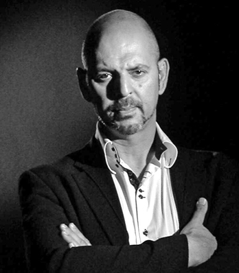

El Instituto Tavistock, un organismo real situado en Essex, Inglaterra, es considerado el máximo centro mundial de control mental creado durante la Segunda Guerra Mundial bajo los auspicios de la familia Rockefeller. Una sofisticada organización creada para cambiar el paradigma de la sociedad contemporánea. «Todo lo que ha habido, desde la Nueva Izquierda hasta el Watergate, Vietnam, los Papeles del Pentágono, el movimiento hippie, el movimiento contra la guerra y la contracultura de las drogas y el rock, han sido proyectos de ingeniería social planificados de antemano», asegura Estulin.
Este libro revolucionario revela los orígenes y el modus operandi del Instituto, quién está detrás del mismo, cuáles son sus objetivos y cómo nos afecta en nuestra vida cotidiana.
Daniel Estulin
ePub r1.2
RLull 04.01.16
Título original: The Tavistock Institute
Daniel Estulin, 2011
Traducción: Cristina Martín
Diseño de cubierta: RLull
Editor digital: RLull
ePub base r1.2
Introducción
1. La contrainsurgencia >>
2. Tavistock y la Perversa Alianza >>
3. Matar al Rey >>
4. Las puertas de la percepción: La revolución psicodélica de la CIA >>
5. La televisión >>
6. La cibernética >>
7. El Instituto Tavistock y la ciencia ficción >>
8. George Gershwin se anota un tanto con el tema Do It Again >>
La localidad de Tavistock, en el condado de Sussex, Inglaterra, es el centro mundial del lavado de cerebros en masa y de la ingeniería social. Después de haber tenido un comienzo un tanto difícil en Wellington House, allí creció una compleja organización que habría de dar forma al destino del planeta entero, al tiempo que cambiaría el paradigma de la sociedad moderna.
En este revolucionario trabajo, que sin duda tendrá el efecto de una explosión nuclear de quinientos kilotones, descubrimos tanto la red de Tavistock como los métodos de lavado de cerebro y guerra psicológica que se están adaptando, en este preciso momento, con la intención de aplicarlos a proyectos de ingeniería social a gran escala.
Se trata de la «Conspiración de Acuario», nombre que se dan a sí mismos los lavacerebros y que hace referencia a un estudio supersecreto llevado a cabo en 1974 en el Instituto de Investigación de Stanford, titulado «Cambiar las imágenes del hombre». Se puede considerar el presente libro, esencialmente, un manual para combatir el lavado de cerebros. El lavado de cerebros depende de la ignorancia de las víctimas. Está en todas partes. Todos percibimos la desintegración de nuestras naciones en el día a día, en las experiencias personales. Sin embargo, no se trata de una coincidencia. Ni de un accidente. Lo que estamos presenciando es la desintegración de la economía mundial, planificada por las personas más poderosas del mundo. En este libro, que habla del Instituto Tavistock, se intenta demostrar que dicha conspiración es real, revelar quién forma parte de ella, cuáles son sus objetivos a largo plazo y cómo podemos evitar que nos manden a todos al infierno. Aparte de sentir indignación y rabia, usted, lector, llegará a la conclusión de que se trata del declive moral, material, cultural e intelectual que todos los días presenciamos en el mundo entero; sumidos en la impotencia, no accidental. No es Dios quien nos castiga por lo que hacemos mal en la Tierra, sino una crisis social inducida expresamente.
Repito que esto no es una prueba. Esto es real, y lo que está en juego es el futuro de nuestro planeta. Toda clase de degeneración musical es un producto fabricado por orden de un laboratorio, todo ecologista a quien no hayan lavado el cerebro ha logrado huir de un laboratorio de ingeniería social. Todo drogadicto es un producto secundario de una política gubernamental de futuro, cuyo objetivo final es la destrucción del espíritu humano y la degradación del hombre. Todos los defensores a ultranza del yoga, de la meditación trascendental, de la telekinesia, del radicalismo de izquierda y de derecha, de la educación de la sensibilidad bahái y de la percepción extrasensorial, de la conciencia cósmica, de la aberración que supone la Nueva Era o New Age, de las chemtrails, todos los seguidores de las experiencias cósmicas y quienes creen en la «concienciación» forman parte de una conspiración única, centralizada y coherente, surgida de algún proyecto patrocinado por un gobierno y financiado por una fundación. ¡Bienvenidos! ¡Pónganse cómodos! ¡Todos los pirados del mundo, juntos en el aquelarre más impresionante que se ha visto jamás!
En el mundo del humo y de los espejos no hay casualidades, coincidencias ni accidentes. Esto lo demostramos más allá de toda duda razonable, tal como haríamos si estuviéramos dirimiendo este caso ante un tribunal de justicia. Para nuestro objetivo tan sólo servirá el más elevado estándar de excelencia y de verificación. Es mucho lo que hay en juego, y tenemos demasiadas posibilidades en contra. Lo que está en la balanza no es el futuro del planeta, la inmortalidad de la raza humana y la supervivencia de nuestra especie. Lograremos imponernos. Lograremos el éxito, cueste lo que cueste. No hay segundas oportunidades, terceras opciones ni cuartas vías. Esto es así, y con el presente trabajo, que resistirá el paso del tiempo, he trazado una raya en la arena. ¡No pasarán! No nos rendiremos.
Durante la Segunda Guerra Mundial, Tavistock fue el cuartel general de la Oficina de Guerra Psicológica del Ejército británico, que, por medio de lo que disponía la Ejecutiva de Operaciones Especiales, también dictaba la política que habían de seguir las Fuerzas Armadas de Estados Unidos en lo referente a la guerra psicológica.
¡Mire a su alrededor! A consecuencia de un ataque frontal a nuestro futuro, perpetrado por los más destacados sociólogos e ingenieros conductuales de todo el mundo, se rompieron las anclas que sujetaban la intención moral de las naciones. Nosotros, el pueblo, hemos sucumbido a una irracional indiferencia hacia lo moral. No se confunda, todo lo que ha habido desde la Nueva Izquierda hasta el Watergate, Vietnam, los Papeles del Pentágono, el sucio, asqueroso e inmoral movimiento hippie, el movimiento contra la guerra y la contracultura de las drogas y el rock, han sido asimismo proyectos de ingeniería social planificados de antemano.
Repito, lo que se ataca no son solamente nuestros derechos individuales, sino más bien la institución misma de la república «estado-nación», partiendo del mastodóntico programa de ingeniería social ideado por los oligarcas y llevado a la práctica a través del Instituto de Relaciones Humanas de Tavistock y de otra red, mucho más grande, integrada por centros de psicología social aplicada y de ingeniería social que surgieron después de la Segunda Guerra Mundial. Dichos grupos nos ven y ven los principios de los estados-nación como claros enemigos filosóficos.
Esta monstruosa maquinaría del mal está compuesta por algunos de los centros más prestigiosos del mundo, dedicados a la investigación y al estudio, como por ejemplo el Stanford Research Centre de la Universidad de Stanford, la Rand Corporation, el MIT/Sloane, el Advanced Centre of Behavioural Sciencies de Palo Alto, el Institute of Social Research de la Universidad de Michigan, la Wharton School of Business de la Universidad de Pensilvania, la Harvard Business School, la London School of Economics de Londres, los National Training Laboratories, el Hudson Institute, el Esalen Institute, el National Institute of Mental Health, el National Institute of Drug Abuse, la Office of Naval Research. Hay otros, como la International Foundation for Development Alternatives y el Executive Conference Centre, ambos con sede en Ginebra, la primera escuela para graduados a jornada completa de la Era de Acuario, para ejecutivos de alto nivel de las quinientas empresas que figuran en la revista Fortune, donde se enseña cómo modificar la conducta. Zombis humanos en puestos de alta dirección que nos conducirán a la Nueva Edad Media de la conciencia trascendental. Dos son los objetivos. El primero, alcanzar los cambios necesarios en Estados Unidos; y el segundo, el orden mundial.
En los últimos cincuenta años, el Gobierno de Estados Unidos, con la ayuda secreta de centros de estudios y fundaciones que siguen la pauta de Tavistock, ha destinado decenas de miles de millones de dólares a financiar la labor de dichos grupos.
Todos los aspectos de la vida psicológica y mental de la población mundial fueron definidos, registrados y archivados en sistemas informáticos. Los grupos de sociólogos, psicólogos, psiquiatras, antropólogos, centros de estudios y fundaciones, que trabajan en estrecha colaboración unos con otros, están presididos por una elite integrada por poderosos miembros de la oligarquía, compuesta principalmente por la antigua Nobleza Negra de Venecia. El lector podría preguntar: ¿Cuál es el propósito de esas modificaciones de la conducta? Implantar cambios forzados en nuestro modo de vida, sin nuestro consentimiento y sin que sepamos siquiera lo que nos está sucediendo. El objetivo último es extirpar por completo el sentido de «identidad» del ser humano, arrancarle el alma y sustituirla después por una seudo-alma artificial, sintética. Sin embargo, para poder cambiar la conducta de los seres humanos, apartarla de la producción industrial y conducirla hacia el espiritualismo, y para hacernos entrar voluntariamente en el mundo de la era posindustrial de crecimiento cero y progreso cero, es necesario forzar un cambio de la imagen que tiene el ser humano de sí mismo, del concepto fundamental de lo que somos. Así pues, hay que buscar la imagen del hombre que resulte apropiada a esa nueva era, hay que sintetizarla y a continuación conectarla al cerebro de la humanidad.
El gobierno totalitario no es el único parámetro del totalitarismo. El poder ilimitado también procede de un «centro omnipresente». En el nuevo movimiento totalitario, esta fuerza directriz omnipresente se comunica por medio de la modificación de la conducta y el cambio de identidad, que son los nodos dominantes del sistema.
El terror psicológico no es la esencia, sino el signo de puntuación de lo que significa el nuevo totalitarismo. El secreto del éxito del movimiento radica en el poder del dinero y del consumo, porque elude hacerse responsable de los fallos del mismo. Los prescritos fracasos del mercado de Wall Street en proteger a las empresas se atribuyen, en cambio, a fuerzas trascendentales de la «mano invisible», que castiga a las empresas por los presuntos pecados cometidos contra las «leyes del mercado». De este modo, cuando suceden catástrofes, que castigan cada vez más a la mayor parte del mundo, se echa la culpa a las propias víctimas de las privaciones, la miseria y la opresión que sufren. Se trata de un método de gobierno mucho más eficaz que el terror por la fuerza, más descarado, que expone al sistema a otra forma de resistencia.
Tener a la mayoría en un estado continuo de ansiedad interior funciona, porque se obliga a las, personas a que estén demasiado ocupadas en asegurarse su propia supervivencia o a competir por ella para colaborar en la construcción de una reacción eficaz. Esto también lleva por todas partes la firma de Tavistock.
En la década anterior, se mantuvo a la población mundial en un permanente estado de inestabilidad a través de continuas debacles económicas y decretos de comercio transnacional, que vaciaron las arcas nacionales y anularon el derecho a la autodeterminación de los países. Las poblaciones se han visto tan abrumadas por el constante avance de la monstruosa maquinaria, de las crisis económicas y medioambientales, que la práctica universal de crear inseguridad ha dejado a las mayorías sociales paralizadas, por un terror de baja intensidad. Condición necesaria para que un movimiento totalitario continúe avanzando, porque su modus operandi consiste en tener a sus súbditos en perpetuo desequilibrio.
En épocas anteriores, hemos visto cómo se tomaban medidas draconianas de alcance nacional, pero nunca una agresión semejante a los derechos de las personas y a las normas democráticas. Cada medida nueva, en sí misma, puede parecer una aberración; pero una serie completa de cambios que forman parte de un continuum constituye un giro brusco hacia la esclavitud. El poder total es un correlato supraterrestre del poder mundial, que no es capaz de concebir límites para sí mismo.
Tenemos que superar muchos retos. Cuando se desvelan los datos, cuando se ponen las pruebas encima de la mesa, cuando los conspiradores han sido desenmascarados y despojados, y sus acciones se han expuesto a la vista de todo el mundo, aun entonces el ciudadano corriente afirma que se trata de una conspiración y se niega a creer que pueda ser real una confabulación tan monstruosa y aplastante…, hasta que ya es demasiado tarde. ¡Queda usted advertido!
Nos encontramos en una encrucijada. Y del camino que tomemos ahora dependerá que vivamos en el siglo XXI como repúblicas de estados-nación o como un montón de esclavos subyugados, diezmados y deshumanizados.
Querido lector, la situación es sumamente grave. Estamos luchando contra el esfuerzo aunado de algunas de las personas más brillantes de la historia, que conspiran contra nosotros con el fin de controlamos. Pero la voluntad del ser humano es inmortal. Los tiranos mataron a cientos de millones de personas y, sin embargo, los pueblos lucharon y acabaron consiguiendo la libertad. La libertad estimula el alma humana; el miedo la paraliza. En medio de la ensordecedora cacofonía del silencio patriótico, las voces insurgentes reclaman atención. La inmortalidad tiene su base moral en la verdad y la incorruptibilidad. Se merece que se le dé todo el respaldo posible. Se merece que se luche y se muera por ella.
Por último, la historia enseña por analogía, no por identidad. La experiencia histórica no consiste en quedarse en el presente y volver la vista al pasado, sino en regresar al pasado y volver después al presente con una más amplia y profunda conciencia de las restricciones de que adolecía nuestro anterior punto de vista.
El grabado número setenta y nueve de la serie Desastres de la guerra, de Goya, muestra a la Libertad, una dama de cabellera rubia, tendida de espaldas y con el busto a la vista, y a unas figuras fantasmales moverse alrededor del cadáver, mientras unos monjes cavan la tumba. Murió la verdad. ¿Es ésa la alternativa? El hombre prevenido vale por dos. No compete a Dios salvarnos, sino a nosotros mismos. Jamás encontraremos las respuestas correctas si no somos capaces de formular las preguntas adecuadas.
DANIEL ESTULIN.
Madrid, 26 de mayo de 2011.
Las técnicas de manipulación psicológica de la sociedad son casi tan antiguas como la humanidad misma. Los señores feudales, con el fin de preservar y consolidar su poder, siempre se valieron de los castigos y la tortura como agentes disuasorios del cambio. Incluso hace mil años, lo que ayudó a las clases dirigentes no fueron las técnicas per se, sino una deliberada aplicación de las mismas a modo de herramientas de la máxima «divide y vencerás». Por muy inhumana que pueda parecer una técnica en particular o una medida terapéutica, no es una acción encaminada a erradicar cualquier insurgencia en sí misma. «La contrainsurgencia no puede desarrollarse apoyándose sólo en el terror; requiere una aplicación consciente y sistemática por parte de la clase dirigente o de sus víctimas».[1] Esto es exactamente lo que se consiguió con la transformación de la psicología y la psiquiatría en los años treinta.
«La primera aplicación masiva de la psicología como arma consciente tuvo lugar en la Alemania nazi, concretamente en la eugenesia, que se basó en las retrógradas fantasías “arias” y se impuso a una parte de la población. Si bien la causa y el desarrollo de la carnicería nazi tuvieron su origen en el desmoronamiento de la economía mundial, su forma concreta, la eugenesia, fue ideada por los teóricos y los técnicos preferidos de los nazis: los psiquiatras».[2]
Desde entonces, la «ciencia de la mente» se ha transformado en el arte de destruirla. Los enfoques legítimos, terapéuticos, han cedido el paso a una seudociencia sobre la modificación de la conducta denominada «terapia de aversión».
Esta transformación de la ciencia de la mente fue modelada por la guerra, la guerra del genocidio mental que libró la burguesía contra la clase trabajadora. La premisa esencial de la labor de Tavistock es que determinados tipos de instituciones «democráticas» representan un instrumento mucho más eficiente para la dictadura fascista que los modelos tradicionales, los claramente «autoritarios».[3] «Desde el gran fraude del petróleo y el lavado de cerebros al estilo de la CIA, las ciencias de la psicología vienen siguiendo la ruta inicialmente dibujada en 1945 por el doctor John Rawlings Rees, gran maestro de la guerra psicológica contra la insurgencia, en su libro The Shaping of Psychiatry by War [La transformación de la psiquiatría a través de la guerra]».[4] Rees pedía que se creasen «tropas de choque»; es decir, grupos de psiquiatras que desarrollaran métodos de control político que empujaran a la mayor parte de la población hacia la psicosis, empleando procedimientos de los llamados programas de modificación de la conducta. Proponía dicha medida para que la población se volviera sumisa al orden económico internacional que seguiría a la Segunda Guerra Mundial.
En 1945, Rees dijo a un grupo de psiquiatras del Ejército de Estados Unidos: «Si nos proponemos actuar a las claras y atacar los problemas sociales y nacionales de hoy, hemos de contar con tropas de choque, es decir, con psiquiatras que la psiquiatría basada únicamente en las instituciones no puede proporcionar. Debemos tener equipos de psiquiatras que puedan moverse y establecer contactos en determinadas áreas y en su zona particular».[5]
La lógica de Rees es clara. Para lograr una verdadera salud mental se requiere una transformación completa de la sociedad de acuerdo con lo que propugna la selección racional. Pero, tal como se lamenta en su libro: «Muchos no lo ven del mismo modo, entre ellos la mayoría de los obreros, que tienen el convencimiento de que todo método de selección es un mecanismo por el cual el malvado capitalismo pretende hacer más rentable el trabajo de sus empleados. Y ése es un argumento muy difícil de rebatir».[6] Desde el punto de vista de Rees, esos opositores, junto con todo aquel que participe en «huelgas» o en «actividades subversivas», son neuróticos que necesitan tratamiento urgente, pero que por desgracia son incapaces de ver que están enfermos. En ese mundo de neuróticos sin conciencia de serlo, la psiquiatría, el otro árbitro de la cordura, sólo puede ser ejercida por un consejo de sabios «de cada país, grupos de psiquiatras, relacionados entre sí», preparados para hacer uso de todas sus armas e influencia para entrar «en el terreno de la política y del gobierno».[7]
Sólo una «conspiración de psiquiatras» —como decía Rees cuando hablaba de su «misión»— podría construir una sociedad «en la que sea posible que todos los grupos sociales reciban tratamiento cuando lo necesiten, aunque no lo deseen, sin necesidad de invocar la ley».[8] Para Rees, la construcción de ese consejo de sabios se convirtió en la «misión» de su vida. Tal como dice L. Marcus en su obra de investigación: «los métodos de Rees se apoyan, de manera total y consciente, en la destrucción de la vida mental de la sociedad mundial y en la marcha forzada hacia el sadismo universal».[9] En esto radica su afinidad: hombres como seres desprovistos de intelecto cuyas mentes, según Tavistock, pueden manipularse y destruir.
Desde entonces, las diversas formas de guerra psicológica desarrolladas en el Instituto Tavistock han constituido el rasgo característico de las actividades de un conjunto de centros de estudios de todo el mundo, relacionados entre sí, que trabajan como órganos de consultoría y llevan a cabo encargos especiales. Organismos gubernamentales y grandes empresas, cuyos estudios de desarrollo y proyectos piloto tienen el claro objetivo de crear técnicas políticas de control social. Rees y Tavistock organizaron su consejo de sabios de acuerdo con el conocido dicho de: «No somos muchos, pero estamos bien situados».[10] Rees conocía bien las estructuras del poder, cómo organizar a personas clave, para promover ideas e influir.
Cuando hablamos de guerra psicológica, con frecuencia hablamos de maneras de aterrorizar al enemigo; y para conseguirlo debemos entender la psique del enemigo, lo que le hace amar, odiar, luchar, huir. Dicho enemigo puede ser extranjero o no, puede tratarse de un ejército de hombres o de una masa enfurecida de trabajadores. Y a fin de encontrar el antídoto eficaz, Tavistock y compañía necesitan entender cómo reaccionará dicho enemigo en situaciones de estrés. ¿Luchará con mayor ahínco o simplemente se rendirá? ¿O se equivocará y le hará ganar la guerra al enemigo, por así decirlo? Los errores más costosos de las operaciones de guerra psicológica siempre son los que se cometen por desconocer la forma de pensar del enemigo. Esto implica que las «tropas de choque» que propone Rees deben tener un profundo conocimiento de la psicología humana, un conocimiento que en sí mismo es una especie de magia negra. Y dado que estamos hablando de una guerra de percepciones, de «maneras de ver el mundo», es importante que los psicólogos, los psiquiatras, los sociólogos y los antropólogos, esos hombrecillos grises sin identificar, vestidos con trajes de franela, que trabajan para Tavistock, comprendan el impacto del arte, la música, la literatura y otras expresiones culturales, y la manera en que dichas formas de expresión representan el modo de ver el mundo.
Y con el tiempo surgirá la tentación de poner a prueba algunos de estos principios en la población de nuestro país. Al fin y al cabo, ¿con qué forma de pensar vamos a sentirnos más familiarizados, si no es con la nuestra? ¿Qué mejor sitio para poner a prueba las nuevas teorías de la guerra psicológica que nuestra población? Como dijo Rees en 1945: «Las guerras no se ganan matando al adversario, sino minando o destruyendo su moral y conservando la propia».
Una de las personas clave que practicaron las técnicas de modificación de la conducta fue Kurt Lewin. Lewin fue el padre de la dinámica de grupos y uno de los primeros expertos que reclutó Rees. Comenzó su trayectoria profesional en la Universidad de Cornell, donde trabajó en una serie de sistemáticos estudios sobre el «efecto de la presión social en los hábitos de la alimentación de los niños».[11] Llegó a Estados Unidos en 1933, en calidad de refugiado de la Alemania nazi. Al igual que otros muchos intelectuales alemanes, se vio obligado a abandonar su país no por diferencias políticas, sino como víctima del antisemitismo hitleriano.[12] De hecho, Lewin es famoso por haber perfeccionado la técnica del «grupo carente de líder» formulada por los nazis y por haberla transformado en una sofisticada herramienta de la contrainsurgencia. Una de las facetas menos conocidas del trabajo de Lewin es la relativa a los programas de la guerra psicológica, sobre todo su empeño en mostrar la relación existente entre la guerra psicológica, el establecimiento de objetivos, las operaciones sobre el terreno y el reconocimiento de la situación. Su primer trabajo fue el de utilizar la «toma de decisiones en grupo» para cambiar las preferencias alimentarias y pasar de la «carne» al «pan integral» como sustituto.
El siguiente pasaje de su libro Time Perspective and Morale [La perspectiva temporal y la moral] ilustra de qué manera entendía él la guerra psicológica: -Una de las técnicas principales para destruir la moral por medio de una %estrategia de terror$ consiste exactamente en la táctica siguiente: que la persona no sepa con claridad en qué posición se encuentra ni qué puede esperar. Si, además, se confunde su %estructura cognitiva$ sobre dicha posición mediante decisiones poco claras en cuanto a tomar medidas disciplinarias severas o proporcionar un trato amable, junto con la propagación de noticias contradictorias, es posible que la persona llegue a no saber siquiera si un plan en particular va a acercarla o alejarla de su objetivo. En esas circunstancias, hasta las personas que tienen objetivos claros y están dispuestas a correr riesgos quedarán paralizadas por un grave conflicto interno respecto de lo que deben hacer+.[13]
La propuesta más significativa que hizo Lewin en el período de la Segunda Guerra Mundial y durante la etapa que siguió fue su concepción del «fascismo de rostro democrático». El rasgo psicopatológico que tienen en común todas las reivindicaciones fascistas es el infantilismo, que se define por sus intentos de imponer el principio de la familia autónoma ampliada y de ignorar la realidad del mundo exterior. Por ejemplo, «nacionalismo» (madre patria), «racismo» (madre), «grupo de idioma» (lengua materna), «grupo de afinidad cultural» (tradiciones familiares), «comunidad» (familia ampliada, vecindario).[14]
Lewin fue el primero en darse cuenta, mediante la atenta observación de los sujetos estudiados, de que la imposición de formas de organización en grupos pequeños y «reformas estructurales» corporativistas características del fascismo podrían inducir a una ideología fascista en una población dada. En una sociedad sensata y moral, las propuestas de Lewin servirían de papel higiénico y el propio Lewin habría sido encerrado y recibido atención psiquiátrica. Sin embargo, le dieron un montón de dinero, la ciudadanía estadounidense y una beca de los Rockefeller para que ideara proyectos de ingeniería social. Lewin propuso que mediante el uso de técnicas de lavado de cerebro destinadas a «grupos pequeños», se podría establecer una forma de dictadura fascista más eficiente. -El número y la notoriedad de una horda de agentes autoritarios, propia del régimen nazi, podría reducirse si se crearan pequeños %grupos comunitarios$ que se administrasen solos. Ellos mismos consideran que existen gracias a la capacidad que tienen como personas para influir en la conducta de quienes se encuentran en su entorno inmediato+.[15] El resultado, pensaba Lewin, sería una forma de fascismo más eficiente, que tendría la apariencia de una democracia especial. En otras palabras: -Si el mundo atomizado de la persona se transforma en un entorno controlado de acuerdo a esas %reformas estructurales$ fascistas, la mente de la víctima descubrirá que sólo su potencial yo paranoico le proporciona el medio para estar en concordancia con dicho entorno controlado+.[16] Es decir, el fascismo es el mundo deseado que aparece en los sueños paranoicos del inconsciente.
Lo que resulta innegable es que Rees y Tavistock realmente organizaron un consejo de sabios cuya misión era reunir a «quienes están intentando “restablecer” el mundo» tras la guerra. Dada la formación militar, psiquiátrica y de otro tipo que poseían los cuadros fascistas del núcleo duro, el establecimiento de un orden político fascista se llevaría a cabo, según el modelo tavistockiano de Rees-Lewin, siguiendo los pasos que se indican a continuación:
1.Desmantelar las instituciones democrático-constitucionales existentes. Las fuerzas militares y policiales se reorganizarían para la «acción civil», tal como ocurre actualmente en Estados Unidos. Una de las medidas menos conocidas que está considerando el Gobierno es la sustitución de las fuerzas policiales ordinarias, tanto locales como nacionales, por una fuerza policial nacional de contrainsurgencia que siga el modelo de la Gestapo de Hitler, como la Real Policía Montada de Canadá. Al mismo tiempo, los organismos públicos existentes serían destruidos por una insurgencia organizada de manera «espontánea». Se emplearían grupos de «control de las comunidades locales» para destruir instituciones políticas de base amplia. Entre los reclutados para ejercer un control fascista de las comunidades, las pandillas y las contrapandillas callejeras se encargarían de propagar la delincuencia y los enfrentamientos violentos entre ellos, ambos bajo el control y la dirección de operativos de inteligencia ocultos. Esta insurgencia programada de pandillas y contrapandillas, mezclada con ciertas dosis de bandas terroristas controladas por la Policía, crean el caldo de cultivo para que la mayoría de la población tolere de mejor grado e incluso exija más participación y contundencia del gobierno militar y policial, creando así el régimen fascista «democrático» que se pretende.
2. Eliminar mediante la subversión, el asesinato, la intervención militar, los embargos o las revueltas populares y «espontáneas» el régimen que ya no resulta útil y nombrar un gobierno civil «democrático». Este gobierno «democrático» sólo podrá funcionar dentro de los límites definidos por los representantes de los organismos supranacionales.
Los temas concretos tendentes al establecimiento de un «fascismo de rostro democrático» son los siguientes:
1. «Estudios psicológicos de la población de la zona.» Durante la Segunda Guerra Mundial, los servicios angloamericanos de guerra psicológica llevaron a cabo una serie de estudios de un número concreto de susceptibilidades neuróticas de diversas culturas nacionales. El más famoso de todos fue el denominado «Estudio del Bombardeo Estratégico». Se concibió como base para coordinar el bombardeo de Alemania por parte de los aliados, a través de la propaganda y otras campañas de guerra psicológica destinadas a minar la moral de diversos sectores de la población del Tercer Reich, y fue el precursor de la «Operación Phoenix» contra Vietnam dirigida por la CIA, una operación de genocidio llevada a cabo en Vietnam del Sur contra quienes apoyaban al Vietcong. En pocas palabras, el «Estudio del Bombardeo Estratégico» definió cuáles eran los mejores métodos para destruir la moral de la población civil con el menor coste posible.
2. Los medios de comunicación. El empleo de importantes medios de comunicación y de medios culturales como instrumentos para inducir a las pretendidas formas de locura social en grandes poblaciones. En general, cuando se controlan las políticas de la prensa, el sesgo de la información relativa a los asuntos nacionales e internacionales, las agencias de prensa más importantes y los principales medios de comunicación de masas determinan qué ha de saber la población y qué ha de considerar creíble. El falseamiento deliberado y habitual de la información consigue «insensibilizar» a la población, haciendo que la interpretación, socialmente aceptada, de las relaciones causa-efecto viole la interpretación racional y sensorial de la experiencia. A esto se suma también la introducción ex profeso de material psicológico subliminal, cuyo efecto predeterminado es el de acentuar los impulsos infantiles en determinados sectores de la población; tales como relatos «de interés humano», que resultan relativamente más gratificantes para los impulsos infantiles, que restan énfasis a una visión racional y científica.
Control de las comunidades locales. «El objeto del “control de las comunidades locales” como táctica fascista de contrainsurgencia es fragmentar a la población objeto en agrupaciones políticas relativamente herméticas»,[17] reduciendo las diferencias de dichos grupos al separarlos por raza, sexo, len gua materna, cultura, país de procedencia, aficiones, edad y vecindario. Hacer que los grupos compitan unos con otros en circunstancias de austeridad general es una eficaz técnica que utilizó Lewin para inducir al lavado de cerebro en dichos grupos y a un progresivo deterioro psicológico que desembocara en perversas seudofamilias polimórficas y en una clara psicosis clínica.
-El primer grado de lavado de cerebro se consigue poniendo la %autonomía de la comunidad local$ en principio en contra de la tecnología de los %grandes negocios$ y de programas progresistas+,[18] cuya finalidad es mejorar la vida de las personas que están dentro de esa comunidad. -Los programas que ponen énfasis en los avances tecnológicos son acusados de ser esfuerzos de %grupos elitistas externos$ que pretenden interferir en los asuntos autonómicos del grupo local+. A esas alturas, el «grupo comunitario» ya se ha vuelto funcionalmente semipsicótico y clínicamente paranoico como grupo. Hasta el punto de que los miembros restringen su identidad social a lo que ocurre dentro de ese grupo, el esfuerzo que hacen para adaptarse a los ideales del grupo induce a un correspondiente estado patológico de dichos miembros.
«Al hacer que dichos grupos compitan entre sí y se separen por sexo, razas, ingresos económicos, etcétera, se intensifica la paranoia y aumenta el movimiento que conduce a un estado semipsicótico»,[19] a medida que los subgrupos de esa comunidad, cada vez más pequeños, se ven enfrentados unos a otros en abierta hostilidad.
3. La aplicación a «grupos carentes de líder» de técnicas de lavado de cerebro para pequeños grupos con una tarea en común. Estos grupos funcionan en un entorno donde los ingresos reales se han reducido y las condiciones de trabajo se han degradado. En situaciones de estrechez económica, el lavado de cerebro consiste en obligar a los trabajadores a compensar una parte de los ingresos perdidos acelerando con ingenio el ritmo de trabajo. Formando a los empleados y desempleados, implantando programas de recolocación a gran escala, introduciendo «incentivos en grupos de trabajo» y haciendo que compitan entre ellos, se transforma un equipo pequeño de producción en un grupo que puede lavarse el cerebro a sí mismo. «En estas circunstancias, la semipsicosis y la psicosis hacen que el grupo consiga “voluntariamente” aumentar la productividad de un modo que no se habría conseguido imponiéndoselos por la fuerza. Los miembros de esos equipos sin líder y que se han lavado el cerebro a sí mismos emulan el síndrome del “caballo de carreras”, que consiste en correr, llevado por la histeria, a un ritmo que resulta literalmente suicida. El Instituto Tavistock y la Universidad de Pennsylvania son dos de los centros más conocidos donde se desarrollan dichas prácticas experimentales».[20]
Una de las áreas clave del control de la población es la de la contrainsurgencia. Quienes ya conozcan el dicho que apunta que nadie abandona la CIA a menos que esté a dos metros bajo tierra, es probable que se hayan preguntado cómo es posible ejercer dicho control. La respuesta es: en parte utilizando los insidiosos métodos del doctor John Rawlings Rees y sus predecesores nazis. Así lo explica Peter Cuskie: -En la CIA, antes de aceptar la formación de un agente, ya se le ha lavado el cerebro durante el proceso de selección+. Los grupos “carentes de líderes” de Rees eran en realidad grupos de candidatos arteramente manipulados por programadores externos en situaciones totalmente inventadas y controladas. En 1946, Nathan Kline, que en aquel momento servía en la Administración de la Marina de Guerra de Estados Unidos, describió un proceso de selección de oficiales que había sido diseñado personalmente por Rees para los marines norteamericanos, poco después de la guerra.
-Se seleccionaban veinte candidatos, que formaban un grupo, y se les decía que su futuro en calidad de escuadrón de los marines dependía de que batieran el récord de todas las demás unidades de marines que habían intentado resolver el problema que se les iba a plantear a continuación. Seguidamente, se les decía que imaginasen que estaban en una isla desierta y que tenían frente a sí la balsa salvavidas, sin desembalar, que había llegado flotando hasta la orilla. Apelando convenientemente a su %espíritu de equipo$, se les daba la instrucción de que superasen el récord en la operación de montar la balsa y salir de la isla.
+Los especialistas en la guerra psicológica, que estaban de pie a un costado, observaban atentamente la manera en que cada miembro del grupo afrontaba el problema. ¿Se lanzaba inmediatamente al método de ensayo y error o se quedaba quieto y estudiaba una solución global? ¿Demostraba interés y un entusiasmo ciego o se apartaba de la situación, con actitud distante? ¿Qué hombre daba un paso al frente para asumir el liderazgo y conseguía establecer una disciplina de grupo y sacar el %espíritu de equipo$ que llevaban todos dentro?
+Cuando ya tenían identificado al %líder$, se empleaba una estratagema (como por ejemplo una supuesta invasión al otro lado de la isla) con el fin de hacerlo abandonar el grupo acompañado de tres o cuatro hombres. De ese modo se creaba una situación nueva para que los expertos en guerra psicológica pudieran observar la aparición de un nuevo %líder del equipo$+.[21]
Una de las finalidades de estas tácticas insidiosas y artificiales era la de fomentar el ciego «espíritu de equipo» y seleccionar a sus «líderes» más fanáticos y competentes. Otra, junto con el cuestionario de la «historia personal» y otras pruebas que tuvo que superar el candidato, era, tal como lo dice sin ambages el departamento de Evaluación del Personal, recabar información sobre el «perfil psicológico» de cada hombre para utilizarlo posteriormente.
-Aun así, seguía siendo necesario destruir toda resistencia del verdadero ego que pudiera todavía mantener el candidato. Ésta era la intención que subyacía en las pruebas de estrés de Rees. Una de dichas pruebas fue utilizada por John Gardner en la Oficina de Servicios Especiales (OSS) [...] En esta táctica de lavado de cerebro, al candidato se le daban doce minutos para que construyera una %historia creíble$ que pudiera sostener ante los interrogadores, en el caso de que lo %sorprendieran$ robando documentos marcados con la palabra %SECRETO$ en algún organismo gubernamental de Washington. Al candidato se le decía que se trataba de una prueba decisiva que fomentaba la interiorización de una plausible nueva identidad, y se le advertía que las respuestas que diera a los interrogadores no debían comprometer la seguridad organizativa de la Office of Strategic Services (OSS) ni desvelar la tapadera tras la que se ocultaban.
+Cuando el candidato terminaba de idear su coartada, era conducido a un cuarto oscuro, se sentaba de cara a una luz cegadora ante tres agentes. A lo largo de varios minutos, aquellos especialistas en lavado de cerebros casi siempre hacían trizas la historia que había elaborado a toda prisa el candidato sirviéndose de varios métodos de %poli bueno`poli malo$, preguntas inconexas y capciosas bien preparadas, agresión física, etcétera. Casi sin excepción, el candidato quedaba desorientado y confuso. Seguidamente, los agentes interrumpían el interrogatorio de forma brusca diciendo: %Ya tenemos pruebas suficientes de que no nos ha dicho la verdad. Eso es todo$. Acto seguido, el grupo de interrogadores, haciendo mucho teatro, intercambiaba una serie de cuchicheos y decía: %Se llama usted Jones, ¿verdad...? Pues consideramos, Jones, que no ha superado la prueba$.
+El candidato, alicaído, a continuación recibía la orden de regresar al piso de arriba. Allí se encontraba con un miembro de la dirección que fingía solidarizarse con sus sentimientos y su miedo en un ambiente agradable, después de la tensión sufrida anteriormente. La mayoría de los candidatos hundidos abría su corazón y hablaba de su infancia como reacción a preguntas del estilo: %Como psicólogo que soy, he estado pensando que a lo mejor usted vivió en su infancia situaciones un tanto similares ¿ésta, en las que ocultaba cosillas sin importancia cuando su madre le cuestionaba algo$. Por lo general, el candidato, en un patético despliegue de ingenuidad, se ponía a hablar sin parar de su madre, de sus primeras experiencias sexuales, etcétera. A esas alturas, la OSS no sólo tenía el perfil psicológico que buscaba, sino que, además, había aplastado los últimos vestigios que quedaban del ego de su machacado aspirante a agente, y ya se encontraba en posición de manipularlo y programarlo, casi a voluntad, para que colaborase con el %equipo$.
+La utilización más actual de estos métodos de lavado de cerebro por parte de los Servicios Especiales angloamericanos fue desvelada el 27 de enero de 1974, sin querer, por el Sunday Times de Londres, en un artículo que hablaba de las fuerzas especiales del Ejército de Estados Unidos, titulado %New Secret Service$ [El nuevo Servicio Secreto]. En él, el Times describía las técnicas de contrainterrogatorio que se emplean hoy en día.
+El programa de lavado de cerebros, que consta de cuatro pasos, comienza poniendo a prueba la sensibilidad del sistema nervioso proyectando en una pantalla palabras o símbolos durante fracciones de segundo, con el fin de averiguar con qué se consigue %quebrar$ psicológicamente a la persona: con la tortura física o con el aislamiento. El segundo paso consiste en hacer añicos la identidad del soldado enseñándole a desarrollar un %álter ego plausible$ (coartada). El tercer paso es una agresión brutal en grupo o en sesiones de autocrítica, que buscan destruir todavía más el ego, supuestamente para %simular$ un interrogatorio llevado a cabo por el enemigo. Y el último paso consiste en preparar al soldado para que venza al detector de mentiras, empleando, entre otras cosas, el método de combinar sacudidas eléctricas con palabras del acervo cotidiano. Esta técnica sin duda le resultó muy valiosa a la CIA cuando preparó a veteranos a los que se había lavado el cerebro para que formaran parte de brigadas especiales. En su página sobre %contrainterrogatorios$ dice:
+%Esas palabras de uso cotidiano adquieren un significado emocional especial para el hombre que está siendo entrenado para determinada misión. Así, en un interrogatorio, entre el control y la preparación física, la reacción del hombre resultará caótica y engañosa$+.[22]
La OSS y la CIA no son las únicas que han hecho uso de las técnicas y los sistemas más modernos y actualizados de contrainterrogatorio y adoctrinamiento de agentes. Poco después, Tavistock desarrolló nuevos métodos, cada vez más complejos, para controlar la mente. Para lavar el cerebro de sus víctimas, Tavistock empleó diversas formas de coerción, hipnosis y drogas psicológicas, para reproducir el mismo formato básico: inducir un fortísimo estrés físico o psicológico en la persona y a continuación aliviarlo. Entre el estrés y el alivio, los sujetos, ya fueran reclutas del ejército, agentes de inteligencia o civiles, terminaban profundamente sugestionados.
El «impoluto cuarto oscuro», donde la OSS los interrogaba, se convirtió, literalmente, en la cámara de los horrores para los nuevos reclutas del MI6 británico. Uno de esos cuartos secretos, reservado para los “Proyectos Gubernamentales Especiales”, era el de Powergen, en Solihull, Reino Unido.
Corría el año 1979. Los jóvenes reclutas de la Inteligencia Británica que entraban en aquel edificio no tenían ni idea del infierno que los aguardaba. No tenían ni idea, tal como escribe Richard Tomlinson, ex agente del MI6, «de que se los iba a obligar a convertirse en esclavos de un demoníaco programa de control mental llevado a cabo por el MI6 y autorizado por la Francmasonería del Real Arco a través del Instituto Tavistock».
En 1979, en Powergen, a Richard Tomlinson, un recluta de veintiún años que asistía a su primer curso INSET de la Inteligencia Británica, le enseñaron por primera vez una fotografía de pasaporte de Viadimir Putin que le había proporcionado uno de los contactos de Oleg Gordievsky. Gordievsky, el funcionario de mayor rango del KGB que había escapado a Occidente, era un francmasón del Real Arco.
El curso fue dirigido por Stelia Rimington (MI5) y John Scarlett, el director general de los módulos del MI6. Los dos programas diseñados por Tavistock para los graduados en prácticas de la Inteligencia Británica eran:
1. El programa «Bestia del MI6»
2. El programa «Quesos apestosos», junto con «Juan Salvador Gaviota».
El primero se refiere al programa del «superordenador», que formaba parte del Control mental de todos los reclutas durante el período de formación, tanto en el MI5 como en el MI6.
Una de las tareas impuestas a los reclutas por los programadores del control mental que dirigían el curso de la Francmasonería del Real Arco era la «búsqueda del tesoro». Dicha búsqueda tenía por objeto poner a prueba la habilidad para «espiar» y su sadismo general. Parte del «curso» se basaba en un juego que practicaban los antiguos soldados romanos con sus prisioneros: el rito de Saturno. En pocas palabras, se trataba de un juego sadomasoquista en el que se torturaba y maltrataba a los reclutas como se hacía con los prisioneros en la antigua Roma. La práctica se llamaba la «Vía Dolorosa».
«Vía Dolorosa» era una tortura diseñada por Tavistock en la que se empleaba el agua. Los «programadores» de la Inteligencia Británica provocaban en el recluta una experiencia cercana a la muerte para obligarlo a obedecer. Además, era una forma de separar a los débiles de los fuertes. Los programadores torturaban sin cesar a los reclutas a fin de hundirlos psicológicamente. La idea era que un iniciado no les servía de nada si era capaz de desobedecer órdenes de arriba. Algunos no llegaban a recuperarse de la experiencia vivida. Simbólicamente era un proceso de nacimiento, muerte y resurrección. Primero un via crucis; luego, a la mayoría de los iniciados se los llevaba a Jerusalén a recorrer la Vía Dolorosa, con el fin de reforzar su programación. Acababan pareciéndose a Cristo.
El programa «Quesos apestosos» se llevaba a cabo leyendo y escenificando la novela Tres hombres en una barca, de Jerome K. Jerome, publicada en 1889.
En el capítulo 4 de la novela, se habla de lo importante que es no tocar los «quesos que apestan» durante un viaje, es decir, no tocar la mercancía; ¡ni siquiera después, una vez llegados al destino! A todos los contrabandistas les preocupa mucho la seguridad del material de contrabando, y de ahí la importancia de esta parte del programa.[23]
Tomlinson, en su biografía no oficial publicada por él mismo, The Golden Chain [La cadena de oro], cuenta que -a los otros reclutas que estaban siguiendo este curso les aplicaban tremendas descargas eléctricas después de la actividad de %formación$, es decir, después de escenificar esa pequeña obra de teatro, y se les ordenaba que se sentaran delante de un gran ventanal. Era una práctica de %relajación$ para contrarrestar el estrés. Los jóvenes se sentaban allí y se quedaban mirando fijamente al cielo haciendo rechinar los dientes (una reacción normal al electroshock). En aquella fase, a veces les ponían la canción %Mr. Blue Sky$ de la ELO, para %rejuvenecer su espíritu$.[24]
El objetivo principal del programa “Quesos apestosos” del MI6 era encargar a los futuros reclutas de la Inteligencia Británica en “año sabático” diversas “misiones” por el mundo. Es decir, llevar material de contrabando a círculos dominados por los británicos que tenían su origen en las “líneas de serpiente” del Imperio Británico»,[25] en clara referencia a las rutas asiáticas de la droga y, sobre todo, a las rutas africanas de los diamantes.
El programa «Quesos apestosos» se ponía en marcha al tiempo que el de «Juan Salvador Gaviota». ¿Para qué? Para estimular y entrenar a los que habían sido captados «a distancia» y que más tarde regresarían, igual que «palomas mensajeras», cuando el programador los llamara.
Vayamos hasta finales de la primavera de 1980: hasta el monasterio del complejo ruso, en Ein Kerem, Jerusalén, propiedad de la Iglesia ortodoxa rusa. En 1980 se decía que era un convento de monjas, aunque se sabía que era un «centro de espías» del KGB. Según Tomlinson: «Viadimir Putin y demás francmasones del Real Arco del KGB se alojaron en este complejo de máxima seguridad. Los reclutas de la Inteligencia Británica lo hicieron principalmente en el “albergue juvenil” situado detrás de la iglesia de San Juan, en el centro de Ein Kerem. Una parte del monasterio se encuentra en la ladera del monte que se eleva junto a la ciudad; detrás tiene un pinar.»
Lo que resulta desconcertante en este universo de humo y espejos patas arriba es que, según Tomlinson, «por las tardes, los “graduados” se sentaban a fumar, beber vodka y charlar, junto con sus homólogos rusos, en el porche de los edificios». Tomlinson hablaba ruso y, de hecho, hizo de intérprete para el grupo.
Este iba a ser el primero de muchos futuros encuentros entre Richard Tomlinson y Vladimir Putin. Putin era unos cuantos años mayor, tendría veintiséis o vientisiete años, pero parecía mucho más joven.
Vayamos, ahora, a 1993. Polonia. En aquel momento, cuando la Unión Soviética estaba desintegrándose y cayendo en el olvido, Polonia se transformó en el mercadillo más grande del mundo para los servicios de inteligencia. Poseía la mayor riqueza minera del planeta, las mayores reservas de petróleo y más madera que el Amazonas, por no mencionar el inmenso almacén de armas de la época soviética, el país estaba siendo esquilmado de todos sus bienes. El objetivo de los servicios era conducir a Rusia a la anarquía, hasta el punto de que ésta no pudiera hacer frente a las operaciones militares de Occidente.
-Nadie sabía en realidad quién trabajaba para qué organismo ni qué organismo era aliado de quién, en lo que resultó ser una pelea de bar donde todos robaban lo que podían. Se podría nombrar al MI5, al MI6, a la CIA y al IRA, que fueron algunos de los que participaron en aquella refriega; la fiebre por hacerse con información, drogas, armas..., de todo. Casi todos los organismos de inteligencia y casi todas las organizaciones mafiosas estaban en el ajo+.[26]
Todo estaba en venta. Por las autopistas viajaban camiones repletos de rublos soviéticos. Muchos se utilizaron en complejas operaciones de canje en las que se despilfarraron miles de millones de narcodólares para pagar a la mafia calabresa, la Ndrangheta. Numerosos bancos occidentales de primer orden, como el New York Bank, el Goidman Sachs, el Fleet Financial y el Bank of Boston, se llevaron un botín de casi quinientos millones de dólares.
Tal como explica Tomlinson:
-Vladimir Putin había perdido su puesto de director del KGB de la Stasi, en Berlín Este. San Petersburgo sufría una hambruna y el KGB debía a sus empleados varios meses de salario. Familias enteras morían de hambre en las ciudades y la de Vladimir Putin no fue una excepción+.[27]
Putin necesitaba ayuda y la buscó en las personas que supuestamente eran sus enemigos. John Scarlett, de la sede del MI6 en Moscú. Scarlett, al igual que Putin, era un francmasón del Real Arco.
Tomlinson no es capaz de arrojar ninguna luz sobre el pacto que firmó Scarlett con Putin, pero sí aporta algunos datos valiosos.
Putin, según el ex agente del MI6 Richard Tomlinson:
-... estaba desde 1979 en el programa de control mental del MI6/ Francmasonería del Real Arco y hasta 1994 había sido uno de los agentes que operaba en el KGB.
+Putin necesitaba una salida segura para su familia y para él que lo sacase de la situación en que se encontraba en San Petersburgo, donde todo se deterioraba rápidamente. Scarlett había accedido a proveerlo de una nueva identidad en Reino Unido, como profesor de alemán (Putin tenía la fluidez de un nativo)+.[28]
Su esposa y sus dos hijas irían más adelante. Sin embargo, a mitad de camino, Scarlett renegó del pacto. El MI5, en lugar de conceder a Putin un salvoconducto que lo sacara de Rusia, decidió, por razones que se desconocen, torturarlo y asesinarlo en cuanto pusiera un pie en suelo británico.
Pero el MI5 subestimó al futuro presidente de Rusia, Vladimir Putin. Por medio de una amplia red de contactos, Putin se enteró de los verdaderos motivos que tenía el MI5, anuló el acuerdo y regresó a Rusia.
En 1994, Putin contraatacó. Aquel año comenzaron a desaparecer de Europa los ordenadores portátiles del MI6. Putin y sus socios estaban siguiendo el rastro de altos funcionarios del MI6, que guardaban información en sus ordenadores portátiles, información codificada mediante colores, de los programas de control mental confeccionados a la medida de sus funcionarios y agentes. Tomlinson explica que…
-... cuando se descifran los códigos, resulta relativamente sencillo controlar a cualquiera de los operativos que figuran en la lista, y también saber cómo hacer para controlar a otros que han sido %adoctrinados$ de un modo similar y volverlos contra sus %amos$+.
La pista principal habría de encontrarse en una antigualla, una máquina de escribir británica «55 Imperial 55», que se exponía en el museo de la cárcel de Jerusalén. El código impreso en las teclas era el siguiente:
1. $SV
2. XDM
3. KGB
4. RKK
5. AAN
6. TYM
7. ZKTZ
8. NLT
9. SKTZ
O. PF!
Estas diez secuencias representan diez ramas distintas de los departamentos de la Inteligencia Británica en los que ha habido francmasones del Real Arco infiltrados, desde su creación (MI1) hasta los nombres con que se conocen en la actualidad, MI5 y MI6. Por ejemplo, la pista 7 es ‘zygote’ [zigoto] (Zayin, Chet, Tzadik, en hebreo), que representa al Genome Real Project. Y la pista 9 es ‘sex kittens’ [gatitas del sexo]. Todos estos departamentos siguen existiendo hoy en día.
Los francmasones del Real Arco del KGB constituían uno de esos departamentos, dentro de esta organización masónica semejante a una tarántula.
La CIA no iba muy a la zaga del MI6 británico en lo referente al lavado de cerebros. Se dio cuenta de que el método menos convencional consistía en servirse del «papel que desempeñan los factores sociales al orientar la mente de los agentes hacia las necesidades de la Agencia». En otras palabras, las tácticas de lavado de cerebro individuales, tales como la terapia de electroshock o el uso de drogas, aunque eran potentes, no tenían color al lado del poder de la sugestión en lo que se refería a forzar la conducta de la persona. De modo que Rees y sus socios exploraron los profundos recovecos de la mente humana y adoptaron el enfoque objeto-relaciones de la literatura universal, que ponía énfasis en la imaginería y en el simbolismo, y no en los impulsos instintivos y en la energía psíquica. Empleando la teoría que llevaba asociada, la idea consistía en recrear el mundo imaginario de una obra inmortal de la literatura en la mente de los sujetos y hacer uso de dicha obra de arte para fines inmorales. En manos de Rees y Tavistock, dichas técnicas terminaron siendo un terreno de pruebas para crear e institucionalizar nuevas formas de control psicológico.
EL PÁJARO AZUL DE LA FELICIDAD
La Tierra de la Memoria ha sido siempre el objetivo principal de las operaciones de control mental y de la contrainsurgencia. Existe una frase que quizá no se emplee hoy en día tanto como en los albores del siglo XX: «El pájaro azul de la felicidad.» Una cosa de la que es posible que mucha gente no se dé cuenta —y de la que tampoco fue consciente en su día— es que esta frase tiene su origen en El Pájaro Azul de la Felicidad (1909), la obra más famosa del escritor y dramaturgo belga Maurice Maeterlinck, ganador del premio Nobel. En esta obra de teatro aparecen dos niños que parten en busca del Pájaro Azul de la Felicidad. Su búsqueda los hace vivir numerosas aventuras, en una suerte de viaje iniciático en busca del Santo Grial. Muchos de los motivos que aparecen en la obra de Maeterlinck se repiten en la búsqueda de la CIA por perfeccionar el control de la mente, una búsqueda que comenzó con el proyecto Bluebird.
El argumento, que empieza en Nochebuena, cuenta que dos niños —Tyltyl y su hermana pequeña Mytyl— parten de viaje con el fin de encontrar el Pájaro Azul de la Felicidad. Se trata de dos niños pobres, hijos de un carpintero, que viven frente a una casa donde hay niños muy ricos, y saben que son demasiado pobres para recibir regalos de Navidad ese año. En mitad de la noche llaman a la puerta. Es una anciana —que más adelante se presenta como el hada Berylune— y les pregunta si tienen «la Hierba que Canta o el Pájaro Azul». Berylune tiene una hija enferma que no se pondrá bien a menos que encuentre el Pájaro Azul de la Felicidad. Los niños, deseosos de ayudar, salen de su casa en busca de ese misterioso pájaro…, y para visitar a sus abuelos muertos, con la ayuda del hada. Sin embargo, para visitar a los muertos tienen que atravesar la Tierra de la Memoria, que se encuentra en el camino que lleva al Pájaro Azul.
Estoy yendo despacio al explicar la obra de Maeterlinck para ayudar al lector a que comprenda de qué modo las sociedades secretas, las agencias de inteligencia y los gobiernos se sirven de la literatura para adoctrinar a sus agentes y convertirlos en esclavos de las elites a través del control mental. Bluebird es uno de esos programas, ideado por Tavistock, concretamente, para la CIA.
Igual que sucede en la obra de Maeterlinck, a los reclutas se les entrega un sombrero mágico. En dicho sombrero hay un diamante, justo en el centro. Cuando Tyltyl lo apriete, verá «el Alma de las Cosas»; cuando lo gire hacia la derecha verá el pasado, y hacia la izquierda, el futuro. Y siempre que lleve el sombrero puesto será invisible. Quienes ya hayan leído algo del misticismo oriental, sin duda captarán que el diamante es la «sustancia diamantina» y que su posición en el sombrero hace referencia al Tercer Ojo, que, cuando está abierto, proporciona al devoto informaciones secretas y poderes ocultos. La búsqueda del Pájaro Azul otorgará dichos poderes a Tyltyl (y a los reclutas sometidos al control mental), mientras camine por la Tierra de la Memoria, el Palacio de la Noche, un Camposanto y un Bosque Encantado. Al final, naturalmente, los niños regresan a su hogar, el día de Navidad por la mañana, y descubren que el Pájaro Azul de la Felicidad siempre había estado allí.
Para Tavistock esta obra está llena de elementos ocultos y esotéricos sobre la búsqueda de tesoros de la necromancia. Que los niños —vírgenes— son los buscadores ideales según los textos ocultos de la Edad Media es algo que no hace falta ni mencionar. La moraleja es edificante y espiritual, conservadora y entrañable. Un cuento de hadas repleto de animales y árboles que hablan y abuelitos bondadosos. Pero la búsqueda en sí resulta iluminadora por otras razones.
La Tierra de la Memoria, por supuesto, era la meta del proyecto Bluebird: entrar en esa tierra que es la mente de otra persona, rebuscar en todos los cajones, redistribuir el mobiliario y salir sin que nadie se percate. Cuando comenzó la Guerra de Corea y los prisioneros de guerra estadounidenses empezaron a hacer extrañas declaraciones en defensa del comunismo después de una misteriosa estancia en Manchuria, el mundo conoció el concepto de «lavado de cerebro» y el proyecto Bluebird adquirió una importancia enorme. Si los comunistas eran capaces de alterar la conciencia de los soldados estadounidenses, la guerra adquiría un cariz totalmente distinto: se convertía en una guerra entre culturas, el ateísmo contra la religión, una raza contra otra, la Luz contra las Tinieblas. No era una guerra en la que hubiera que luchar sólo con balas; las operaciones de guerra psicológica se pusieron en práctica al mismo tiempo que se puso en marcha el proyecto Bluebird. Y así comenzó lo que en 1957 William Sargant denominó «la batalla por la mente».
Era obvio que Tavistock conocía la obra de Maeterlinck, de igual modo que Lewin y Rees conocían sus otras obras más oscuras o sus estudios de astrología, fenómenos psíquicos y misticismo. La descripción que hace Maeterlinck de la Tierra de la Memoria tuvo que despertar mucha curiosidad en los miembros del equipo de Tavistock, cuando se embarcaron en la búsqueda de la clave que resolviera el misterio de la conciencia humana. Y así comenzó el programa para controlar la mente.
En la Tierra de la Memoria —un territorio extraño, cubierto por oscuridad y niebla—, los dos niños encuentran a sus abuelos, fallecidos hace tiempo. Éstos les dicen: «La última vez que estuvisteis aquí, a ver, ¿cuándo fue…? Fue por Todos los Santos, cuando estaban doblando las campanas de la iglesia».[29]
La festividad de Todos los Santos, por supuesto, es el día de los muertos. Encuentran un Pájaro Azul, pero cuando regresan de la Tierra de la Memoria el pájaro se ha vuelto completamente negro. Sólo ha tenido lugar la primera «prueba», y a Tyltyl y Mytyl les queda mucho camino por recorrer.
La siguiente fase del control mental es el Palacio de la Noche. Se trata de un lugar todavía más fantasmal e inhóspito que la Tierra de la Memoria. La Noche aparece representada por una especie de ángel, una Dama Siniestra que tiene alas en vez de brazos. El Palacio de la Noche es el territorio de los Espectros, las Enfermedades y las Guerras. De la Tierra de la Memoria al Palacio de la Noche se va directamente, de desvelar los secretos de la memoria se pasa a entrar en comunión con los muertos, a controlar la enfermedad y a salir victorioso en la guerra.
Bluebird, al igual que otros programas asociados con él como MK-ULTRA y OFTEN, estuvo presente en todos los aspectos relacionados con la modificación de la conducta, la hipnosis, los estados psicológicos inducidos por las drogas y la amnesia.
Tyltyl encuentra una puerta imponente, situada en la parte posterior del Palacio de la Noche, y le dicen que no debe abrirla jamás, que aguardan tremendos peligros a quienes intenten atravesarla, y que todo el que entra en esa estancia no regresa al mundo de los vivos. Tyltyl, movido por el sagrado deseo de encontrar el Pájaro Azul, decide por fin abrir la puerta. Al hacerlo ve un jardín bellísimo, una cascada de agua, muchas cosas maravillosas y… pájaros azules. Intenta capturar tantos como puede, pero en cuanto los saca de allí se convierten en cadáveres en sus manos. Los pájaros no pueden soportar la luz del día.
Los métodos empleados por Tavistock saltan a la vista. En el caso del MI6, el entrenamiento incluía el capítulo 4 sobre los «quesos apestosos» de la novela Tres hombres en una barca de Jerome K. Jerome. En el caso de los reclutas de la CIA y las víctimas de los programas de control mental, el manual de entrenamiento echa mano de El Pájaro Azul de la Felicidad de Maeterlinck, acto III, «El Palacio de la Noche».
Las sesiones continúan. Ambos, el recluta que está sufriendo el lavado de cerebro y Tyltyl, deben proseguir su búsqueda y salir del Palacio de la Noche para ir al destino siguiente, el Palacio del Lujo. Aquí se encuentran con una escena de extrema depravación, llena de seres gordos que comen, beben, ríen y montan un jolgorio, beatíficamente sumidos en su voluntaria ignorancia. Tyltyl, como siempre —con su diamante mágico (un conocimiento secreto, inaccesible para los demás)—, puede ver las cosas tal como son en realidad, y al apretar el diamante percibe que esos seres son necios desgraciados que se dirigen hacia las Desgracias, un lugar especial del que es posible que no regresen nunca. Naturalmente, la CIA está especializada en «ver las cosas tal como son en realidad», en mirar detrás de la cortina, detrás de la fachada, y su programa puede considerarse el diamante de Tyltyl: a través del diamante mágico ven la mente humana como es en realidad, y gracias a eso despojan de sus defensas a la conciencia humana a fin de que todas las cosas, todos los secretos —incluso secretos gubernamentales clasificados que podrían costar muchas vidas— sean revelados.
Desde el Palacio del Lujo, Tyltyl se dirige al Reino del Futuro. Aquí es donde encuentra un lugar lleno de niños que aún no han nacido, vestidos de azul, que parecen pequeños científicos. Están ensimismados con los inventos que van a traer a este mundo cuando nazcan. Sin embargo, Tyltyl, que está vivo, no tiene permiso para entrar en ese Reino, que se halla regido por el Tiempo.
Así pues, del Reino del Futuro pasa al Camposanto.
Éste se parece mucho a cualquier otro cementerio. En él hay lápidas, hierba y silencio. Al llegar la medianoche, Tyltyl ha de hacer uso nuevamente de su diamante mágico para ver a los muertos. En medio de la oscuridad y del terror por lo que se avecina, a lo lejos se oyen las campanadas de un reloj que da la hora. Tyltyl aprieta el diamante, asustado pero deseoso de ver a los muertos, pues se trata de la siguiente prueba que ha de superar para poder capturar al Pájaro Azul.
Pero en lugar de ver figuras fantasmales vestidas con sudarios y arrastrando cadenas, lo que ve es otra escena. Las tumbas se abren, pero en vez de salir seres monstruosos, de ellas brotan flores.
-Creían que surgirían horribles esqueletos de la tierra y que se pondrían a perseguirlos. Habían imaginado toda clase de cosas terribles. Y en cambio, en presencia de la Verdad, vieron que todo lo que les habían contado era un cuento y que la muerte no existía+.[30]
El lema de la CIA, como es natural, es: «Conoceréis la Verdad, y la Verdad os hará libres».
Después del Camposanto, Tyltyl se interna en el Bosque. Durante este viaje ha gozado de la compañía de diversas criaturas que siempre lo han observado de lejos. Muchas de esas criaturas —sobre todo el Gato— temen perder la vida si Tyltyl logra su propósito. El Gato dice:
-Conviene fiarse sólo de uno mismo. En mi vida de gato, todo nuestro entrenamiento se funda en la sospecha. Y veo que en la vida de los hombres sucede lo mismo. Quienes se fían de los demás son traicionados. Es mejor guardar silencio y ser uno mismo traidor+.[31]
Este bien podría ser el lema personal de algunos de los siniestros personajes que trabajaron entre bastidores en Tavistock y en la CIA, hombres como John Rawlings Rees, Eric Trist, el director de la propia CIA Richard Helms y el jefe de la operación MK-ULTRA, Sidney Gottlieb. Hombres solitarios y muy reservados, que guardaron con igual pasión los secretos de la nación y los secretos de su vida, puesto que los unos y los otros suelen estar entrelazados de modo inextricable; hombres que ciertamente se formaron basándose en la sospecha.
En la obra de teatro, el Gato conduce a Tyltyl a una trampa en el bosque y el protagonista se ve cercado por los árboles y los animales y tiene que luchar para salvar la vida. En el último momento, lo salva la Luz, que le advierte que «el hombre está solo ante el mundo».[32]
Al final llega la despedida, pues se ha hecho tarde, y los niños regresan a su casita de forma milagrosa en la mañana del Día de Navidad, justo cuando el reloj da las ocho. Se trata del Despertar, un tema constante para la CIA y para Tavistock. Como es natural, al despertarse, los niños se dan cuenta de que el Pájaro Azul ha estado todo el tiempo dentro de su casa.
Por medio de un «inocente» cuento infantil, los encargados de lavar cerebros en Tavistock se han embarcado en una búsqueda sagrada que los conduzca a los secretos más profundos de la humanidad; zambulléndose en los secretos universales y macrocósmicos de la mente humana, abrigando la esperanza de desvelar los secretos concretos y microcósmicos de sus enemigos. Tal como es arriba, es abajo.
Tavistock se valió de su comprensión de los métodos de la psiquiatría para formular y llevar a la práctica un programa de acción basado en dichos conocimientos. Una vez que quedaba dibujado el mapa neurótico de cada persona, Tavistock podía instalar un mecanismo de «filtro»; es decir, diferentes formas de lavado de cerebro, para seleccionar diversos tipos neuróticos y situarlos en los entornos apropiados.
En todos estos procesos empleados en Tavistock existe un simbolismo más profundo. Tykyl y Mytyl son seres inocentes, niños virginales, libres de toda mancha moral, que realizan un viaje iniciático en compañía de la Luz. Los hombres del programa Bluebird y, más tarde, del MK-ULTRA difícilmente podrían llevar dichos apelativos. Desde el punto de vista de las antiguas religiones mistéricas cuya búsqueda imitaban ellos, estaban descendiendo a las profundidades del Abismo sin haber pasado por el período de purificación; de modo que sus pecados —personales, privados, concretos— vendrían a atormentarlos en los días, semanas y años siguientes, ensuciarían su reputación y les prohibirían la entrada en el Templo Interior.
Por lo tanto, el núcleo psicópata de la visión a largo plazo de Tavistock es el siguiente. En la revista The Campaigner de Estudios Estratégicos JCLC, L. Marcus explica que:
-Las %reformas estructurales$ fascistas, el control de las comunidades locales y el %contrato social$ constituyen la afirmación del mundo infantil del inconsciente a expensas de la relativa racionalidad de anteriores ego-ideales de socialización. Fascismo es la palabra deseada que aparece en los sueños paranoicos del %id$. Y, por el contrario, si el mundo atomizado de la persona se transforma en un entorno controlado conforme a esas %reformas estructurales$ fascistas, la mente de la víctima descubrirá que sólo su potencial yo paranoico le proporciona el medio para estar en armonía con dicho entorno controlado+.[33]
En determinadas circunstancias, esta técnica se aplicó al mundo de la inteligencia, pero quienes practicaban el arte del lavado de cerebros idearon una utilidad mucho más horrenda. Después de la guerra, estas técnicas se practicaron a la sociedad, se aplicaron a personas reales y vivas. Tavistock había comprendido que la familia era el agente psicoactivo más poderoso de todos. Una de sus creaciones, los «grupos terapéuticos» que analizaremos en este capítulo, proporcionó la oportunidad que se necesitaba para aprovechar el poder que tenía la familia.
El más adelantado de todos los brutales practicantes de la nueva psicología industrial fue el doctor John Rawlings Rees. Rees descubrió que el mundo de lo irreal podía crearse: el grupo social. Se obliga a una persona a transferir su identidad al grupo, en el cual es sometida a las formas más extremas de sugestión. Siempre que se destruya el sentido de identidad real de esa persona, se podrá manipular como si fuera un niño.
M. Minnicino, en un artículo titulado «Low Intensity Operations» [Operaciones de baja intensidad], explica:
-Un experto líder de grupo es capaz de servirse de dicho grupo para crear un entorno %familiar$ potente, aunque sea artificial. Una vez que se ha inducido dicho entorno, un terapeuta puede manipular a un miembro del grupo, no mediante un ataque directo, sino por medio de una sutil manipulación de los demás miembros del grupo; por ejemplo, empleando la sugestión. Si la víctima ha sido llevada a creer que el grupo es algo que la ayuda (maternal), cuando dicho entorno haya sido manipulado y se vuelva contra ella, tenderá a ejercer el mismo impacto que el profundo rechazo de una madre+.[34]
Rees y Tavistock comprendieron, gracias a los muchos esfuerzos que habían dedicado al trabajo con grupos, que la manipulación basada en la concepción burguesa de que el mundo exterior es algo mágico (miedos de la madre) era fundamental para controlar a las masas. Es decir, el Instituto se puso a buscar métodos con los que manipular a las poblaciones explotando su ideología. Primero, creando numerosos grupos sociales y después poniendo dichos grupos en una situación competitiva. Haciendo que todas las victorias dependieran exclusivamente de vencer a expensas de los grupos, se podría establecer un orden social fascista. Lo único que se requería era atomizar a la población objeto, emplear un arsenal de armas sociológicas y psiquiátricas que tuvieran como efecto enfrentar a unos contra otros. A una raza contra otra, a un grupo lingüístico contra otro, los «derechos» de las mujeres contra la «opresión» de los hombres. Para luego subdividir estos grupos en categorías profesionales, etcétera, y después subdividirlos en pequeños grupos con intereses territoriales, por comunidades, de forma tal que las fuerzas militares «nunca se enfrentaran a más que una pequeña fuerza material representada por un núcleo duro resistente a una, por lo general eficaz, combinación de armas de control sociológicas y psiquiátricas».[35]
Uno de los usos que dieron a dichas prácticas los lavacerebros de Tavistock fue el de aumentar la productividad e intensificar el rendimiento de la mano de obra a expensas de la salud de las personas. En otras palabras, los Rockefeller indujeron a la destrucción automotivada del yo, una sociedad de zombis con el cerebro lavado, que se contentaba con subsistir al borde del hambre y que cometía actos de sodomía sadomasoquista para una suerte perceptiblemente irracional de holocausto psicótico. Y todo esto basado en una especie de perverso fanatismo ciego, sodómico y dionisíaco, dentro del amplio marco del modelo Rockefeller que tenía Rees de la sociedad fascista. «La finalidad consiste en funcionar sometido a una disminución en espiral de los ingresos económicos y de las condiciones de trabajo.»[36]
Sin embargo, esta locura tiene su método.
Por ejemplo, en un ambiente de disminución en espiral de los ingresos económicos y de las condiciones de trabajo, se «sugiere» como meta del grupo un aumento cada vez mayor de la productividad, con frecuencia a expensas de la seguridad y del bienestar psicológico de los miembros del grupo. A quien proteste se le dice que no se ha adaptado bien. «La idea era recrear en la terapia de grupo una dinámica de familia, o una dinámica de presión de los iguales, en la cual se forzara al grupo a alcanzar unos objetivos predeterminados mediante consenso, o “democráticamente”, conforme al lenguaje empleado por estos ingenieros sociales. La idea era que al atacar la identidad soberana de un miembro del grupo, esa persona entregaría su soberanía al grupo y se volvería susceptible de ser sugestionada para luchar por los objetivos predeterminados».[37] Dichas técnicas sacan provecho de los sentimientos de culpa, vergüenza y remordimiento de la persona vulnerable, a fuerza de martillo y escalpelo.[38] Esa persona, al verse humillada por el grupo y teniendo únicamente el mundo de lo irreal para juzgar a partir de él, se degrada todavía más y acepta el veredicto. Y empieza a producir más.
Ahí reside la maliciosa y repugnante idea central de la coparticipación, «calidad de vida», determinación conjunta, «humanización», relaciones humanas o cualquiera que sea el eufemismo que se quiera emplear, todo bajo el estandarte de la «sociedad posindustrial», una basura patrocinada por la Fundación Ford cuya opinión particular, como arma ideológica de contrainsurgencia, introdujo la noción protofascista del «crecimiento cero».
«La mano de obra esclava y el sistema de campos de exterminio de los nazis no son rarezas caprichosas de Hitler y sus socios, sino una expresión intrínseca de las políticas fundamentales de toda economía de “crecimiento cero”. Resulta imposible iniciar políticas de crecimiento cero hoy sin provocar un genocidio en masa mañana».[39]
De hecho, la idea que dio lugar a estos programas surgió mucho antes de que se crease Tavistock. Rockefeller II comenzó a fomentar los salvajes planes de «relaciones humanas», diciendo que eran la mejor manera de obtener una mayor productividad ya en 1916, cuando intervino en la Conferencia Industrial de la YMCA, y en 1917, durante el discurso que pronunció en la Universidad de Come!!, durante la convención que se celebraba el Día del Fundador. Una de las principales propuestas que salieron de la campaña de Rockefeller fue la de promover un plan «democrático» según el cual los empleados serían propietarios de cierto número de acciones y «así el trabajador se ve así mismo como un capitalista desde su punto de vista y se vuelve conservador e inmune a los ideales radicales». Y, además, produce más, que es el objetivo.
En los años cuarenta, fue el punto de inflexión de la estrategia de Rockefeller de modificación de conducta-lavado de cerebro, determinación conjunta, coparticipación y corporativismo para apoderarse de Estados Unidos y del movimiento de trabajadores de todo el mundo.[40] A medida que la guerra iba tocando a su fin, Rockefeller cambió la psicología de los trabajadores de una manera esencial de acuerdo con la forma en que iba a dirigir, a partir de entonces, el movimiento obrero organizado de Estados Unidos. Fue algo que se hizo simultáneamente en distintos niveles.
En 1946, Rees-Tavistock-Rockefeller formalizaron el Memorándum Rockefeller», en el cual, el general de brigada John Rawlings Rees expuso los detalles del pensamiento de su camarilla y lo ofreció a la familia. La Fundación Rockefeller, que había dado grandes cantidades de dinero a Tavistock y a sus miembros desde 1934, aceptó de inmediato, y la Clínica Tavistock se transformó en el Instituto Tavistock de Relaciones Humanas.[41] El Instituto llevaba a cabo operaciones nacionales e internacionales bajo el título de «investigación de operaciones».
En primer lugar, Rockefeller contrató a muchos de los sociólogos que habían participado en los bestiales y fascistas servicios de inteligencia de guerra y los colocó en los campus de los Institutos de Trabajo financiados por la Fundación Rockefeller, el Instituto Nacional de Salud Mental, el Ejército, la Marina, las Fuerzas Aéreas y grandes empresas capitalistas para desarrollar proyectos y dar orientación. Estos Institutos de Trabajo se crearon al mismo tiempo que la CIA, la Junta de Jefes de Estado, el Consejo de Seguridad Nacional, como parte de la misma red que estaba construyendo Rockefeller para dirigir el mundo entero una vez que Estados Unidos hubiera ocupado el lugar de Gran Bretaña, después de la guerra, como primera potencia mundial.
Uno de los proyectos clave de Tavistock fue el Instituto de Trabajo patrocinado por Rockefeller, donde se estudiaba la modificación de la conducta, cómo motivar a los grupos, el trabajo en equipo, la dinámica social, el aumento de la productividad, desde el punto de vista psicológico con el fin de manipular a las masas. Para principios de los años cincuenta, Rockefeller ya tenía una red de institutos de trabajo, más el control del Departamento de Trabajo, desde donde controlaba física y psicológicamente el movimiento obrero de Estados Unidos.
Pero la mayor aportación que hizo Rockefeller a la «causa del trabajador» fue la total destrucción del movimiento obrero, la perversión y el control del mismo mediante las operaciones orquestadas por él y Tavistock. Desde el Civilian Conservation Corps (CCC) [Cuerpo Civil de Conservación] hasta la Works Progress Administration (WPA) [Administración para el Progreso del Trabajo], desde la National Civic Federation (NCF) [Federación Nacional de Ciudadanos] hasta la American Federation of Labour (AFL) [Federación Americana del Trabajo], el control del movimiento obrero de Estados Unidos estaba siempre sometido al control ejercido por los intereses económicos de Rockefeller. Por ejemplo, Samuel Gompers, el primer presidente de la AFL, ayudó a principios del siglo XX a formar la National Civic Federation [Federación Nacional de Ciudadanos]. «Creía en la supremacía de los empleadores y en la benevolencia del capitalismo, y ayudaba a desbaratar huelgas, reclutar vigilantes y dirigir ataques contra la clase obrera. Durante la Primera Guerra Mundial, Gompers defendió a la agresiva War Labour Board [Junta de Trabajo en tiempo de Guerra], que aplastó a los trabajadores. Entre los líderes de la NCF se encontraron Mark Hanna, de la U. S. Steel Corporation, y seguidores de Rockefeller como Charlie Elliott, miembro del Consejo de Administración de la Fundación Rockefeller y presidente de Harvard».[42] Otra de las organizaciones dirigidas por Rockefeller era el Comité Organizativo de Trabajadores del Acero, cuyo director era Philip Murray. La mano derecha de Murray era Clinton Golden, que en 1947 se sumó al consejo de dirección de la revista Relaciones Humanas de Tavistock y a mediados de los cincuenta pasó a ser miembro de la Fundación Ford, controlada por Rockefeller.
Rockefeller contaba con otro frente más: la Coalition of Labour IJnion Women [Coalición de Mujeres de Sindicatos Obreros] creada por la Cornell ILR School, que celebró su primera conferencia en 1974, en Chicago. Este grupo tenía como finalidad promover la Acción Afirmativa para que las mujeres se enfrentaran a los hombres en agresivas luchas laborales, que se saldaron con un millón de despidos.
«Los tres institutos de trabajo formados, financiados y dirigidos por Rockefeller, Tavistock, el ISR y Corneil ILR, son sólo tres de los más de doscientos o trescientos que crearon los Rockefeller por todo el mundo tras la Segunda Guerra Mundial. Entre ellos se encuentran el Centre d’Études de Problemes Humaines de Travail y la Association pour la Recherche et l’Intervention Psycho-sociologiques, en Francia; el Industrial Research Institute de Bonn y el Department of Social Relations Institute del DGB (sindicato alemán), ambos en Alemania; la Sociedad Argentina de Investigación Operativa (SADIO); la International Jewish Research Foundation on Human Relations, en Israel; y el Psychological Institute en Kyushu, Japón, por nombrar algunos».[43]
La lista de los institutos de Rockefeller es larguísima y su influencia, enorme.[44] «Entre el prolongado control que venía ejerciendo la familia Rockefeller sobre la Asociación Americana de Médicos y la Asociación Americana de Psiquiatras y los miembros de la CIA colocados en puestos en los distintos niveles del Gobierno, se invirtieron muchos fondos gubernamentales, entre ellos fondos militares, para promover el desarrollo de programas de lavado de cerebro y colocar a protegidos de Rockefeller y Tavistock en puestos e instituciones clave. Por ejemplo, para crear el cargo que ocupó B. E Skinner en Harvard. Otro alumno de Rees, el doctor Kenneth Clark, entró a formar parte de la Junta de Regentes del Estado de Nueva York, creada por Rockefeller, y también ocupó el puesto clave de la contrainsurgencia contra los negros (MARC) de la Fundación Ford, entidad inspirada y controlada por Rockefeller. El doctor Nathan S. Une, uno de los criminales de la ideología de Rees, se situó al frente del Hospital Estatal de Rockland, ene! estado de Nueva York, además de ocupar un puesto clave en el Hospital Presbiteriano de Columbia, también en Nueva York, donde se practicó el lavado de cerebro».[45]
De hecho, las técnicas que se emplean en las negociaciones laborales de España, Francia, Alemania, Estados Unidos y en la mayoría de los países occidentales están sacadas directamente del manual de juegos de rol de Tavistock. A los líderes sindicales no les vendría mal estudiarse la técnica que propugnan Rockefeller y Tavistock para las negociaciones laborales. Quizá ya la estén estudiando, y den a entender lo contrario. ¿Por eso el movimiento obrero español parece de broma? Vamos a echar una ojeada.
«Incluso antes de una huelga se analiza a fondo el sindicato. Los Institutos de Trabajo de Rockefeller trazan perfiles psicológicos del sindicato como un todo, recopilan información al respecto extrayéndola de alumnos que salen con un cuestionario en la mano. Consultan a miembros del sindicato, interrogan concienzudamente a los líderes sindicales, asisten a sesiones de debate de los miembros y a las reuniones del sindicato, evalúan la historia del sindicato para ver, por ejemplo, si tiende a organizar huelgas, y escrutan los exámenes por escrito y los datos que figuran en los currículos de un número significativo de miembros concretos. Se llevan a cabo estudios de las subsecciones étnicas y raciales del sindicato. En cada subsección, por ejemplo, la de los italianos, se registra si proceden de la clase media o baja trabajadora, si acaban de llegar al país, si tienen o no papeles, si son muy religiosos, si llevan mucho tiempo viviendo en determinado barrio, si están muy unidos a la madre, y así sucesivamente. A continuación, se evalúa tanto al sindicato como a las subsecciones del mismo para ver cómo reaccionan en situaciones de crisis: las lastimosas flaquezas psicológicas, el sentimiento neurótico de culpa, la imágenes horripilantes que produce el miedo en los miembros y que después se reproducirán en los medios de comunicación y se explotarán de manera sutil en niveles inconscientes a través de la propaganda del Gobierno y de la de Rockefeller, como el conocido miedo que tienen los profesores de raza blanca y de ingresos medios de ser agredidos por las pandillas callejeras de negros, el punto en el que se derrumban los miembros bajo la presión del estrés, los métodos que hay que emplear para que los invada el pánico, en qué momento los miembros dejarán de fiarse unos de otros, hasta qué punto se los puede intimidar con la violencia, qué presión externa es capaz de hundirlos, etcétera. El Instituto de Trabajo Rockefeller realiza nada menos que cien o doscientos estudios en cada sindicato».[46]
Los métodos empleados están sacados directamente de Behaviour Theory of Labor Negotiations [Teoría conductual de las negociaciones laborales], escrito por Walton y McKenzie para la Cornell School of Industrial Relations, creada por Rockefeller. Primer paso. Se provoca al sindicato ofreciéndole un contrato particularmente leonino e insultante. El sindicato, enfurecido, sale en masa a las líneas de los piquetes. Puños cerrados y caras serias y de pocos amigos por todas partes. Rockefeller deja pasar los primeros días. Al tercer día, por la tarde, el líder del sindicato ya está pasando la mayor parte del tiempo en la sede del mismo, charlando con los amigos. Para el cuarto día, los gritos ya no son ni la mitad de enérgicos y quedan pocas caras que aún mantengan el gesto serio y de pocos amigos del primer día.
Entra en escena Tavistock. La huelga va a ser desbaratada por fases.
-Los líderes sindicales son llamados a negociar. Ya se ha hecho un completo perfil psicológico de ellos, de la estructura de su personalidad, etcétera. En reuniones estructuradas como sesiones de terapia de grupo, el árbitro modificador de la conducta lleva a cabo, sin que lo sepan los líderes sindicales, ciertos sondeos psicológicos contra ellos. La mayoría de los líderes sindicales son unos pobres infelices y resultan fáciles de manipular. Los negociadores y los capitalistas saben que la presión que representan los ataques de los medios de comunicación, las tensiones de la huelga, la presión de sus iguales y la merma de los fondos para la huelga están haciendo mella en ellos y que se están desmoronando por dentro. A continuación se lleva aparte al líder para proseguir la negociación. A estas alturas, éste ya está muy cerca de suplicar lo que sea, con tal de poder regresar con los suyos llevando algo en las manos+.[47]
Pero, en lugar de ofrecer a los líderes sindicales mejores condiciones para los trabajadores, se les enseñan las técnicas que han de emplear para venderles la moto a los miembros del sindicato, para que éstos no piensen que los han estafado. ¿Cómo se hace eso? Se imparte un curso sobre negociación para los líderes y delegados sindicales en el Instituto de Trabajo más cercano. En dicho instituto se llevan a cabo programas de modificación de conducta. ¿Adivine quién dirige los seminarios? Exacto, lo ha adivinado: los leales psicólogos de Rockefeller y los miembros de su equipo.
Sin embargo, no termina ahí la invasión y posterior conquista de los sindicatos. Se coloca a agentes clave, modificadores de conducta, en diversos cargos de los sindicatos, normalmente en los de secretario de formación y abogado.
«Cuando llega la siguiente sesión negociadora, los líderes sindicales ya son más fáciles de moldear y con frecuencia aceptan las condiciones que se les ofrecen en las sesiones de negociación previas al acuerdo para fijarlos. Además, al mismo tiempo se centra la atención hacia los miembros del sindicato. Las técnicas de guerra psicológica como los “períodos de reflexión” entre una reunión de negociación y otra, las campañas de desprestigio en los medios de comunicación, las ofertas de reconciliación, se utilizan y son armas objetivas que Rockefeller tiene a su disposición para quebrantar la voluntad que todavía pueda quedarles a los huelguistas, y así lograr aplastarlos».[48]
EL
DESARROLLO DE LOS PROGRAMAS DE LAVADO DE CEREBRO
EN TIEMPO DE GUERRA
En términos prácticos, los tecnócratas de Rockefeller y Tavistock se valieron de sus conocimientos para hundir psicológicamente y luego controlar a un poderoso sindicato de mineros del carbón que, según decía su propia propaganda, «ocupaba una posición de incuestionable liderazgo en la historia de los trabajadores de América».[49] El director del proyecto era un hombre de Rockefeller, Eric Trist. Trist había escrito Social Structure and Psychological Stress, in Stress and Psychiatric Disorder [La estructura social y el estrés psicológico en el estrés y el desorden psiquiátrico], una basura para utilizar en huelgas y disturbios. Dado que la economía de la posguerra estaba en declive y que las tensiones entre los sindicatos aumentaban, se ideó una alternativa.
Trist sugirió que una representación de los trabajadores entrara a formar parte del consejo de administración de las empresas más importantes. Lo que en aquel momento se pensó que era una importante victoria para los obreros resultó ser un plan inteligentemente concebido por el Instituto Tavistock. «La rentabilidad de la empresa —que implica que permanece a flote y el trabajador tiene trabajo— depende de la evolución de la economía del mundo y de los asuntos internos. Los asuntos externos, como los mercados mundiales, en general son dirigidos por cárteles de productos básicos que controlan el dinero, las materias primas, etcétera. Los asuntos internos, a no ser que se hagan inversiones en mejoras tecnológicas, se apoyan casi de forma exclusiva en la aceleración brutal a la que se someten los propios trabajadores a costa de sufrir accidentes fatales y hasta de encontrar la muerte. La maniobra de incluir a trabajadores en el consejo de administración suponía comprometerlos con esa peligrosa aceleración, a fin de garantizar la rentabilidad. Esto se llevó a cabo induciendo a los trabajadores a que interiorizasen dicha “necesidad”, creando un látigo en su cerebro, y desarmando a otros trabajadores con la presión ejercida por sus iguales. En casos de depresión, esta estrategia derivaba en una actitud compulsiva frenética, que cargaba de ansiedad a los trabajadores».[50]
EL PLAN MARSHALL
Los planes de Rockefeller para la Europa de la posguerra ya habían tomado forma en el curso de la Segunda Guerra Mundial. En 1946, Tavistock pasaría a ser un importante aliado en la lucha de Rockefeller por apoderarse de todos los sindicatos obreros del mundo. Uno de los acontecimientos clave de dicha estrategia fue el Plan Marshall.
Este plan tomó el nombre del discurso que pronunció el 5 de junio de 1947 George Marshall, antiguo general y luego Secretario de Estado de Estados Unidos, quien propuso una solución para paliar la situación económica y social a la que se enfrentaban los europeos tras la Segunda Guerra Mundial. En virtud de este programa, Estados Unidos proporcionaría ayuda humanitaria para evitar las hambrunas en las zonas más castigadas por la guerra, reconstruiría lo antes posible los destrozos sufridos e invitaría a los países europeos a que se sumaran a un plan de cooperación para sanear la economía.
Lo que ya no suele reconocerse es que el «Plan» tenía su trampa. Estados Unidos exigió de forma explícita que se liberalizase el comercio y se incrementase la productividad, para de ese modo «garantizar la americanización de Europa conforme las elites políticas y económicas fueran atándose a sus homólogas estadounidenses, de tal modo que no tuviera lugar ningún cambio significativo económico ni político sin que Estados Unidos diera su aprobación».[51] Entre los años 1948 y 1951, período en que estuvo formalmente activo el Plan Marshall, el Congreso se apropió de 13.300 millones de dólares en concepto de ayuda humanitaria para dieciséis Estados de la Europa occidental que juntos sumaban una población de doscientos setenta millones de personas. Este dinero se utilizó para comprar, a buen precio, todas las existencias de la industria y a la clase obrera europea.
«Este ejercicio sin precedentes de generosidad internacional, que Churchill denominó la “acción más sórdida de la historia”, sirvió directamente a los fines económicos de las empresas estadounidenses de proyección internacional que lo promovieron».[52]
Kai Bird describió los aspectos ocultos del Plan Marshall en el libro que escribió acerca de los hermanos Bundy. En 1949, «McGeorge Bundy, antiguo presidente de la Fundación Ford, se hizo cargo de un proyecto del Council on Foreign Relations [Consejo de Relaciones Exteriores] que consistía en estudiar la ayuda que se iba a prestar a Europa a través del Plan Marshall. Del grupo de estudio de dicho Consejo formaban parte varias figuras prominentes de las altas esferas de la política exterior. Junto con el joven Bundy trabajaban también Allen Dulles (futuro director de la CIA), Dwight Eisenhower (futuro presidente de Estados Unidos), George Kennan (ideólogo clave de la guerra fría), Richard M. Bissell y Franklin A. Lindsay. Dulles, Bissell y Lindsay no tardarían en convertirse en elementos de alto nivel de la recién formada Agencia Central de Inteligencia. […] Las reuniones que celebraban se consideraban tan sensibles, que no se distribuía a los miembros del Consejo la habitual transcripción no oficial. Y había buenas razones para tanto secretismo. Los participantes eran conocedores del hecho, muy secreto, de que el Plan Marshall tenía una cara oculta. En concreto, la CIA estaba metiendo la mano en los doscientos millones de dólares al año en fondos de contrapartida en moneda local que aportaban tos beneficiarios de la ayuda proporcionada por el Plan Marshall. Esos fondos sin justificar eran utilizados por la CIA para financiar actividades electorales anticomunistas en Francia y en Italia, y para respaldar a los periodistas, líderes sindicales y políticos que comulgaban con ella».
Por un lado, los orígenes del Plan Marshall están, de hecho, en las redes de formación política que rodeaban los círculos Rockefeller en 1942. Entre las figuras clave de Rockefeller se encontraba Paul Hoffman, presidente de Studebaker Company. Hoffman era el principal economista del Committee for Economic Development [Comité de Desarrollo Económico], una de las organizaciones controladas por Rockefeller. Dicho comité ideó parte del trabajo esencial que conduciría al saqueo de Europa a través del Plan Marshall. Antes de que se iniciase esta conquista sin paliativos, cosa que sucedió en 1947, se desarrolló una campaña de tortuoso ablandamiento psicológico dirigido a la clase obrera europea, que incluía la maniobra de llevarla al borde de la muerte por inanición. En Alemania, el consumo diario de calorías per capita descendió a 1.300. Además, el Gobierno militar de Estados Unidos, que ocupaba la zona americana, interrumpió el suministro de combustible para la calefacción de los hogares desviando el carbón para que no llegara a Alemania. Comenzó una sistemática campaña de terror, los escuadrones de la muerte entrenados con las técnicas de Rees recorrían Alemania asesinando gente. […] Por otro lado, como parte de la misma operación, se seguía el procedimiento de selección llevado a cabo por psicólogos reesianos, que escogían a los hombres más leales y fieles al credo de Tavistock a fin de convertirlos en los futuros dirigentes de Europa. Una vez que los trabajadores empezaron a hundirse en la desesperación, que los capitalistas empezaron a languidecer por la falta de créditos y que los dirigentes fueron seleccionados, se puso en marcha, en 1948, la maquinaria de «reconstrucción» —es decir, de saqueo— del Plan Marshall.
«Con el fin de garantizar que no surgieran problemas en el movimiento obrero, los servicios de inteligencia, la CIA y el Departamento de Estado, junto con el Instituto Tavistock, reunieron a varios sindicalistas clave para poner en práctica el plan de Rockefeller de remodelar y asumir el control de varias secciones del movimiento obrero de Europa.».[53] Estos sindicalistas fueron reclutados sobre todo en la National Labour Relations Board, una filial corporativista de Rockefeller dirigida por su fiel perrillo faldero, Arthur Goldberg. «Goldberg trabajaba con los socialdemócratas dentro del movimiento obrero de Europa. Estaba pasando fondos de la OSS (precursora de la CIA) al ala socialdemócrata de la clandestina federación de trabajadores de Francia, preparando pactos que ayudasen a la inteligencia estadounidense a apoderarse del movimiento francés después de la guerra.».[54]
Por otro lado, el movimiento que pretendía formar una Europa unida era parte de un plan más amplio, el de formar un gobierno mundial. En el Congreso de La Haya, celebrado en mayo de 1948, se reclamó una Europa unida y se promulgaron siete resoluciones referidas a aspectos de la unión política. La número siete afirmaba lo siguiente: «La creación de una Europa unida ha de verse como un paso esencial hacia la creación de un mundo unido. […] El Plan Marshall, aparte de ayudar a Europa a ponerse de nuevo en pie, condujo al Plan Schuman de 1950, cuando el ministro francés de Asuntos Exteriores Robert Schuman propuso que toda la producción de carbón y de acero tanto de Francia como de Alemania se pusiera bajo el control de un único organismo supranacional»,[55] plan que a su vez dio lugar a la Comunidad Económica del Carbón y del Acero (CECA), más adelante a la Euratom (Comisión Europea para la Energía Atómica) y, finalmente, al Mercado Común.
La CECA fue el primer paso concreto que se dio hacia la unificación política, el primer ladrillo de la construcción del imperio, y dicho imperio es la Empresa Mundial, S. A. Con la firma del Tratado de Roma, que allanaba el camino para la llegada, en 1957, de la Comunidad Económica Europea; el primer paso hacia una futura sociedad anónima mundial ya estaba dado.
Lo que he descrito en este capítulo, por más horrendo e increíble que pueda parecer, no es un mito. Es la espantosa realidad de la usurpación diaria que practica el fascismo de rostro democrático en nuestra sociedad, ideada como tal en el Instituto Tavistock, con la estimable ayuda económica de la familia Rockefeller, que se remonta a finales del siglo XIX. Esta «realidad», si se afronta como realidad y no como el producto de la imaginación de una persona animada por un exceso de celo, puede ser barrida de la faz de la tierra. Sin embargo, si no se la aborda de frente, dentro de un plazo de tiempo relativamente corto, todas las demás cosas que hacemos como personas, todas las esperanzas que, como sociedad, abrigamos de construir un mundo mejor acabarán estrellándose en el fondo de esa papelera que denominamos historia. Hay que decidir entre el Instituto Tavistock, patrocinado por la familia Rockefeller, y nosotros. No hay más alternativas.
Las dimensiones religiosas y místicas de la historia de Tavistock resultan cruciales para cualquier estudio sobre el interés que tenía el Gobierno de Estados Unidos, durante la posguerra, en el modo en que la psicología y la parapsicología podían beneficiar a las agencias de inteligencia. Fueron Tavistock y su camarilla de científicos quienes primero revelaron los posibles usos que tenían las capacidades paranormales en las aplicaciones militares, y también los primeros en inventar sustancias químicas que estimulasen las capacidades psíquicas. En dicha camarilla había hombres como el doctor Sidney Gottlieb, jefe del Equipo de Servicios Técnicos de la CIA, con oscuras relaciones, por un lado, con la Operación Paperclip… y, por el otro, con el asesinato de Kennedy.
Baste decir que alrededor del asesinato de Kennedy revoloteaba un denso enjambre de ocultistas, obispos errantes, agentes de inteligencia estadounidenses y científicos nazis. Todos de alguna manera se daban la mano con el presunto asesino de JFK, Lee Harvey Oswald. Todos hablaban de fantasmas, todos practicaban rituales mágicos, todos se agarraban de las manos alrededor de la mesa en una sesión de espiritismo o sacrificaban gallinas en un apartamento de Nueva Orleans. Y, en algunos casos, también eran miembros de la elite dirigente de Estados Unidos, de las familias más acaudaladas y mejor relacionadas de todo el país.
La CIA no fue la primera organización que afrontó la tarea de sondear la mente humana. Las operaciones Bluebird, Artichoke y MK-ULTRA se diseñaron para emular prácticas similares en la Unión Soviética y China, lo que en la prensa popular se denominó «lavado de cerebro». El juicio con fines propagandísticos que se le hizo al cardenal Mindszenty de Hungría constituyó una prueba fehaciente de que los comunistas habían conseguido inventar una técnica para alterar la conciencia de sus presos políticos; Otro ejemplo eran los soldados estadounidenses que regresaban a casa después de haber estado cautivos en Corea. La posibilidad de que tal vez existiera un misterioso método oriental para «nublar la mente humana» asustaba y a la vez entusiasmaba a los hombres de la CIA.
Con el fin de aprender tanto como fuera posible, encomendaron a científicos y profesionales de la medicina la tarea de averiguar cómo funciona la mente y, en concreto, la memoria. Y fueron topándose con prácticas de ocultismo, demostraciones de capacidades psíquicas y técnicas de control mental de los yoguis, los chamanes y los curanderos. Estaba claro que tenían delante un mundo de control mental que merecía la pena explorar, y que dio lugar a algunos de los proyectos más extraños jamás financiados por el Gobierno de Estados Unidos. En combinación con el trabajo desarrollado por Lewin, Trist y Rees en Tavistock, aquellas drogas, técnicas espirituales y pruebas de laboratorio abrieron una Caja de Pandora repleta de sufrimiento, violencia…, y puede que hasta redención, mediante la transformación: la Caja Negra de la conciencia. En este caso, Tavistock, el principal instituto del mundo en lo que a lavado de cerebros se refiere, estaba siguiendo, sin saberlo, los pasos de los magos, los hechiceros, los gurús y los seguidores de sectas de todos los rincones del mundo. Sin embargo, había una diferencia.
Sin significado, la experiencia carece de contexto; no hay forma de integrar el material en la composición psicológica de una persona. El director de Tavistock, el general de brigada John Rawlings Rees, no sentía interés por el significado, ni tampoco Lewin, Trist ni Adorno. No era su trabajo. El trabajo de ellos consistía en abrir la mente a una manipulación rápida y fácil, no en promover la integración espiritual ni psíquica, ni lo que Carl Jung denomina «individuación». Su tarea consistía en crear asesinos, convertir agentes, interrogar a prisioneros, obtener información y manipular la conciencia. Lo de salvar las almas era para los curas.
La CIA y las sectas satánicas, la mitología de finales del siglo XX es de una coherencia sorprendente aun cuando la máscara sea otra según el caso, de una presunta víctima a otra. Por supuesto, la CIA sí que existe; sus programas de control de la mente, desde Bluebird hasta Artichoke y MK-ULTRA, son de conocimiento público. Su historial de asesinatos políticos y de derrocamiento de varios gobiernos extranjeros también es conocido por todos. Las sectas satánicas, o tal vez debiéramos moderar ese apelativo y llamarlas «sociedades secretas ocultistas», también existen y son de conocimiento público; sus intentos de establecer contacto con espíritus superiores por medio de rituales arcanos también están bien documentados y son bien conocidos.
Si a todo esto sumamos las actividades de espionaje, ya tenemos una perfecta ensalada formada por paranoia, poder y prestigio, que mezcla trabajos secretos del gobierno en cuestión con rituales secretos y la manipulación de esas fuerzas siniestras que hemos estado observando. El secreto apretón de manos que se dan la secta y el código secreto de la agencia de inteligencia; ambos evocan ese poder de relación que se encuentra fuera del alcance de los seres humanos corrientes.
Los agentes de inteligencia y los miembros de las sectas tienen mucho en común. El secretismo es un estilo de vida tanto para el espía como para el hechicero; los dos utilizan códigos y nombres en clave; los dos fingen tener acceso a misterios que resultan inaccesibles para el público general; los dos afirman ser capaces de influir en lo que sucede lejos de ellos con sus capacidades especiales y con su poder. Los dos están especializados en manipular la realidad; los dos son conscientes de que las cosas no siempre son lo que parecen; y son despiadados y, con frecuencia, amorales o inmorales cuando persiguen sus objetivos. Y cuando una persona es capaz de manipular la percepción de la realidad con tanta facilidad, termina comprendiendo que la Verdad, en sí misma, es un objeto maleable. De modo que era lógico que el seguidor de la secta y el espía gravitasen el uno hacia el otro e intentasen aprender mutuamente.
Este control de la realidad, de la percepción de la realidad y de la creación de una «realidad consensuada» es una poderosa herramienta política. Y lo es desde la Antigüedad, cuando los hechiceros eran capaces de hacer ver que creaban eclipses de sol simplemente sabiendo cuándo iba a tener lugar uno, y actuaban en consecuencia. Para controlar y manipular la realidad de las masas se emplea lo que se conoce como guerra psicológica. Y de controlar la percepción que tiene una persona de la realidad a conseguir que dicha persona actúe en función de ella, no hay más que un paso.
La CIA y Tavistock estaban abriendo una Caja de Pandora repleta de fuerzas demoníacas: la caja negra de la conciencia. Las técnicas eran, entre otras, el uso de drogas, diversas formas de hipnosis y medidas aún más extremas como las que adoptó el doctor Ewen Cameron en Montreal. Procedimientos conocidos como «inducción psíquica», que consisten en celebrar sesiones de privación sensorial drástica, por el afán de borrar totalmente la conciencia y grabar una nueva sobre la antigua, del mismo modo que grabamos cosas nuevas en una cinta de casete usada. Es la historia del Frankenstein moderno de nuestros días, de un laboratorio abarrotado de Frankensteins y de los monstruos que fabrican éstos, monstruos que están andando por las calles de nuestras ciudades. La complejidad de la experiencia humana es tal, que sólo podemos preguntarnos qué mecanismos iniciadores existen en nuestro entorno —en la televisión, en los periódicos y en las revistas, y hasta en Internet— que sugieran a esas víctimas, modos de conducta que son peligrosos para ellas mismas y para nosotros.
Sería sólo cuestión de tiempo que quienes investigaban el control de la mente empezasen a examinar lo que hacían los ocultistas, los magos, las brujas, los sacerdotes de vudú y los chamanes de Siberia, a fin de aislar las técnicas que venían utilizándose desde tiempos inmemoriales para suplantar la conciencia de una persona, la habitual, la de todos los días, y sustituirla por una poderosa personalidad alternativa omnisciente, en ocasiones violenta y siempre engañosa, y utilizarla para desvelar cómo actúa la memoria profunda. Porque el programa MK-ULTRA fue en el fondo un ataque a la Tierra de la Memoria; la creación de memorias nuevas, falsas memorias, y la erradicación de las antiguas porque eran peligrosas.
A efectos de inteligencia, en la búsqueda de la perfección, lo que se requería de MK-ULTRA era que fuese capaz de manipular la memoria. Pero al explorar la mente y desarrollar técnicas para descubrir sus secretos, la agencia se metió sin querer en áreas que llevaban miles de años siendo territorio de la religión y del misticismo. Cuando la CIA incorporó al programa el uso de drogas y excéntricas técnicas de privación sensorial, ya teníamos todos los elementos que integran una experiencia ocultista seria. Cultos tan dispares como los misterios eleusinos de Grecia, la doctrina tantra de la India, el chamanismo de Siberia, el chamanismo de los nativos americanos, el taoísmo de China, la cábala judía, y hasta el fenómeno relativamente moderno de la magia ceremonial que tiene lugar en Europa, representada en el siglo XX por la Aurora Dorada, el OTO y personajes como Aleister Crowley. Tal como han demostrado mitólogos como Carl Jung, Mircea Eliade y otros, existe una gran similitud «tecnológica» entre estos misterios, y hay razones para que así sea.
Las doctrinas y los métodos arcanos de una ciencia desechada constituyen el núcleo de este estudio, ya que desvelan los mecanismos mediante los cuales la sociedad en general, y las personas en particular, han sido manipuladas por fuerzas que escapan a su comprensión.
Magia había cuando MK-ULTRA inició la búsqueda de los secretos de lo paranormal y entrevistó a brujas y magos de Estados Unidos y de otros países. La magia ceremonial comienza con la premisa básica, que en ocasiones se formula mediante el axioma hermético de «Como es arriba, es abajo», una frase sencilla que no presagia nada bueno. Los magos están convencidos de que entre los fenómenos percibidos existen conexiones o vínculos, y de que si se actúa en un extremo de dicho vínculo se provoca un cambio en el otro. Los magos se mueven en el mundo de la «no-localidad», un mundo donde la fuerza puede ser un objeto, una onda puede ser una partícula, y todo está en comunicación inmediata con el resto.
El mago maneja los hilos rodeado por un aura de abnegación, un aura creada por la ciencia de Newton, puesto que la ciencia estipula que lo que hace el mago es imposible, que es resultado de la superstición y de la ignorancia. -No existe eso que se llama mafia+, afirmó J. Edgar Hoover, director del FBI. Y los capos se partieron de risa.
Control mental y magia: no están muy lejos el uno de la otra.
Así pues, el mago es de pronto interrogador e interrogado; él es el encargado de manipular y controlar el entorno, pero no para causar el efecto en otra persona, sino en él mismo. Lo que ha hecho la CIA en su manual de interrogatorios —en sí mismo el producto de MK-ULTRA— es apartar al mago del fin último de todo ocultismo, que es la perfección espiritual y Ja conciencia elevada, y en lugar de eso concentrar todos los poderes de las técnicas ocultas en un sujeto que no está ni predispuesto ni informado, con el fin de manipularlo a él y a su entorno, de cambiarlo y transformarlo en algo que sea de mayor utilidad para los interrogadores y de peligro mortal para su propia gente. Dicho en la jerga del ocultismo, es magia negra; y magia negra al servicio del Estado.
Se habían abierto las puertas de la percepción, pero no sólo gracias a drogas como la mescalina, el LSD y la psilocibina, sino también gracias a las sesiones de espiritismo, de los chamanes y el ritual secreto. Todas esas prácticas se habían convertido en herramientas de intercambio entre elementos de la CIA, y al atacar con ellas la memoria y la conciencia se abrieron las puertas de la percepción pero, en vez de dejar entrar la Luz, dejaron salir la Oscuridad. Las drogas, el chamanismo y lo oculto. Los siniestros territorios de Charles Manson, de John Rawlings Rees, de los médicos nazis, de Hollywood y de la industria musical, de las sesiones de iniciación de la CIA y del MI6. Con el movimiento psicodélico, perturbaron el sueño de antiguas fuerzas. El mundo ya nunca volvería a ser el mismo.
ELIMINAR MEDIANTE LA ILUMINACIÓN
La guerra psicológica, a pesar de existir desde hace siglos, fue un «descubrimiento» durante la Segunda Guerra Mundial. Corea, Filipinas, Vietnam, África, Oriente Próximo, América Latina. La lista de operaciones de guerra psicológica es larga y, en su mayor parte, secreta. Vistas de una en una, estas operaciones de guerra psicológica puede que tuvieran una sucinta finalidad política, definida e identificada por hombres anónimos vestidos con traje de franela gris que se mueven por los pasillos del poder, o bien por presidentes y asesores de seguridad nacional para alcanzar sus objetivos ocultos. Pero fueron, además, manifestaciones de algo más profundo, de una guerra espiritual, una guerra entre distintas maneras de ver el mundo, una guerra que aún hoy estamos librando, sin darnos cuenta, en la segunda década del siglo XXI.
En 1964 ya se aceptaba que el uso de temas y rituales ocultos formara parte de la planificación de la guerra psicológica. La Special Operations Research Office [Oficina de Investigación de Operaciones Especiales] de la American University de Washington preparó un informe a petición del Ejército estadounidense titulado «Brujería, hechicería, magia y otros fenómenos psicológicos, y sus implicaciones en las operaciones militares y paramilitares efectuadas en el Congo». Dicho informe fue escrito por James R. Price y Paul Jureidini. La American University no era ajena a las investigaciones de la guerra psicológica, dado que en 1950 había visto establecerse allí el Bureau of Social Science Research [Buró de Investigación de Ciencias Sociales]. Los estudios que llevó a cabo sobre la guerra psicológica en África fueron financiados por el Human Ecology Fund [Fondo para la Ecología Humana], una organización pantalla del programa MK-ULTRA de la CIA.[1] Entre quienes participaron en la investigación había nazis que el año anterior habían escapado a Estados Unidos como parte de la Operación Paperclip. La relación existente entre lo oculto y los nazis no debería sorprender a nadie que entienda que los nazis de más alto rango estaban contaminados de un paganismo sucedáneo y del ocultismo popular de la Sociedad Thule (en alemán Thule-Gesellschaft), asimilados por las SS en procesiones con antorchas y cánticos rúnicos.
LA OPERACIÓN PAPERCLIP
Tenía que haber un punto en el que los dirigentes del Gobierno de Estados Unidos se identificaran con los nazis, o por lo menos los admiraran. Tenía que llegar un momento en el que los crímenes del Holocausto se considerasen una distracción menor, un problema de relaciones públicas, que quedó eclipsado por el glamour del superestado, perfectamente dirigido, del Tercer Reich. Tenía que llegarse a entender que las ideologías de Estados Unidos y de la Alemania nazi se parecían más que las de Estados Unidos y la Unión Soviética. Y ha de ser así porque no existe otra manera de interpretar lo que sucedió al final de la guerra; desde el punto de vista moral, lo que se llegó a saber sólo puede considerarse un crimen de guerra en sí mismo.
Los artífices de la política de Washington sabían que el siguiente conflicto importante habría de librarse entre Estados Unidos y la Unión Soviética. Era de suma importancia que los científicos alemanes de mayor nivel, que trabajaban en proyectos supersecretos V-1 y V-2 y en la tecnología de las armas nucleares, se trasladaran a territorio estadounidense, donde no podían alcanzarlos los rusos y, acaso más importante, donde fueran obligados a prestar servicio a Estados Unidos.
A tal efecto se pusieron en marcha varias operaciones de inteligencia para tiempos de guerra. La más famosa de ellas fue la Operación Paperclip. Muchas personas que han oído hablar de Paperclip creen que se trataba de un programa para llevar científicos nazis a Estados Unidos para que les ayudaran en el programa espacial. Sin embargo, en el programa Paperclip, así como en la contratación de nazis, hubo mucho más que ciencia de cohetes espaciales. También se contrató a médicos y expertos en guerra psicológica nazis, junto con la organización Gehien, espías, asesinos y saboteadores.
La historia de Paperclip es muy larga y compleja. Abarca toda la sopa de siglas de organismos y programas de inteligencia, desde CRO WCASS [Registro Central de Crímenes de Guerra y Sospechosos de Seguridad] hasta CIC, SIS, OSS, CIA, JIOA y muchos más. Implica a decenas de países, a sus organismos de inteligencia, sus ejércitos, sus partidos políticos, la Iglesia católica ylos sistemas de justicia criminal. Para cuando finalizó Paperclip, una división entera de las Waffen SS ucranianas, así como miles de científicos nazis, muchos de ellos reos criminales de guerra que habían participado en algunas de las peores atrocidades del conflicto, habían logrado encontrar un hogar en Estados Unidos, en Sudamérica y en Oriente Próximo.
Con independencia de los principios morales de los científicos alemanes contratados, los experimentos tenían otra dimensión que había pasado prácticamente inadvertida a los investigadores, debido a la falta de documentación y de testigos vivos. Las pruebas que existen son fundamentalmente circunstanciales, pero gran parte de ellas se pueden encontrar en la sección Captured German Documents [Documentos Alemanes Capturados] de los Arhivos Nacionales y cotejar con testimonios posteriores que aparecen en memorias y biografías de los años de la guerra y la posguerra.
Las primeras pruebas que tenemos de que existió dentro del Tercer Reich algo parecido a un programa para controlar la mente son las memorias de Wulff, el astrólogo de Himmler, que habla del deseo que tenían los nazis de idear un programa dentro del Reich que reprodujese el estado mental del soldado japonés, un ser humano ávido y deseoso de arriesgar la vida por su país sin hacer preguntas, y del soldado comunista chino de las «hordas humanas», capaz de lanzarse sin pensar hacia una muerte segura. Es decir, los científicos de Paperclip, entre ellos Friedrich Hoffmann, un químico nazi que asesoró a la CIA en el uso de sustancias psicotrópicas de lavado de cerebro, estuvieron trabajando en programas de control mental con militares y la CIA.
Los alemanes se contaron entre los primeros que estudiaron el uso de la guerra psicológica. Además, después del conflicto, la guerra psicológica se entremezcló de forma inextricable con la propaganda y los comunicados, y terminó filtrándose en actos que sólo pueden considerarse terroristas: asesinatos, sabotaje, tortura e interrogatorios, competencia del Instituto de Relaciones Humanas de Tavistock. A medida que la guerra psicológica iba haciéndose más sofisticada y los servicios de inteligencia siendo a la vez más creativos y más exigentes, se desarrollaron técnicas nuevas que prácticamente se mantuvieron en secreto.
Todas estas técnicas comparten un mismo fin ontológico: manipular la percepción del ser humano y crear una nueva realidad. Una vez que se había abierto la Caja de Pandora, ya no había forma de cerrarla. La tentación era demasiado fuerte. Quienes querían jugar a ser Dios tenían ante sí una posibilidad: jugar con los elementos de la creación de tal forma que se realizaran transformaciones mágicas. Los hombres de la OSS, de la CIA, de la inteligencia militar, supervisados por Tavistock, a medida que dejaban de ser los eruditos de sillón que habían sido antes de la guerra, evolucionaban y se convertían en soldados que luchaban en todos los frentes de la guerra fría. Se transformaron, realmente, en magos. Los propios programas de control mental de la CIA representaban una agresión a la conciencia y a la realidad que no se había visto desde la época de los reyes filósofos y su corte de alquimistas.
EL CONTROL DE LA MENTE
Al estudiar el tema del control de la mente, uno descubre que el campo de aplicación es muy amplio y que los métodos empleados son complejos. Los orígenes del control de la mente se remontan al uso en instituciones religiosas por parte de los sacerdotes. Las técnicas de control mental desarrolladas en nuestra cultura occidental fueron ensayadas sobre el terreno por los jesuitas, por ciertos grupos del Vaticano y por diversas religiones mistéricas, sociedades secretas y organizaciones masónicas. Los métodos ensayados durante la Inquisición fueron perfeccionados por el doctor Josef Mengele durante el reinado del Tercer Reich.
Poco después, se volvió a aplicar un programa de control mental denominado Programación de Marionetas, importado de la Alemania nazi, que se llamó «Proyecto Monarca». El componente básico del programa consiste en una sofisticada manipulación de la mente. Se provoca un trauma extremo que induce al «desorden de personalidad múltiple», conocido actualmente como «desorden disociativo».
En una declaración pública presentada al President’s Committee on Radiation [Comité Presidencial sobre Radiación][2] figuran asombrosas alegaciones de torturas severas y programas inhumanos aplicados a ciudadanos estadounidenses y de otros países, sobre todo a niños.
Este casamiento de lo puramente psicológico con lo puramente fisiológico se convirtió en la piedra angular de los siguientes programas de agencias de inteligencia diseñados para desvelar los secretos de la mente: la relación entre el conjunto de materia gris que llamamos cerebro y ese gran espacio exterior que llamamos realidad.
LA CONSPIRACIÓN DE LOS ROCKEFELLER
Según el informe «Assessment of Men» [Evaluación de hombres], redactado durante la posguerra por el equipo de evaluación de la OSS, fueron el doctor John Rawlings Rees y el personal que el Instituto Tavistock tenía destacado en la British War Office Selection Board [Junta de Selección de la Oficina de Guerra británica], quienes se pusieron en contacto con la delegación que tenía la OSS en Londres para sugerir que dicho organismo especial para la guerra adoptase los métodos de selección y formación de Tavistock. Fue Rees quien ideó los procedimientos de «selección» para lavado de cerebros de la OSS, y Lewin quien le ayudó a perfeccionarlos. Además Rees, con el patrocinio de la familia Rockefeller, diseñó un proyecto de insurgencia-contrainsurgencia financiado y promovido por Estados Unidos.
El objetivo fundamental de la dirección de la CIA ha sido infiltrarse de forma sistemática en todas las instituciones importantes, un despliegue deliberado, que aspira a apoderarse de ellas de manera fascista y «cuasilegal», con la ayuda de algunas de las principales familias de Estados Unidos.
Muchos de quienes luego serían jefes de la CIA provenían de importantes familias estadounidenses y de una reserva inacabable de banqueros e industriales, como DuPont, Vanderbilt, Bruce, Mellon, Archbold, Morgan y Roosevelt. Quentin Roosevelt, nieto de Teddy Roosevelt, por ejemplo, fue un alto cargo de Operaciones Especiales de la OSS en China, igual que Raymond Guest, primo de Winston Churchill. Dos hijos de J. P. Morgan, Junius y Henry S., se ocuparon de blanquear los fondos de la OSS y de falsificar los documentos de identidad de la misma.
LOS CONTACTOS DE LOS ROCKEFELLER
Una de las personas más estrechamente asociadas con el clan Rockefeller fue John Gardner, psicólogo de la OSS encargado de la «evaluación del personal». A lo largo de más de tres décadas estuvo al mando de las organizaciones más importantes de los Rockefeller: el Rockefeller Brothers’Fund, la Carnegie Corporation, el Education and Welfare Department [Departamento de Educación y Bienestar] y Common Cause, «una organización independiente, de ámbito nacional y que no pertenece a ningún partido, para los estadounidenses que quieran ayudar a reconstruir el país».[3] De hecho, Common Cause fue la tapadera de que se sirvió un grupo de conspiradores para, por un lado, impugnar y retirar a Nixon de la Casa Blanca, y por otro, sentar en el sillón de presidente a Nelson Rockefeller, hermano de David.
Arthur Goldberg, otro de los fieles siervos de los Rockefeller futuro secretario de Trabajo y juez de la Corte Suprema en época del presidente John E Kennedy, fue puesto al mando de la Sección de Trabajo de la OSS. Junto con Trist y Lewin, Goldberg promovería la contrainsurgencia como método de control de los movimientos obreros.
En la lista de seguidores y representantes de los Rockefeller que han ocupado puestos de suma importancia hay un elenco muy selecto de personajes que «construyeron la nación» en el siglo XX. Allen Dulles, antiguo director de la Standard Oil Corporation, empresa fundada por Rockefeller, fue el jefe de Inteligencia Secreta de la OSS para Europa y más tarde de la CIA. Dulles, que encarnaba el prototipo de personaje de las altas esferas de Occidente, es un ejemplo perfecto de la invisible confluencia de intereses fascistas que rodean la creación de un nuevo imperio controlado por los Rockefeller gracias a los intereses comunes de la CIA y de Tavistock. Por ejemplo, pusieron a Dulles al frente del proyecto de control mental Bluebird de la CIA, nombre que él cambió por el de Artichoke porque le gustaban las alcachofas. Además, él y su hermano John Foster fueron socios mayoritarios del principal bufete de abogados de la Standard Oil, Sullivan y Cromwell, una famosa empresa pantalla de la CIA vinculada a las entidades financieras más importantes de Wall Street.
El «gemelo» de Sullivan y Cromwell era el bufete alemán Albert y Westrick, agente financiero de Hitler, jefe de espías de la Abwehr en Estados Unidos y representante de Sullivan y Cromwell en Alemania. «Razón por la cual, el bufete de los Dulles, en su calidad de miembro del cártel de la Standard Oil, se hizo con tres importantes empresas alemanas. Entre ellas se encontraba la sanguinaria I. G. Farbeníndustrie, que, junto con los Kruppwerks, fue el principal usuario de la mano de obra esclava de los campos de concentración, que servía a la economía blitzkrieg de los nazis.»[4]
La familia Dulles poseía antiguos y amplios vínculos con la clandestinidad nazi, y llevaba décadas blanqueando su dinero. «Durante los años veinte y treinta, ambos desempeñaron importantes papeles en la política del “rearme de Alemania durante la noche”, basada en la premisa de utilizar la Wehrmacht, fuerzas de defensa, como arma contra la clase obrera de la Unión Soviética y de Europa».[5] Allan Dulles ocupó durante la Primera Guerra Mundial un puesto en inteligencia en Suiza, que le sirvió para establecer contactos y crear la red de la que haría uso más adelante, al pasar de los años. Llegaría a ser una de las personas clave que urdieron las bizantinas maquinaciones de la Operación Paperclip de la posguerra, la verdadera estructura del resurgimiento del fascismo, que en el mundo de la inteligencia se conocía simplemente como Blowback [retroceso].[6]
Mientras Allen trabajaba en Suiza, su hermano John Foster lo hacía en Washington, en el Departamento de Estado. El tío de ambos, el ultraconservador Robert Lansing, era secretario de Estado del presidente Woodrow Wilson. En los años treinta, los hermanos Dulles cortejaron activamente a los altos cargos nazis, lo mismo que hicieron las empresas de Rockefeller y Wall Street, como la Ford Motor Company y la IBM. Tras la guerra, especialmente a partir de 1953, cuando Allan se convirtió en director de la CIA, los ayudaron a escapar. James Jesus Angleton, jefe de Contrainteligencia de Dulles, que más adelante fue enlace de la CIA en el Vaticano y Frank Wisner, que entre 1952 y 1953 supervisó las “Fuerzas Especiales” de la Organización Gehien, participarían en diversas operaciones encubiertas, entre ellas la Odessa, que ayudaba a reubicar nazis en la Argentina de Perón, y Die Spinne, o la Araña, una denominación un tanto vaga, para los restos que quedaron tras la guerra de la policía secreta nazi y del encubierto aparato de inteligencia, cuyo hombre destacado en Estados Unidos era un seguidor del Partido Republicano de Rockefeller, Harold Keith Thompson. Más adelante volveremos a hablar de Die Spinne.
En 1945, Dulles, junto con el ex agente OSS de la Gestapo Hans Bernd Gisevius, fue acusado por el Departamento del Tesoro de Estados Unidos de blanquear dinero nazi de Hungría a Suiza. La investigación finalmente se interrumpió cuando el Departamento de Estado estadounidense reclamó la jurisdicción.
Si a alguien le queda todavía alguna duda sobre la estrecha relación que unía al clan Rockefeller con los nazis, en 1945, el presidente Truman despidió a Nelson Rockefeller por el papel que había desempeñado en la creación del régimen fascista de Perón, que proporcionó un «refugio seguro» a más de cien mil criminales de Núremberg llevados al país por Allen Dulles.
Christopher Simpson, autor del superventas nacional Blowback, escribió lo siguiente: «Tras la Segunda Guerra Mundial, los emigrantes nazis recibieron subsidios de la CIA a cambio de construir una base de poder de extrema derecha en Estados Unidos. Estos nazis asumieron puestos prominentes en los “comités de ayuda a las etnias” del Partido Republicano. Lejos de llegar a América desamparados, lo hicieron tutelados por grupos organizados que tenían programas políticos fascistas. Los objetivos de Hitler no murieron con Adolf Hitler; se trasladaron a América (por lo menos una parte de ellos) y se sumaron a la extrema derecha del Partido Republicano».[7]
Desde Richard Helms, futuro director de la CIA y enlace de Dulles, hasta el general Reinhard Gehien, jefe de inteligencia de la Wehrmacht, y William Colby, director de la CIA que recibió su formación de agente de Operaciones Especiales de la OSS en el SOE de Londres, la lista de entidades infiltradas por los Rockefeller, los nazis y Tavistock es interminable. Las técnicas tavistockianas de emplear pandillas callejeras, contrapandillas, sabotajes y asesinatos políticos, aprendidas por Colby en la escuela de formación especial del SOE, fueron precisamente los métodos que utilizó más tarde, cuando dirigió el Programa Phoenix de la CIA en Vietnam del Sur, entre ellos los atroces asesinatos en masa perpetrados en My Lai.
Una cosa es organizar una conspiración durante un período tremendamente crítico de guerra, y otra muy distinta mantener y extender el dominio de la misma a lo largo de uno de aparente normalidad en tiempo de paz. Al final de la Segunda Guerra Mundial, conforme iban calmándose las cosas, los Rockefeller y la CIA se aplicaron a la tarea de ampliar su aparato. Mientras tanto procuraron infiltrar y acabar con el antiguo orden, para transformarse en el núcleo duro de un nuevo imperio.[8] El método de Tavistock —y de Rees—, consistente en librar la guerra de clases con «armas que, más que quitar la vida, afectan al estado de ánimo», se convirtió, durante la posguerra, en el principal objetivo de las fuerzas de Rockefeller, incluida su propia arma encubierta, la Agencia Central de Inteligencia.
En 1977, en una sesión del Church Committee en el Senado de Estados Unidos salieron a la luz ciertas actividades criminales llevadas a cabo por la Agencia Central de Inteligencia. Entre las revelaciones más reprobables se encontraba la de que la CIA llevaba veinticinco años experimentando en secreto con drogas que alteran la mente, la manipulación psicológica de las masas, el lavado de cerebro y las técnicas de tortura al estilo de Corea del Norte, con la rúbrica de la operación MKULTRA y otros programas. El New York Times publicó un artículo al respecto en primera plana y señaló que uno de los principales destructores de la mente de MK-ULTRA era el doctor West. El Times obtuvo un informe escrito por el propio West en el que defendía el uso del LSD para el control social. Dicho informe, según decía el periódico, rezaba lo siguiente: «Este método, ya previsto por Aldous Huxley en su obra Un mundo feliz (1932), tiene como objeto el uso selectivo de drogas para manipular de diversas maneras a los gobernados. De hecho, es posible que sea más cómodo y quizá más barato mantener al creciente número de “usuarios crónicos de drogas” (sobre todo de las alucinógenas) bastante aislados y también fuera del mercado de trabajo, con los millones de parados. Para la sociedad, los habitantes de las comunas y las drogas alucinógenas probablemente resulten menos molestos —y menos caros— apartados, que dejar que expresen su alienación a través de protestas y disensiones políticas activas, organizadas y enérgicas.»
Tiempo atrás, es decir, poco después de la guerra, Rees pronunció un discurso ante un grupo de psiquiatras militares y civiles en Nueva York. «Si nos proponemos actuar a las claras y atacar los problemas sociales y nacionales de hoy, hemos de contar con tropas de choque, es decir, con psiquiatras que la psiquiatría basada únicamente en las instituciones no puede proporcionar. Debemos tener equipos de psiquiatras que puedan moverse y establecer contactos en determinadas áreas y en su zona particular».[9] El objetivo primordial presente en todos los trabajos de Rees es desarrollar el uso de la psiquiatría como arma de la clase dirigente. El programa de veintidós puntos que confeccionó Rees para «aplicar los métodos militares a la vida civil», presentado en sus conferencias y que aparecieron en su libro The Shaping of Psychiatry by War, se convirtió en la biblia de los servicios secretos angloamericanos. En 1956, desde Viena, Rees, a través de la tapadera World Federation for Mental Health [Federación Mundial para la Salud Mental], la WFMH, y Frank Wisner, subdirector de la CIA y jefe de Operaciones Especiales, coordinaron la insurgencia contra el Gobierno popularmente conocida como la «Revolución Húngara». Más adelante volveremos a hablar del asunto.
Rees enfatizó el valor que tendrían las operaciones legales e ilegales que hicieran uso de la fuerza militar para introducir mejoras en las instituciones civiles. Una de esas operaciones encubiertas fue la red Die Spinne.
Durante toda la guerra fría, se utilizó la red Die Spinne en una cruzada espiritual encubierta, organizada por las grandes empresas y la CIA, para hacer retroceder el Telón de Acero. Una de estas cruzadas fue la citada Revolución Húngara de 1956. En 1963, tras el asesinato de JFK, se abandonó el proyecto Die Spinne a favor de una política de «fascismo de rostro humano», defendido por elementos de la izquierda fascista como el Institute for Policy Studies.
De las operaciones de la guerra fría, la revuelta húngara de 1956 fue la más famosa de las orquestadas por Die Spinne. Entre un despliegue de operativos promovidos por el fabianismo británico y otros movimientos similares para desestabilizar los partidos comunistas de la Europa del Este, tras el discurso de “desestalinización” de Jruschev, las fuerzas especiales de la Organización Gehien, integrada por antiguos miembros de las Waffen SS y la división Brandenburg, invadieron Hungría de forma encubierta y se aliaron con los antiguos fascistas del Partido de la Cruz y la Flecha, empleados antes por los nazis durante la ocupación, para llevar a cabo una campaña de sabotajes y asesinatos. Fueron estos elementos los que formaron el núcleo de los denominados “Luchadores Húngaros por la Libertad”.
»La estructura de mando se apoyaba en el diseño de hipótesis y la dirección de políticas del National Security Council, de la Foreign Intelligence Advisory Board [Junta Asesora de Inteligencia Exterior], el Hudson Institute y el Hoover Institute of War [Instituto Hoover para la Guerra]».[10]
Al final, la liberación de Hungría dirigida por la CIA fracasó porque, a la hora de la verdad, la Unión Soviética estaba dispuesta a emprender una guerra nuclear con tal de seguir teniendo el control de los Estados satélites. Los americanos, aunque afirmaban estar comprometidos con la liberación, no estaban dispuestos a librar una Tercera Guerra Mundial para lograr dicho objetivo.[11]
«Entre los nazis blanqueados para la posguerra a través de la Operación Sunrise y la Paperclip de Allen Dulles, estaba Paul Dickopf, Untersturmführer de las SS, quien sería jefe de la Interpol entre 1968 y 1972. La Interpol, Organización Internacional de Policía Criminal, se ocupa de los asuntos de terrorismo del proyecto Die Spinne».[12]
Un dato poco conocido sobre la Interpol es que se pensó en crearla antes de la Primera Guerra Mundial y que fue fundada en 1923 por la Casa de Rothschild de Viena. Esta familia consideró que necesitaba contar con un organismo especial de inteligencia que vigilara los intereses de los banqueros, que financiaban ambos bandos de la guerra. Con el fin de que las cosas no parecieran demasiado sospechosas, pidieron al príncipe Alberto I de Mónaco que invitase a abogados, jueces y agentes de policía de diversos países para que hablasen de cooperar en la lucha contra la delincuencia.
Pese a la abundancia de pruebas, a muchas personas todavía les resulta difícil aceptar que la CIA es una organización dirigida por los Rockefeller que, junto con el Instituto Tavistock, trabaja diligentemente para cambiar el paradigma de la sociedad moderna. Si hemos de creer en los estatutos federales de Estados Unidos y otros mitos inventados para los crédulos, la CIA no es más que una agencia clave del Consejo de Seguridad Nacional que trabaja con diversos organismos de inteligencia, con el Departamento de Defensa, con el del Tesoro y con el FBI. Pero la realidad es muy distinta. El aparato de la CIA se ha infiltrado en todas las organizaciones clave, entre ellas grupos de expertos, universidades, organizaciones no gubernamentales y fundaciones.
Por ejemplo, la mayoría de las principales universidades son en su totalidad de forma sustancial ramas de la CIA. En la Universidad de Michigan tenemos el ejemplo más notorio, el del Institute for Social Research [Instituto de Investigación Social]. Los miembros del TSR, que dicen que su trabajo es un «telescopio enfocado a la sociedad»,[13] son notorios discípulos de John Rees y de Tavistock. Luego está el instituto «ruso» de Harvard, como el de Columbia, pero también el Departamento de Psicología de Harvard, que forma parte de una operación encubierta de la CIA, al frente del cual estuvo muchos años B. F. Skinnei otro psicópata de los de Rees, un psicólogo que afirmaba que los seres humanos no poseen mente alguna. El Massachusetts Institute of Technology ha sido siempre un floreciente nido de actividad de la CIA. La Wharton School de la Universidad de Pensilvania, donde estaba Eric Trist, un fascista seguidor de Rees que dirigió una serie de proyectos sociales financiados por los Rockefeller. Cornell, Berkeley y Stanford son también importantes tapaderas de la CIA.
Al controlar a los gobiernos ya las principales fundaciones, la CIA no sólo ha logrado decidir qué programas se deben financiar, sino también controlar la selección de instructores que ocupan puestos determinantes y de honrados académicos que son apartados e invitados a jubilarse.
Luego está el caso del control que ejerce la CIA en las fundaciones privadas. Por ejemplo, la Fundación Rockefeller fue creada por la familia el 24 de abril de 1913. La declaración de intenciones rezaba irónicamente: «Promover el bienestar de la humanidad en todo el mundo.» Otra poderosa fundación controlada por ¡os Rockefeller es la Fundación Ford, al frente de la cual se encontraba un esbirro de los Rockefeller y operativo de la CIA, McGeorge Bundy, de la familia Bundy de la CIA. Harvey, el padre de McGeorge, se casó con una Lowell, miembro de una de las familias más ricas de Estados Unidos, y después trabajó en el Departamento de Guerra a las órdenes de Henry Stimson. Tras ayudar a Stimson a redactar sus memorias, Bundy se reunió con Richard Bissell, quien había sido profesor suyo en Yale, entonces en Europa, para ayudarle a implantar el Plan Marshall. Cuando Bissell pasó a ser el jefe de Operaciones Especiales de la CIA, Bundy lo acompañó nuevamente. Más adelante Bissell se convertiría en director de la Fundación Ford y miembro del Council on Foreign Relations [Consejo de Relaciones Exteriores]. Es más, William Bundy, el hermano mayor de McGeorge, no sólo fue uno de los hombres más poderosos de la CIA, sino también miembro del Consejo (controlado por los Rockefeller) y editor de la revista Foreign Affairs del Council on Foreign Relations.
Los Rockefeller también están infiltrados en otra de las fundaciones más poderosas, la Carnegie Foundation[14]. Los principales directores de la entidad llevan décadas en el Council on Foreign Relations, coordinado por los Rockefeller. Además, doce de los diecisiete miembros de la Junta de Miembros de Carnegie son también socios de diversas instituciones financieras de los Rockefeller, entre ellos Richard Beattie, presidente del bufete de abogados Simpson Thacher & Bartiett LLP, una notoria empresa pantalla de la CIA, y Susan Hockfield, presidenta del Massachusetts Institute of Technology. Otra defensora de los Rockefeller es la actual presidenta de la Carnegie Endowment for International Peace [Dotación Carnegie para la Paz Internacional], Jessica Tuchman Mathews, también miembro habitual de la poderosa organización Bilderberg. Carnegie es un centro de investigación en política exterior relacionado con otros grupos y fundaciones de los Rockefeller, como la Fundación Ford, el Hoover Institute y el Hudson Institute. Marie-Josée Kravis, socia mayoritaria de este último, también es miembro del grupo Bilderberg.
Cuando pienso en este capítulo, pienso en la Mona Lisa, o más bien en la sonrisa de la Mona Lisa. Su expresión es la de algunos hombres y unas pocas mujeres que toman parte de forma agresiva en la guerra psicológica contra la especie humana. Es la expresión maliciosa de hombres que cometen crímenes contra la humanidad. En este capítulo hemos exhumado el cadáver del artífice de Tavistock, John Rawlings Rees, y de varios de sus más fieles seguidores, hemos seguido el rastro del control de la mente y de los asesinatos rituales que aún hoy se cometen, y los hemos puesto a los pies de algunos de los maestros de marionetas más importantes de nuestro tiempo.
Hágase la luz, dijo Dios. La llave giró una vez, dos, tres. La puerta se abrió apenas con un crujido. Algo se movió. Una sombra. Y al punto desapareció.
Tenemos las manos manchadas de sangre, y hay documentos que lo demuestran. Esto es historia. No se puede tener lo uno sin lo otro. Sangre. Documentos. Culpa. Inocencia. Conocimiento. Ignorancia. Frustración. Miedo. Y no se puede conocer la historia a no ser que se conozca el miedo. No se puede conocer la historia a no ser que uno sienta el pulso de la vida bajo los dedos, a no ser que uno tenga la oportunidad de mirar a las pistolas a la cara. A no ser que uno tenga ocasión de estar en las cárceles y en los campos de exterminio de otros países y sentir en la espalda la mirada de los informantes, los espías y los soldados…; y a la puerta misma de su casa, en el camino de entrada. La historia no consiste en estar ausente, sino en volverse ausente; en ser alguien y después desaparecer dejando un rastro. El resto son sólo anotaciones en los libros.
El mundo ha sido siempre así, por supuesto. Siempre ha estado dirigido por personas: supersticiosas, religiosas, temerosas, paranoicas, inquietantes, odiosas, asesinas. Eso no es nada nuevo. Pero en un momento concreto del siglo dimos un paso adelante. Con JFK abrimos la Caja de Pandora y la caja negra de la conciencia humana. Levantamos la tapa y nos pusimos a hurgar dentro. Y dejamos monstruos sueltos por el mundo, monstruos que se alimentan de carne humana y que beben el néctar del alma del hombre.
Con lo que hemos visto aquí, uno llega a la conclusión de que no hay ningún sitio adonde ir, nadie de quien fiarse. Todo lo que sabemos lo vemos a través del prisma de una lente, frío y calculador. Porque ¿qué otra cosa es una cámara, sino un artilugio especial para transformar y ver nuestro mundo? Como podría decirnos cualquier fotógrafo que se haya metido debajo del paño negro y haya enfocado en su placa una porción del mundo, el elocuente espejo de la lente invierte el mundo y lo vuelve del revés, ópticamente, matemáticamente, de forma mágica. Cuando obligamos a los objetos a posar y los miramos a través de nuestra lente, creamos un mundo especial nuestro, y del paño negro emerge todo un conjunto de personajes que hicieron suyo el siglo XX: JFK, Rockefeller, Rees, los hombrecillos grises vestidos con trajes de franela y placas de la CIA, sus compañeros de Tavistock y nazis locos y repulsivos de todo pelaje. Aquí se juntan el Mago de OÍ el programa MK-ULTRA. Vivimos en la época más anormal —incluso paranormal— que ha existido. Y a menos que hagamos caso de la realidad que subyace en el día a día y que seamos capaces de unir los puntos del dibujo, persistiremos en la negación. Con JFK ¡al frente!, no nadamos en medio de coincidencias sino de mensajes subliminales, a través de los cuales existe la posibilidad de que todavía se estén recreando batallas míticas entre ángeles y demonios en la Tierra. Podríamos poner fin a este capítulo diciendo: «Ya no estamos en Kansas.» Por desgracia, podría decir yo, parafraseando a Mefistófeles: «Bueno, esto es Kansas. Y yo estoy aquí.»
La gran mayoría de la población mundial escucha música, pero sólo una minoría muy pequeña entiende de verdad lo que quiere decir la letra en realidad y el efecto que tiene en quien la escucha. Muchas de las canciones que más se oyen y que se colocan en los primeros puestos de las listas tienen un significado y una influencia muy importantes. Muchas de ellas contienen referencias al satanismo o a lo oculto y a otras temáticas espirituales en forma de letras, simbolismos y demás referencias que por lo general se ignoran.
Lo que voy a contar a continuación es posible que impresione tanto al lector que a lo mejor debería pensar dos veces antes de seguir leyendo. Queda advertido. No es necesario que lo crea, pero si está preparado para rechazarlo, por lo menos concédame el favor de leerlo hasta el final, una sola vez.
PALABRAS QUE USAMOS
Hay palabras o nombres que son muy comunes y que se usan mucho en las canciones más oídas. En ocasiones se encuentran escondidas en el estribillo o en las frases «pegadizas» de la melodía. Vamos a echar una ojeada a varias canciones. Verá cómo empieza a advertir una pauta.
Estamos en un auditorio abarrotado de gente. Se apagan las luces y la cámara enfoca de cerca a dos personas que hay en el escenario: un blanco que lleva puesta una gorra de béisbol roja y un negro tocado con una boina blanca que no deja de decir tacos. «De qué coño estás hablando?», grita el negro. El blanco da unos pasos por el escenario, despacio, y se detiene. «Si vuelvo, ¿sabes qué nombre me voy a poner?», responde a su amigo. «¿Qué nombre te vas a poner?», pregunta el de la boina blanca con actitud de chulo. «Rain Man», contesta el rapero blanco, que lleva el nombre artístico de Eminem. A continuación se oye un fuerte redoble de batería acompañado de una música que viene de lo alto. «Levantad las manos», grita Eminem gesticulando como loco al público, que se ha quedado aturdido a causa del ruido y de la excitación del momento. «Decid Rain Man», le grita Eminem a la gente. «Rain Man!», vociferan a su vez las más de cincuenta mil personas concentradas en el estadio de los Yankees de Nueva York, con las manos en alto, agitándolas adelante y atrás. A lo largo de los cuatro minutos siguientes, los músicos del escenario pronuncian más de cuarenta veces las palabras «Rain Man», y la multitud enfebrecida las repite otras tantas veces. Entretanto, los dos cantan al unísono:
¿Me consideras ofensivo?
Yo te considero ofensivo por considerarme ofensivo. '
[...]
Mi nombre no iba a ser el adecuado
para aquello en que me convertí con este grado de fama.
Mi alma está poseída por un Diablo, y mi nuevo nombre es…
Rain Man
Más adelante, en la canción Old Time’s Sake [Por los viejos tiempos], Eminem vuelve a tocar el tema recurrente:
Hablando del Diablo, es un ataque del Rain Man.
Sierra eléctrica en mano.
Manchas de sangre en mi delantal.
De hecho, Eminem es uno de los muchos artistas sumamente populares y que hacen música para el gran público y que mencionan en sus canciones a un tal Rain Man. Hay otros que utilizan este mismo leit motiv en sus actuaciones, como Rihanna en su canción Umbrella, en la que las palabras rain [lluvia] y umbrella [paraguas] aparecen ene! estribillo y a lo largo de toda la letra, acompañadas de imágenes de la cantante y de su cuerpo de bailarines empapándose en la lluvia que cae. Y también otros, como el rapero Fat Joe Feat y su Make it Rain, un individuo que se llama Savage y su Wild Out, Black Stone Cherry y su popular interpretación de Blind Man y Jamie Foxx con su particular versión de Rain Man. ¿Es una coincidencia que tantos artistas del público de masas incluyan en sus canciones a un individuo llamado «Rain Man»? ¿O es que aquí hay algo más de lo que se aprecia a simple vista? Vamos a examinar más detenidamente la letra. Foxx canta lo siguiente en el estribillo:
Libérame. Ohhhh uhh ohhhh. Ohhhh uhh ohhhh.
Rain Man, Rain Man, Raín Man.
Raperos como Game, en su canción Cali Sunshine dicen lo siguiente:
Con más culo es delicioso. Ése es para mí el sabor del amor.
Hacemos que llueva como Rain Man, cuando jugamos con el guante.
En Jay-Z Feat. En la canción Anything de Usher & Pharrell se dice:
Baile de aficionada en la barra vertical.
Ven y coge el dinero.
Me llaman Rain Man,
Ella intentaba hacer la danza de la lluvia.
Los raperos no son los únicos que utilizan el término «Rain Man» en sus letras. También lo menciona el grupo de heavy metal W.A.S.P. en su tema The Burning Man:
Rain Man en llamas desde las profundidades del infierno.
La canción de Bob Dylan titulada Stuck Inside of Mobile with the Memphis Blues Again, que aparece en el álbum de 1966 Blonde on Blonde, dice:
Entonces Rain Man me dio dos remedios.
Luego me dijo: entra, rápido.
Y nuevamente en I wanna be your lover:
Y llega el Rain Man con su varita mágica,
y el juez dice que Mona no puede tener ninguna atadura.
El artista de hip hop Ya Boy rinde tributo a Rain Man en la banda sonora que lleva ese mismo título:
Eh, todo el mundo dice: señor Rain Man,
¿podría mandarnos un día de lluvia?
Traed un paraguas, por favor, traed un paraguas…
La antigua estrella de la música country Tanya Tucker también canta a Rain Man en Lizzie and the Rain Man:
Pero había una tal Lizzy Cooper, que decía que él era un mentirosa.
Dijo: te haces llamar Rain Man, pues debería darte vergüenza.
Más adelante las cosas se ponen interesantes de verdad, se vuelven muy explícitas, se dicen de frente. Por ejemplo, esto es lo que dice la canción D’evils de Jay-Z:
Querido Dios. ¿De verdad eres capaz de salvarme?
Los Illuminati quieren robarme la mente, el alma y el cuerpo…
Querido Dios. ¿De verdad eres capaz de salvarme?
Sociedad secreta. Intentan vigilarme de cerca…
Y para Tupac, quien fue asesinado:
Hay quien dice que esperan que los Illuminati se lleven mi cuerpo y lo duerman.
Los negratas de la fiesta, con sus chutes, son tan pendencieros como yo.
Una estrella del rap, Fatboy Slim, también los menciona en su canción titulada Illuminati:
Illuminati, es una sociedad secreta que realmente existe,
Illuminati`ti`ti`ti`ti`ti.
Y LL Cool J en el tema I Shot ya:
Los Illuminati quieren mi mente y mi cuerpo.
Sociedad Secreta.
Intentan vigilarme de cerca.
Bien, pues en lugar de leer estas letras por diversión, hágase la siguiente pregunta: ¿Qué pasaría silo que están cantando estas personas fuera verdad? ¿Será que alguien está intentando decirnos algo, por increíble que nos parezca, como lo haría Tavistock, a la cara, que es como mejor se ve? ¿Será que estas personas que intentan decirnos algo son las mismas sociedades secretas y los mismos institutos lavacerebros que tratan de controlar el mundo desde las sombras? ¿Y si yo le dijera que no existen las casualidades en el mundo de los espías y de las sociedades secretas, en el mundo del humo y de los espejos, en el universo paralelo donde el Gobierno pone en acción sus verdaderos fines a escondidas? Pues lea la letra que sigue a continuación, tomada de la canción Illuminati de Prodigy:
Tardé treinta y tres años en ver la verdad, que tan clara estaba.
Era demasiado joven y no sabía expresarme correctamente.
Pero ahora voy a contarlo todo, voy a divulgarlo,
no es una teoría. La conspiración es real. Quieren ponerme
una camisa de fuerza, meterme en un cuarto acolchado
y decirle al mundo que hay doce monos, para crear confusión.
Los Illuminati quieren mi mente, mi alma y mi cuerpo.
Son una sociedad secreta que intenta vigilarme de cerca.
¿Por qué razón iban todos estos raperos, supuestamente incultos, estos cantantes de música country y rockeros a nombrar en sus canciones a los Illumínati, el Nuevo Orden Mundial, Rain Man y Umbrella? De hecho, es algo que se está volviendo cada vez más habitual y frecuente. Esto es lo que dice un rapero llamado Puff Daddy Feat:
Los negratas que murieron en el campo y todos los niños nacidos
saben que no están del todo preparados para el Nuevo Orden Mundial.
Y estas referencias no aparecen únicamente en letras de canciones. Los vídeos musicales también están llenos de símbolos masónicos y de ocultismo. Los que más se ven son el Ojo de la Providencia y la pirámide en distintas formas, por no mencionar el suelo masónico de baldosas blancas y negras. No resulta difícil imaginar lo que es el Nuevo Orden Mundial, y de los Illuminati hemos oído hablar, en parte gracias a las populares novelas de Dan Brown; pero ¿quién es Rain Man?
¿POR QUÉ A LA VISTA DE TODOS?
Es posible que usted se esté preguntando por qué, si de verdad existe una conspiración silenciosa para controlar el mundo, los supuestos Amos del Universo, en lugar de ocultarla, optan por fomentarla por medio de canciones, vídeos y películas de Hollywood. Lo cierto es que a las sociedades secretas les encanta ocultar las cosas a la vista de todo el mundo. Y no sólo sirviéndose de vídeos y letras de canciones. ¿Y si yo le dijera que el asesinato de Kennedy fue un sacrificio ritual, lo que en el mundo de lo oculto se conoce como «Matar al Rey»? ¿Y si yo le proporcionara pruebas suficientes que demostrasen que esto es así, pese a la versión oficial de los hechos, según la cual al presidente lo mató un asesino solitario con una bala mágica?
Para comprender el asesinato de Kennedy y ubicarlo en el mundo del control mental de Tavistock, las sociedades secretas, la conspiración para crear un Solo Mundo y el ocultismo de los nazis, deberá abrir las puertas de la percepción, entrar en el inframundo de lo desconocido y cambiar la manera de mirar los detalles y las fantásticas convergencias que se dan en la vida. Así era como percibían el mundo los antiguos. Abarcaban una visión que detecta todo vínculo y símbolo, empezando por la importancia de los nombres, y después de los lugares, que necesariamente debían incluir datos de latitud y longitud así como las divisiones en grados que figuraban en la geografía y en la cartografía; y luego, las acciones obsesivas que nacen de la confluencia de ambos y que han terminado conociéndose como los rituales.
Los símbolos y las referencias de otro tipo pueden ser flagrantes o captadas de forma inconsciente, pero en estado consciente no son percibidas a simple vista. En las películas y los vídeos, esta clase de mensajes subliminales se hace llegar por medio de escenas que contienen breves fotogramas de luz y oscuridad que alternan con rapidez.
En ocasiones, el simbolismo es descarado y muy fácil de identificar, pero como el significado de las referencias que subyacen resulta desconocido para la mayoría, el cerebro se limita a filtrarlo por considerarlo insignificante y sin sentido. Sin embargo, no carece de sentido en absoluto. Se quedará usted de piedra al ver de qué forma tan implícita se organizó el asesinato de Kennedy, a pesar del aparente caos y desconcierto de las escenas.
Para entender los misterios de las sociedades y símbolos secretos, sería de ayuda tener en cuenta un aforismo de la Física de Einstein que dice lo siguiente:
-Las relaciones temporales que existen entre los sucesos, supuestamente responden, en primer lugar, a las relaciones físicas concretas que se producen entre ellos+.
Las sociedades secretas, las logias masónicas, las sectas y los espías utilizan símbolos secretos para mostrar cuál es su afiliación. En las «actuales» circunstancias, el eterno psicodrama pagano se magnifica, precisamente porque la hechicería no es algo que el hombre del siglo XX pueda aceptar como real.
Téngase en cuenta que el objetivo en última instancia del asesinato de John Fitzgerald Kennedy no era político ni económico, sino un acto de hechicería, porque en este panorama global de mentiras, crueldad y degradación, la fuerza que todo lo puede reside en el control de la mente soñadora y el dominio de sus fuerzas. No hay que olvidar que una vez que se ha esparcido el virus letal, la enfermedad se encargará de lo demás. Algo murió en el pueblo estadounidense aquel 22 de noviembre de 1963, llámese idealismo, inocencia o búsqueda de la excelencia moral. El auténtico motivo y la razón del asesinato de Kennedy fue la transformación de los seres humanos.
Cuanto más se estudia el control mental, las sociedades secretas y lo oculto, más se comprende la sutileza y el simbolismo que se esconden bajo la llamada «ciencia de los nombres»; la brujería de las palabras que subyace en el trasfondo del asesinato de Kennedy. «El asesinato de JFK se encuentra con esta ciencia de modo decisivo, y contiene una verdadera pesadilla de complejos símbolos relacionados con la violencia, la perversión, la conspiración, la degradación y la muerte».[1] Veremos a continuación el caso más de cerca.
MATAR AL REY
El clásico de James Shelby Downard, de la cultura underground, Sorcery, Sex, Assassination and the Science of Symbolism [Hechicería, sexo, asesinato y la ciencia del simbolismo], vincula diversos sucesos históricos de Estados Unidos con un grandioso plan oculto de varias sociedades secretas. Su obra de investigación, que habla de las sorprendentes conexiones en el asesinato de Kennedy, aún no ha encontrado parangón tras la muerte del autor. Downard escribió:
-El presidente Kennedy y su esposa salieron de Temple Houston y fueron recibidos a las doce de la noche por una multitud incansable que había acudido a Fort Worth a vitorear al viril %Dios Sol$ y a su esposa, de deslumbrante erotismo, la %Reina del Amor y de la Belleza$. En la mañana del 22 de noviembre llegaron en avión hasta la puerta 28 del aeródromo Love Field de Dallas. El número 28 es una de las correspondencias que figuran en la numerología cabalística de Salomón; el nombre salomónico que lleva asignado es %Beale$.
+A 28 grados de latitud del estado de Tejas se encuentra el emplazamiento de lo que antiguamente había sido el gigantesco %rancho Kennedy$. A 28 grados de latitud se encuentra también Cabo Cañaveral, lugar del lanzamiento del vuelo a la Luna, que fue posible no sólo gracias a diversas hazañas realizadas por el presidente, sino también gracias a su muerte, ya que llevar a los francmasones a la Luna era algo que sólo podía hacerse después de haber dado %muerte al Rey$. Entre los templarios, el grado 28 de latitud corresponde al %Rey del Sol$. El presidente y la primera dama llegaron en el Air Force One, que tenía el nombre en clave de %Angel$.
+El desfile de coches partió del Love Field en dirección a la plaza Dealey. En dicha plaza se encontraba el templo masónico de Dallas (actualmente demolido), y hay en ella una marca que así lo atestigua.
+La estación de la CIA en Nueva Orleans, cuyo cuartel general estaba en un edificio del templo masónico, planificó una importante estrategia de %protección$ de la plaza. Dallas, que pertenece al estado de Tejas, está a unos quince kilómetros al norte del paralelo 33. El grado 33 es el más alto en la francmasonería, y la logia fundadora del Rito Escocés de Estados Unidos se creó en Charleston, Carolina del Sur, población situada exactamente sobre el paralelo 33.
+La plaza Dealey está muy cerca del río Trinity, que, antes de que se adoptaran medidas para controlar las crecidas, la inundaba con frecuencia. Así pues, la plaza Dealey simboliza tanto al tridente como a quien lo porta, Neptuno, el dios del mar. A ese lugar del tridente y de Neptuno llegó la %Reina del Amor y de la Belleza» con su esposo, el chivo expiatorio, que en el rito de %Matar al Rey$ es el %Ceannaideach$ (Cabeza Fea o Cabeza Herida en gaélico). Atención a lo siguiente: La %reina$ es Jackie y %Ceannaideach$ es como se dice Kennedy en gaélico. En Escocia, el escudo de armas y la iconografía de los Kennedy están repletos de folclore. Su planta insignia es un roble, y su emblema, un delfín. ¿Qué puede ser más casual que JFK recibiera un disparo en la cabeza cerca del roble que hay en la plaza Dealey? ¿Se puede considerar casualidad a algo así?
+A las 12.22 de la tarde, la comitiva enfiló Main Street en dirección al triple pasaje subterráneo, pero antes tuvo que recorrer Elm Street. Dicha calle había sido escenario de numerosas reyertas con armas de fuego, agresiones con navajas y otros actos de violencia. En ella está el teatro Majestic y es, además del distrito del mercado negro y las casas de empeño, una zona industrial.
+Las calles Elm, Main y Commerce alineadas con el triple paso subterráneo configuran un tridente, como se puede ver en cualquier mapa de Dallas. Muchos analistas sostienen que en la emboscada de fuego cruzado de Kennedy intervinieron por lo menos tres asesinos.
+Una de las premisas básicas de la masonería es la de que los asesinos van de tres en tres. En la clave empleada por la logia, a los asesinos se los llama %artesanos indignos$. Hiram Abiff, que fue el arquitecto del Templo de Salomón y el mítico progenitor de la francmasonería, según la leyenda masónica fue asesinado por tres %artesanos indignos$. Como la masonería está obsesionada por la idea de ver la tierra como un tablero de juego (las teselas de un mosaico; de ahí los suelos masónicos, que semejan tableros de ajedrez) y por los elementos auxiliares necesarios para facilitar la %partida$, le preocupan sobremanera los ferrocarriles y el personal que trabaja en los mismos, hasta el punto de que, aparte de la profesión de abogado y la de artista de circo, no hay otro oficio que cuente con un porcentaje tan elevado de masones como la del trabajador de los ferrocarriles.
+Unos minutos después de que John Fitzgerald Kennedy fuese asesinado, se detuvo a tres %vagabundos$ (artesanos indignos) en los terrenos ferroviarios que hay detrás de la plaza Dealey.
+Jamás se han desvelado datos relativos a la identidad de estos tres hombres ni la del agente que los detuvo. Lo único que queda de aquellos pocos minutos es una serie de fotografías, un acompañamiento ritual de la Misa Negra que era la inmolación ceremonial de un rey, la inconfundible tarjeta de visita del asesino masónico, la aparición de Jubela, Jubelo y Jubelum, los tres %artesanos indignos$, %que no serán acusados de nada$. Este simbolismo ritual es necesario para que se cumpla la intención alquímica de dar muerte al %rey de Camelot$.
+El nombre Dealey se divide simbólicamente en dos sílabas: %Dea$, que significa diosa en latín, y %Ley$, que puede ser ley o norma en español, o bien referirse a líneas de importancia geográfica preternatural en religiones, vinculadas a la naturaleza, que profesaban los ingleses antes del Cristianismo.
+La disposición y la colocación sistemáticas de cosas simbólicas relacionadas con la muerte de Kennedy indican que fue la víctima propiciatoria de un sacrificio. El propósito de un ritualismo tan macabro se advierte también en otros detalles simbólicos que culminan finalmente en %Sacar a la Luz Todo lo que está Oculto$+.
LEE HARVEY OSWALD
«El apellido Oswald significa “fuerza divina” [en germánico]. El diminutivo es “os” u “Oz”, y denota fuerza. La fuerza divina es parte integral del rito de “matar al Rey”. El papel que desempeñaba la “fuerza divina” en el ritual de “matar al Rey” en la plaza Dealey (“ley de la diosa”) debe ser estudiado con suma atención.
»También debe tenerse en cuenta el hecho de que se llamase (lack) Ruby quien mató (destrucción) a “Ozwald”, en relación con las “zapatillas de rubí” que aparecen en El mago de Oz. Podemos burlarnos diciendo que éste no es más que un cuento de hadas, pero de todas formas simboliza el inmenso poder que tiene la “luz rubí”, conocida como láser.
»Es posible que a Oswald le hubieran implantado un artilugio de biotelemetría en la Unión Soviética, cuando estuvo allí como “voluntario” en el Centro de Control de la Conducta de Minsk. Oswald compartió habitación con cubanos y se afirma que fue amigo de un hombre de Castro de quien sólo se dice que era un “hombre clave”. La “clave” o llave, por supuesto, es uno de los símbolos más importantes de la masonería y simboliza el silencio.»
LA NECROLOGÍA DE ARLINGTON
«Tanto Kennedy como Oswald fueron enterrados en un lugar llamado Arlington: Kennedy en el Cementerio Nacional que está cerca de Washington, D.C., y Oswald en el cementerio Rosehill, cerca de Arlington, Tejas. La palabra “Arlington” tiene un peso importante en la hechicería y el misticismo masónicos, y posee un significado oculto que la relaciona con el culto a los muertos.
»En la tumba de Kennedy hay un círculo de piedras en cuyo centro arde un fuego que se denomina “llama eterna”. El fuego que arde en el centro del círculo indica un punto de éste, el mismo tipo de simbolismo que se puede ver en las andas y en el féretro de Kennedy, que se encuentran en el centro de la rotonda del Capitolio. Un punto dentro de un círculo simboliza el Sol en el culto al astro de la Antigüedad. También era un símbolo de fecundidad, ya que el punto simboliza un falo y el círculo una vagina.»
RITOS FUNERARIOS
-En los antiguos ritos mistéricos, el aspirante no tenía derecho a que lo hicieran partícipe de los mayores secretos hasta que lo introducían en el pastos, féretro o ataúd. El acto de introducirlo en el ataúd se denominaba muerte simbólica de los misterios, y el de sacarlo representaba el levantarse de entre los muertos. La %mente$, dice un escritor antiguo citado por Stobaeus, se aflige al morir igual que se aflige en la iniciación de los misterios. Y la palabra responde a la palabra, así como la cosa responde a la cosa; porque el entierro es morir y la muerte para ser iniciado. El ataúd aparece en las ilustraciones de los emblemas masónicos de la primera parte del siglo pasado, y siempre ha constituido una parte del simbolismo del Tercer Grado, en el que la referencia es exactamente la misma que la del Pastos en los misterios antiguos.[2]
+En la Casa Blanca, el presidente Kennedy se sentaba a la cabecera de una mesa en forma de ataúd. A su espalda, encima de una chimenea, colgaba un retrato de Abraham Lincoln, un presidente asesinado. A cada lado del retrato había una urna que se parecía a las llamadas %urnas cinerarias$, las destinadas a guardar las cenizas de los muertos.
+Un libro sobre Kennedy se tituló %Three Steps to the White House$ [Tres pasos hacia la Casa Blanca]. En la masonería existe lo que se conoce como los %tres pasos simbólicos$. %Los tres grandes pasos conducen simbólicamente de esta vida a la fuente del conocimiento$.[3]
+Sin necesidad de más explicaciones, ha de resultarle evidente a todo Maestro Masón que esos tres pasos se dan desde la oscuridad hacia un lugar donde hay luz, ya sea en sentido figurado o no, pasando por un ataúd, el símbolo de la muerte, para indicar de modo simbólico que el paso de la oscuridad y la ignorancia de esta vida a través de la muerte conduce a la luz y al conocimiento de la vida eterna. Y esto, desde los tiempos más antiguos, era lo que realmente simbolizaba el paso.[4]
+El cadáver del presidente Kennedy fue introducido en un féretro, que se depositó en el centro de un círculo situado debajo de la cúpula del Capitolio. El catafalco era una estructura provisional de madera, apropiadamente decorada con símbolos funerarios, que representaba una tumba o cenotafio. Forma parte de los adornos de una %Logia de Aflicción$. Esta explicación, tomada de una enciclopedia, se refiere a las ceremonias del Grado Tres que se celebran en las logias del rito francés.
+Las fotografías tomadas del féretro y el catafalco de Kennedy muestran estos dos pilares del rito funerario como el punto situado dentro de un círculo. La fecundidad es el significado simbólico del punto dentro de un círculo, y es una derivación del antiguo culto al Sol.
+En la tradición de los cultos mistéricos y de las religiones de la fertilidad existía de manera invariable la leyenda del dios héroe y de la desaparición de su cadáver. En la posterior investigación y el supuesto hallazgo del cadáver vemos la elaboración de una complicada estratagema psicológica. Se decía que el asesino o los asesinos del dios héroe habían escondido el cadáver. Dicha ocultación del cadáver se denominaba %afanismo$ y es un rito del Grado Tres de la masonería. Si alguien tiene interés en entender la mecánica del control mental en grupo, haría bien en estudiar en particular los grados tres y cuatro, y en general todos los grados de la masonería. La desaparición del cadáver, el llamado afanismo, aparece también en el asesinato del presidente Kennedy.
+Al cadáver del presidente se le extrajo el cerebro y se lo enterró sin él. [...] El doctor Cyril Wecht, jefe del cuerpo médico forense del condado de Allegheny, estado de Pensilvania, antiguo presidente de la American Academy of Forensic Scientists y profesor de Patología y de Derecho, recibió en 1972 el permiso de la familia Kennedy para examinar los documentos de la autopsia (guardados en los Archivos Nacionales). [...] Cuando solicitó, de forma rutinaria, ver el cerebro, le dijeron que no estaba, como tampoco estaban las diapositivas del mismo tomadas con microscopio. Marion Johnson, conservadora del material de la Comisión Warren que se guarda en los archivos, dijo: %El cerebro no se encuentra aquí. No sabemos qué ha sido de él$.[5]
+Cuando encuentren el cerebro, si es que llega a encontrarse, se habrá completado el proceso, lo que se denomina %euresis$. En los misterios masónicos son %escaleras simbólicas$. En la ilustración masónica de 1776 aparece una escalera de mano de tres travesaños, una significativa revisión de la habitual escalera que aparece en dichas referencias (de siete travesaños).
+Naturalmente, existen escaleras de todas clases: la brahmánica (de siete travesaños), la Kadesh (de siete), la de los Rosacruces (de siete), la de Jacob (a la que se le atribuyen distintos números), la de la Cábala (de diez). También está la antigua %Escalera de Tim Finnegan$, conocida por algunos como la %Escalera de la Desgracia$, que al parecer está formada por un escalón falso tras otro.
+Cuando se retiró el féretro de Kennedy del círculo de la rotonda del Capitolio, se trasladó, en procesión, a la calle para que lo viera el público. La procesión funeraria hizo un %alto imprevisto$ en Pennsylvania Avenue, frente al %restaurante Occidental$, y se tomó una fotografía a la bandera que cubría el ataúd en la que se ve la palabra %Occidental$ bien destacada en ella. En la masonería y en la tradición del dios-chacal Anubis del Antiguo Egipto, se dice que la persona muerta se ha ido %al oeste$.
+Varios meses después del funeral de Kennedy, %Occidental Life$, una compañía de seguros perteneciente a la Transamerican Corporation, publicó un anuncio publicitario de un seguro de vida que afirmaba ser %nuevo$ y que contenía un giro que resultaba ciertamente original. Decía algo tan peculiar como que %hasta ahora había una sola forma de cobrar un seguro de vida$. Por lo visto se habían operado profundos cambios en la manera de ver las cosas una vez que la %muerte del Rey$ pasó a ser un hecho consumado.
+Antes de que Kennedy iniciara su %Jornada del Muerto$, fue fotografiado en compañía de Tito, el dictador de Yugoslavia, en la escalinata de la Casa Blanca. Tito es un nombre de peso en la masonería, ya que fue el título que se le dio al príncipe Harodim, el primer juez y preboste que dicen que nombró el rey Salomón. Tito era un favorito de Salomón, cuyo templo era un nido de latrocinio, intercambio de dinero, prostitución masculina y femenina y hechicería. Este Tito de la Antigüedad era el jefe de la Logia de Intendentes de dicho templo y uno de los %doce caballeros de las doce tribus de Israel$.
+El presidente Kennedy bajó la escalinata con Tito hasta un retrato del asesinado presidente Garfíeld, donde lo fotografiaron, y aún se hizo otra fotografía más en la misma escalera delante de un retrato de Lincoln (Kennedy iba en una limusina Lincoln Continental cuando le dispararon).
+John F. Kennedy, el único presidente católico que ha tenido Estados Unidos, fue una víctima expiatoria, un %pharniakos$. %Pharmakos$ o %pharmak-vos$ puede significar %encantamiento con drogas y brujería$ o %golpeado, lisiado o inmolado$. En alquimia, la %muerte del Rey$ se simbolizaba con una serpiente crucificada en una cruz con la forma de letra %tau$, una variante de la crucifixión de Jesucristo.
+Jesucristo fue torturado y asesinado como consecuencia de las intrigas de los hombres del Templo de Salomón, que lo odiaban y temían. Eran hombres imbuidos del misticismo egipcio, fenicio y babilónico.
+La masonería no tiene por norma asesinar a un hombre empleando un método cualquiera de la Antigüedad, y en el caso del asesinato de Kennedy se tomaron muchas molestias y se puso especial cuidado en que tan aborrecible acción se correspondiera con la antigua ofrenda por la fertilidad de %Matar al Rey$+.
Ya he dicho que los tres vagabundos detenidos cuando el asesinato de Dallas son por lo menos tan importantes desde el punto de vista simbólico como lo fueron por razones operativas, y que corresponden a los «tres artesanos indignos» de la masonería. Dicho simbolismo es a la vez un revelador golpe psicológico contra la víctima y sus camaradas, la señal de una investigación frustrada, el carácter supuestamente absurdo de toda búsqueda de la verdadera naturaleza de los asesinos y un espejo o copia de los tres asesinos que de verdad ejecutan el crimen.
-Los tres artesanos indignos de la masonería, que forman parte de los ritos de iniciación para alcanzar el nivel de Maestro Masón, el Grado Tres de la masonería, son muy llamativos, pues «revelan el misterio más perdurable e importante de todo ritual masónico: la leyenda del Maestro asesinado. Tras un breve ceremonial, al candidato le vendan los ojos y el Venerable Maestro empieza a contarle la historia del asesinato de Hiram Abiff, el maestro constructor del Templo de Salomón. Le explica que Abiff fue agredido por tres hombres que le exigieron que revelase los secretos de un Maestro Masón, y que al rehusar hacerlo, lo matan. Y que cuando el rey Salomón se entera de la desaparición del Gran Maestro, ordena que todos los trabajadores vayan a buscarlo. Entonces le cuentan que también faltaban tres artesanos: Jubela, Jubelo y Jubelum.[6] Al final, capturan y ejecutan a los tres asesinos por orden del rey. -Así termina la iniciación del Maestro Masón, el grado más importante de los tres. De allí la inexplicable alegoría que lleva a identificar la francmasonería con la construcción del Templo de Salomón+.[7]
Y en cuanto a los tres asesinos:
Perry Raymond Russo declaró ante un jurado de Nueva Orleans que David Ferrie, agente de la CIA, había dicho (en relación con el asesinato de Kennedy) que «iba a tener que haber un mínimo de tres personas implicadas. Dos de ellas harían disparos con la intención de distraer, y el tercero […] dispararía el tiro certero». Ferrie dijo que uno de los tres iba a tener que ser el «chivo expiatorio». Y también, según Russo, Ferrie habló extensamente de las posibles salidas y dijo que quien se sacrificase daría tiempo para escapar a los otros dos.[8]
LA COMISIÓN WARREN
«El masón Lyndon Johnson encargó al masón Earl Warren que investigase la muerte del católico Kennedy. Gerald R. Ford, masón y miembro de grado 33, sirvió de instrumento para eliminar las pocas pruebas de la existencia de una conspiración que aparecieron en la investigación. El responsable de suministar información al comité de investigación era J. Edgar Hoover, también masón y miembro de grado 33. El masón Allen Dulles, antiguo director de la CIA, fue el encargado de aportar al comité la mayoría de los datos de su agencia.
»Es de paranoico dudar de lo que pudiera descubrir este comité, en semejantes circunstancias? ¿Sería paranoico dudar de un comité de nazis que hubiera sido nombrado para investigar la muerte de un judío, o de un comité de miembros del Ku Klux Klan que fueran a investigar la muerte de un negro?
»El doctor Albert Mackey, masón, miembro de grado 33 y destacado historiador de la masonería del siglo XIX, definió “hoodwink” en la Enciclopedia de la Francmasonería: “Un símbolo del secretismo, el silencio y la oscuridad en que deben preservarse los misterios de nuestro arte para protegerlos de la impía mirada de los profanos”.
»Así es como nos consideran, “profanos” y “cowans” (intrusos), impuros y demasiado pervertidos para admirar sus sagradas verdades. Sí, asesinato, atrocidades sexuales, control de la mente, ataques contra el pueblo de Estados Unidos; todas estas cosas son tan elevadas, sublimes y santas que quedan fuera del alcance de los simples seres humanos.»
VERDAD O CONSECUENCIAS
«James Garrison, fiscal de distrito de Nueva Orleans, recibió el apoyo de un club de “Verdad o consecuencias”, y se cree que fue ex agente del FBI y que en algún momento sufrió algún tipo de manipulación mental. Jim Garrison no estaba involucrado en las maquinaciones que se traía el FBI con sociedades secretas, y bien pudiera ser que fuera inducido mediante fármacos o hipnosis a dar al traste con su malograda investigación y con la posición que había alcanzado en la “Comisión Verdad o consecuencias”».
Truth or Consequences [Verdad o consecuencias], Nuevo México, es una localidad situada en el paralelo 33, cerca, por lo tanto, de donde John Fitzgerald Kennedy fue sacrificado y en la misma latitud donde los hechiceros piensan que se levantaba el principal templo de este planeta, concretamente el Templo de Salomón de Jerusalén, que antaño estuvo ubicado en dicho emplazamiento y se asegura que volverá a reconstruirse en ese paralelo.
«En sentido literal, mágico, lo de Sacar a la Luz Todo lo que está Oculto responde a la tercera ley de los alquimistas, que hasta la fecha no se ha cumplido, o por lo menos no del todo. Las otras dos leyes, sí: la creación y destrucción de la materia primordial (la detonación de la primera bomba atómica en Trinity Site, White Sands, Nuevo México, en el paralelo 33; separar y unir son los primeros principios de la alquimia. La bomba atómica separó los elementos positivos y negativos [masculino y femenino] que componen la materia primordial, lo cual fue el culmen de miles de años de especulación y práctica de la alquimia), y Matar al Rey (en Trinity Site, en la plaza Dealey, Dallas, cerca del paralelo 33).
»Tan sólo la repetición de información presentada, junto con el conocimiento del mecanismo de Sacar a la Luz Todo lo que está Oculto, proporciona la voluntad y la audacia capaces de demostrar que somos conscientes de la existencia de todos los enemigos, todos los adversarios, todos los trucos y herramientas y, sin embargo, nos cuesta aceptar que trabajamos para la verdad por la verdad. Dejemos que caigan sobre ellos y sobre sus hijos las consecuencias de sus actos.»[9]
LA ALQUIMIA DEL ASESINATO RITUAL
Michael Hoffman, coautor de Secret Societies and Psychological Warfare [Sociedades secretas y guerra psicológica], y uno de los expertos más destacados del mundo sobre el asesinato de Kennedy, dice lo siguiente:
-Lo que debería estar muy claro para todo el que estudie la psicología de las masas es el casi inmediato declive que sufrió el pueblo estadounidense a resultas de ese sorprendente asesinato transmitido por televisión. Hay muchos indicadores de dicha transformación. En el plazo de un año, los estadounidenses dejaron de usar prendas de vestir de algodón, teñidas de colores naturales y tonos suaves, y empezaron a ponerse ropa de fibra artificial y colores chillones. La música popular se volvió más estridente, más rápida y más cacofónica. Las drogas salieron por primera vez de los guetos bohemios de la subcultura y aparecieron entre gente corriente. Se pusieron de moda toda clase de extremismos. Comenzaron a avistarse en el horizonte revoluciones en las ideas y en el comportamiento, desde los Beatles hasta Charles Manson, desde el amor libre hasta el LSD.
+No se atrapó a los asesinos, el Comité Warren encubrió los hechos. Se tenía la impresión de que los hombres que habían ordenado el asesinato estaban en alguna parte, sonriendo y tomando cócteles, lejos del asunto. El pueblo estadounidense se encontraba en un estado parecido al del movimiento psicodélico, atónito, estremecido, desde el momento en que tuvo conciencia de que cualquiera podía matar a un presidente de Estados Unidos a plena luz del día y marcharse de rositas, como si nada.
+Fue dolorosamente evidente la existencia de un gobierno en la sombra tras el Gobierno visible del país, en cierto modo subliminal, cuyo trasfondo alucinógeno afectaba nuestra realidad. Bienvenidos a Oz, gracias a los hombres que estaban detrás de Oswald y Ruby.
+Se transfirió el poder a la mente colectiva de las masas: del poder público del jefe del ejecutivo elegido por el pueblo, a una comunidad invisible no elegida por nadie, capaz de suprimir a dicho jefe con absoluta impunidad.
+Por primera vez en su historia, desde que los masones asesinaran al escritor William Morgan, en 1826, los estadounidenses se vieron obligados a aceptar que existía un poder oculto que regía su mundo. Sir James Frazer, autor de %The Golden Bough: A Study in Magic and Religion$, explica que cuando alguien más fuerte o más hábil asesina al %rey divino$, los poderes %divinos$ del rey se transfieren de forma %cordial$ y %contagiosa$ del vencido al vencedor.
+Esta revelación en la mente subconsciente y %soñadora$ de las masas dio lugar a una nueva situación. La inesperada introducción de una nueva %realidad$, diametralmente distinta, es clásica de otra fase de la programación alquímica, conocida por la criptocracia con el nombre de %Clamores$.
+Entonces el pueblo estadounidense se vio obligado a afrontar una realidad alternativa que daba miedo, la existencia de un gobierno en la sombra, que ni se conocía ni se podía controlar. Así pues, el proceso de aborregamiento se aceleró con creces. De ahí en adelante, la vanguardia de la publicidad, de la música, de la política y de los informativos describiría (sobre todo en los medios de comunicación electrónicos) —unas veces de forma sutil, otras veces abiertamente— una %cara oculta$ de la realidad, una corriente subterránea y amoral al estilo %casa de la risa$ asociada con el sexo extremo, la violencia extrema y la velocidad extrema.
+De forma sutil, las imágenes estáticas de los hombres trajeados de las altas esferas de la religión, el Gobierno, la política y los negocios se vieron subordinadas al Estado en la Sombra, Estado del cual el pueblo iba teniendo poco a poco atisbos por el rabillo del ojo colectivo. Lo interesante de este fenómeno es que causa al mismo tiempo terror y admiración, y que socava todo acto ofensivo de quienes lo perciben, dado que no posee la misma agilidad ni el mismo ambiente de diversión.
+Se tiene la sensación de existir en un palacio repleto de maravillas manipuladas por príncipes bellos pero sádicos, tan instruidos, poderosos y expertos, que están por encima del resto de la humanidad. Han estado en todas partes. Lo han hecho todo. Ellos dirigen el espectáculo que nos tiene hipnotizados. Estamos condenados a contemplarlo. Estamos fascinados y deseosos de ver la actuación siguiente, el emocionante número de nueva creación, aun cuando la emoción que nos cause se base única y exclusivamente en la confirmación de que nos hemos deshumanizado+.[10]
Tal como explica J. G. Ballard, autor e investigador del caso Kennedy:
-En este mundo espectacular, dirigido por imágenes de la carrera espacial y de la guerra de Vietnam, el asesinato de Kennedy y el suicidio de Marilyn Monroe, estaba teniendo lugar una singular alquimia de la imaginación. [...] La desaparición de la emoción y del sentimiento, la muerte del afecto, presidían, como un sol malsano, el patio de recreo de una década de tan malos presagios.
+El papel que se nos adjudicó fue el de zombis encargados por nuestros amos en la sombra de interpretar papeles insignificantes y actuar como personajes estereotipados en su espectacular obra de teatro. Dicho proceso de hipnosis da como resultado una mente desmoralizada, desconfiada, insegura+.[11]
Una mente escindida, como en los mensajes subliminales, como en las misteriosas casualidades aparentes, como en el mundo de lo oculto que barrió sin piedad lo sucedido tras la guerra, mientras mirábamos el cañón de una pistola que dejaba ver el bajo vientre de una forma aún sin identificar. La percepción cambia… y volvemos a encontrarnos en la cueva viendo las sombras proyectadas en la pared y creyendo que son reales.
Toda la tradición nos dice que algunos «expertos» se equivocan de camino: los «hermanos del sendero de la izquierda» o los que practican la «magia negra». Se valen de sus conocimientos, que tanto trabajo les ha costado adquirir, y de su inteligencia para alcanzar sus propios objetivos, muy personales y a menudo muy siniestros. Un programa de propaganda, de traumatización colectiva, de culto a los famosos y al asesinato…, reconstituyendo nuestros arquetipos culturales en forma de huellas maleables, un viaje esotérico que nos lleve más allá de esta indolente contemplación de sombras chinescas, mientras aguardamos nerviosos el siguiente sobresalto.
RIHANNA
Se baja el telón y volvemos a estar en el mundo real. Han retirado el féretro y han fregado el suelo de baldosas blancas y negras. Luces, cámara, música. Bueno, ¿y cómo es un mensaje subliminal? A continuación pongo un ejemplo. Robyn Rihanna Fenty, más conocida como Rihanna, es una artista nacida en Barbados que hace música estilo R&B. El álbum que sacó en 2007, titulado Good Girl Gone Bad [Una buena chica que se ha vuelto mala], alcanzó el número dos en la lista de éxitos Billboard 200, cinco de sus éxitos fueron clasificados entre los diez primeros, incluidos tres singles número uno en Estados Unidos, entre ellos Umbrella. Además, ha acumulado más de mil millones de visitas en YouTube, lo que la convierte en uno de los cuatro únicos artistas que han logrado semejante hazaña.[12]
Si observamos con mucha atención el vídeo de Umbrella, es posible que advirtamos un detalle muy inquietante. Una imagen masterizada digitalmente que simplemente no encaja en dicho vídeo, a no ser que haya un motivo ulterior para incluirla, como un mensaje subliminal, por ejemplo. En uno de los fotogramas, Rihanna extiende los brazos y aparta de sí la lluvia que está cayendo. Si se congela la imagen, se puede ver con toda claridad la cabeza de una cabra. ¿O será más bien una cabeza Bafomet? ¿Estaremos alucinando? ¿Es un truco fotográfico? Y si no lo es, ¿qué está haciendo eso ahí? A lo mejor ha sido algo accidental, un capricho de la naturaleza. O tal vez estemos dándole demasiada importancia. O quizá, no.
Unos conocimientos elementales de la dinámica de fluidos nos permiten deducir que el cuerpo y los movimientos de los brazos de la chica no pueden crear con un líquido la forma de una cabeza de cabra que se aprecia con toda claridad. Y no sólo eso, sino que además se ve claramente que el líquido sale a la altura del útero de Rihanna. ¿Estoy exagerando? Téngase en cuenta que los vídeos musicales se crean dentro de un estudio en un entorno totalmente controlado. Por lo tanto, si aparece cualquier cosa en el vídeo es porque así lo han querido.
Voy a poner otro ejemplo. En el vídeo Mosh de Eminem aparece una imagen del Ojo de la Providencia, ese ojo que todo lo ve y que se remonta a la mitología egipcia y al Ojo de Horus. Mucha gente lo interpreta como el Ojo que Todo lo Ve de las sociedades secretas que controlan el mundo entre bastidores. Está ahí, pintado encima de la foto de unos soldados estadounidenses que dice: «El Congreso aprueba 87 mil millones de dólares para Iraq.» La mayoría de la gente entiende el Ojo de la Providencia como el Ojo que Todo lo Ve, el símbolo de los Illuminati y del Gobierno Mundial. Pero es también el símbolo del Ser Supremo, el Gran Artífice del Universo, porque aparece en todos los billetes de un dólar americano encima de una pirámide a la que le falta la cúspide, y es un símbolo masónico del inacabado Templo de Salomón. No obstante, hay otras interpretaciones, más siniestras.
EL CULTO A ISIS
El Ojo de Horus formaba parte de un perverso culto a Isis, una religión sintética de la época en que Egipto estuvo gobernado por los Tolomeos. Dicha religión fue creada por los sacerdotes del culto a Apolo, de Delfos, que se sirvieron de las deidades que ya existían en el panteón egipcio para inventar un nuevo culto, basado principalmente en modelos helénicos babilónicos. El culto al estoicismo, que rendían esos mismos sacerdotes en el período tolemaico, representa la misma ideología que el culto a Isis en una forma semirreligiosa.
Los sacerdotes de Apolo llevaron a las principales sectas paganas, los tolemaicos que rendían culto a Isis y los estoicos a la Roma imperial. Al crear el culto a Isis, los sacerdotes del culto a Apolo, en Delfos, utilizaron varios nombres de las deidades del panteón egipcio para crear un culto que combinase el culto babilónico de Apolo con el de Orfeo y el de Dionisio de Grecia. El culto órfico (a la muerte) de Grecia se centraba en la figura de Osiris. La diosa egipcia Isis recibió las propiedades legendarias y personales de la madre de Dionisio, y la mitología edípico-incestuosa que rodeaba a la tres figuras de Osiris, Isis y Horus se basó en la mitología del culto frigio a Dionisio, o su equivalente romano, el culto a Baco.[13]
Existen otros ejemplos. En el vídeo del rapero Prodigy titulado The Life hay una imagen, que dura una fracción de segundo, del «ojo que todo lo ve» pintado en la pared. ¿Qué está haciendo ahí, y qué tiene que ver con la canción? Nada. En el vídeo Alejandro de Lady Gaga, el principal bailarín masculino lleva una pirámide dibujada en la frente y un ojo que todo lo ve en la espalda de la cazadora tejana; mientras tanto Lady Gaga simula la forma del ojo que todo lo ve con la mano derecha al tiempo que se inclina sobre la pierna que tiene estirada. Para no ser menos, el tema Yahweh de U2 está repleto de imágenes masónicas, desde el ojo que todo 10 ve encima de una cruz hasta una pirámide con el Ojo de la Providencia. En el Umbrella de Rihanna se ve a ésta andando por un suelo masónico, de baldosas blancas y negras. Este tema sobre el suelo de mosaico típico de la masonería también está presente en el vídeo Down de Jay Sean.
Actualmente sabemos que los orígenes de la fracmasonería están ligados a la antaño poderosa y acaudalada orden de los caballeros templarios.[14] La idea en que se basaban los caballeros templarios para esos suelos de mosaico es sencilla. El estandarte de batalla de los caballeros, el Beau Séant, era un dibujo vertical que constaba de un bloque negro arriba y un bloque blanco abajo. El negro representaba el mundo negro del pecado que el templario había dejado atrás, y el blanco simbolizaba la vida pura que había adoptado al hacerse soldado de Cristo.
Entonces, ¿por qué las sociedades secretas esconden las cosas a la vista? Entre otras muchas razones, para, según su sistema de creencias, influir en la política mundial en el momento más urgente, empleando la psicología inversa. No olvidemos que los símbolos también representan una marca territorial de propiedad.
Al controlar todas las empresas importantes del mundo y filtrar referencias masónicas y ocultistas en los medios de comunicación, de forma subliminal y por otros métodos, las sociedades secretas proyectan su fuerza. El poder de la imagen no es solamente visual; se trata de una compleja herramienta diseñada, por un lado, para transmitir un significado y, por el otro, para desorientar. Es una forma de agresión psicológica, cuyo objetivo número uno es desestabilizar el sistema racional de creencias de la víctima.
Dado que a la mayoría las referencias apenas le resultan lógicas, tendemos simplemente a asumir que los símbolos son coincidencias y a rechazar sin más la existencia de lo oculto. Ni que decir tiene que Hollywood es la mejor herramienta de que disponen las sociedades secretas para proyectar su mensaje subliminal. Por ejemplo, en la película Ángeles y demonios se hace referencia a los Illuminati llamándolos por su nombre. En la descripción que hace Hollywood de ellos parecen muy malvados y muy… trasnochados, una especie de secta de épocas pasadas que se aferra a sus antiguos rituales y a sus peculiares símbolos, como llaves y mapas. Se trata de una táctica muy inteligente, porque así el espectador se mofa de cualquiera que mencione a los Illuminati fuera del entorno de Hollywood, previamente dispuesto y controlado.
Vamos a estudiar más detenidamente dos canciones que hemos mencionado antes: Rain Man y Umbrella. «Umbrella» significa paraguas, que podría definirse:
1. Utensilio portátil para resguardarse de la lluvia, compuesto de un eje y una serie de varillas cubiertas de una tela que puede extenderse o plegarse.
2. Persona o cosa que sirven de amparo o protección
El término inglés «umbrella» proviene del umbrella del latín, por influencia de umbra, que significa sombra.[15] Umbra también significa fantasma o espectro.
EL NECRONOMICÓN
La palabra umbra aparece en el libro ficticio Necronomicón, que trata de demonología, ideado, por primera vez, por el autor estadounidense H. P. Lovecraft en uno de sus cuentos. En dicho libro, «umbra» es uno de los trece planetas de Yog Sothoth, un dios exterior. «El duodécimo es Umbra, y parecía un gigante. Es capaz de trasladar dinero de un lugar a otro si vos se lo ordenáis, y de concederos el amor de cualquier mujer que deseéis.»
Cuando la palabra Rain [lluvia] forma parte del nombre de una persona, adquiere otro significado. El término «lluvia» significa «abundancia de bendiciones que caen de lo alto». Combinando las distintas definiciones de la palabra «lluvia», podemos encontrarnos con otros significados posibles:
• una persona a quien le gusta hacer llover (despilfarrando mucho dinero);
• una persona capaz de proporcionarnos al hombre o a la mujer que deseamos;
• una persona capaz de hacernos ricos y famosos.
Puede que usted se esté preguntando si en el vídeo de Rihanna hay alguna prueba física de la existencia de un «Rain Man». Pues sí que la hay, y su subconsciente la ha captado casi al inicio del vídeo. La imagen en cuestión es la de Rihanna situada dentro de un triángulo, de rodillas, con la cabeza agachada, el cuerpo echado hacia delante y los brazos detrás de los omoplatos. Sin embargo, este fotograma tiene varias cosas que saltan inmediatamente a la vista.
La primera es que Rihanna parece estar inclinada hacia delante, la cabeza contra el suelo, las piernas separadas y los brazos abiertos formando un ángulo por detrás de ella. Este fotograma tiene dos significados. Cuenta dos historias al mismo tiempo. Si nos fijamos en el pelo, vemos unos cuantos mechones que cuelgan hacia el suelo. ¿Cómo es posible, si Rihanna. apoya la cabeza en el suelo? Por razones de gravedad, ¿no debería colgar la melena entera?
En segundo lugar, en esa imagen hay cosas que son anatómicamente imposibles. La distancia que se ve entre la cabeza y los hombros es desproporcionada. Teniendo en cuenta la posición relativa de los músculos trapecios y de los pectorales mayores, el cuello tendría que medir veintiocho centímetros para que la cabeza llegase tan abajo. Y observando su postura, tendría que estar estirado hacia abajo en un ángulo anatómicamente imposible.
Pero eso no es todo. El hecho de que podamos ver simultáneamente los músculos trapecios y los pectorales mayores indica que ese fotograma ha sido retocado, modificado o editado digitalmente. Los músculos trapecios y los pectorales mayores son posteriores y anteriores respectivamente. Es decir, están en posición opuesta unos de otros. Los unos están en la espalda, y los otros, en el pecho. Entonces, ¿cómo es posible que podamos ver ambos al mismo tiempo?
Obviamente, la imagen se ha alterado, cambiado y adaptado para mostrar algo diferente. Vuelva a mirarla. Ojos, cejas, una frente pequeña, un morro, boca, cuernos. A resultas de estos cambios, la imagen que estamos viendo en realidad es la de… un Rain Man, o el diablo.
¿Por qué no la hemos visto desde el principio? Porque este fotograma, que crea los estímulos subliminales, se encuentra por debajo del umbral de percepción consciente de la persona, y por lo tanto es accesible tan sólo en un nivel subconsciente. Los estímulos visuales pueden lanzarse rápidamente antes de que la persona pueda procesarlos, o lanzarse y luego enmascararse, con lo cual se interrumpe el proceso. Por ejemplo, en la película Gladiator, cuando se llevan al personaje de Máximo para ejecutarlo, aparece la palabra «Kennedy» un instante en la pantalla. Y, al final, cuando Cómodo lo apuñala, vuelve a aparecer. Pero a usted se le ha pasado, ¿a que sí? ¿Por qué? Pues porque el fotograma pasó tan deprisa que el ojo no fue capaz de verlo; aunque, sin embargo, es posible que lo haya captado su subconsciente.
Al final, uno se queda pensando si es posible que Hollywood y la industria de la música estén siendo instrumentalizados por determinados intereses secretos de alguien, y si la selección de temas, guiones, actores, estudios, productores y directores no habrá obedecido, en algunas ocasiones y durante determinados períodos de tensiones internacionales o internas de un país, a motivos políticos como parte de un plan de actuación de inteligencia, de una guerra psicológica proyectada hacia el futuro.
-El malestar que bullía en el campus en 1960, bien podría haber pasado o haber tenido un desenlace positivo, si no hubiera sido por la traumática decapitación que sufrió la nación con el asesinato de Kennedy y el uso generalizado de las drogas. El consumo de drogas había servido siempre de %herramienta analítica$ al romanticismo del siglo XIX como al simbolismo francés, y su uso fue generalizado entre los bohemios europeos y americanos hasta bien entrado el período de posguerra de la Segunda Guerra Mundial. Pero en la segunda mitad de los años cincuenta, la CIA y los servicios de inteligencia de los aliados comenzaron a experimentar exhaustivamente con el alucinógeno LSD, con el fin de investigar el potencial que tenía para el control social. Actualmente, de acuerdo con información bien documentada, se sabe que se fabricaron y distribuyeron millones de dosis de dicha sustancia bajo los auspicios de la operación MK`ULTRA de la CIA. El LSD, que se convirtió en la droga elegida dentro de la propia agencia, se introdujo poco a poco en el mundo académico y de ahí pasó a la sociedad en general.
+Por ejemplo, fue Gregory Bateson, veterano de la División de Investigación y Análisis de la OSS, quien %enganchó$ al poeta beat Allen Ginsberg para experimentar los efectos de la droga que la Marina de Estados Unidos llevaba a cabo en Palo Alto, California. No sólo Ginsberg, sino también el novelista Ken Kesey y los miembros originales del grupo de rock Grateful Dead abrieron las puertas de la percepción por cortesía de la Marina.»[1] Muchos jóvenes se transformaron en «cabezas muertas» imitando al grupo Grateful Dead, del cual era líder Jerry García. Jim Keith, veterano periodista de investigación, escribió: %Existe un memorándum interno del FBI, que data de 1968, donde se menciona que se empleó a Grateful Dead para canalizar la protesta y la rebeldía de la juventud hacia direcciones más benignas e inofensivas. Prestaron un servicio de importancia vital desviando a muchos jóvenes hacia las drogas y el misticismo, en vez de hacia la política+.[2]
En 1957, Timothy Leary, gurú de la «revolución psicodélica», oyó hablar por primera vez de los alucinógenos en la revista Life (cuyo director, Henry Luce, consumía con frecuencia ácido [dietilamida de ácido lisérgico] que le proporcionaba el Gobierno, como lo hacía con muchos otros líderes de opinión) y comenzó su trayectoria profesional como empleado de la CIA. «En 1977, en una reunión de pioneros del ácido, Leary reconoció sin ambages que “todo lo que soy se lo debo a la previsión de la CIA”».[3]
El doctor Humphry Osmond, en su libro Understanding Understanding [Entender el entendimiento] escribió que «la introducción en los años sesenta de las principales drogas psicodélicas fue consecuencia de la investigación de la CIA sobre su posible uso militar».[4] Dichos experimentos, que llevaban diferentes nombres en clave, se desarrollaron en más de ochenta campus universitarios y contribuyeron sin querer a popularizar el LSD. Miles de estudiantes universitarios fueron utilizados como conejillos de Indias sin saberlo. Y no tardaron en empezar a sintetizar el ácido ellos mismos.
A partir de 1962, el Instituto de Investigación para la Defensa Nacional de la RAND Corporation[5] de Santa Mónica, California, inició también un estudio secreto de cuatro años sobre el efecto del LSD, el peyote y la marihuana, como herramientas de evaluación psiquiátrica, en los casos de psicosis. La RAND Corporation[6] —que nació del Estudio de Bombardeos Estratégicos de la época de guerra, un «análisis de costes» de los efectos psicológicos sufridos por los núcleos de población alemanes tras los bombardeos— es un centro de investigación que goza de financiación federal y está patrocinado por la Oficina del Secretario de Defensa y por el Council on Foreign Relations. El estudio se basó en el trabajo del psiquiatra W. H. McGlothlin, que llevó a cabo unas investigaciones preliminares sobre Los efectos duraderos del LSD en determinadas actitudes de personas normales: una propuesta experimental.[7]
Michael Minnicino explica este fenómeno en el ejemplar del invierno de 1992 de la revista Fidelio: -Los alucinógenos tienen el singular efecto de convertir a la víctima en un ser asocial, totalmente centrado en sí mismo y preocupado por los objetos. Hasta los objetos más banales adquieren el %aura$ del que hablaba Benjamin y se vuelven atemporales e ilusoriamente profundos. En otras palabras, los alucinógenos proporcionan de manera instantánea un estado mental idéntico al que prescriben las teorías de la Escuela de Fráncfort. Y la popularización de estas sustancias amplió enormemente la posibilidad de llevar dichas teorías a la práctica. Así pues, la situación a comienzos de los años sesenta daba lugar a la reaparición de la Escuela de Fráncfort, y se explotó a fondo. Una de las máximas ironías de la “Generación del Ahora”, de 1964 en adelante, es que, pese a todas sus protestas de encarnar la más rabiosa modernidad, ninguna de sus ideas ni de sus creaciones tenía menos de treinta años de antigüedad.
La teoría política provenía enteramente de la Escuela de Fráncfort; Lucien Goldmann, un radical francés que en 1968 era profesor invitado de la Universidad de Columbia, tenía toda la razón cuando dijo, en 1969, de Herbert Marcuse que «los movimientos estudiantiles […] encontraron en las obras de dicho autor, y sólo en ellas, la formulación teórica de sus problemas y aspiraciones [con énfasis en el original]». El cabello largo y las sandalias, las comunas de amor libre, la comida macrobiótica, el estilo de vida libre; todo había sido diseñado a principios de siglo y había sido ensayado a fondo antes de 1920 mediante diversos experimentos sociales del movimiento Nueva Era o New Age relacionados con la Escuela de Fráncfort, como la comuna Ascona.[8] Hasta la desafiante frase de Tom Hayden, «Jamás hay que fiarse de alguien que tenga más de treinta años», era apenas una versión menos educada de la dicha por Rupert Brooke en 1905: «No merece la pena hablar con nadie que tenga más de treinta años.» Los planificadores sociales que dieron forma a los años sesenta simplemente se basaron en materiales ya disponibles y llevaron el engaño un paso más allá. Pasaron por encima de la cordura y entraron en el mundo de las superdrogas a fin de utilizarlas para modificar la conducta y controlar la mente; un medio que terminaría permitiendo acceder sin trabas a la mente humana.[9]
Para entender las raíces de este engaño, es necesario remontarse al período que siguió a la guerra, durante el cual la Escuela de Fráncfort y el Instituto Tavistock de Londres aunaron esfuerzos para transformar la perversión marxista/freudiana de la psicología y de otras ciencias sociales en instrumentos de control social y de lavado de cerebro de las masas.[10] Los dos pilares del ataque a la tradición intelectual estadounidense fueron la cibernética y la contracultura de las drogas.
-La contracultura de las drogas fue precisamente el arma que emplearon la Escuela de Fráncfort y sus compañeros de viaje a lo largo de los cincuenta años siguientes para crear un paradigma cultural que se apartase de la denominada matriz %autoritaria$ del hombre hecho a la imagen y semejanza de Dios y la superioridad de la forma republicana de estado-nación por encima de cualquier otra forma de organización política. Transformaron la cultura estadounidense y la desviaron hacia una matriz erótica y perversa, asociada con la actual tiranía de lo %políticamente correcto$, de la tolerancia ante el deshumanizante abuso de las drogas, la perversión sexual y la glorificación de la violencia. Para los revolucionarios marxistas / freudianos de la Escuela de Fráncfort, el antídoto en última instancia de la odiada civilización occidental judeocristiana consistía en derrumbar dicha civilización, desde dentro, produciendo generaciones de necrófilos+.[11]
Si esta afirmación parece dura, fíjese en la que viene a continuación. En su obra de 1948, La filosofía de la música moderna, Theodore Adorno, líder de la Escuela de Fráncfort, dijo que la finalidad de la música moderna es literalmente volver loco a quien la escucha. «Lo justificó afirmando que la sociedad moderna era un nido de maldad, autoritarismo y fascismo potencial, y que únicamente destruyendo la civilización por medio de la difusión de todas las formas de pesimismo cultural y de perversidad, podía llegar la liberación.» Sobre el papel desempeñado por la música moderna, escribió: «No es que la esquizofrenia se exprese directamente en ella, sino que la música lleva impresa en sí misma una actitud similar a la de los enfermos mentales. La persona se provoca a sí misma la desintegración. […] Imagina el cumplimiento de la promesa por medio de la magia, pero aun así dentro de la realidad inmediata. […] Su preocupación es la de dominar los rasgos esquizofrénicos mediante la conciencia estética. Y al hacerlo, abriga la esperanza de reivindicar que la locura es la verdadera salud.» «La necrofilia —añadió— es la máxima expresión de la “verdadera salud” de dicha sociedad enferma».
«Eric Fromm, otra figura prominente de la Escuela de Fráncfort, dedicó una buena parte de su obra fundamental de 1972, La anatomía de la destructividad humana, al análisis de la necrofilia, la cual, según dijo, era la tendencia dominante en la sociedad moderna. Fromm definió la necrofilia diciendo que abarcaba todas las formas de obsesión por la muerte y la destrucción, en particular las que tenían intensas connotaciones sexuales. Irónicamente, al parecer, la “cura” que proponía contra esta perversión social generalizada era la contracultura de las drogas, el rock y el sexo que apareció a finales de los años sesenta».[12]
LA LIBERACIÓN MEDIANTE EL ABUSO DE LAS DROGAS
Anteriormente, en 1952, al director de la CIA le había llegado una propuesta en la que se exponía un mecanismo de financiación de proyectos sumamente sensibles de investigación y desarrollo que estudiasen el uso de sustancias biológicas y químicas, como el LSD, para alterar la conducta humana. El 13 de abril de 1953 se creó MK-ULTRA, con la finalidad expresa de investigar y desarrollar materiales químicos, biológicos y radiológicos que habrían de emplearse en operaciones clandestinas, que fueran capaces de controlar o modificar la conducta humana.
A medida que se fueron presentando estas monstruosas ideas de ingeniería social en masa como la alternativa “humanista” a la guerra mundial en la era de la bomba atómica y la bomba de hidrógeno, fueron lanzándose proyectos cruciales que darían forma a la puesta en práctica de ese Mundo Feliz y nos llevarían a rastras, hoy, hacia el mundo de la Conspiración de Acuario.[13]
Merece la pena señalar que uno de los cuatro directores del proyecto Authoritarian Personality [Personalidad Autoritaria], R. Nevitt Sanford, desempeñó un papel fundamental en los experimentos realizados en los años cincuenta y sesenta y en el posterior uso masivo de las drogas psicodélicas. El proyecto, que data de finales de los años cuarenta, fue el responsable de introducir en los sesenta la contracultura de las drogas, el sexo y el rock en la generación de los nacidos entre 1945 y 1955. En 1965, Sanford escribió el prefacio del libro Utopiates: The Use and Users of LSD 25 [Utopiáceos: el uso y los usuarios del LSD 251, publicado por Tavistock Publications, el brazo editorial de la preeminente agencia británica para la guerra psicológica, el Instituto Tavistock. Tavistock dirigió la División de Psiquiatría del Ejército británico durante la Segunda Guerra Mundial, y despachó a Estados Unidos a muchos de sus mejores lavacerebros en el período inmediato de la posguerra, para que trabajasen en los proyectos secretos de control mental de la CIA y del Pentágono, entre ellos el proyecto MK-ULTRA, dedicado al estudio del LSD y de otras drogas psicodélicas.
En el prefacio del libro, Sanford, que dirigió el Stanford University Institute for the Study of Human Problems [Instituto de la Universidad Stanford para el Estudio de Problemas Humanos], un puesto fundamental para que el MK-ULTRA experimentara en secreto el uso de LSD, da las razones para legalizar las drogas que, a día de hoy, constituyen el núcleo de la propaganda del movimiento a favor de las drogas. «La nación —escribió Sanford—, por lo visto, está impresionada por los aproximadamente cuarenta mil drogadictos que tenemos, a quienes se considera personas tremendamente díscolas, que deben ser reconducidas a toda costa mediante una carísima actividad policial. Sólo un puritanismo inquieto podría aprobar la práctica de centrarse en los drogadictos (en lugar de en los cinco millones de alcohólicos) y de tratarlos como si fueran un problema policial en vez de un problema médico y, al mismo tiempo, suprimir drogas inocuas como la marihuana y el peyote junto con las peligrosas.»[14] Los principales propagandistas del actual grupo de presión de las drogas —George Soros, Ethan Nadelman y otros— basan sus argumentos para la legalización exactamente en el mismo charlatanerismo científico que expuso el doctor Sanford en Utopiates hace treinta y seis años.
La dietilamida de ácido lisérgico o LSD fue inventada en 1943 por Albert Hoffman, un químico de Sandoz A. B., una farmacéutica suiza propiedad de S. G. Warburg. El principal componente del LSD es el tartrato de ergotamina, que Hoffman convirtió en ergotamina sintética, una potente sustancia que altera la mente y es muy adictiva. «Aunque no se dispone de documentación precisa sobre los patrocinadores de la investigación del LSD, podemos suponer, sin miedo a equivocarnos, que en ella participaron la inteligencia británica y su filial, la estadounidense OSS [Oficina de Servicios Estratégicos]. Allen Dulles, que era director de la CIA cuando ésta inició el programa MK-ULTRA, fue el jefe de oficina de la OSS de Berna, Suiza, mientras duró toda la investigación inicial de Sandoz. Uno de sus ayudantes era James Warburg, de la misma familia Warburg que contribuyó decisivamente a fundar en 1963 el Institute for Policy Studies, y trabajó tanto con Huxley como con Robert Hutchins».[15]
Fueron 149 los subproyectos del programa MK-ULTRA, muchos de ellos relativos a la investigación de la modificación de la conducta, la hipnosis, los efectos de las drogas, la psicoterapia, los sueros de la verdad, los gérmenes patógenos y las toxinas de los tejidos humanos.
A efectos de inteligencia, el programa MK-ULTRA debía ocuparse de encontrar la forma de manipular la memoria. Así pues, había que dejar a un lado lo que los freudianos llaman «superego» y permitir al agente controlador el acceso directo a la mente de un agente enemigo: Ése era el primer paso. El segundo, consistía en borrar informaciones específicas de la memoria del sujeto y sustituirlas por recuerdos nuevos; lo cual permitiría a la agencia enviar de nuevo al agente a su territorio sin que supiera que había sido interrogado ni había desvelado información sensible. El tercero, iba más allá: ¿Se podría programar a ese agente enemigo para que realizara acciones en nombre de la agencia, sin saber quién había dado la orden ni por qué? Éste era el tema de la película El candidato de Manchuria. Y sigue siendo esencial en el estudio de lo que hoy conocemos como hipnoterapia y psicoanálisis «profundo». Porque el psiquiatra busca acceder a las capas del inconsciente del paciente a fin de sacar información importante; entre ellas, traumas sufridos en la infancia, a fin de neutralizar los efectos de los mismos y, en algunos casos, reemplazar ciertas pautas de conducta con otras nuevas y aprobadas.
Los orígenes posibles de esta forma de actuar se encuentran, sin duda, en las prácticas satánicas del romanticismo del siglo XIX.
-Es de destacar la relación existente entre los británicos H. G. Wells y Bertrand Russell y el líder del teosofismo Aleister Crowley, y el papel que desempeñó Aldous Huxley en la promoción de lo que originalmente se conoció como psicotomimética (%imitación de la psicosis$) o drogas psicodélicas+.[16]
Dicha relación pone de manifiesto la índole satánica del trabajo de Aldous Huxley y otros en la preparación de lo que más adelante resultó ser la «contracultura de las drogas, el sexo y el rock» de los años sesenta.
-Crowley y Aksel Muenthe, que residía en Capri, fueron las principales figuras de la secta satánica / anticristiana del teosofismo, de principios del siglo XX. Es ilustrativa la publicación en Viena de la revista prosatánica Lucifer, que contaba con la participación de Crowley. El papel de Máximo Gorki en la Gruta de Capri formó parte de la actividad anterior a la Primera Guerra Mundial de estos círculos prosatánicos. El compositor Richard Wagner y el filósofo Friedrich Nietzsche fueron dos figuras clave de ese movimiento anticristiano. Para Muenthe y otros, el primer anticristo fue el emperador Tiberio, cuyo yerno, Poncio Pilato, mandó ejecutar a Jesucristo+.[17]
En este círculo se introdujeron Aldous y Julian Huxley, de la mano de H. G. Wells y Bertrand Russell, a finales de los años veinte y principios de los treinta. Es de resaltar que la Josiah Macy Jr. Foundation de los años cuarenta y cincuenta era uno de los principales centros de reunión, donde solían encontrarse los artífices de la contracultura de drogas, sexo y rock and roll de los jóvenes.
MODELO DE PSICOLOGÍA DE MASAS
Los británicos tenían un precedente de la contracultura que impusieron a Estados Unidos: las ceremonias de cultos paganos de los imperios decadentes de Egipto y Roma. Y éstos contaban con una historia propia. Aquí es importante reseñar la continuidad del culto a Apolo. Hay familias de la «nobleza negra» de Roma cuyo linaje y tradiciones políticas se remontan a la antigua república romana. «La república y el imperio bajo el que vivieron sus antepasados estaban a su vez controlados por la rama romana del culto a Apolo. En aquella época, dicho culto se manifestaba de diversas maneras, la institución más usurera de recolección de deudas de toda la región mediterránea»,[18] un servicio de inteligencia política, una secta y a su vez un creador de sectas.
Desde la muerte de Alejandro Magno hasta que el culto a Apolo dejó de practicarse para dar paso al estoicismo, que él mismo había creado durante el siglo II a. C., la base de dicho culto fue el Egipto tolemaico, desde el cual la secta controlaba a Roma. En Egipto, el culto a Apolo sincretizaba los cultos a Isis y a Osiris como imitación directa del culto frigio a Dionisio y su imitación romana, el culto a Baco. Allí fue donde el culto a Apolo creó la secta del irracionalismo estoico. El culto a Apolo establecido por el Imperio romano, creó el derecho romano basándose en la antihumanista ética nicomáquea de Aristóteles. Ésa es la tradición transmitida por las familias «negras» de Roma. Familias de Roma que, con el tiempo, fueron conocidas como la Nobleza Negra veneciana, cuyos miembros en la actualidad ocupan puestos de importancia clave en los círculos más íntimos de organizaciones como el grupo Biiderberg.
Esa tradición persistió al amparo de distintas instituciones, preservando siempre intactas la visión esencial del mundo y la doctrina. La monarquía británica, la parásita clase de los aristocráticos lores ingleses y las facciones feudalistas de la Orden de Malta, dominadas por los británicos, constituyen la expresión moderna de la tradición y las políticas ininterrumpidas del antiguo culto a Apolo.
Quienes creen en las doctrinas aristotélicas saben que, «debido a las condiciones de formación y de libertad para innovar que exige el progreso científico y tecnológico generalizado, el ciudadano dedica el potencial creativo de su mente, en contradicción con el sistema oligárquico.
»Lo que los aristotélicos llevan milenios repudiando y temiendo es el hecho de que saben que el progreso científico y tecnológico persistente y generalizado, como política rectora de la sociedad, supone una hegemonía de la república que pone fin para siempre a la posibilidad de establecer un gobierno oligárquico mundial».[19]
Han recurrido a los mismos métodos que empleaban los antiguos sacerdotes de Apolo —la promoción de las sectas dionisíacas de culto a las drogas, contraculturas orgiástico-eróticas, chusmas desquiciadas de «rompemáquinas» y maníacos terroristas—para volver semejante mezcla de turbas enloquecidas contra las fuerzas de la sociedad dedicadas al progreso científico y tecnológico.
La descripción que se ofrece a continuación de las ceremonias de la secta corresponde a los sacerdotes de Isis del III milenio a. C., pero bien podría ser la descripción en términos periodísticos de un encuentro hippie alrededor del año 1969 de nuestra era:
-Los actos o gestos que acompañan a los ensalmos constituyen el rito (de Isis). En estas danzas, el retumbar de los tambores, el ritmo de la música y los movimientos repetitivos se acompañaban de sustancias alucinógenas como el hachís o el mescal. Dichas sustancias se consumían como coadyuvantes para crear el trance y las alucinaciones que, según se creía, eran la manifestación de la visita del dios. Las drogas eran sagradas y el conocimiento de las mismas estaba restringido a los iniciados. [...] Posiblemente porque provocaban la ilusión de ver satisfechos los deseos y permitían que escaparan los sentimientos más íntimos, estos ritos adquirían durante su ejecución un carácter frenético que se aprecia claramente en determinados conjuros: %¡Retírate! Ra te perfora la cabeza, te acuchilla el rostro, te parte el cráneo y lo aplasta con las manos; te pulveriza los huesos y te corta los miembros en pedazos$+.[20]
En primer lugar, se consumen drogas cuando se rinde culto a Isis. Se trata de una secta de sumos sacerdotes y de rituales secretos. Durante siglos, la familia real británica y amigos de la misma pertenecientes a la clase dirigente han seguido estos rituales en secreto. Es un culto que se practicó en Egipto durante la Tercera Dinastía del Reino Antiguo, alrededor del año 2780 a. C. El culto a Isis es esencialmente pagano, es la primitiva adoración a la madre. Los sacerdotes de Isis formaban un círculo cerrado, sus nobles tenían el control de la sociedad, el dominio de la voluntad de los seres humanos, y explotaban y sometían a las personas. El culto a Isis se «popularizó», pero sin sus secretos, gracias a la obra de Edward Bulwer-Lytton, un sumo sacerdote de Isis, titulada Los últimos días de Pompeya. El hijo de Bulwer-Lytton, Robert, fue virrey y gobernador general de la India desde 1876 hasta 1880, período en el que aumentaron enormemente las exportaciones de opio bengalí a China. Lytton fue el mentor de lord Palmerston, ministro de Asuntos Exteriores durante las guerras del opio, que obligaron a China no sólo a continuar sino a expandir la venta de opio en aquel país. Una ocultista rusa, madame Blavatsky, popularizó aún más el culto a Isis con su libro Isis sin velo.
Lord Bertrand Russell, que se incorporó a la Escuela de Fráncfort en su afán de practicar la ingeniería social de masas con el fin de destruir el poder creativo del ser humano y al mismo tiempo desbaratar las culturas europea y americana, fue quien levantó la liebre en su libro The Impact of Science On Society [El impacto de la ciencia en la sociedad], publicado en 1951. En él dice:
-La fisiología y la psicología abren un campo a la tecnología científica que está aún por desarrollar. Dos grandes hombres, Pavlov y Freud, han puesto los cimientos. No acepto la opinión de que ambos están necesariamente en conflicto, pero aún está en duda qué estructura se va a construir sobre dichos cimientos. Creo que la psicología de masas va a tener una importancia política considerable. [...] Su interés se ha incrementado enormemente gracias al aumento de métodos modernos de propaganda. Entre estos métodos, el de mayor influencia es el que llamamos %educación$. La religión desempeña su papel, aunque cada vez menor; la prensa, el cine y la radio tienen, en cambio, un papel cada vez más prominente. [...] Cabe esperar que, con el tiempo, cualquiera sea capaz de convencer a otro de lo que sea, con tal de que el paciente atendido sea una persona joven y el Estado le proporcione dinero y bienes materiales+.
Y Russell continúa diciendo:
-Se harán grandes avances en este tema cuando se hagan cargo de él los científicos bajo la dictadura de la ciencia. [...] Los psicólogos sociales del futuro tendrán varias clases de escolares en los que ensayar diferentes métodos a través de los cuales conseguir convencer, de forma incontestable, de que la nieve es negra. Pronto se llegará a varias conclusiones. La primera, que la influencia del hogar es un estorbo. La segunda, que no se puede conseguir gran cosa a menos que el adoctrinamiento comience antes de los diez años. La tercera, que los versos acompañados de música y entonados repetidamente son muy eficaces. La cuarta, que la opinión de que la nieve es blanca debe ser considerada una señal de que existe un gusto morboso por la excentricidad. Pero les prevengo. Compete a los científicos del futuro hacer precisas estas máximas y descubrir cuál es el coste exacto de hacer creer a los niños que la nieve es negra y cuánto menos costaría hacerles creer que es gris oscura+.
Russell concluye con una advertencia:
-Aunque esta ciencia se estudiará con diligencia, quedará rígidamente confinada a la clase dirigente. No se le permitirá al populacho saber cómo se han generado las convicciones que tiene. Cuando la técnica haya sido perfeccionada, todo gobierno que lleve una generación entera dirigiendo la política educativa podrá controlar a sus súbditos sin ser cuestionado, sin necesidad de ejércitos ni policías+.[21]
Los Russell fueron una familia noble inglesa que alcanzó un lugar prominente durante el reinado de Enrique VIII. «Nuestro» conde Bertrand Russell era el nieto de lord John Russell (1792-1878), quien fue dos veces primer ministro en la época de la reina Victoria.
ENTRA EN ESCENA ALDOUS HUXLEY
Fue lord Russell quien propuso que se drogase masivamente a la población como método de control social, mediante la despenalización de la marihuana y otras peligrosas drogas psicotrópicas y la modificación del uso del idioma a fin de obtener métodos para la manipulación social (y lingüística) de las masas. La idea del proyecto de Russell sobre la despenalización de las drogas fue recogida principalmente por Aldous Huxley.
Aldous Huxley era nieto del famoso biólogo Thomas Henry Huxley, cuyo abierto apoyo a la teoría de la evolución de Charles Darwin le valió el sobrenombre de Bulldog de Darwin. Fue Thomas Huxley —miembro destacado de la Sociedad Metafísica, fundada en 1869 con el afán de forjar una elite intelectual más eficaz, entre los miembros de los Ensayistas de Oxford y los Apóstoles de Cambridge— quien acuñó el término «agnosticismo». Huxley y sus círculos principales negaban la capacidad del hombre de llegar a saber algo, defendían la doctrina llamada «ausencia de alma», que constituiría el núcleo del ensayo de Wells Open Conspiracy [Conspiración Abierta].
A diferencia de su abuelo, Aldous Huxley era un novelista al que le gustaba experimentar con drogas para descubrir su creatividad interior y su conexión espiritual. Según él, las drogas, más que los evangelistas, en quienes creía, poseían el poder psicodélico para entrar en un mundo espiritual de visiones. Hasta una experiencia efímera de trascendencia personal era capaz de hacer pedazos la forma tradicional que tenía la sociedad de ver en la religión la búsqueda personal de una vida espiritual más profunda y llena de sentido. Huxley predijo que la religión se transformaría para dejar de ser «una actividad que tiene que ver sobre todo con los símbolos» y convenirse en «una actividad que tenga que ver sobre todo con la experiencia y la intuición», y que esté impulsada por la inspiración mística.
Todo se remontaba a la enseñanza básica de Thomas Huxley: el tema común era la negación de la nobleza del hombre, tal como se expresa en el demostrable poder que tiene la mente humana para crear y descubrir ideas nuevas.
Aldous Huxley colaboró durante toda su vida con Arnold Joseph Toynbee, un experto en historia económica que llevó a cabo un análisis en doce tomos del ascenso y el declive de las civilizaciones, examinando la historia desde una perspectiva mundial. Aldous Huxley conoció en Oxford a Toynbee, cuyo tutor era H. G. Wells, un protegido de T. H. Huxley. Mientras que Wells se convirtió en el jefe de la Inteligencia Británica Exterior durante la Primera Guerra Mundial, Toynbee ocupó un asiento en el Consejo del Royal Institute of International Affairs (RIJA) de Chatham House [asociado al Council on Foreign Relations de Estados Unidos] durante casi cincuenta años. En el transcurso de la Primera Guerra Mundial también fue el jefe de la División de Investigación del Departamento de Inteligencia del Foreign Office británico, y actuó de delegado en la Conferencia de Paz de París de 1919.[22] Desde 1925 hasta 1955 fue director de estudios del RIJA, y durante la Segunda Guerra Mundial, portavoz del primer ministro Winston Churchill.
Según la «teoría» de Toynbee acerca de la historia, expuesta en los veinte volúmenes de su Historia de la Civilización Occidental, siempre ha estado determinada por la cultura del ascenso y el declive de la grandes dinastías imperiales. En el momento mismo en que dichas dinastías —el «Reich de mil años» de los faraones de Egipto, el Imperio romano y el Imperio británico— consiguen imponer su hegemonía en toda la faz de la Tierra, tienden a decaer.[23] Toynbee afirmó que la decadencia podría evitarse si la oligarquía gobernante (como la de la Mesa Redonda) se aplicase a reclutar y formar una reserva cada vez más amplia de profesionales abnegados al servicio de los principios del gobierno imperial.[24]
Mientras que Toynbee apelaba al elevado intelecto de la aristocracia británica, a Wells sus historias de ciencia ficción lo encuadraron como la «estrella del pop» de su época. Según Wells, la revolución mundial sólo se podía alcanzar mediante, como reza el título de su ensayo, una «conspiración abierta: esquema de una revolución mundial», empleando la contracultura como ariete contra un público que no sospecha nada. Wells escribió:
-Al principio parecerá, estoy convencido, una organización consciente de hombres inteligentes y, muy posiblemente en determinados casos, ricos; un movimiento que tiene claros objetivos sociales y políticos, que confiesa ignorar la mayor parte del existente aparato de control político, o que lo utiliza únicamente como herramienta casual en las etapas tempranas; un mero movimiento en determinada dirección de unas cuantas personas que dentro de poco descubrirán con cierta sorpresa el objetivo común hacia el que caminan todas. [...] Influirán y controlarán el aparato del gobierno aparente en todos los sentidos+.[25]
Basándose en su experiencia por ser uno de los iniciados de los Hijos del Sol, una secta dionisíaca formada por los hijos de la elite de la Mesa Redonda, [26] Aldous Huxley recopiló material para crear su novela más famosa, Un mundo feliz,[27] publicada en 1931. Un mundo feliz es prácticamente el borrador de un futuro gobierno socialista real y mundial, o como dijo su mentor fabiano H. G. Wells parafraseando el título de una de sus populares novelas, El nuevo orden mundial, en 1940. Como he dicho anteriormente, Wells escribió otro libro, The Open Conspiracy: Blue Prints for a World Revolution, en 1928, donde analizaba sin tapujos de qué manera se podría alcanzar ese nuevo orden mundial aparentemente a favor de la paz mundial y de la evolución humana.
Recuérdese que el objetivo de Wells, Russell, Huxley y compañía es la destrucción del poder soberano del estado-nación y acabar con una tradición filosófica, cultural y religiosa que tiene más de 2.500 años de antigüedad.
Larry Hecht explica: -Lo que hace que la %conspiración abierta$ lo sea no es que exponga un plan maestro secreto, ni que desvele los nombres de los miembros de algún sanctasanctórum de los ricos y los poderosos, que el típico populista engañado supone que constituye el secreto del poder del mundo. Es más bien el hecho de que entienda que las ideas, la filosofía y la cultura controlan la historia. Lo que constituye una conspiración, ya sea para bien o para mal, es un conjunto de ideas que abarcan el concepto de lo que significa ser un ser humano y del papel que desempeña el hombre en la historia universal»[28]
Bajo la tutela de Wells, a Huxley le presentaron a Aleister Crowley. Crowley era un producto del círculo de adeptos de las sectas creadas en Inglaterra desde los años sesenta del siglo XIX, bajo la influencia de Edward Bulwer-Lytton, el ministro de colonias en tiempos de lord Palmerston, durante la segunda guerra del opio. En 1886, Crowley, el poeta y premio Nobel William Butler Yeats y otros varios protegidos de Bulwer-Lytton formaron una orden satánica, del Templo Isis-Urania, la Orden Hermética de la Aurora Dorada. La secta que rendía culto a Isis se organizó en torno al manuscrito de 1877, Isis Unveiled, del que era autora madame Helena Blavatsky, en el cual esta ocultista rusa apelaba a la aristocracia británica para que se organizase en una clase sacerdotal de Isis.[29]
Entre los iniciados de los Hijos del Sol se encontraban T. S. Eliot, W. H. Auden, sir Oswald Mosley y D. H. Lawrence, el amante homosexual de Huxley. Además, fue Huxley quien en los años cincuenta iniciaría la batalla legal para que se permitiera la llegada a Estados Unidos de la novela pornográfica El amante de lady Chatterley, afirmando que era una «obra de arte» incomprendida.[30]
En Un mundo feliz, Huxley se centra en el uso de la metodología científica para mantener a todas las poblaciones que están fuera de la minoritaria elite en un estado permanente similar al autismo, y de hecho encantadas de ser siervas. En un discurso pronunciado en la Facultad de Medicina de San Francisco, Huxley anunció lo siguiente: «En la próxima generación, o la siguiente, habrá un método farmacológico que consiga que las personas adoren su condición de siervas y que permitan una dictadura sin lágrimas, por así decirlo. Que produzca una especie de campo de concentración indoloro para sociedades enteras, de tal modo que las personas habrán sido despojadas de sus libertades y, sin embargo, estarán contentas de que así sea, porque habrán perdido todo deseo de rebelarse, gracias a la propaganda o al lavado de cerebro, o a un lavado de cerebro profundo conseguido con métodos farmacológicos. Y al parecer ésa será la última revolución.» Desde el punto de vista de Wells, esto no era una conspiración, sino más bien un cerebro mundial que funcionase como policía de la mente.
En una conferencia que dio en 1961 en La Voz de América, un servicio de radio del Departamento de Estado de Estados Unidos, Huxley volvió a hablar de un mundo de esclavos manipulados mediante fármacos que vivían en un «campo de concentración de la mente», dominados por la propaganda y las drogas psicotrópicas, aprendiendo a «amar su condición de siervos» y que iban abandonando toda voluntad de resistirse. «Ésta —concluyó Huxley— es la revolución final.»
El doctor Timothy Leary, profesor de Psicolingüística de la Universidad de Harvard, compañero de Huxley en los experimentos realizados con drogas psicotrópicas en los años cincuenta, nos permitió captar otra visión más de las pervertidas mentes del grupo formado por Russell, Huxley y la Escuela de Fráncfort en el relato autobiográfico, Flashback,[31] que trata del Proyecto sobre Drogas Psicodélicas de la Universidad de Harvard. Leary citaba a Huxley:
-Estas drogas para el cerebro, fabricadas en masa en los laboratorios, traerán grandes cambios a la sociedad. Esto sucederá estemos aquí o no. Lo único que podemos hacer es correr la voz. El único obstáculo de este cambio, Timothy, es la Biblia+. Leary añadía después: -Nos enfrentábamos a la firme idea judeocristiana de que existe un solo dios, una sola religión y una sola realidad, una idea que para Europa ha supuesto una maldición a lo largo de muchos siglos y para Estados Unidos desde su fundación. Las drogas que abren la mente a realidades múltiples conducen de modo inevitable a una visión politeísta del universo. Percibimos que había llegado el momento de cambiar [las viejas creencias por] una religión nueva y humanista, basada en la inteligencia, el pluralismo amable y el paganismo científico+.
HUXLEY EN ACCIÓN
En 1954, Huxley publicó un influyente estudio sobre la expansión de la conciencia mediante el uso de mescalina, titulado Las puertas de la percepción, el primer manifiesto de la cultura de las drogas psicodélicas. La banda de rock The Doors[32] tomó el nombre prestado de dicho manifiesto de la psicodelia. Y lo cierto es que Huxley tomó prestado el título de un poema de William Blake que dice: «Si las puertas de la percepción se purificasen / se vería que todas las cosas son infinitas.»
En 1958, Aldous Huxley recopiló una serie de ensayos que había escrito para Newsday y los publicó en su libro Retorno a un mundo feliz, en el cual describe una sociedad en la que «el primer objetivo de los gobernantes es, a toda costa, impedir que sus súbditos causen problemas». Describe un futuro probable: -La sociedad completamente organizada [...] la abolición del libre albedrío mediante una manipulación metódica, lograr que se acepte la servidumbre administrando dosis regulares de felicidad inducida químicamente...+.
También predijo que las democracias cambiarían de forma de ser: «las formas antiguas y pintorescas —las elecciones, los parlamentos, los tribunales supremos— seguirán existiendo, pero lo que subyacerá será el “totalitarismo no violento”. La democracia y la libertad serán el tema de todas las radios y los periódicos, pero serán democracia y libertad en sentido estricto al estilo Pickwick [es decir, no literal]. Mientras tanto, la oligarquía gobernante y su elite sumamente preparada de soldados, policías, fabricantes de pensamiento y manipuladores de la mente dirigirán el cotarro en silencio, como mejor les parezca».[33]
¿Hay mucha diferencia entre esto y lo que tenemos en la actualidad?
LAS RAÍCES DE LOS HIPPIES
En California, Gregory Bateson había continuado aplicando las ideas de Huxley en el hospital de veteranos de Palo Alto. Bateson, uno de los personajes más coloridos de la época, había estado casado con la antropóloga Margaret Mead. El mismo era un renombrado antropólogo de la OSS y pasó a ser el director de una clínica que experimentaba con drogas alucinógenas, en el Hospital de la Administración para Veteranos de Palo Alto. Bajo los auspicios de Bateson, se programó el «cuadro» inicial de la secta del LSD; es decir, los hippies.[34]
Experimentando con LSD en pacientes que ya estaban hospitalizados debido a problemas psicológicos, Bateson creó un núcleo de «iniciados» del culto «psicodélico» a Isis. He aquí una parte de lo que dijo Michael Minnicino en el número de abril de 1974 de la revista The Campaigner. «La persona más importante de las que reclutó él en Palo Alto fue Ken Kesey. En 1959, Bateson administró la primera dosis de LSD a Kesey. Para 1962, Kesey ya había terminado una novela titulada Alguien voló sobre el nido del cuco, que popularizó la idea de que la sociedad es una prisión y de que las únicas personas verdaderamente “libres” son los locos.»[35] Merece la pena señalar que, durante los años sesenta, la Clínica Tavistock promovió la idea de que no existe ningún criterio para definir la cordura y de que las drogas psicodélicas que «expanden la mente» constituyen valiosas herramientas de psicoanálisis. A continuación, Kesey organizó[36] un círculo de «iniciados en LSD» denominado «The Merry-Pranksters» [los alegres bromistas].
Recorrieron el país repartiendo LSD, construyendo una red local de contactos para su distribución y creando el pretexto para hacer un montón de publicidad a favor de aquella todavía incipiente «contracultura».
El informe de Minnicino seguía diciendo: Para 1967, la secta de Kesey había distribuido tales cantidades de LSD que ya había emergido una considerable cantidad de personas dadas a las drogas y llamadas %hijos de las flores$, fundamentalmente en San Francisco, en el distrito Haight`Ashbury. Allí instaló Bateson, colaborador de Huxley, una %clínica gratuita$ al frente de la cual estaban el doctor David Smith, que más adelante sería el %asesor médico$ de la %National Organization for the Reform of Marijuana Laws$ (NORML), y el doctor Peter Bourne, que había sido asesor especial del presidente Carter para asuntos de consumo de drogas+.
Además de la clínica gratuita, en el Instituto Tavistock había un proyecto, el de la agencia de psicología de guerra para el Servicio de Inteligencia Secreto británico. El Instituto Tavistock —originalmente, en los años veinte, una clínica de Londres— se convirtió, durante la Segunda Guerra Mundial, en el Departamento de Psiquiatría de los Servicios Secretos británicos, dirigido por el doctor John Rawlings Rees.
LA CONEXIÓN PAGANA
Sin embargo, aún no habían llegado la guerra de Vietnam y el movimiento «antibélico» que crearon de verdad el ambiente de desánimo y abatimiento moral que condujo a la juventud estadounidense a depender de las drogas. Es decir, se utilizó la guerra como telón de fondo para crear el movimiento antibélico. La desilusión provocada por la guerra convirtió a quienes protestaban en presas fáciles de sus amos, que se proponían manipularlos guiándose por el Instituto Tavistock y por la CIA, y gracias a la influencia de la cultura del LSD.
Esto no quiere decir que la mayoría de quienes protestaban contra la guerra fueran agentes a sueldo del Nuevo Orden Mundial. -Al contrario, en su abrumadora mayoría, quienes protestaban contra la guerra se unieron a la organización Students for a Democratic Society [Estudiantes por una Sociedad Democrática], la SDS, porque se sentían indignados por lo sucedido en Vietnam. Pero una vez que quedaron atrapados en el ambiente definido por los expertos en guerra psicológica del Instituto Tavistock y se los convenció mediante mensajes de que la hedonística búsqueda del placer era una alternativa legítima a la %guerra inmoral$, su sentido de los valores y su potencial creativo se difuminaron en una nube de humo de hachís+.[37] Más adelante volveré sobre el tema de la SDS.
El resultado de esta debacle fue una importante retirada estratégica de Estados Unidos en Asia, descrita en la «Doctrina Guam» de Henry Kissinger, la adopción del espectacular fracaso conocido como la estrategia de la «Tarjeta de China» para contener la influencia soviética y la desmoralización del pueblo estadounidense tras la guerra, hasta el punto de que quedó gravemente mermado el sentimiento de orgullo nacional y de confianza en el futuro progreso de la república.[38]
Ese sentimiento desmoralizante es lo que esperaba obtener la Escuela de Fránkfort cuando buscaba nuevas formas culturales que incrementasen la alienación de la población. La encontró en una organización recién creada, patrocinada y financiada por los Rockefeller y Tavistock: el IPS, Institute for Policy Studies.
EL INSTITUTE FOR POLICY STUDIES
Este instituto de estudios políticos se creó en 1963, bajo la dirección de McGeorge Bundy, asesor del presidente Kennedy para la Seguridad Nacional. Bundy, que había sido presidente de la Fundación Ford, fundó el instituto junto con Hans Morgenthau, Stephen Muller, Thurman Arnold, Marcus Raskin y Richard Barnet.
Bundy fue uno de los artífices de la política de Estados Unidos respecto de Vietnam, en particular en los notorios programas estratégicos Hamlet y el criminal programa que llevó a cabo la «Operación Phoenix» en el delta del Mekong.[39]
La misión principal del IPS era controlar y coordinar una amplia red de seudoorganizaciones, desde grupos de control de comunidades locales y grupos nacionalistas de negros hasta organizaciones antitecnológicas, movimientos antibélicos y operaciones terroristas como los Weathermen, sobre todo bajo los auspicios del movimiento contra la guerra, el crecimiento cero y las espantadas friki del movimiento ecológico, operaciones que habían sido llevadas a cabo por primera vez por agencias de inteligencia británicas, que ponen mucho más énfasis en el uso de instituciones privadas cuya actividad global está inextricablemente ligada a las instituciones del gobierno oficial. Dicho en pocas palabras: la totalidad de lo que en los años sesenta se dio en llamar «Movimiento de la Nueva Izquierda». El FBI y varias secciones de la CIA fueron proporcionando los jefes financieros y los directores de recursos tecnológicos de esta «Nueva Izquierda». El IPS ha aportado las «historias de portada» y la «dirección ideológica».
El principal teórico del IPS no era otro que Noam Chomsky, uno de los fundadores de la Nueva Izquierda. Para Chomsky: -La finalidad principal de la creación de la Nueva izquierda a principios de los años sesenta era prevenir la radicalización de los jóvenes universitarios en dos extremos superpuestos el uno al otro. El objetivo inmediato era evitar que los partidos socialistas ya establecidos captasen la agitación social que había surgido a partir de 1958 y que se había hecho visible alrededor de la revolución cubana y del movimiento por los derechos civiles hasta mediados de 1961. Al mismo tiempo, con iniciativas como el Cuerpo de Paz, la Oficina de Oportunidades Económicas y los %proyectos de acción comunitaria para radicales$, financiados por fundaciones, que se desarrollaban en aquella época, impedir que el radicalismo estudiantil empezara a dotar de voluntarios a un aparato de contrainsurgencia en expansión que girase en torno al concepto de fascismo reesiano del control de las comunidades locales+.[40]
Es importante señalar que estas operaciones son el resultado de estrategias políticas de inteligencia creadas antes de la Primera Guerra Mundial con el apoyo de la National Civic Federation y la Fundación Russell Sage, y que se institucionalizaron de forma oficial tras la Segunda Guerra Mundial bajo la tutela de la CIA.
En un informe, titulado The First Ten Years, el equipo de investigadores del Executive Intelligence Review escribió lo siguiente:
-El Institute for Policy Studies cuenta entre sus ponentes y sus socios con miembros del grupo Weathermen, una organización estadounidense de la izquierda radical formada por miembros y líderes escindidos de la Student for Democratic Society. Como parte de las acciones contra la guerra, los miembros del IPS llevaron a cabo una serie de actos, entre ellos atentados terroristas, para lograr el derrocamiento revolucionario del Gobierno de Estados Unidos. Asimismo, este grupo formó parte de la contra-contracultura manipulada por el Gobierno de Estados Unidos. Tenían relación con el Ejército Rojo japonés, las terroristas Fuerzas Armadas de Liberación Nacional (FALN) de Puerto Rico y el Black Liberation Army.
+El Instituto Cambridge (con sede en Cambridge, Massachusetts), el Instituto Transnacional de Amsterdam y organizaciones afines como el grupo de antiguos miembros de la CIA y de inteligencia militar que, según se dice, estaban aglutinados alrededor de CounterSpy, promueven dichas políticas para contribuir a crear un clima político que considere que muchas de esas operaciones encubiertas son en realidad expresiones de la voluntad política popular. Con la ayuda de los medios de comunicación y de periódicos escogidos, se logró que varias de esas operaciones parecieran expresiones legítimas de un punto de vista político+.[41]
LA FINANCIACIÓN DEL IPS Y DE INSTITUCIONES AFINES
Las fundaciones que aportan los fondos necesarios para sufragar las actividades ilegales del Instituto pueden dividirse en dos categorías básicas. La primera corresponde a las de alto nivel, como las fundaciones Rockefeller, Ford y Field, organismos que determinan fundamentalmente políticas y reservan fondos para operaciones concretas que se desea acometer. Un detalle significativo es que los informes oficiales de estas fundaciones rara vez revelan cuál es realmente la finalidad de esas operaciones especiales; en vez de hacerlo, utilizan una organización o actividad «pantalla» con el objeto de facilitar el desembolso de fondos. En la segunda categoría se encuentran las fundaciones Kaplan, Stern, Janss y Bernstein, que sirven meramente de canales para desarrollar determinadas actividades políticas encubiertas.
EL CASO DE MARCUS RASKIN
La persona clave que trabajaba con el IPS era Marcus Raskin, que recibió entrenamiento de una serie de agentes provenientes de los niveles más altos de la maquinaria de inteligencia política privada y oficial de los Rockefeller. En primer lugar, Raskin se formó en la Facultad de Derecho de la Universidad de Chicago, una factoría política de agentes y operativos de los Rockefeller.
Para mediados de los años sesenta, Rockefeller y los fundadores del Institute for Policy Studies, Hans Morgenthau, Thurman Arnold y McGeorge Bundy, todos ellos expertos en dirigir operaciones de los Rockefeller, habían empezado a crear, sistemáticamente, una red de organizaciones pantalla para llevar a cabo operaciones anarquistas-izquierdistas, tras convencer e influir sobre un amplio grupo de operativos de todo el mundo para que participaran en «operaciones negras».[42] Esto se hizo a través de la unidad secreta del National Security Council [Consejo de Seguridad Nacional] conocida como «Personal Especial», que se ocupa de planificar y coordinar las operaciones psicopolíticas que se llevan a cabo para manipular al público estadounidense. Y a través de una vasta infraestructura intergubernamental clandestina que comprendía los órganos legislativo, ejecutivo y judicial del Gobierno, como la Secretaría de Estado, la Secretaría de Defensa, la Secretaría del Tesoro y el director de la CIA, «quienes controlan la televisión, la radio y los periódicos, quienes encabezan los mayores bufetes de abogados, quienes dirigen las universidades y los centros de investigación más grandes y de más prestigio, quienes mandan en las principales fundaciones privadas y en las más importantes empresas públicas».[43] Raskin llegó a ser, en la unidad de «Personal Especial», uno de los supervisores de las operaciones especiales encubiertas y de la planificación para situaciones de desestabilización hipotéticas; una experiencia sin igual en lo que a crear y desarrollar el terror se refiere.
La unidad de «Personal Especial», por un lado, se ocupaba de operaciones estratégicas psicopolíticas, que concentran la propaganda en grupos pequeños de personas, del mundo académico o expertos, capaces de influir en la opinión pública; y por otro, de las operaciones tácticas psicopolíticas cuyo objetivo es llegar a las masas a través de los medios de comunicación.
Otro elemento clave en el desarrollo de este plan fue la creación en Estados Unidos del paraguas del movimiento estudiantil contra la guerra, Students for a Democratic Society (SDS), con la ayuda de las principales figuras estadounidenses de la socialdemócrata «Segunda Internacional», como Michael Harrington y Victor y Walter Reuther, líderes del sindicato UAW. El movimiento SDS, creado por la League for Industrial Democracy [Liga para la Democracia Industrial], se convirtió en el buque insignia de la «nueva izquierda sintética» para desactivar internacionalmente las falsas operaciones «izquierdistas». A su vez, la liga estaba financiada y dirigida por el Institute for Policy Studies. Mediante un proceso de división y reagrupamiento de estas organizaciones, se estableció una técnica de selección para crear organizaciones terroristas. Raskin supervisó esta actividad, que comenzó en 1963 y que abarcó el período en que se creó el grupo Weathermen y otras organizaciones terroristas.
Como codirector del IPS, Raskin inició una serie de proyectos diseñados para perfilar y, más tarde, desplegar los diversos reagrupamientos del movimiento SDS y de los grupos de izquierda en el ámbito internacional. Supervisó el Proyecto de Educación Radical creado en parte por el Institute for Social Research de la Universidad de Michigan, el principal comité asesor para la «resolución de conflictos» de Estados Unidos. Raskin también se había entrenado a fondo en el trazado de perfiles psicológicos en los Laboratorios Nacionales de Formación, un proyecto creado para los Rockefeller por el psicólogo alemán fascista Kurt Lewin. Estos laboratorios están especializados en practicar lavados de cerebro empleando diversos métodos, entre ellos el análisis transaccional y la terapia de grupo, además de otros métodos más duros, todos ellos con el objetivo de crear la base social necesaria para llevar a cabo operaciones terroristas.
Por ejemplo, la «segunda generación de la banda de Baader-Meinhof salió de los graduados del Colectivo de Pacientes de Heidelberg, un programa experimental que se servía de pacientes con trastornos mentales, a quienes se adoctrinaba según el programa de refuerzo de la esquizofrenia de R. D. Laing y Tavistock, y se los preparaba para que desarrollasen la capacidad de fabricar bombas».[44]
Éste es el mismo modus operandi que utilizó Francesco Alberoni, decano de la Facultad de Sociología de la Universidad de Trento, para crear en Italia la organización criminal Brigadas Rojas. El programa de Trento era un lavado de cerebro a través de trabajo social. En el caso del desarrollo de los Weathermen como grupo terrorista, no sólo existía un irracional adoctrinamiento anarquista, principalmente bajo el asesoramiento del IPS; además, había otros elementos frecuentes en el proceso de «manipulación», como las «sesiones de sensibilización» y las prácticas de sexo pervertido. Se hacía además énfasis en el uso del LSD y de Otras drogas.[45] La contracultura de las drogas y el rock, que conducía a un estilo de vida en comuna donde reinaba la degradación sexual, es la norma general que impera entre los estratos donde se reclutan terroristas.
De los proyectos surgieron las operaciones de «ideología radical» y del «movimiento juvenil», también conocidos como contracultura. En Estados Unidos, el violento Revolutionary Youth Movement (Movimiento Juvenil Revolucionario, que engrendró a los Weathermen) y todas las organizaciones maoístas nacieron gracias a estos programas. Bajo los auspicios del Instituto Tavistock y de organizaciones que formaban su variada estructura de apoyo, como el IPS, el programa de adoctrinamiento de terroristas funcionaba de la manera siguiente:
-El proceso de admisión empezaba con la identificación y el reclutamiento de izquierdistas-ecologistas bajo los auspicios de Amnistía Internacional. La duración de la estancia era de unas cuantas semanas, durante las cuales, con el fin de ahondar en el adoctrinamiento político, se estimulaba la cultura de las drogas y el rock y el intercambio de parejas, aparte de la táctica de los %grupos carentes de líder$. La segunda fase consistía en una estancia de varios meses en la que se abusaba de las drogas y estimulaba la degradación sexual; además de aplicar los métodos de «manipulación» de Tavistock. La tercera fase era Longo Mai propiamente dicho. Longo Mai es el primer punto en el que la persona empezaba de verdad a recibir un entrenamiento elemental para aprender a usar armas y demás con fines terroristas. La instrucción corría a cargo de antiguos legionarios y terroristas profesionales. El comunalismo %ecologista$ de Longo Mai, que se hizo famoso gracias a la %generación del 68$, no era más que una tapadera de las actividades que se desarrollaban en aquel campamento, una %formación elemental$ en operaciones terroristas, métodos de «manipulación» y creación de perfiles.
+La fase siguiente consiste en entrar a formar parte de un grupo terrorista y recibir más formación en otro campamento de cualquier parte del Mediterráneo, incluido Israel. Hay que señalar que este proceso de admisión diseñado para seleccionar potenciales terroristas es idéntico al del desarrollo del núcleo duro del movimiento en defensa del medio ambiente. Los terroristas se sacan de entre los activistas defensores del medio ambiente, los movimientos maoístas se reclutan entre los presos de las cárceles, principalmente mediante programas %terapéuticos$ que se llevan a cabo dentro de la prisión o a través de centros de %reinserción social$. Un convicto que tenga una demostrada propensión a cometer delitos con violencia y una psicosis potencial es la persona más fácil de manipular y una especie prescindible de reclutamiento de candidatos para acciones terroristas y otras parecidas.
+Ni el terrorista ni el típico grupo de apoyo al terrorista tienen nada que ver con el %mito del idealista$ al que se engaña para cometer excesos de una manera o de otra. Pero, aparte de los expertos en controlar mentes, plenamente conscientes, que circulan entre ellos, hay psicóticos o semipsicóticos convertidos en criminales, ya hayan sido seleccionados por sus cualidades innatas o por haberse transformado en tales después de haber pasado por varias fases de manipulación+.[46]
Según el perfil que hace Tavistock de los terroristas, «la persona es capaz de realizar funciones que atañen a sí misma y a su entorno inmediato. Es capaz de funcionar. Donde se revela más claramente la psicosis es en su incapacidad para hacer frente con cordura a las abstracciones que conciernen al mundo en general». En otras palabras: «como mejor vive la persona es dentro de un mundo muy pequeño, un mundo definido por un tramo muy corto de distancia social alrededor de ella». A continuación, los lavacerebros de Tavistock profundizan un poco más y ofrecen una notable comprensión de los mecanismos de control del sujeto. «La persona funciona dentro de una “segunda familia”, más o menos como haría un niño de entre dos y cuatro años perturbado, pero independiente funcionalmente. Para ser más exactos, la forma de actuar de un adolescente o un adulto, que se comporta como un niño de entre dos y cuatro años. El mundo exterior a su “familia” no es real. Todo lo que hay en ese gran mundo exterior es una cuestión de emociones vinculadas a etiquetas. Su relación con el mundo exterior está sesgada por su trastorno esquizofrénico-simbólico, más que por cuestiones reales. Su comprensión de ese mundo de símbolos es mágica, no de causa y efecto. Lleva al extremo la superstición infantil de quien cree en la astrología».
Pero si dicha persona aceptó en una ocasión que las personas «malas» debían morir «para que no pudieran hacer daño a las personas buenas», y si además alguien se dedica a matar a las personas «malas», basta —para abreviar la explicación— con poner una cara, un nombre y demás en el lugar del símbolo «malo» y decirle que «debemos matar a esa mala persona», y tenemos lo esencial.
Aquí es donde entran en acción los medios de comunicación controlados. El elemento crucial para ayudar a que entren en acción esos zombis terroristas son determinadas «frases en clave». Por ejemplo, la «frase en clave» utilizada cuando la Baader-Meinhof organizó en 1977 el asesinato de Jürgen Ponto, presidente del Dresden Bank, fue el apelativo de «comunista nazi».
¿Cómo puede servir un apelativo tan salvaje para motivar el despliegue general de simpatizantes terroristas en torno al asesinato de un objetivo semejante? En un reportaje de la Executive Intelligence Review del 26 de septiembre se dice:
-Si uno conoce la doctrina de Winston Churchill, Hugh Trevor`Roper y John Wheeler`Bennett, la doctrina que plantean al defender su preferencia por Adolf Hitler y no por los generales alemanes insurgentes de 1938 y durante la guerra, uno sabe que los británicos no sólo sienten un odio especial por los industriales alemanes y el antiguo Partido de Centro Católico de Alemania, sino que los británicos, que crearon a Hitler, juzgaron oportuno alcanzar dos objetivos con un único argumento; el argumento de que el nazismo era un producto de la industria alemana.
+Aunque el mito de que a Hitler lo crearon los industriales alemanes está muy extendido, sólo tiene un fuerte significado emocional en dos círculos importantes: la inteligencia británica y cierta sección de los círculos sionistas. En los círculos sionistas sirve para generar una reacción respecto del respaldo que dio Warburg a Hjalmar Schacht, de que Schacht colocase a Hitler en la cancillería y de que diversos Rothschild, Oppenheimer y otros apoyaran a Hitler antes y después de 1933 y entre los años 1936 y 1938.
+Esta identificación, dotada de una gran carga emocional, de los industriales alemanes con el %nazismo$ se sale de los límites de la inteligencia británica y de determinados círculos sionistas y afecta a ciertos elementos de la ultraizquierda anarquista`ecologista, sobre todo a aquellos que apoyan e incluyen bandas terroristas de %izquierda$. En estos círculos, el término %nazi$ significa esencialmente %industrial alemán$, y es extensible a cualquier personaje influyente o corriente política que esté a favor de la industria y del progreso tecnológico, que se considera %prácticamente lo mismo que un industrial alemán$+.[47]
Para que no haya confusión acerca de la importancia del sionismo en este caso, es necesario hacer una interpolación para aclarar la estructura de mando que coordina las operaciones terroristas internacionales en este punto. Los elementos clave que controlan el terrorismo internacional son, entre otros, la «internacional fascista», coordinada por la rama de la Orden de Malta que opera en la Europa del Este, la Soberana Orden de los Caballeros de San Juan de Jerusalén. Y también la británica Mesa Redonda y varias organizaciones de inteligencia oficiales. Y también varios elementos de la Internacional Socialista y del sionismo internacional.
LA CREACIÓN DE LA CONTRACULTURA
La guerra cultural no declarada contra la juventud estadounidense comenzó en serio en 1967, cuando Tavistock empezó a servirse de los conciertos de rock al aire libre para atraer a más de cuatro millones de jóvenes a los denominados «festivales». Sin saberlo, los jóvenes se convirtieron en víctimas de una experimentación con las drogas, planificada y a gran escala.[48] Las drogas alucinógenas como la dimetoxyfeniletilamina (STP), la feciclidina (PCP), el destrometorfano, la metilenedioxamfetamina (MDA), la dimetiltriptamina (DMT), el LSD fomentado por los Beatles[49] y el LSD 25 Micropunto Azul, se distribuían libremente en aquellos conciertos. Al poco tiempo, más de cincuenta millones de asistentes, que entonces tenían entre diez y veinticinco años, al regresar a su casa se convirtieron en mensajeros y promotores de la nueva cultura de las drogas, o lo que se llamó el movimiento «New Age».
Las drogas alucinógenas son psicomiméticas, es decir, imitan ciertos aspectos de la psicosis. Mediante la administración de drogas alucinógenas se puede inducir temporalmente los síntomas de la psicosis y de la esquizofrenia. La mayoría de quienes consumieron drogas alucinógenas en aquella época experimentó profundos cambios de personalidad que causaron una alteración total de los sentidos.[50]
Esa generalización en el consumo de drogas y de entornos controlados no fue accidental, sino intencionada. El Instituto Tavistock había estudiado a fondo la relación que existe entre el cerebro y la conducta causada por las drogas alucinógenas. «Más adelante, los hallazgos derivados de esas investigaciones se canalizaron a través de la MTV y de las emisoras de radio empleando como vehículo canciones “clásicas”, temas que tenían entre quince y veinticinco años, dirigidos al público adulto.»[51]
Se han realizado en Tavistock varios estudios que demuestran que una canción o una pieza musical asociada con la infancia de una persona determinada, más adelante es capaz de revivir recuerdos y asociaciones de ese período de su vida. Esa persona revivía recuerdos «codificados» asociados a piezas de música conocidas cuando volvía a oír la misma canción. Los recuerdos provocaban en el acto una vivencia emocional, que creaba un estado anímico infantil y retrotraía a la persona a aquella época de su vida en la que había experimentado la misma sensación, o similar, que le había provocado la droga. [52]
MONTEREY POP
El primer festival de rock comercial estadounidense, denominado oficialmente Primer Festival Anual Internacional de Pop de Monterey, se celebró en junio de 1967, dos años antes de Woodstock, y reunió a más de docientos mil jóvenes en el parque de atracciones del condado de Monterey, en el norte de California. El espectáculo duró tres días. Monterey Pop 1967 fue el ensayo general de la distribución masiva de un nuevo tipo de drogas, clasificadas como psicodélicas o alucinógenas, como el LSD, que iban a hacerse famosas y de consumo generalizado en posteriores festivales al aire libre, como el de Woodstock.
Robert Santelli, en su libro Aquarius Rising [El ascenso de Acuario], escribió: «El LSD circulaba en abundancia en Monterey. Se daban tabletas de “Púrpura de Monterey” (una sustancia similar al LSD llamada también Bruma Púrpura) literalmente a cualquiera que quisiera experimentar un poco.» Los dos personajes responsables de su distribución durante el festival de Monterrey fueron un misterioso individuo de Coco Beach, Florida, llamado Peter Goodrich, y el legendario agente a sueldo de la CIA cuyo nombre en clave era Coyote.
Uno de los organizadores del festival de Monterey fue John Phillips, un miembro del grupo de rock The Mamas and the Papas[53] y antiguo agente de prensa de los Beatles. Phillips guardaba una estrecha relación con Roman Polanski y con la esposa de éste, Sharon Tate, con Mamma Cass, la cantante de The Mamas and the Papas, Dennis Wilson de los Beach Boys y muchos otros famosos de Hollywood, que a su vez estaban relacionados con la «familia» de Charles Manson. El 9 de agosto de 1969, varios miembros del grupo de Manson mataron a puñaladas a la actriz Sharon Tate, que estaba embarazada de ocho meses, en su casa de Los Ángeles junto a cuatro personas más.
Mama Cass y John Phillips estaban relacionados con Manson a través de la Iglesia del Proceso del Juicio Final, una rama de la Iglesia de la Cienciología fundada en Inglaterra a mediados de los años sesenta por un par de antiguos cienciólogos, Robert y Mary Ann DeGrimston. Esta Iglesia, que se fundó entre 1963 y 1964, era una mezcla de reencarnación y existencialismo, un intento de fundir los cultos de Jehová y Lucifer, con una pizca de sabor neonazi. Es significativo que de todo el papeleo jurídico de esta Iglesia se encargaba un bufete de abogados de la elite de Wall Street, Morris y McVeigh, respaldado fundamentalmente por la American Family Foundation, que se valía de expertos en «control mental» relacionados con inteligencia, como el doctor Jolyon West, investigador del LSD, para orquestar la histeria «secta antisecta». El doctor West fue un destacado colaborador del programa MK-ULTRA de la CIA, salido de los estudios llevados a cabo por el Instituto Tavistock acerca de las técnicas de control social de los nazis.
Las personas que sólo conocen el caso Manson de pasada no saben que los Beach Boys grabaron una de las canciones de Manson, que editaron como cara B, de la versión que hicieron del antiguo éxito de Ersel Hickey de 1958 titulado Bluebirds Over the Mountain [Pájaros azules sobre la montaña]. Una canción que habla del amor perdido. Este título hacía alusión a la operación de control mental de la CIA. A través del programa Bluebird se quería explorar el uso de la hipnosis y de otros medios para proteger a la CIA, recién creada, y al personal de la misma de una posible manipulación psíquica. ¿Había alguna razón para que la canción de Manson estuviera en la cara B de la portada de Bluebird? ¿Se le había escapado el «pájaro azul» a la CIA? ¿Era Manson un «pájaro azul», es decir, una víctima del programa de control mental, que se había vuelto loca?
El objetivo del proyecto Bluebird era la «tierra de la memoria»: entrar en la mente de otra persona, rebuscar en todos los cajones, recolocar el mobiliario y salir sin que nadie se percatara. La guerra de Corea había terminado en tablas. La de Vietnam era omnipresente. África estaba plagada de «comunistas ateos» que lo dominaban todo. En Estados Unidos, 1968 fue el punto de inflexión de la vida de la mayoría de quienes pertenecieron a aquella generación. Fue una época repleta de asesinatos, revueltas civiles, disturbios en la Convención Nacional Democrática de Chicago; y fue cuando Richard Nixon fue elegido presidente. Para muchos, fue la muerte de un sueño. Para algunos, el retorno de una pesadilla. Fue el año en que esas cosas que ahora se mantienen ocultas, clasificadas y entre bastidores, estaban a la vista de todo el mundo: la guerra fría, la CIA, la Primavera de Praga.
Fue el año en que la Escuela de Fráncfort, el Instituto Tavistock, el Institute for Policy Studies y otras organizaciones afines le hicieron la guerra a Estados Unidos. Fue el año de Woodstock y de la Era de Acuario, y de la muerte de todo lo que nos era querido. Lo que llevaban no era solamente «flores en el pelo», sino también un cerebro hecho papilla y una dependencia total de los narcóticos, una esperanza de vida más corta, un estilo de vida degradado que tendía a hundirse cada vez más en el lodo.
LA ERA DE ACUARIO: EL FESTIVAL DE MÚSICA DE WOODSTOCK
El mayor concierto de todos los tiempos, el «Woodstock Music and Art Fair»[54] al aire libre, fue calificado por la revista Time como un «Festival de Acuario» y «el acontecimiento más importante de la historia». Gracias a él, Woodstock pasó a formar parte del léxico cultural. Los publicistas escogieron el término «Acuario» con sumo cuidado.
Según los astrónomos, las eras avanzan en movimientos retrógrados, yendo en la dirección contraria del Sol, que se mueve de la Era de Acuario a la Era de Piscis, de la de Piscis a la de Aries, y así sucesivamente. Si uno hace caso de las creencias astrológicas, la Era de Piscis (una consecuencia de la precesión de los equinoccios) corresponde al período de tiempo transcurrido desde más o menos el año 200 a. C. hasta la actualidad. Aproximadamente cada 2.160 años, por lo visto la precesión de los equinoccios hace que el equinoccio de primavera pase de una constelación a otra. Según parece, estamos terminando la Era de Piscis y comenzando la Era de Acuario. Entrar en la Era de Acuario quiere decir que la Era de Piscis, que era la era de Cristo, ha tocado a su fin.[55]
En Woodstock —escribió el periodista Donald Phau— se juntaron casi medio millón de jóvenes a quienes se drogó y lavó el cerebro en una granja. A las víctimas, que estaban aisladas, rodeadás de excrementos y hasta arriba de drogas psicodélicas, se las mantuvo despiertas durante tres días consecutivos; y todo con la plena complicidad del FBI y de altos cargos del Gobierno+.
Una vez más, los iniciadores fueron las redes de la inteligencia militar británica y de la CIA.
El hombre a quien se atribuye el mérito de haber hecho posible Woodstock es Artie Kornfeld, el director de Capitol Records, empresa propiedad de EMI. El nombre de EMI, Electrical Music Industries, discográfica al frente de la cual se encuentra el aristócrata sir Joseph Lockwood, es uno de los mayores fabricantes británicos de electrónica militar y un miembro clave de las altas esferas de la inteligencia militar británica, por ser contratista de la Oficina para la Guerra; información esta que la mayoría de la gente desconoce. Además, el socio de EMI en la sombra es otro grande de la industria discográfica, la RCA, también vinculado a la electrónica para uso militar y espacial y con las comunicaciones por satélite. Es un ejemplo clásico de lo que el presidente Dwight Eisenhower habría denominado el «complejo industrial militar»; aunque en realidad se trata del Gobierno Mundial, concentrado cada vez en menos manos. [56]
John Roberts, el heredero del enorme imperio farmacéutico Block Drugs, de Pensilvania, y de la fortuna derivada de la fabricación de pasta dentífrica, fue quien aportó el dinero necesario para Woodstock. Joel Rosenmann, que era uno de los tres socios, escribió: -Cuando ya quedaba poco para el concierto, se vio claramente que iba a faltar suministro de comida y de agua, que las instalaciones sanitarias no darían abasto, que los ánimos estarían exaltados y que las drogas iban a abundar en exceso. Y lo peor: quien quisiera marcharse no tenía modo de hacerlo+.
Según John Roberts, lo de sentarse encima de las propias heces formaba parte del plan original. -Vamos a repartir plátanos en la entrada para que los clientes sufran de estreñimiento+.
La seguridad corrió a cargo de una comuna hippie llamada Hog Farm [Granja de Cerdos], que ya se había entrenado en la distribución masiva de LSD. Y la relación que tenía la Hog Farm con la distribución de drogas era bien conocida entre los organizadores del concierto. John Roberts, fundador y director de Woodstock, escribió: -Lo único que cobraron fue el transporte de ida y vuelta al festival. [...] Unos encargados de seguridad con la misma pinta, el mismo modo de hablar y el mismo olor que el público, resultarían muy creíbles y eficaces [...], y lo más importante: entendían de drogas, distinguían el ácido bueno del malo, los viajes buenos de los malos, la medicina del veneno, etcétera+.[57]
Pero esta famosa comuna hippie clandestina, Hog Farm, no era otra cosa que un grupo psicodélico de la costa oeste llamado los Merry Pranksters [los Alegres Bromistas], el mismo que distribuyó LSD en el festival y cuyo líder era Ken Kesey, el mismo Kesey que relató las experiencias vividas como voluntario de experimentos médicos con LSD en su libro y guión cinematográfico Alguien voló sobre el nido del cuco. Kesey estaba controlado por operativos del programa MK-ULTRA de la CIA.
COMIENZA EL EXPERIMENTO
Donald Phau, en su libro Satanic Roots of Rock [Las raíces satánicas del rock], describió el acontecimiento: -Dos días antes de la fecha prevista del concierto ya habían llegado a Woodstock cincuenta mil jóvenes. De inmediato comenzaron a circular las drogas+. Mucha gente se llevó a sus hijos pequeños y, como dice Roberts, incluso los drogó. Roberts cuenta que en un lago que había cerca -los niños se bañaban desnudos, fumaban hierba y participaban de la música+.
Phau, en el mismo libro, continúa diciendo: -A lo largo de los tres días siguientes, el casi medio millón de personas que había llegado se sometió a dosis continuas de drogas y rock. A causa de las lluvias torrenciales, estas personas se vieron obligadas a moverse de un lado a otro con el barro hasta las rodillas. No había sitios donde refugiarse ni forma de salir de allí. Había coches aparcados hasta una distancia de más de doce kilómetros+.
Rosenmann escribió que -... la clave del «experimento Woodstock» era tener a los artistas actuando las veinticuatro horas del día [...], mantener a los jóvenes colocados [...]+. El 17 de agosto, el New York Times publicó lo siguiente: -Esta noche, un empleado del festival ha hecho una advertencia desde el escenario, la de que se estaba distribuyendo %ácido mal fabricado$ [una forma de llamar al LSD]. Ha dicho: %No estáis tomando ácido adulterado. El ácido no es venenoso, sino simplemente ácido mal fabricado. No os vais a morir. [...] De modo que si creéis que habéis tomado veneno, no es verdad. Pero si estáis preocupados, tomad sólo media tableta$. Aquel consejo de %tomar sólo media tableta$ que recibieron casi medio millón de personas lo dio nada menos que Wavy Gravy, un agente de MK`ULTRA+.
Transcurrirían otros diez años hasta que la contracultura pasara a formar parte del léxico de los estadounidenses. Pero las primeras semillas de lo que era un gigantesco proyecto secreto para subvertir los valores de Estados Unidos ya estaban plantadas. Las drogas, el sexo, el rock and roll, las manifestaciones masivas que había por todo el país, los hippies, las comunas, los entusiastas de la marihuana, la presidencia de Nixon, la guerra de Vietnam; todo estaba desgarrando el tejido de la sociedad estadounidense. El mundo antiguo y el nuevo colisionaban frontalmente, sin que los «hijos de las flores» supieran que todo formaba parte de un plan secreto, social y oculto,[58] diseñado por algunas de las mentes más diabólicas del mundo. Escondidos en prestigiosas fundaciones, empresas y centros de investigación, estos maestros de marionetas de la política y de las finanzas se sirvieron despiadadamente de la cultura pop para promover la alienación y la disfunción, con el objeto de interrumpir el desarrollo y desintegrar la familia en beneficio personal.
Entre 1965 y 1967, el movimiento psicodélico adquirió un gran impulso y culminó con acontecimientos como Woodstock. Sin embargo, desapareció con la misma rapidez con que había llegado. El LSD pasó de moda. Jimi Hendrix y Janis Joplin murieron. Timothy Leary bajó del pedestal, y Estados Unidos, tras fracasar tristemente en Vietnam, entró en los años setenta sumido en una depresión. Pero una vez más Tavistock estaba aguardando, preparado para sacar partido de dicha apatía en beneficio propio.
LA CONSPIRACIÓN DE ACUARIO
En la primavera de 1980 se publicó La conspiración de Acuario. Se vendió más de un millón de ejemplares y se tradujo a diez idiomas. De la noche a la mañana, se convirtió en un “manifiesto de la contracultura”. Si definimos la contracultura como un grupo cultural cuyos valores y normas están en contraposición con los que imperan en la sociedad, y en términos prácticos como la rebelión juvenil que barrió Norteamérica y Europa occidental en los años sesenta y principios de los setenta, La conspiración de Acuario fue una declaración de principios. En él se decía que había «llegado el momento de que los quince millones de estadounidenses que habían participado en la contracultura se unieran para operar un cambio radical en Estados Unidos».[59]
De hecho, este libro fue la primera publicación sólida que promovía el trabajo en equipo, un concepto que se consideraba un dechado de virtudes y que enseguida fomentaron los «gurús» de la gestión empresarial. Sin embargo, el trabajo en equipo era una técnica psicológica que introdujo el Instituto Tavistock como método para controlar a las personas muy inteligentes mediante la presión de sus iguales. Formaba parte del experimento llevado a cabo por el general de brigada y maestro de Tavistock, John Rees, en el campo de la terapia de grupo. L. Marcus, en un artículo de la revista The Campaigner, en abril de 1974, explica: -Un líder de grupo que sea hábil puede servirse de dicho grupo para crear un poderoso ambiente %de familia$. Una vez inducido dicho ambiente, el terapeuta ya puede manipular a un miembro del grupo, no empleando un ataque directo, sino manipulando de manera sutil a los demás miembros del grupo a través de sugerencias. Si la víctima ha sido llevada a creer que el grupo es una entidad acogedora y servicial, cuando ese ambiente haya sido manipulado y se vuelva contra él, seguramente ejercerá el mismo impacto que el profundo rechazo de la madre. Además, si la víctima no es totalmente consciente de la cadena de manipulación empleada por el terapeuta, tenderá a interiorizar el resultado y pensará que ella misma es la responsable de que de pronto se le preste tanta atención+.
Marcus continúa diciendo: -[...] Si los expertos en controlar las mentes consiguen estructurar, de forma apropiada, la mente de una persona o un grupo estresados, pueden inducir a la(s) víctima(s) a desarrollar por sí misma(s) determinado tipo %de reacción$ por medio de la cual llega(n) %democráticamente$ a tener las actitudes y a tomar las decisiones que querían provocar en ella(s) los dictadores+.
La autora Marilyn Ferguson escribió: -Cuando estaba preparando un libro, en aquel momento sin título, que hablase de las alternativas sociales emergentes, pensé de nuevo en la forma peculiar que tenía este movimiento, en lo atípico de sus líderes, en la paciente fuerza de quienes se habían sumado a él, en lo improbable de su éxito. Y de repente se me ocurrió que en aquella forma de compartir estrategias, en el vínculo que existía entre ellos y en la manera de reconocerse unos a otros mediante señales muy sutiles, los participantes no se limitaban a cooperar entre sí. Estaban en connivencia. Esto, este movimiento, ¡es una conspiración!+.[60]
De hecho, la revolución de la contracultura fue una conspiración inteligentemente manipulada desde arriba, creada -para controlar a la sociedad mediante el uso de una tecnología de armas silenciosas difíciles de identificar, utilizadas para quitar a Estados Unidos el empeño en el progreso científico y técnico+.[61]
Inicialmente, la Conspiración de Acuario fue un proyecto secreto del Gobierno de Estados Unidos asignado al Stanford Research Institute (SRI), y creado en 1946 por el Instituto Tavistock con el fin de estudiar de qué manera afectan a la sociedad las tendencias sociales y culturales de reciente creación como el Iibertarismo, el libertarismo de izquierdas, el liberalismo, el socialismo, el anarquismo, el comunismo, el materialismo, el naturismo, el misticismo, el hedonismo, la espiritualidad, el ecologismo, el feminismo, el New Age y muchas otras orientaciones de la sociedad.
La conspiración de Acuario, que no llegó a publicarse con ese título en Estados Unidos y recibió el nombre en clave de The Changing Images of Man [Las cambiantes imágenes del hombre],[62] partía de un análisis político preparado por el director del Centro de Estudios de Políticas Sociales del Stanford Research Institute.[63] Las 319 páginas del informe mimeografiado fueron preparadas por un equipo de catorce investigadores y dirigido por un panel de veintitrés expertos en controlar la mente, entre ellos Margaret Mead, B. F. Skinner, Ervin Laszlo de las Naciones Unidas y sir Geoffrey Vickers de la inteligencia británica. El proyecto entero fue supervisado por el profesor Willis Harmon, un «futurista» cuya especialidad era promover un paradigma social posindustrial, como versión popular del método para manipular o «ablandar», según los manuales del Tavistock, a Estados Unidos y convertirlo en el mundo feliz de Aldous Huxley.
En una conferencia pronunciada en 1961, Aldous Huxley describió este estado policial como «la revolución final», una «dictadura sin lágrimas» en la que la gente «ama su condición de sierva». Dijo que el objetivo era producir «una especie de campo de concentración indoloro para sociedades enteras, de tal modo que las personas de hecho habrán sido despojadas de sus libertades y, sin embargo, estarán más contentas de que así sea, porque habrán perdido todo deseo de rebelarse, gracias a la propaganda, […] o al lavado de cerebro profundo conseguido con métodos farmacológicos».
El objetivo del estudio llevado a cabo por el Stanford Research Institute, según afirman los autores, es que la humanidad deje de desear el progreso industrial a favor de la «espiritualidad» [La guerra mediante una confrontación no violenta o no lineal.] El estudio afirma que en nuestra sociedad actual la «imagen del hombre industrial y tecnológico» es obsoleta y debe ser «desechada».
Harmon explica: «Muchas de nuestras imágenes actuales parecen haber quedado peligrosamente obsoletas. Sin embargo […] la ciencia, la tecnología y la economía han posibilitado que se hayan dado importantes pasos para alcanzar objetivos tan elementales como la seguridad física, el bienestar material y mejorar la salud. Pero muchos de estos triunfos han traído consigo problemas asociados al éxito, problemas que parecen insolubles dentro del conjunto de valores y premisas sociales que provocaron su aparición […]. Nuestro sistema de tecnología, sumamente desarrollado, lleva aparejadas mayores vulnerabilidades y fallos. De hecho, el alcance y el impacto derivados de los problemas sociales que están apareciendo en la actualidad plantean una seria amenaza a nuestra civilización […]. Si nuestras predicciones sobre el futuro demuestran ser acertadas, es de esperar que los problemas asociados a esta tendencia se vuelvan más graves y más universales y ocurran con mucha rapidez.»
Así pues, concluye el estudio del SRI, debemos cambiar cuanto antes la imagen industrial-tecnológica del hombre: -El análisis de la naturaleza de los problemas de la sociedad contemporánea lleva a la conclusión de que [...] las imágenes del hombre que han dominado durante los últimos dos siglos no serán adecuadas en la era posindustrial+.
El informe termina con la serie de predicciones: «Hay numerosos indicadores de que es posible que esté surgiendo una imagen nueva de la humanidad.
1. La participación de los jóvenes en los procesos políticos.
2. El movimiento de liberación de la mujer.
3. La rebelión de los jóvenes contra los errores de la sociedad.
4. La revelación de la responsabilidad social de las empresas.
5. La brecha generacional como modelo de cambio.
6. La tendencia antitecnológica de muchos jóvenes.
7. La experimentación con nuevas estructuras familiares y nuevas relaciones interpersonales.
8. El surgimiento de comunas como estilo de vida alternativo.
9. El surgimiento de movimientos conservacionistas / ecologistas.
10. El aumento del interés por los puntos de vista religiosos y filosóficos orientales.
11. Un renovado interés por el cristianismo “fundamentalista”.
12. La preocupación de los sindicatos por la calidad del entorno de trabajo.
13. Un interés creciente por la meditación y otras disciplinas espirituales.
14. Un mayor interés por el proceso de “autorrealización”.
»Estas tendencias tan dispares, analizadas por separado, no demuestran que se trate del surgimiento de una nueva imagen del ser humano; pero analizadas en conjunto sugieren sustanciales movimientos de la sociedad que pueden terminar desembocando en una imagen nueva e inspiradora».[64]
Este informe se publicó en 1974. Visto en retrospectiva, ¿cuántas de estas formas horribles e inhumanas han terminado siendo aceptadas por la mayoría? Todas y cada una de ellas. Criton Zoakos, periodista de investigación, lo denominó «zombismo contracultural»[65]
«Ablandado de este modo», Estados Unidos «se consideraba que ya estaba maduro para la introducción de drogas [sobre todo la cocaína, el crack y la heroína], que iba a competir con la época de la prohibición en cuanto al alcance y a las enormes sumas de dinero que se iban a ganar. Eso también era parte integral de la Conspiración de Acuario. La proliferación del consumo de drogas fue uno de los temas que se estudiaron en la Science Policy Research Unit [Unidad de Investigación de Ciencias Políticas] del centro que tenía el Instituto Tavistock en la Universidad de Sussex. Se lo conocía como el centro de «conmociones de futuro», un nombre dado a la llamada psicología orientada al futuro y diseñada para manipular a grupos de población enteros para inducir «conmociones de futuro».[66]
El Centro Columbus de la Universidad de Sussex es una organización que sirve de tapadera al Instituto Tavistock. Dicho centro se ocupa de una sola línea de trabajo: publicar «estudios sobre las dinámicas de la persecución y la exterminación». Es decir, Estados Unidos sería programado para cambiar y acostumbrarse de tal modo a esos cambios planificados que resultase difícil percibirlos cuando tuvieran lugar.[67]
De hecho, esta ambiciosa iniciativa trascendental para la tecnología de armas silenciosas fue debatida y llevada a la práctica por primera vez como doctrina oficial por el Policy Committee of the Bilderberg Group [Comité de Política del Grupo Bilderbergj en su reunión inaugural de 1954. Luego utilizaron la expresión «Guerra Tranquila» (Tercera Guerra Mundial) para describir la manifiesta metodología táctica que iba a usarse para subyugar a la especie humana. El documento, TOP SECRET —Silent Weapons for Quiet Wars, An Introductory Programming Manual, se hizo público de forma casi accidental el 7 de julio de 1986, cuando un empleado de Boeing Aircraft Co. adquirió una fotocopiadora IBM de segunda mano para utilizar las piezas de repuesto y se encontró con los detalles de un plan urdido en el período de gestación de la guerra fría. Dicho manual de estrategias proponía controlar a las masas mediante la manipulación de la industria, los pasatiempos, la educación y las tendencias políticas de la gente. Llamaba a una revolución «tranquila» que enfrentara a un hermano contra otro y desviara la atención del público de lo que sucedía en la realidad.
Cito a continuación una parte del documento (TMSW7905.1):
-Es francamente imposible hablar de ingeniería social o de la automatización de una sociedad, es decir, de la creación de sistemas sociales automáticos (armas silenciosas) a escala nacional o mundial sin hablar de amplios objetivos de control social y de destrucción de la vida humana, como, por ejemplo, la esclavitud y el genocidio. Este manual es en sí mismo una declaración de intenciones. Tales escritos deben ser apartados del escrutinio público. De lo contrario, podrían verse técnicamente como una declaración de guerra doméstica. Más aún, cuando una persona o un grupo de personas en una posición de poder y sin conocimiento ni consentimiento del público utilice tales conocimientos y metodología para la conquista económica, debe entenderse que existe un estado de guerra interna entre dicha persona o grupo de personas y el público. La solución a los problemas de hoy requiere un enfoque despiadadamente franco, sin debatirse en cuestiones de valores religiosos, morales o culturales. Usted ha sido seleccionado para este proyecto por su capacidad para contemplar la sociedad humana con fría objetividad sin por ello dejar de analizar y debatir sus conclusiones con otras personas con una capacidad intelectual similar y sin perder la discreción ni la humildad. Ejercitar tales virtudes es lo que más le conviene. No se desvíe de ellas+.
Como nota al margen, quiero mencionar que hay sustanciales fragmentos de las tres mil páginas de «recomendaciones» dadas al recién elegido Ronald Reagan, en enero de 1981, que están basadas en material tomado del informe de Willis Harmon: «Changing Images of Man» [Las cambiantes imágenes del hombre].
El 8 de diciembre de 1980, en plena luna llena, John Lennon fue asesinado por un pistolero solitario llamado Mark Chapman. Un hombre que unas horas antes de apretar el gatillo estuvo rezando a Satanás, que caminó como un robot por la maquinaria del asesinato, en un estado como de trance, y que terminó bajo custodia policial, mirando al mundo con expresión de desconcierto desde el interior de un armario pequeño de sueños oscurecidos. Una personalidad múltiple construida con sumo cuidado y con una finalidad muy clara, un objetivo único y un rechazo total, que esperó a que llegase la policía mientras leía tranquilamente El guardián entre el centeno, esa novela que trata de alcanzar la mayoría de edad, escrita por J. D. Salinger, un ex agente de inteligencia del Ejército de Estados Unidos. Es dudoso que algún día lleguemos a saber si Mark Chapman fue víctima de una psicosis inducida artificialmente, un asesino al estilo del «Candidato de Manchuria» enviado por Tavistock, la CIA y el MI6 para silenciar a un Lennon que estaba volviéndose cada vez más difícil de controlar. Al final, son los soñadores los que mueren a manos de un asesino. Y muy a menudo mueren a manos de hombres que también lo son.
Ocho meses más tarde, el 1 de agosto de 1981, se creó un nuevo concepto en televisión que formaba parte de la «Guerra Tranquila» dirigida por el Instituto Tavistock: la tecnología de armas silenciosas. Se trataba de una cadena de televisión llamada MTV, Music Television, que emitía música las veinticuatro horas del día. Si dejamos a un lado los cuentos de hadas, también la MTV fue creada por los controladores desde los principales centros de estudios e institutos de lavado de cerebro del mundo con el propósito de destruir completamente la cultura de los jóvenes e implantar permanentemente otro «cambio generacional» en la sociedad moderna.
Una imagen final antes de que nos sumerjamos en el mundo de la televisión: Los niños americanos y europeos ven a diario películas como Pesadilla en Elm Street y Desafío total. En una escena típica de estas películas se ve surgir una figura de un televisor; con mucho realismo, se le desprende la piel de la cara y aparece un hombre horriblemente deformado que tiene los dedos en forma de cuchillas, unos dedos que empiezan a crecer hasta un metro de largo, y su víctima, de repente, aparece destrozada y convertida en un montón de jirones de piel cubiertos de sangre. Esto no es diversión, esto es la alucinación profundamente paranoica del drogadicto que toma LSD. Lo peor de lo que sucedió en los años sesenta es algo corriente en la actualidad. Gracias a la Escuela de Fráncfort y a sus conspiradores, Occidente atraviesa un «mal viaje» del que no va a poder regresar. En el capítulo siguiente sacaremos a la luz a todos estos personajes invisibles, responsables de la degeneración de la sociedad, para que los vea todo el mundo.
La mayor modalidad de control que existe es cuando uno cree que es libre y en realidad está siendo manipulado y dirigido. Una forma de dictadura es estar encerrado en una celda de la cárcel, viendo los barrotes. El otro estilo de control y dictadura, mucho más sutil, es no ver los barrotes y creerse libre. El mejor hipnotizador del mundo es una caja oblonga colocada en un rincón de la habitación, que le dice a la gente en qué debe creer. La televisión, con su capacidad de meterse en el hogar de todas las personas, crea la base para el lavado de cerebro colectivo de los ciudadanos, tal como veremos en este capítulo. Puede que usted no lo sepa todavía, pero cada vez que enciende esa niñera de un solo ojo están moldeando su mente.
Una de las cosas que ocurren cuando vemos la televisión es que el hemisferio derecho del cerebro está el doble de activo que el izquierdo, lo cual en sí ya es una anomalía neurológica. El cruce del izquierdo al derecho libera un torrente de los opiáceos naturales del organismo, las endorfinas, que a su vez comprenden las beta-endorfinas y las encefalinas. Las endorfinas tienen una estructura idéntica a la del opio y sus derivados (morfina, codeína, heroína, etcétera). En otras palabras, la televisión funciona como un sistema de suministro de drogas de alta tecnología, y sus efectos los sentimos todos. Otro efecto que tiene ver la televisión es que las regiones superiores del cerebro, como la zona media y el neocórtex, quedan inactivas y la mayor parte de la actividad se desplaza al sistema límbico, la región inferior del cerebro. El cerebro inferior o reptiliano se limita a reaccionar al entorno utilizando programas de respuesta profundamente imbricados en el sistema, del tipo «lucha o huye». Además, estas regiones inferiores del cerebro no saben distinguir la realidad de las imágenes inventadas (una tarea que realiza el neocórtex), de manera que reaccionan al contenido de la televisión como si éste fuera real y liberan las hormonas correspondientes, y así sucesivamente. Diversos estudios han demostrado que, a la larga, un exceso de actividad en las regiones inferiores del cerebro causa la atrofia de las regiones superiores. Es posible que usted no supiera estas cosas, pero seguro que sí las sabe la gente que le está lavando el cerebro a diario. No se preocupe, un poco más adelante volveremos a hablar de este tema.
Los lavacerebros encargados de esta transformación de la sociedad han ejecutado el truco más perfecto. Han sido capaces de persuadir a las personas de que lo que ven con los ojos es lo que hay que ver. Luego, la gente se reirá en su cara cuando usted intente explicarle el panorama más de conjunto y la realidad que se oculta al otro lado del telón.
En una entrevista realizada en 1981, Hal Becker, miembro de un grupo de expertos de Connecticut denominado Grupo de Futuros, dijo lo siguiente: -Conozco el secreto para conseguir que el americano medio se crea cualquier cosa que a mí se me antoje. Basta para ello que me dejen controlar la televisión. [...] Si algo sale por la televisión, se convierte en realidad. Si el mundo fuera del televisor contradice lo que se ve en éste, la gente intenta cambiar el mundo para que sea como lo que se ve en el televisor+.
Pues, lo que se cuenta en la televisión no es la verdad, por mucho que la gente siga creyéndose las mentiras que se transmiten a través de ella. La televisión es un parque de atracciones, un grupo de malabaristas, bailarinas de la danza del vientre, charlatanes, cantantes y gente que hace striptease. Pero usted está completamente hipnotizado por la caja tonta. Se sienta delante de ella un día tras otro, una noche tras otra… ¡La televisión es casi lo único que conoce! El cinco por ciento de los estadounidenses lee más de cinco libros al año, en cambio la entrega de los Oscars la ven mil millones de personas. Usted sueña como en la televisión, habla como en la televisión, huele, se viste, actúa como en la televisión. Hay muchas personas que tienen la sensación de llevarse mejor con Paris Hilton, Britney Spears o Lady Gaga que con su marido o su mujer. ¡Es de locos! ¿No lo ve? ¿Cuántos millones como usted están preparados para creer cualquier cosa que les diga la televisión? Es más, hay muchísimas personas de las altas esferas preparadas para decirle a usted lo que sea en nombre de la “guerra contra el terror”, en nombre de los índices de audiencia y de los ingresos por publicidad, siempre que usted vote por ella, compre su producto y permita que le haga un lavado de cerebro. «La televisión proporcionó el medio ideal para crear una cultura homogénea, una cultura de masas, a través de la cual se podía modelar y controlar para que toda la gente del país pensara lo mismo.»[1]
¿Por qué lo hacen? Para atontarnos. Para lavarnos el cerebro. Para convertirnos en adultos sensibleros de tendencias infantiles. Para que no estorbemos a las personas importantes pensando demasiado por nosotros mismos. ¡Piénselo! Más del setenta y cinco por ciento de las personas obtiene toda la información de la televisión. De hecho, la única verdad que conoce la mayoría de la gente es la que le transmite la televisión. Existe una generación entera de personas que no sabía nada que no hubiera salido de la caja tonta. Esta caja se ha convertido en el Evangelio, la máxima revelación. Es capaz de encumbrar y deponer a presidentes y primeros ministros. Esta caja es la fuerza más alucinante que existe en este maldito mundo. Sin embargo, ¿qué pasaría si cayera en las manos equivocadas? Y cuando la empresa más grande del mundo controle la mayor fuerza para hacer propaganda que existe en todo el universo, quién sabe qué escoria nos venderán como si fuera la verdad absoluta.
LA CREACIÓN DE UNA SOCIEDAD FASCISTA
La mayoría de la gente cree tener una idea bastante aproximada de lo que es una sociedad fascista. Han visto las películas de la Alemania nazi de los años treinta, hechas para la televisión. Las multitudes, el alboroto, las luces, las tropas de botas altas. Las gigantescas concentraciones, las banderas agitándose. Luego, los discursos de Hitler ante multitudes que lo vitoreaban, que levantaban el brazo haciendo el típico saludo a su Führer. Imposible olvidar las aterradoras imágenes de los matones nazis rompiendo las ventanas del gueto judío y sacando a las calles a frágiles ancianas agarrándolas por el pelo, la Gestapo y los soldados de las SS machacando a culatazos de fusil a una persona. Y hay otras imágenes: los campos de exterminio y el mundo entero, que desconocía su existencia, horrorizado. Los cadáveres, las dentaduras, las osamentas, aquellos muertos vivientes, y también el cabello, los dientes de oro, los anillos y los hornos.
La mayor generación del siglo XX fue a la guerra para derrotar al mayor mal que el hombre ha conocido jamás. En la guerra murieron veintiséis millones de soviéticos, más varios millones de europeos y medio millón de soldados estadounidenses. Nunca más. Eso fue lo que dijimos todos cuando terminó la guerra. ¿Se acuerda usted? El mundo no iba a tolerar de nuevo algo tan inhumano como aquello. Jamás volveríamos a tener otro Hitler entre nosotros. jamás permitiríamos que se pisoteasen de aquel modo los derechos humanos. Sí, estará diciendo usted. ¡Nunca más! Pero ¿está seguro de ello? ¿Y si yo le dijera que hemos dejado que vuelva el monstruo y que usted, lector, es en parte el culpable de ello? ¿Me creería?
Volvamos a esa imagen de las tropas estadounidenses victoriosas entrando en Bagdad y en Kabul. Pensemos en la guerra de Libia. Pensemos en la operación Tormenta del Desierto. ¿Se acuerda de los desfiles, del confeti, de los soldados y de aquellos carísimos equipos marchando en televisión ante un público entusiasmado que no dejaba de agitar banderitas? ¿Le resulta familiar? En Estados Unidos había millones de personas celebrando aquella gran victoria, agitando por cientos de miles las banderas de plástico que les habían dado, multitudes vitoreando y levantando los brazos para mostrar su aprobación a su presidente y a su general al mando, que saludaban a su vez. ¿Estamos volviendo a lo mismo? Yo diría que sí. Sí, volvemos a presenciar la emoción de la victoria y el dolor de la derrota. Sólo que esta vez en realidad hemos dado una patada en el culo a esos moros malolientes. ¡No irá a decirme que no! ¡Hola, mamá, somos el número uno!
De hecho, silo recuerda, estas celebraciones fueron organizadas por la televisión. Puestos a pensarlo, lo mismo sucedió con el argumento para la intervención, que simplemente fue un copia y pega de otros acontecimientos de la historia. Pensemos en Sudán y la coalición Salvemos Darfur, en Kosovo ylos Balcanes, en Somalia, Granada, las Malvinas. La televisión actuó de facilitador de la «mayor celebración patriótica de la historia», como la denominaron.
Tal como dijo Keith Harmon Snow en Global Research, el 7 de febrero de 2007, haciendo referencia al conflicto de Sudán, inspirado por Gran Bretaña: «Primero, se crea la inestabilidad y el caos para que parezca que los árabes están luchando contra los africanos (esos de por ahí siempre están matándose unos a otros). Segundo, se organiza una campaña en los medios de comunicación que enfoque el rayo láser de la atención pública hacia el aumento de la inestabilidad. Tercero, se agita a la opinión pública y promueve la indignación entre una población occidental manipulada que, de forma bastante literal, es capaz de creerse cualquier cosa. Cuarto, uno se asegura de que el diablo —esta vez son las milicias árabes, los yanyawid— venga montado a caballo. Este último punto subraya el tema sempiterno de la literatura, el bien contra el mal. Quinto, se demoniza al “enemigo” [léase los sucios árabes] y a sus socios [las petroleras chinas y los traficantes de armas rusos]. Sexto, se envía allí a soldados cristianos y a sus ejércitos “humanitarios”. Luego se teclea “¡Salvemos Darfur!”, y ya está, ha nacido un movimiento. Séptimo, se continúa debilitando el poder del enemigo socavando su credibilidad. Octavo, bajo el estandarte de la superioridad moral y contando con el total apoyo de un público occidental muy concientizado, se expulsa a las fuerzas malévolas [del islam y de Oriente] y se instala un gobierno benevolente, amante de la paz y proclive a la democracia. Y por último, se retiran las sanciones, que ya no son necesarias, y se lleva el tan necesario “desarrollo” a otro país atrasado. Y ya lo tenemos: otra misión de “civilización” para conquistar a esas hordas bárbaras de árabes y a esos africanos tribales muertos de hambre, desamparados, ignorantes, enfermos e infestados de sida». ¡Amén!
Este ejemplo muestra con qué eficiencia la televisión es capaz de manipular a la opinión pública en nombre de cruzadas militares extranjeras que hacen avanzar la causa del gobierno mundial, y lo hacen sin siquiera declarar de manera explícita que el objetivo es el Gobierno Mundial o la Empresa Mundial. Recuerde que fue la televisión la que le dijo qué estaba celebrando usted y por qué debía sentirse orgulloso de ser americano o por lo menos tener envidia de los que lo son. Esto no ocurre exclusivamente en el mundo de la política. Recuerde la «gloriosa», victoria de España en el Mundial de Fútbol de 2010. La celebración no habría sido la misma si la televisión no hubiera reafirmado nuestro derecho a sentirnos «orgullosos».
Una cosa de la que quizá no se ha percatado usted, porque no le han contado un hecho tan nimio, es que antes de las campañas de propaganda «humanitaria» de los medios de comunicación, ni Somalia ni Kosovo, y desde luego tampoco Sudán, figuraban entre las principales preocupaciones del estadounidense medio. En realidad, más del 85 por ciento de los estadounidenses no era capaz de situar a Sudán en el mapa. Lo mismo podría decirse de Somalia y, por supuesto, de Kosovo, por no mencionar a Irak antes de la invasión Tormenta del Desierto de 1991. El 87 por ciento no sabía dónde estaba Irak y no tenía ni idea de quién era Sadam Husein, hasta que los diligentes y persistentes esfuerzos realizados por la CNN para adoctrinar al público estadounidense hicieron posibles dichas campañas militares.
De todas formas, lo que resulta absolutamente pasmoso es que el público jamás haya cuestionado nada de esto. En vez de eso, la gente prefiere participar en la celebración, ya sea directamente, llenando las calles y agitando banderitas de Estados Unidos, o a través de las emisiones de la televisión nacional.
A finales de 2010 ya habían muerto más de un millón y medio de iraquíes inocentes, además de Sadam Husein y más de cinco mil soldados estadounidenses, y varias decenas de miles de personas desconocidas habían sido mutiladas de por vida, como consecuencia de una guerra que «liberaba» al país en nombre de British Petroleum, Royal Dutch Shell, Halliburton, Blackwater, Chase Manhattan Bank, Bank of Amenca, CitiGroup y un número interminable de multinacionales que luchaban por quedarse con un trozo de los trofeos y las riquezas de Irak. ¡Hola, mamá!
¿Y cree que Afganistán es diferente? Otra guerra, otro dólar, otra lista de estadísticas desagradables. Entre Afganistán e Irak, decenas de miles de niños muertos, cientos de miles de mutilados para toda la vida. ¿Y por quién hemos luchado? Estados Unidos derrocó a los sucios talibanes, sólo para sustituirlos por uno de los líderes más corruptos que ha conocido el mundo: Hamid Karzai, un importante traficante de drogas que se acuesta con las mismas fuerzas indeseables contra las que hemos ido a luchar. ¡Hola, mamá! ¿Seguimos siendo el número uno? El número uno en idiotez, eso es lo que somos. Y bien, ¿cómo se siente usted ahora? Esto es lo que ha celebrado.
Y créame, no hay diferencia entre los agresivos matones nazis de los años treinta y los agresivos liberadores democráticos de 2011. Sin darse cuenta siquiera, usted ha pasado a formar parte de la chusma, de una turba fascista organizada enteramente a través de la televisión.
¿Sigue sin creerme? ¿Ha viajado últimamente a Estados Unidos? El personal del aeropuerto, que forma parte del Homeland Security Department [Departamento de Seguridad Nacional], está compuesto por los mismos soldados nazis que sacaban a ancianas judías a rastras de su casa y las mataban a golpes con la culata del fusil, simplemente por placer y en nombre de la seguridad. Mientras usted, el ciudadano modelo, permanecía antes y permanece ahora al margen sin hacer nada, impotente y mudo. ¿Se le ha ocurrido alguna vez intervenir y echar una mano? No, porque usted y sus conciudadanos tienen el cerebro lavado por la televisión para que nunca cuestionen la autoridad, por muy escandaloso e inhumano que pueda ser su comportamiento. ¿O en realidad piensa que ha llegado hasta este punto usted solito? Retroceda treinta años. ¿Se comportaba así la gente con su prójimo? Más bien no, ¿verdad? Entonces, ¿qué ha ocurrido? En algún momento, no sabemos cuándo, hemos perdido la conciencia.
La conciencia es algo que desarrollamos en la medida en que sentimos y pensamos por nosotros mismos. En tanto en cuanto nos limitamos a aceptar los tópicos emocionales e intelectuales de los demás, nos quedamos sin hacer nada.
Digámoslo de la siguiente forma: «El advenimiento y la difusión generalizada de la tecnología de la televisión han dejado obsoleto el modelo nazi de sociedad fascista; han aportado un medio mejor, más sutil y más poderoso para controlar a la sociedad que el terror organizado del Estado nazi.»[2]
A la mayoría de la gente esto le suena totalmente escandaloso. Después de todo, ¿qué tiene que ver con el nazismo una inocente celebración de una victoria de la democracia o del fútbol?
EL CONCEPTO FASCISTA DEL HOMBRE
Lonnie Wolfe, periodista de investigación, lo cuenta de forma sucinta:
-El Estado nazi fue creado por los mismos intereses oligárquicos económicos y políticos que controlan hoy en día lo que llamamos medios de comunicación de masas y televisión. Olvídese de las historias que ha visto en la televisión, que cuentan cómo llegó Hitler al poder. Le despejaron el camino los mismos oligarcas que se sirven de los lavacerebros que programan hoy su parrilla. A lo largo de una serie de años, después de la Primera Guerra Mundial, Alemania sufrió la política económica de esa elite internacional. Los nazis de Hitler fueron financiados y promovidos como opción política, y luego llevados al poder entre 1932 y 1933.
+Una vez situados en el poder, los nazis se mantuvieron en el mismo valiéndose del terror como una parte del lavado de cerebro de las masas. En muchos sentidos, resultaba apropiado ver el período nazi como una época en la que se experimentaron diversos métodos de lavado de cerebro y de control de la sociedad. En la base de dicha experimentación radicaba el deseo de crear un Nuevo Orden Mundial, de dar la vuelta a una premisa fundamental de la civilización cristiana occidental: el hombre ha sido creado como una especie superior y distinta de los animales, a imagen y semejanza del Dios vivo, y ha recibido, por la gracia divina, la Chispa Divina de la razón+.[3]
Lo que hace humano al hombre es el poder de razonar. Lo único que hay más grande que la vida es el poder de la mente humana. Así es como se mide la humanidad. Lo que nos separa de los animales es nuestra capacidad de descubrir principios físicos universales. Nos permite innovar, lo cual después mejora la vida de las personas. La evolución de la humanidad, el desarrollo del poder de la persona y de la nación, depende de los avances científicos, de la búsqueda y el descubrimiento de la Verdad como objetivo principal, con el fin de perfeccionar nuestra existencia. La verdad siempre radica en el orden superior de los procesos. La auténtica soberanía no corresponde a la opinión popular, sino a los poderes creativos de la mente humana de cada uno.
De modo que es un problema moral. Un problema del destino de la humanidad. Cada generación debe avanzar un poco más que la generación que la precede. Y esa esperanza, la de que ocurra así, ha de ser lo que tenga en el pensamiento la persona que está muriéndose de vieja: la idea de que su vida ha servido de algo, porque ha puesto los cimientos de una vida mejor que la que ha conocido ella.
Existe un conflicto fundamental de ideales. Están quienes dan la talla de los típicos hombres del Renacimiento y quienes se ven a sí mismos, por su origen, superiores a los demás y ven a la humanidad como un animal cuyos peores impulsos han de ser reprimidos por el Estado. Ésa es la forma de pensar del movimiento de la Ilustración y, en su forma extrema, del Estado fascista. Para que funcione el lavado de cerebro colectivo, éste ha de atacar la visión renacentista del hombre, porque es imposible lavar el cerebro a una persona que posee una fuerte escala de valores y busca la Verdad.
Hasta que podamos llevar a la humanidad a la Era de la Razón y a la Era del Progreso y el Conocimiento Humano, la historia tomará la forma de la realidad, y no por la voluntad de las masas, sino por la de aquellos pocos que, para bien o para mal, dirigen el destino de la humanidad de forma general; igual que los rebaños de vacas son llevados y traídos a los pastos…, y de vez en cuando también al matadero.
EL LAVADO DE CEREBRO COLECTIVO SEGÚN FREUD
Aunque pueda sorprender a muchos, la Alemania nazi fue un experimento de la psicología de masas de Freud. Es decir, que tanto Freud como los nazis compartían el mismo sistema de creencias respecto del hombre, y lo consideraban un animal pecaminoso al que se permite existir sometido a estrictas leyes.
El hombre no está hecho a imagen del Dios vivo, dice Freud; el hombre ha hecho a Dios a su imagen, con el fin de aliviar el dolor de la existencia. Freud llamó «infantiles» a los intelectuales anteriores a él porque defendían la doctrina religiosa: -Nosotros nos diremos a nosotros mismos que era muy bonito lo de que hubiera un Dios creador del mundo y una benevolente Providencia [...] En cambio vosotros defendéis la fantasía religiosa con todas vuestras fuerzas. Si ésta cae en descrédito `y desde luego está gravemente amenazada`, vuestro mundo se desmorona. No os queda nada más que la desesperanza respecto de todo, de la civilización, del futuro de la humanidad. Pero yo, nosotros, estamos libres de esa atadura. Como estamos dispuestos a renunciar a una buena parte de nuestros deseos infantiles, podemos soportar que unas cuantas de nuestras expectativas resultaran fantasiosas+.
Toda la psicología freudiana es una forma de lavado de cerebro, ya que, para estar de acuerdo con sus premisas, es necesario aceptar que el hombre es un animal que debe negar la existencia de las leyes universales y de Dios.
-La psicología freudiana, tal como predican Freud o los neofreudianos como Carl Jung, hizo furor en los años veinte. Fue introducida en la cultura popular por los medios de comunicación del momento, los artículos publicados en periódicos y revistas. Su moralmente demencial teoría del %id$, el %ego$ y el %superego$ pasó a formar parte de la cultura popular, al igual que su convicción de que la creatividad nace del impulso sexual+.[4]
Uno de los elementos clave de la obra de Freud sobre la psicología de masas proviene de La psicología de las masas, del psicólogo francés Gustav Le Bon, quien afirmaba que el hombre, cuando forma parte de una muchedumbre, regresa a un estado mental primitivo. «Entre la muchedumbre, las personas desinhiben y olvidan las normas morales, y se vuelven sumamente emocionales.»[5] Le Bon dice que significa el retorno a la naturaleza primitiva del hombre. «El hombre —afirma— ha regresado a sus raíces animales.» En eso se basa la movilización de la gente en masa. Los desfiles de la victoria son sólo un ejemplo de este fenómeno. La idea de que todos los ciudadanos de bien deben concentrarse alrededor de la bandera para atacar es en sí misma otra forma de dictadura social.
Pero este fenómeno tiene otro efecto secundario. «Aunque el hombre masificado se ha vuelto de pronto más primitivo y su comportamiento, más propio de un animal, también siente aumentar su poder, mientras que su responsabilidad individual respecto a sus actos —un factor clave en todo juicio moral— disminuye».[6]
Por otro lado, lejos de aceptar que todo ha de dirigirse hacia un propósito común, Freud y Le Bon ignoran el derecho que tiene la mente de saciar su curiosidad y seguir dondequiera que pueda llevarla ésta. Al fin y al cabo, la curiosidad es insubordinación en su forma más pura, una actitud que en Estados Unidos de hoy lo llevaría a uno a la cárcel por realizar una actividad antiamericana. El legado de la civilización cristiana occidental defiende la libertad de la mente del individuo frente a la coerción de la cultura de masas, la propaganda dirigida a las masas o la movilización de las masas.
«El dominio de las masas por parte de una minoría seguirá siendo tan imprescindible como la imposición coercitiva de la labor cultural», escribió Freud en 1927, atacando a la religión en su obra El porvenir de una ilusión. «Porque las masas son perezosas e ignorantes».[7] Estas ideas no se apartan mucho de los escritos de Hitler; forman el meollo del pensamiento nazi.
Mucho antes de que Hitler publicase Mein Kampf, Freud habló, en su Psicología de las masas y análisis del yo, del principio de liderazgo en torno al cual se organizó el Estado nazi. -Cualquier masa, ya sea la de una nación o la de un grupo creado al azar, debe tener un líder+, escribió. Y agregó: -una persona que le proporcione su %ideal del yo$ o valor. El líder se convierte en el %ideal del yo$ común de cada miembro y adquiere todas sus facultades críticas, de igual modo que el hipnotizado cede su autodeterminación al hipnotizador. Es el líder quien aporta el vínculo común a una masa de personas; el apego común al líder permite que cada miembro se identifique con otro, con lo cual se proporciona forma y dirección a la masa+.
¿Era freudiano Hitler? «Se sabe que Hitler leía a Le Bon», escribe Lonnie Wolfe en La creación de una sociedad fascista. «No se sabe con certeza que leyera a Freud, ni que conociera Psicología de las masas y análisis del yo, pero está claro que quienes llevaron a Hitler al poder y quienes dirigieron su movimiento leían a Freud, al igual que la mayor parte de la elite gobernante de aquella época. Eran ellos quienes promovían la moda freudiana y su propaganda por todo el mundo».[8]
CARL JUNG Y HITLER
Un importante neofreudiano que se convirtió en un abierto simpatizante de los nazis fue el psicoanalista suizo Carl Jung, cuya amistad con Freud finalizó cuando éste se negó a encontrar valor alguno en el misticismo gnóstico.[9] Freud, que se oponía a incluir ideas místicas en el psicoanálisis, asociaba la palabra misticismo con sesiones de espiritismo, voces de otros mundos, ruidos, apariciones, levitaciones, trances y profecías.[10]
-Jung vio en Hitler la apoteosis del esfuerzo que había realizado él buscando una comunión pagana con el Más Allá, una búsqueda que comenzó en 1915, al sufrir una colosal crisis nerviosa+. [11]
En su ensayo de 1997 sobre Hitler y Jung, Wolfe sostiene que entre Hitler y las teorías psicoanalíticas de Jung, hoy una de las bases conceptuales de la ideología de la «Nueva Era», existe una enorme relación, dada la fascinación de Jung por Hitler. «Porque Jung estaba obsesionado con la idea de que la realidad más profunda, la mayor verdad, yacía bajo los aspectos inconscientes, místicos y psicóticos de la mente del hombre, en contraposición con la visión judeocristiana del mundo, más racional, externa y científica».[12] Ésta fue la base de su estudio de sí mismo, durante largas décadas, en su afán de encontrar un mito o un sistema mítico previo capaz de ilustrar las ideas que tenía de la psicología de la religión. Empezó por el gnosticismo, siguió por el estudio de la astrología y, más tarde, de la alquimia especulativa como sistema simbólico.
Según Jung, existe un profundo sustrato de la conciencia, bajo las capas de los instintos mecánicos y los fenómenos mesurables de la psicología clínica, al que llamaba «inconsciente colectivo». Estas imágenes se hacen visibles en determinadas circunstancias, como los mítines políticos o los rituales religiosos, las pantallas de cine o la publicidad y la propaganda; imágenes que nosotros aceptamos como algo normal sin ser conscientes del poder que representan ni de hasta qué punto están manipulando nuestra conciencia. Y a su vez, esas imágenes, esa trama o matriz que está por debajo del universo observado, una especie de red de conexiones que unen eventos según un sistema que apenas podemos percibir, están manipuladas por la mano invisible de los lavacerebros del Instituto Tavistock y de la Escuela de Fráncfort.
El Instituto Tavistock de Relaciones Humanas es el brazo de la guerra psicológica de la familia real británica, a las afueras de Londres. Es la institución más importante del mundo destinada a la manipulación de la población. Según la historia oficial de la Clínica Tavistock: -En 1920, bajo la dirección de su fundador, el doctor Hugh Crichton`Miller, la clínica contribuyó de manera significativa a los esfuerzos por entender los efectos traumáticos de la %neurosis de guerra$+.[13] En los años treinta, el Instituto Tavistock desarrolló una relación simbiótica con el Instituto de Fráncfort de Investigación Social. La colaboración mutua los llevó a analizar la cultura de una población desde un punto de vista no freudiano. El nazismo fue simplemente uno de sus «pacientes» tendidos en el diván del psiquiatra.
En resumen, Hitler era el prototipo del hombre de Jung, que cedía su razón al inconsciente y que daba la bienvenida a la divina locura como el propio Jung aconsejaba.
Jung estaba impresionado por el meteórico ascenso de Hitler al poder, y reconocía que el dictador «debía de haber captado una energía extraordinaria en el inconsciente teutón».[14] En marzo de 1934, por ejemplo, Jung se refiere al «formidable fenómeno del nacionalsocialismo, que todo el mundo contempla con asombro».[15] Jung sugiere más adelante que el inconsciente ario posee «mayor potencial» que el de los judíos. Hitler, dice Jung, «literalmente había puesto a toda Alemania en pie». En un ensayo escrito en 1932, celebra el «don de líder» del Führer en contraposición con las «masas indolentes y siempre secundarias, que no son capaces de hacer un solo movimiento en ausencia de un demagogo». En 1936, Jung se percató de que Hitler era uno de los elementos wotánicos (en referencia a un antiguo dios germánico) que se había reprimido anteriormente: «Lo impresionante del fenómeno alemán es que un único hombre, que obviamente está poseído, ha contagiado a una nación entera hasta el punto de que todo se ha puesto en marcha y avanza hacia la perdición».[16]
¿Era posible que Jung no se diera cuenta de cuál era la verdadera naturaleza del nazismo? Difícilmente. En 1938, cinco años después del ascenso de Hitler al poder, Jung lo calificó de «visionario» y «chamán o hechicero realmente inspirado» cuyo poder era «mágico más que político», un «vehículo espiritual», el «primer hombre en decir a todos los alemanes lo que ha estado todo el tiempo pensando y sintiendo en su yo inconsciente acerca del destino de Alemania». Y añadió: «el poder de Hitler no es político, es mágico».
Cuando, en junio de 1940, Francia se rindió a Alemania —la fecha, que coincide con el solsticio de verano, no les pasó inadvertida a Jung ni a otros místicos nazis—, Jung exclamó con entusiasmo: -¡Es el amanecer de la Era de Acuario!+. Menuda ironía, que fuera precisamente Carl Jung quien acuñara la frase que más adelante iba a ser tan corriente, cuando llegara la “Nueva Era”.
Ni que decir tiene que los nazis representaban una minoría de la población de Alemania, incluso cuando estaban en el poder. ¿Qué fue de los denominados «alemanes buenos» que cooperaron con el terror de Hitler? ¿Cómo se consiguió tal cosa? Pues del mismo modo que hoy, y todos los días, se hace con nosotros, mediante la difusión de información a través de los medios de comunicación de masas.
Y el más universal de los medios de comunicación de masas era la radio. De hecho, los nazis, una vez que estuvieron instalados en el poder, ordenaron la fabricación y la distribución masiva de receptores de radio económicos para toda la población del país. Esto es lo que significa en realidad «audiencia de masas». El concepto que subyace en dicho término es el mismo del que hablaba Freud en Psicología de las masas y análisis del yo, el de que «las personas que participan en el fenómeno de masas son susceptibles de ser sugestionadas, de perder la conciencia moral y, por lo tanto, de verse abrumadas por la experiencia de la masa». Los lavacerebros lo llaman «agresividad humana institucional»; lo cual, según personas como Freud, demuestra que las personas, nosotros, somos animales llevados hacia la destrucción. Según Freud, esos impulsos destructivos forman parte «de la naturaleza animal del hombre». Según él, el propósito de la sociedad es «regular y controlar mediante diversas formas de coerción los estallidos de esa bestialidad innata frente a la cual la mente humana se siente totalmente impotente». La idea principal de Freud era que «las masas pueden organizarse en torno a estímulos de las emociones. El estímulo más poderoso es el que va dirigido al inconsciente, que tiene el poder de dominar y apartar a un lado la razón».
«Las masas nunca han tenido sed de la verdad», escribió Freud, refiriéndose a las masas de mente primaria que se mueven en función de las necesidades elementales. «Exigen ilusiones y no saben prescindir de ellas. Constantemente dan prioridad a lo irreal sobre lo real; están influidas por lo falso casi con la misma intensidad que por lo verdadero. Tienen una evidente tendencia a no distinguir entre ambas cosas.»
Freud, en su Psicología de las masas y análisis del yo, afirmó que las inhibiciones y actitudes morales de un individuo pueden desaparecer cuando forma parte de una masa. Lonnie Wolfe relata de manera sucinta la historia de la supuestamente impactante experiencia de masas de Freud, capaz de gratificar las emociones: -Freud afirmó, además, que en dicha circunstancia, con la razón dominada por lo emocional y sin posibilidad ni voluntad de buscar la Verdad, la persona que forma parte de una masa pierde su conciencia moral, o lo que Freud denomina su ideal del ego+. Para Freud, esto no es necesariamente malo -ya que la conciencia moral, o el superego, hace que el hombre reprima, contra natura, sus instintos animales elementales+. Y afirma que esa represión produce neurosis. -Inmerso en una muchedumbre organizada alrededor de emociones, el individuo mostrará su tendencia a %dejarse llevar$, a liberarse de todas las inhibiciones morales y sociales. Aislado, puede que sea un individuo cultivado; pero como parte de la masa es un bárbaro; es decir, una criatura que actúa por instinto+. Así pues, la clave del lavado de cerebro colectivo consiste en crear un entorno organizado y controlado donde -sea posible aplicar estrés y tensión a fin de destruir el juicio moralmente informado y así lograr que la persona sea más propensa a la sugestión+.[17]
Lo que hay que señalar aquí es que, al ser parte de la masa, la persona reacciona a la situación en función de una serie de puntos de referencia emocionales, sin pensar.
En el caso de la Alemania nazi, en millones de hogares se oía por la radio la voz de un solo hombre, Adolf Hitler. El hecho de que toda Alemania estuviera oyendo su voz al mismo tiempo daba más fuerza al mensaje. El oyente, al formar parte de una experiencia colectiva, lo absorbía literalmente como un conjunto de puntos de referencia emocionales y no racionales. Los discursos de Hitler se encuentran entre los primeros acontecimientos de masas de la historia, y estaban orquestados con tanto cuidado como cualquier evento de la historia moderna.
Tanto Tavistock como la Escuela de Fráncfort prestaron mucha atención a las técnicas de propaganda nazis y las incorporaron de buena gana a sus investigaciones. El objetivo de este proyecto, tal como se afirma en Disonancias: introducción a la sociología de la música, de Adorno, consistía en «programar una cultura de masas como forma de control social extensivo que fuera degradando poco a poco a sus consumidores». La aplicación de sus investigaciones sobre la conducta humana iba a desembocar, una década más tarde, en una importante e irreversible revolución cultural de Estados Unidos.
«Los lavacerebros llegaron a la conclusión de que los hechos divulgados por los medios de comunicación de masas habían conseguido que la gente dejase de creer en la realidad y estuviera dispuesta a aceptar sin espíritu crítico lo que se dijera, información que, de haberla oído en otro contexto, con toda probabilidad habría rechazado.»
Ahora, vuelva a pensar en la época actual. ¿No le parecen demenciales algunas de las cosas que nos han dicho quienes nos gobiernan? Armas de destrucción masiva en Irak, que unos mulás iraníes han lanzado amenazas contra la seguridad de Estados Unidos, que el dirigente libio Muammar el Gadafi da Viagra a sus soldados para que violen a las mujeres que están tomando parte en la rebelión, que han dado muerte a Osama Bin Laden. Explica Wolfe: «Durante la Segunda Guerra Mundial, Bruno Bettelheim, un neofreudiano, publicó un análisis psicológico del período nazi a petición de la red de lavacerebros asociados con el Instituto Tavistock. Bettelheim explica que en una situación de incertidumbre y terror extremos, la persona se retrotrae a un estado cada vez más infantil. En dicho estado, los prisioneros de los campos de concentración nazis llegaron a imitar las actitudes y los manierismos de sus opresores, los guardias de las SS. En una versión ampliamente divulgada de su libro El corazón bien informado [The Informed Heart], indicaba que la vida fuera de los campos de concentración reflejaba la desintegración psicológica que estaba teniendo lugar dentro de los campos: los ciudadanos alemanes estaban volviéndose más infantiles, menos capaces de actuar como adultos razonables».[18]
En El corazón bien informado, Bettelheim escribe lo siguiente: -El %buen alemán$ tenía que ser invisible y mudo. [...] Una cosa es comportarse como un niño porque se es un niño [...] y otra muy distinta ser adulto y obligarse a asumir una conducta infantil. No era sólo la coerción de los demás para que uno se volviera impotente y dependiente, sino también una cuestión de doble personalidad. La ansiedad que sufría el hombre, su deseo de proteger la vida, lo obligaba a renunciar a lo que en última instancia era su principal posibilidad de sobrevivir: la capacidad para reaccionar y tomar decisiones apropiadas. Pero al renunciar a esto dejaba de ser un hombre y se convertía en un niño. Sabía que para sobrevivir debía decidir y actuar, pero no actuaba precisamente para sobrevivir, y este conflicto lo abrumaba de tal manera que terminaba perdiendo absolutamente el respeto por sí mismo y los sentimientos de independencia+.[19]
Al final el experimento nazi fracasó, y a los propios nazis, un grupo de psicóticos gnósticos, tuvieron que destruirlos las mismas fuerzas que los habían encumbrado al poder. Entretanto, el Tercer Reich dio lugar a un tremendo cambio de conciencia en el planeta, un cambio de paradigma, si se quiere. Aunque el ocultismo y la política llevan mucho tiempo siendo compañeros de cama, desde los tiempos en que José interpretaba los sueños del faraón o el rey Saúl consultaba a la bruja de Endor, o incluso antes, en los templos astrales de Nínive y Babilonia, el mundo estuvo muy cerca de soportar una «sectocracia» industrializada en forma de Tercer Reich. Merece la pena repetir en este punto que el partido nazi no era un partido político tal como lo entendemos en general, sino una secta. La apropiación de lo oculto por parte de los nazis fue un peculiar conglomerado de astrología, francmasonería, racismo basado en el ocultismo y folclore popular de Europa (los cátaros, el Santo Grial, los caballeros templarios, las leyendas artúrícas). Fuerzas siniestras que operan en contra de la humanidad. En Le matin des magiciens [La mañana de los magos][*], uno de los libros más explosivos de los años sesenta, los autores identificaron dichas fuerzas empleando términos paranormales, pero siempre vinculándolas con las fantasías fascistas de Hitler, Himmler, Rosenberg, Darre y Hess. Descaradas fantasías de lo oculto que se convirtieron en políticas de gobierno y dieron lugar al Holocausto y a la Segunda Guerra Mundial. Que murieran varios millones de inocentes a causa de ese retorcido sueño es la mayor tragedia del siglo XX. Pero los autores insistieron en que bajo la superficie del Tercer Reich había algo, una fuerza siniestra que durante un tiempo había conseguido salir a la luz gracias a los magos nazis de las SS. El fenómeno de «coincidencia» o de lo que Carl Jung denominaba «sincronicidad» era la prueba más clara de que estaba actuando dicha fuerza, lo cual, según sugerían los autores, podía constituir la base de un «concepto nuevo de la historia».[20]
«Y cuando todo terminó, quienes impusieron este horror al mundo intentaron, valiéndose de los medios de comunicación de masas, echar a sus víctimas la culpa de los crímenes cometidos. A los alemanes, a quienes los nazis, a través de la oligarquía, habían torturado y sometido a un lavado de cerebro en masa, se los acusó de ser los culpables colectivamente de todo lo ocurrido. A resultas de ello se sentó en el banquillo a la nación entera y se la juzgó por criminal, violadora y asesina en masa».[21] Y mientras a nosotros nos dijeron que aquello no debía volver a suceder nunca más, los lavacerebros de centros como el Instituto Tavistock ya estaban trabajando en secreto en una herramienta nueva y mucho más potente de lavado de cerebro, la televisión, que iba a ayudarlos a organizar su «superestado» fascista sin necesidad de la superestructura nazi, que ya había dejado de ser socialmente aceptable.
Pero claro, ¿cuántas personas entienden esto en realidad? ¿Cuántas personas se percatan de que la percepción de la realidad que tiene la mayoría, sobre todo en el terreno de la política, no es suya? Está ladinamente manipulada e impuesta por los Hombres de Detrás del Telón. La mayoría de la gente no lo sabe, y seguramente en ello tiene mucho que ver el lavado de cerebros.
CONTROLAR EL MEDIO AMBIENTE
Lo que les resultó obvio a los lavacerebros fue que se necesitaba un sistema nuevo, basado en apelar al sentimentalismo. Y para abrir una brecha en la competencia moral de la población, era necesario reducir a la sociedad al infantilismo. El doctor Fred Emery, experto en medios del Instituto Tavistock, escribía en 1972, hablando del impacto que había tenido la televisión en los estadounidenses: «Sugerimos que la televisión evoca la premisa básica de la dependencia. Y debe de evocarla porque es esencialmente una actividad emocional e irracional. […] La televisión es el líder constante que proporciona alimento y protección.»
El periodista de investigación Lonnie Wolfe, en su esclarecedor informe sobre el impacto que ejerce la televisión en los poderes cognitivos de una persona, dice que tanto Frederick Emery como Eric Trist, que hasta su fallecimiento en 1993 dirigió las operaciones del Tavistock en Estados Unidos, señalaron: «La televisión tenía un efecto disociativo sobre las capacidades mentales y hacía que la gente fuera menos capaz de pensar de forma racional. Los espectadores, conforme van habituándose a ver seis horas o más de televisión al día, ceden el poder de razonar a las imágenes y los sonidos que salen del televisor».[22] Tavistock reconoció que la costumbre de ver televisión destruye la capacidad que tiene la persona de realizar una actividad cognitiva crítica. Dicho de otra forma, nos vuelve tontos.
Porque poner a la sociedad a la altura de los animales es especialmente importante desde el punto de vista de Tavistock, si se pretende controlar el planeta Tierra. «Dado que la única manera de incrementar el poder del ser humano, como especie, dentro del universo y sobre él, consiste en descubrir y dar validez a los múltiples principios físicos que lo rigen, se deduce que la única manera de actuar que distingue al ser humano de los animales es esa forma de acción, denominada “cognición”, mediante la cual se genera el acto de descubrir los múltiples principios físicos corroborables del universo. De este modo, esa acumulación de conocimientos útiles, de generación en generación, para fines prácticos es la que define la probable evidencia que distingue al hombre de las bestias».[23]
Sin embargo, el efecto disociativo no es más que uno de los muchos aspectos vinculados al problema de cómo superar la resistencia y cambiar el actual paradigma de la sociedad, según los lavacerebros del Instituto Tavistock. Según Theodore Adorno, de la Escuela de Fráncfort: «Resulta obvio que la modificación de la estructura potencialmente fascista no se puede conseguir únicamente por medios psicológicos. Dicha tarea es comparable a la de eliminar del mundo la neurosis, o la delincuencia, o el nacionalismo. Todas resultado de la organización de la sociedad, que deben cambiarse sólo en la medida en que cambie dicha sociedad. No le compete al psicólogo decir cómo se deben operar estos cambios. El problema es tal que requiere el esfuerzo conjunto de todos los sociólogos. Lo único en que quisiéramos insistir es en que tenga voz el psicólogo en los consejos o las mesas redondas donde se estudie el problema y se planifique la acción. Estamos convencidos de que entender científicamente la sociedad implica entender lo que hace ésta a las personas y comprender que es posible hacer reformas sociales, incluso amplias y radicales que, aunque sean deseables en sí mismas, no cambien necesariamente la estructura de una personalidad influida por los prejuicios. Para que el fascista en potencia cambie, o por lo menos se consiga mantener a raya, la capacidad de las personas de ver por sí mismas y de ser ellas mismas debe ser mayor. Y eso no se consigue manipulándolas, por apropiados que sean los instrumentos de manipulación de la psicología moderna. […] Ahí es donde la psicología puede desempeñar su papel más importante. Las técnicas para superar la resistencia, desarrolladas principalmente en el campo de la psicoterapia individual, pueden mejorarse y adaptarse para aplicarlas a grupos e incluso a las masas».[24]
LA TURBULENCIA SOCIAL
En Tavistock, Eric Trist y Frederick Emery desarrollaron una teoría acerca de la «turbulencia social», supuestamente para «suavizar el efecto de impresiones futuras», mediante la cual se podía ablandar a una población utilizando fenómenos en masa como cortes en el suministro de energía, hundimientos económicos y financieros y ataques terroristas. «Si las “impresiones” iban muy seguidas, unas de otras, y se administraban cada vez con mayor intensidad, era posible inducir a la sociedad entera a un estado de psicosis colectivo», sostuvieron Trist y Emery. Y también afirmaron que «las personas terminarían disociándose, pues intentarían huir del terror causado por una realidad tan apabullante; se encerrarían en un estado de negación y se refugiarían en diversiones y entretenimientos populares, y mostrarían cierta tendencia a sufrir accesos de cólera».
De hecho, estamos hablando de dos caras de la misma moneda. Por un lado, llevar a cabo una manipulación y un control encubierto y sutil de la conciencia y el pensamiento humanos mediante el poder de la televisión. Y «por el otro, cambiar de paradigma de forma directa y patente, modificar los conceptos básicos, ampliar los parámetros y cambiar el terreno de juego y todas las reglas por las que se define la sociedad, dentro de un período de tiempo excepcionalmente corto». [25]
Una de las personas clave que participaron en la guerra psicológica contra la población creando artificialmente un estado de «turbulencia social» fue Kurt Lewin, un pionero de la dinámica de grupo que formó parte de la Escuela de Fráncfort durante sus primeros tiempos y huyó de Alemania cuando Hitler asumió el poder. Este pasaje tomado de su libro La perspectiva del tiempo y la moral [Time Perspective and Morale] muestra su forma de entender la guerra psicológica: «Una de las técnicas principales para destrozar la moral mediante una “estrategia del terror” consiste exactamente en la táctica siguiente: la persona nunca debe tener muy claro qué lugar ocupa y qué puede esperar. Si además se emplean indistintamente con frecuencia medidas disciplinarias severas y promesas de un buen trato, y se transmiten noticias contradictorias para volver aún más borrosa la “estructura cognitiva” de dicha situación, es posible que la persona deje de saber incluso si un plan en particular la acerca o aleja de su objetivo. En dichas circunstancias, incluso las personas que tienen objetivos claros y que están dispuestas a correr riesgos se quedan paralizadas a causa de graves conflictos internos respecto de lo que deben hacer».[26] A lo largo de estos últimos cincuenta años, las investigaciones llevadas a cabo en los campos de la psicología, la sociología y la psiquiatría han demostrado que existen límites claramente marcados para el número de cambios que puede soportar la mente y para la índole de los mismos. Según la SPRU, Science Policy Research Unit [Unidad para la Investigación de Políticas Científicas] del centro de Tavistock de la Universidad de Sussex, la expresión «conmociones futuras» es «la ansiedad física y psicológica derivada de la excesiva carga que pesa sobre el mecanismo de toma de decisiones de la mente humana». Es decir, «una serie de sucesos que tienen lugar tan rápidamente que el cerebro humano no puede absorber la información». Una de las situaciones posibles es la que se denomina «superficialidad». Según Emery y Trist, al cabo de varias conmociones seguidas el grupo de población al que van destinadas descubre que ya no quiere seguir tomando decisiones y reduce el «valor de sus intenciones. […] Esta estrategia sólo puede sostenerse negando las profundas raíces de humanidad que unen […] a las personas en un nivel personal negando su psique individual».
Entonces sobreviene la apatía, con frecuencia precedida de una violencia absurda, como la que era característica de las pandillas callejeras de Los Ángeles en los años sesenta y ochenta, o que Emery y Trist denominan reacción social organizada a la disociación, tal como se describe en las páginas de la novela de Anthony Burgess titulada La naranja mecánica, una sociedad dominada por una rabia animal. «Ese grupo se vuelve fácil de controlar y obedecerá dócilmente las órdenes sin rebelarse, que es la finalidad del ejercicio», agregan Trist y Emery. Es más, los adultos disociados no son capaces de ejercer una autoridad moral sobre sus hijos, ya que están demasiado ensimismados en sus propias fantasías infantiles, provocadas por la televisión. Y si duda usted de lo que estoy diciendo, observe a las personas adultas de hoy en día, que han aceptado la decadencia moral de la generación sin futuro a la que pertenecen sus hijos, en lugar de enfrentar el conflicto y, de este modo, han aceptado normas morales decadentes.
Exactamente igual que en el Mundo Feliz de Huxley, controlado por las drogas, aquí no hay decisiones morales ni emocionales que tomar, los «hijos de las flores» y la rebelión empapada en drogas de la era de Vietnam constituyen un ejemplo perfecto de cómo funciona esta situación.
Las «frecuentes oscilaciones» pasan por varias situaciones: Una estable, en la cual las personas son más o menos capaces de adaptarse a lo que les está ocurriendo, o una situación turbulenta, en la cual las personas hacen algo para aliviar la tensión o se adaptan y aceptan un entorno en tensión. Si la turbulencia no cesa, o se intensifica, llega un momento en que las personas ya no son capaces de adaptarse de forma positiva. Según Trist y Emery, se vuelven personas «inadaptadas»; es decir, eligen reaccionar a la tensión que degrada su vida. Empiezan a rechazar la realidad, a negar la existencia de la misma y a construir fantasías cada vez más infantiles que les permitan seguir adelante. En caso de «turbulencia social» cada vez más intensa, la gente cambia de valores y se rinde ante otros nuevos y degradados; valores menos humanos y más animales».[27]
La segunda situación posible es la de la «segmentación de la sociedad en grupos más pequeñas. En esta hipótesis, todos los grupos étnicos, raciales y sexuales luchan unos contra otros. Las naciones se desintegran en grupos regionales, y a su vez esas áreas más pequeñas se dividen en otras menores, según la etnia».[28] Trist y Emery dicen de esta situación que «aumentan los prejuicios dentro y fuera del grupo a medida que la gente procura simplificar las decisiones. Las líneas naturales que señalaban las divisiones sociales se convierten en barricadas».
La reacción de la sociedad a esta desintegración psicológica y política es el estado fascista de Orwell, modelado en su libro 1984. En él, el «Hermano Mayor» regula las vidas y los conflictos de las personas que componen la sociedad. «Cada grupo dirigente fomenta un conflicto sin fin contra sus propios súbditos, y el objeto de la guerra no consiste en conquistar el territorio o en evitar que lo conquisten, sino en mantener intacta la estructura de la sociedad».[29]
La tercera situación posible es la más tensa, pues supone un retroceso y replegarse hacia «el mundo privado y apartarse de los vínculos sociales que podrían implicar verse envuelto en los asuntos de los demás».[30] ¿Hay mucha diferencia entre este grado de disociación y el que vemos hoy en los grupos de personas de entre quince y veinticuatro años? ¿Estamos nosotros muy lejos de este panorama moral y social? Es casi el mismo, ¿verdad? Trist y Emery están convencidos de que los hombres se mostrarán dispuestos a aceptar «la perversa inhumanidad del hombre que caracterizó al nazismo». No necesariamente la estructura del Estado nazi, sino el punto de vista moral de la sociedad nazi.
Para sobrevivir en semejante estado, la gente necesitará crear una religión nueva. Wolfe afirma que «las antiguas formas religiosas, sobre todo el cristianismo occidental, exigen al hombre que se responsabilice de su prójimo. Las nuevas formas religiosas serán una modalidad de anarquismo místico, una experiencia religiosa muy similar a las prácticas satánicas de los nazis o a las ideas de Carl Jung».[31] Ésta es la «Nueva Era», la «Era de Acuario» que predicaban Tavistock y la Escuela de Fráncfort, con sus sectas religiosas místicas y orientales que llevaban a los conversos jóvenes, con el cerebro lavado, a abrazar esta degeneración. Una vez más, es la televisión la que proporciona el «pegamento social» que adhiere la mentalidad de la población a las nuevas formas de religión.
LO QUE DICE LA PRENSA
La mayoría de los estadounidenses y de los europeos está convencida de que existe algo llamado «prensa libre», una de las áreas clave para lavar el cerebro a la población. La mayoría de los estadounidenses y de los europeos se informa de lo que ocurre en el mundo a través de la televisión controlada por el Estado, con la idea errónea de que los reporteros tienen la misión de servir al público. De hecho, los reporteros no sirven al público. Los reporteros son asalariados que sirven a los propietarios de los medios, cuyas acciones cotizan en Wall Street.
De entre las seis y ocho horas al día que dedican los estadounidenses a ver la televisión,[32] pasan una o dos, por ejemplo, viendo informativos o programas de actualidad asociados a los informativos. El Control de los medios de comunicación hace mucho que constituye un objetivo a largo plazo de la elite del mundo. En febrero de 1917, el congresista Oscar Callaway presentó un informe que consta en las Actas del Congreso en el que describía los orígenes de lo que él llamaba la «combinación de los periódicos». Según dicho informe, entre la banca J. P. Morgan y sus aliados «tenían doce hombres en el mundo de la prensa escrita, de los cuales se servían para seleccionar los periódicos más influyentes de Estados Unidos y el número suficiente de ellos para controlar de modo general la política de la prensa diaria de Estados Unidos». Hoy en día, el New Media Monopoly calcula en cinco el número de empresas que controlan el Cuarto Poder de ese país.
En su número de agosto/septiembre de 1993, la prestigiosa revista holandesa Exposure reveló varios detalles inquietantes acerca de cómo el Instituto Tavistock de Análisis de la Conducta tenía pensado controlar las juntas directivas de las tres cadenas de televisión más importantes y más prestigiosas de Estados Unidos: la NBC, la CBS y la ABC. Estas tres cadenas habían salido de la Radio Corporation of America (RCA). Estas organizaciones e instituciones que teóricamente «compiten» entre sí —esto forma parte de la «independencia» que garantiza que los estadounidenses puedan disfrutar de noticias no sesgadas— de hecho están muy interrelacionadas y vinculadas a incontables empresas y bancos, hasta el punto de que resulta casi imposible separar unos de otros.[33]
Los grandes medios de comunicación estadounidenses son parte integrante de las altas esferas de la economía y están vinculados a Wall Street, a centros de investigación de Washington, al Club Bilderberg y al CFR; y a través de éstos al principal centro de lavado de cerebro de todo el mundo, el Instituto Tavistock. El CFR es «el principal centro de investigación de Estados Unidos dedicado a la política exterior y una de las instituciones cruciales que reúne a las elites estadounidenses de todos los sectores importantes de la sociedad (los medios de comunicación, la banca, el mundo académico, los militares, la inteligencia, la diplomacia, las grandes empresas, las ONG, las organizaciones de ciudadanos, etcétera) a fin de que trabajen juntos para alcanzar consensos en temas de la máxima importancia para los intereses imperiales de Estados Unidos en todo el mundo. Como tal, el CFR suele fijar la estrategia de las políticas de Estados Unidos y ejerce una influencia enorme en los círculos políticos, cuyos integrantes principales provienen a menudo y casi siempre de las filas del propio CFR».[34] Sir Winston Lord, antiguo presidente del CFR, hizo una observación interesante cuando dijo que «la Comisión Trilateral no gobierna el mundo en secreto. Eso lo hace el Council on Foreign Relations».[35]
CAMPAÑA DE PROPAGANDA
Incluso en la era de internet, de los blogs y de otros inventos de nueva generación para difundir información a las masas, el Times y el Post, ambas empresas del Bilderberg y del CFR, marcan la pauta de la mayoría de lo que aparece en la prensa, pues definen temas y fijan los límites de la opinión «respetable».
Estudiemos por ejemplo el caso de Sudán o de Libia para ilustrar cómo hacen los periodistas de las clases dirigentes para «ayudar a diseñar» la política extranjera mediante el uso de una descarada campaña de propaganda.
«Saturación de informaciones procedentes de una región en crisis; llamadas de emergencia de petición de auxilio a través de los medios de comunicación electrónicos (como el emitido recientemente por la PBS, dirigida por el CFR); imágenes de refugiados en televisión (como las emitidas recientemente por la Fox y la CNN, dirigidas por el CFR); morbosos relatos de “violaciones en masa”, sin duda diseñados para excitar, a la vez que provocar indignación; evocaciones en tono de reproche del genocidio de Ruanda; demandas de que hay que hacer algo (“¿Cómo podemos quedarnos de brazos cruzados?”, etcétera); editoriales (en The New York Times, The Washington Post, Newsweek, la revista Time, dirigidos por el CFR), y en la revista Foreign Policy (propiedad del CFR), con artículos de opinión muy sesgados de Zbigniew Brzezinski, miembro del CFR y del Bilderberg, que pide regresar a la época del benévolo imperialismo de Rudyard Kipling; y por último el anuncio de que efectivamente se están haciendo planes para una intervención».[36]
Ahora vamos a encender la televisión para ver con nuestros propios ojos cómo se preparan las noticias para que las consuma el público. Todas las «piezas informativas» se transmiten en fragmentos breves que no duran más de treinta segundos. Una noticia importante puede durar hasta un minuto o un minuto y medio. Imágenes comentadas. Entrevistas cortas, compuestas por lo general por unas cuantas frases, unos cuantos fragmentos inconexos. El segmento medio, de treinta minutos, puede contener hasta cuarenta ítems informativos, presentados uno detrás de otro. Después se pasa a los deportes, el tiempo, el mundo del espectáculo y unas pocas bromas ociosas entre los presentadores. Pero ¿estamos presenciando sucesos reales del mundo real? ¿Así es como se ven in situ los complejos hechos que ocurren en el mundo? ¿Libia embutida en una noticia de treinta segundos? ¿Los dos mil años de historia de Afganistán comprimidos en una entrevista de 45 segundos diseccionada en tres fragmentos más breves, cada uno formado por tres frases de seis palabras? ¿No será más bien una imagen gravemente distorsionada, que el locutor cuenta como si se tratara de la realidad?
Teniendo en cuenta la manera en que se dan las noticias, ¿usted consigue alguna vez reflexionar detenidamente acerca de alguna de ellas? Pues no. En vez de eso, usted ve el informativo y se limita a absorber la información en el formato en que se la presentan. ¿Se sorprendería entonces si yo le dijera que pasadas dos horas la mayoría de los espectadores sólo recuerda un vago resumen de lo que ha visto? Oriente Próximo está que arde. En no sé dónde han asesinado a más civiles. Las inundaciones han arrasado un montón de kilómetros cuadrados en… Sí, hombre, dónde era… La economía europea está débil y hay otro país más que solicita un rescate. En Japón ha habido un terremoto y de forma milagrosa una persona ha sobrevivido nueve días enterrada bajo los escombros. ¡Increíble! ¡Genial! ¡Esa persona debería ir al programa de Oprah Winfrey! ¡Hola, mamá, estoy en la tele!
«Incluso las imágenes en directo de accidentes de tráfico, asesinatos de pandillas callejeras, violaciones, desastres naturales, guerras y atentados terroristas se ofrecen después de haber llevado a cabo cuidadosos estudios en las divisiones de neurología de las principales facultades de Medicina. En las últimas décadas, los expertos en guerra psicológica han desvelado una nueva seudociencia denominada “victimología”, desarrollada por el Instituto Tavistock de Londres, que se basa en la teoría de que se puede causar un trauma a las personas exponiéndolas a imágenes de extrema violencia».[37]
Lonnie Wolfe, en su trabajo de investigación emitido por televisión, explica que este tipo de lavado de cerebro se llama «retención selectiva. La televisión hace que la gente deje de ser crítica porque la combinación de imágenes y de sonidos la sitúa en un estado como de ensoñación, que limita su capacidad cognitiva».[38]
Si usted tuviera que hacer un resumen de las noticias, ¿qué diría? Que vivimos en una sociedad violenta y degradada. Es decir, tiene una visión degradada del ser humano, que parece un animal, mata, asesina y viola a personas inocentes en todo el mundo. Imagen secundaria: desastre económico, miedo y desesperanza. «Ésta es, pues, la imagen del hombre y de su entorno que nos ha quedado grabada en el cerebro».[39] Y digo grabado porque no hemos utilizado ningún proceso cognitivo para llegar a conocer lo que ha sucedido de verdad.
Hal Becker, del Futures Group, afirma que, mediante el control de la programación de las noticias que se dan por televisión, él es capaz de crear opinión pública manipulando nuestra manera de pensar y de actuar. «Los estadounidenses creen que están gobernados por unos burócratas de Washington que hacen las leyes y reparten dinero. Qué equivocados están. Los estadounidenses están gobernados por sus prejuicios, y sus prejuicios están condicionados por la opinión pública […] Creemos que nosotros lo decidimos todo. Somos muy engreídos. La que decide por nosotros es la opinión pública. Incide en nuestro instinto gregario, como si fuéramos animales asustados.»
Pero hay una diferencia muy grande entre un animal y un hombre. La diferencia radica en que nosotros buscamos eternamente la Verdad y el significado de la vida. La Verdad reside siempre en el intelecto superior y en los poderes creativos de la mente humana. Así que es un problema moral, un problema del destino de la humanidad que de ningún modo puede resolver un animal. Cada generación debe avanzar un poco más que la generación que la precede. Y esa esperanza, la de que ocurra así, debería ser lo que sintiera una persona que está a punto de morir de vieja: la idea de que su vida ha servido para algo, porque ha puesto los cimientos para una vida mejor que la que ha conocido ella.
Por otro lado, las personas como Freud, Bertrand Russell, Eric Trist, Emery, Adorno, que están convencidas de que no existe una diferencia significativa entre los animales y el hombre, deben negar la existencia y la pertinencia de una Verdad eterna y nuestra búsqueda del significado de la vida, para volver a todos los hombres moralmente locos.
«La televisión, con la abrumadora presencia que tiene en nuestra vida, crea la opinión pública y al mismo tiempo la valida».[40] ¿Cómo se hace eso, exactamente? Se debe a que nuestra identidad, gracias a la televisión, se modela según lo que piensan los demás: «un deseo constante e infinito de actuar como creemos que quieren que actuemos los demás».[41]
Por ejemplo, según la última encuesta realizada por Gailup, «América dice NO a las drogas», anuncia sonriente un joven periodista de la CNN. ¿Es cierto eso? ¿Se supone que tenemos que creernos esta tontería sólo porque lo diga una encuesta? ¿O porque lo diga la CNN? Tal como dice Becker: «dentro de esa caja está el mundo. Y lo tenemos todas las noches. Bueno, en realidad mucho más: entre seis y ocho horas al día».
En cierto sentido, los medios «informativos» por lo general cuentan una sola historia: la saga del Gobierno «salvador». En relación con casi todos los temas que quepa imaginar, ya sean nacionales o internacionales, las noticias están diseñadas para animar -a los lectores y a los espectadores a que vean La intervención del Gobierno como solución. Es decir, los medios de comunicación más importantes son culpables de ejercer de cómplices voluntarios del deseo de controlar el mundo de las elites del poder. Porque, para controlar el mundo, las elites del poder deben conquistar la mente del público. Y, como nos recuerda Walter Lippmann: «Las noticias y la verdad no son la misma cosa…»
WIKILEAKS Y EL PAPEL DE LOS MEDIOS DE COMUNICACIÓN
Vamos a echar una ojeada a un ejemplo muy reciente de manipulación de los medios de comunicación. Wikileaks se fundó en diciembre de 2006. Cosa extraña, dado que supuestamente era un sitio de «filtración» (leak) de información; un sitio disidente. De inmediato recibió una atención enorme por parte de medios como el Washington Post y la revista Time. El artículo aparecido en ésta es curioso, porque da la impresión de que de golpe y porrazo nos estaban diciendo cómo teníamos que interpretar Wikileaks; de una forma que recordaba extrañamente a George W. Bush justo después del 11 de Septiembre…
«Para el mes de marzo estarán disponibles en la red más de un millón de documentos filtrados de gobiernos y grandes empresas de Asia, Oriente Próximo, el África subsahariana y el antiguo bloque de la Unión Soviética, gracias a un audaz experimento colectivo de tirar de la manta. Siempre, claro está, que uno no acepte ninguna de las teorías de conspiraciones que afirman que Wikileaks.org podría ser una tapadera de la CIA o de algún otro organismo de inteligencia».[42]
Hagamos memoria y leamos con atención. Este artículo se escribió antes de la primera gran «filtración» de Wikileaks, que, según el artículo, iba a tener lugar en marzo de 2007.
Entonces, ¿por qué iba a mencionarlos la revista Time, si todavía no habían hecho nada? ¿Por qué iban a arriesgarse de aquel modo, a no ser, naturalmente, que supieran algo que no sabíamos nosotros? Además, que no se nos pase esta deliciosa ironía: aquí tenemos a la revista Time cantando las alabanzas de un supuesto sitio dedicado a revelar «filtraciones» que supuestamente van a dejar al descubierto toda clase de «teorías de conspiraciones», y al mismo tiempo diciendo a sus lectores que NO crean esas tontas «teorías de conspiraciones», que circulan sobre el sitio. Mientras nos creamos las teorías de conspiraciones «convenientes», no nos pasará nada.
Ahora, lea el fragmento siguiente, extraído de la misma revista: «En vez de un par de especialistas del mundo académico, Wikileaks pondrá un foro a disposición de todo el planeta para que se examine sin piedad cualquier documento y se evalúe su credibilidad, plausibilidad, veracidad y la posibilidad de que se trate de documentos falsificados», escriben sus organizadores en la página FAQ del sitio.[43] «Podrán interpretar documentos y explicarle al público el grado de importancia que tienen. Si hay un documento filtrado del Gobierno de China, toda la comunidad de disidentes de China podrá escrutarlo y debatirlo libremente…».[44] ¿No suena esto a un artículo de propaganda de relaciones públicas escrito por los chicos de Madison Avenue?
Suena a «manual del usuario» de Wikileaks. Por favor, tenga conciencia de que le están diciendo lo que debe pensar y cómo debe interpretar la información. Como es natural, para poder interpretarla «correctamente» ha de tener la mentalidad adecuada. Pero para inocular en el confiado público la mentalidad adecuada, Wikileaks necesitaba la bendición oficial de las publicaciones de los grandes medios de comunicación. Sin el respaldo del público, este pequeño proyecto parecía estar condenado a fracasar incluso antes de haber despegado. ¿Por eso han sentado al relaciones públicas de Rupert Murdoch en el consejo de administración de Wikileaks? ¿Por esa razón la revista Time y el Washington Post tenían que sacar artículos de apoyo a Wikileaks antes de que nadie supiera de quiénes se trataba?
Por favor, piense que las noticias que aparecen en los medios de comunicación de masas limitan su comprensión del mundo, precisamente por lo que deciden no revelar.
ENCUESTAS PARA DAR Y TOMAR
A principios del siglo XX, las palabras «propaganda» y «guerra» eran sinónimas. Esto no fue accidental. Formaba parte del esfuerzo por socavar el legado judeocristiano mediante la «abolición de la cultura». Hubo dos hombres que por lo visto unieron los conceptos de propaganda y guerra en una única técnica.
Uno fue Walter Lippmann, probablemente el comentarista político más influyente que ha existido. Lippmann pasó la Primera Guerra Mundial en el centro de propaganda y guerra psicológica de Wellington House, a las afueras de Londres. Fue Lippmann quien en 1922 dio significado al concepto de «estereotipo», vinculado al concepto jungiano del «arquetipo». Los estereotipos [ideas o modelos simplificados] pueden ser creados, y manipulados, por los gurús de la comunicación de masas y de la guerra psicológica. El objetivo es que la víctima no piense con demasiada claridad ni profundidad en las imágenes que recibe, sino que reaccione, a la manera de Pavlov, al estímulo que le transmiten éstas.
El otro, Edward Bernays, sobrino de Freud y uno de los fundadores de las técnicas de manipulación de la opinión pública. En palabras del propio Bernays: «Por supuesto, fue el asombroso éxito obtenido por la propaganda durante la [Primera] guerra lo que abrió los ojos a las pocas personas inteligentes que había en todas partes y les permitió ver las posibilidades que ofrecía el hecho de controlar la opinión pública. […] Nos gobiernan, moldean nuestra manera de pensar, forman nuestros gustos, sugieren las ideas, fundamentalmente, hombres que no conocemos de nada. Sea cual sea la actitud que escojamos adoptar a ese respecto, sigue siendo un hecho que en casi todo lo que hacemos en la vida cotidiana, ya sea en la esfera de la política o del trabajo, nuestra conducta social o nuestro pensamiento ético, estamos dominados por un número de personas relativamente pequeño, una fracción diminuta de los ciento veinte millones [ciudadanos de Estados Unidos en aquella época], que entienden los procesos mentales y las pautas sociales de las masas. Son ellos quienes manejan los hilos que controlan la manera de pensar del público y quienes aprovechan las antiguas fuerzas sociales e inventan formas nuevas de controlar y dirigir al mundo».[45]
Durante la Primera Guerra Mundial, cuando era joven, Bernays trabajó para el CPI, Committee on Public Information [Comité de Información Pública] de Estados Unidos, un aparato de propaganda estadounidense, de ingenioso nombre, movilizado en 1917 por el Gobierno de Estados Unidos para crear una imagen, una necesidad, publicitarla y vender la guerra a la confiada población diciéndole que «haría del mundo un lugar seguro para la democracia». «A pesar de los cientos de miles de jóvenes de Bretaña que fueron sacrificados en los campos de batalla de Francia, prácticamente no hubo oposición a la sangrienta guerra. Los documentos de esa época muestran que para 1917, justo antes de que Estados Unidos entrara en la contienda, el 94 por ciento de la clase obrera británica, que estaba soportando lo más duro de la guerra, no tenía la más mínima idea de por qué luchaba, aparte de la imagen creada por los manipuladores de los medios de comunicación que afirmaban que los alemanes eran una raza horrible, empeñada en destruir a su monarca y a su país, y que tenían que ser barridos de la faz de la tierra.»[46] Desde entonces, todas las guerras, incluida la «guerra contra el terror» que vivimos en la actualidad, ha hecho uso de idénticas técnicas de propaganda en los medios de comunicación de masas.
De esta manera, la irracionalidad alcanzó la categoría de conciencia pública. Luego, los manipuladores se apoyaron en esa conciencia para minar y distraer la comprensión de la realidad que gobierna toda situación dada. Y cuanto más complejos se volvían los problemas de una moderna sociedad industrial, más fácil resultaba aportar distracciones cada vez mayores, de modo que las incoherentes opiniones de los ciudadanos, creadas por hábiles manipuladores, se convirtieron en hechos científicos.
Hoy, las encuestas de opinión pública, como los informativos de la televisión, están completamente integrados en nuestra sociedad. En menos de veinticuatro horas se puede fabricar un «estudio científico» de lo que se cree que dice la gente acerca de un tema. La mayoría de las encuestas anunciadas por los principales grupos de medios de comunicación del mundo, como CBS-NBC-ABC-CNN-Fox, New York Times, Washington Post, la revista Time, Newsweek, Financial Times, Wall Street Journal se coordinan, de hecho, en el National Opinion Research Centre [Centro Nacional de Investigaciones de Opinión], donde, para sorpresa de la mayoría, se creó un perfil de cada una de las naciones del mundo.
La idea de «opinión pública» no es nueva, por supuesto. Hace más de dos mil años Platón habló en contra de ella en su República; Alexis de Tocqueville escribió extensamente acerca de la influencia que ejerció en Estados Unidos a principios del siglo XIX. Pero antes del siglo XX a nadie se le ocurrió «medir» la opinión pública y, antes de los años treinta, nadie pensó en servirse de dichos análisis para tomar decisiones.
Resulta útil detenerse un momento a reflexionar acerca de este concepto. «Creer que la opinión pública puede ser un factor determinante de la verdad es filosóficamente una locura. Excluye la idea de la mente racional del individuo. Toda mente contiene la chispa divina de la razón, y por lo tanto es capaz de hacer descubrimientos científicos y de entender los descubrimientos de otros. Por consiguiente, la mente de cada individuo es una de las pocas cosas que no pueden “promediarse”. Téngase en cuenta que en el momento del descubrimiento creativo es posible, si no probable, que el científico que hace el descubrimiento sea la única persona que tenga esa opinión acerca de la naturaleza, mientras que las demás tengan una opinión diferente, o ninguna. No podemos ni imaginar lo que habría sido una “encuesta realizada de modo científico” del modelo de sistema solar de Kepler poco después de que éste publicase su obra La armonía del mundo: 2 por ciento a favor, 48 por ciento en contra, 50 por ciento no sabe, no contesta».[47]
A pesar de su improbable tesis central de los «tipos psicoanalíticos», los métodos de interpretación de encuestas de la Escuela de Fráncfort se volvieron fundamentales para las ciencias sociales, y lo siguen siendo en la actualidad. De hecho, la adopción, en los años treinta, de estas técnicas nuevas, supuestamente científicas, se extendió en las encuestas de opinión pública, en gran parte financiadas por Madison Avenue. Ello se debe a que las opiniones son fáciles de calcular. Se puede preguntar a un grupo de personas cómo «se siente» respecto de algo o si consideran que tal o cual afirmación es cierta o no. Se suman los «síes» y se restan los «noes», y la cantidad más grande resultante se convierte en el consenso, que representa aparentemente la opinión de la «mayoría». Así pues, la afirmación de que «América dice NO a las drogas» refleja un consenso fabricado por los encuestadores a favor de la elite económica, que de hecho es la que más fomenta el consumo de drogas en el mundo; tal como he demostrado repetidamente en todos mis libros. Pero, por muchas que sean las personas que coincidan o discrepen respecto de algo, no por ello ese algo es verdadero. Después de estudiar las cifras que dan las encuestas realizadas en Estados Unidos, Emery y Trist han llegado a la conclusión de que «la gente se comporta según el consenso». Las masas de la chusma están tan dirigidas e influidas por las encuestas, que «no se atreven a incumplir ese contrato social; han de hacer lo que los demás perciben que deben hacer, porque hacer lo contrario causaría angustia psicológica». Y concluyen diciendo que las encuestas «dan sentido a su vida».[48]
Tras la Segunda Guerra Mundial, Paul Lazarsfeld, director del Bureau of Applied Social Research [Oficina de Investigaciones Sociales Aplicadas] de la Universidad de Columbia, fue pionero en el uso de las encuestas para analizar desde el punto de vista psicológico la conducta de los estadounidenses a la hora de votar. Para las elecciones presidenciales de 1952, las agencias de publicidad de Madison Avenue, apoyándose en el trabajo de Lazarsfeld, estaban a cargo del control de la campaña de Dwight Eisenhower. Las elecciones de ese año fueron también las primeras que se celebraron bajo la influencia de la televisión, que, tal como había predicho Adorno ocho años antes, había adquirido un poder increíble en un plazo de tiempo muy corto. Batten, Barton, Durstine & Osborne —la legendaria agencia de publicidad BBD&O— diseñó todas las apariciones de campaña de Ike para las cámaras de televisión, con tanto cuidado como lo hizo con las concentraciones de Hitler en Núremberg. Los anuncios de un minuto fueron los primeros en satisfacer las necesidades de los votantes, consensuadas a través de las encuestas.
Desde entonces, esta bola de nieve no ha dejado de rodar. Todos los programas de la televisión y de publicidad en los años cincuenta y sesenta fueron diseñados por hombres y mujeres que se habían formado en las técnicas de alienación en masa de la Escuela de Fráncfort. Frank Stanton pasó directamente del Radio Project a convertirse en el líder más importante de la televisión moderna.
El objetivo tras este tipo de manipulaciones sociales es averiguar cuán sensible es el público a las directrices de políticas administradas por la elite. «Si queremos que la gente crea algo, lo único que tenemos que hacer es organizar una encuesta que diga que tal cosa es así, y después darle publicidad, preferiblemente por televisión.» El que habla es Ha! Becker, del Future Group.
Se nos llama «público objetivo», y lo que miden los encuestadores es el grado de resistencia que se genera ante lo que aparece en el informativo de la noche. Los resultados de las encuestas construidas con sumo cuidado, y transmitidas a la población a través de los medios de masas, proporcionan la base para modelar una opinión. Todo forma parte del complicado proceso de fabricar una opinión creado por Tavistock y descrito en uno de sus manuales como «el mensaje que llega a los órganos sensoriales de las personas en las que se desea influir».
Fue este amplio aparato el que transformó a la mayoría de los estadounidenses, que jamás había oído hablar de Sadam Husein y tenía una idea muy vaga de Irak, un país situado en algún lugar de Oriente Próximo, en un pueblo que pedía su sangre a gritos y reclamaba acabar con Irak como nación.
Cómo pudo ocurrir esto, se preguntará usted. Ocurrió porque esa imagen de Sadam, el enemigo número uno del mundo, pasó a ser la imagen del mal gracias al poder de la televisión. De igual modo que Hitler y Stalin representaban la imagen de la maldad. ¿Qué tal si hacemos un pequeño test? ¿Quién, en su opinión, es actualmente el enemigo? ¿Gadafi? ¿Hugo Chávez? ¿Putin? ¿O su prójimo? Nos hemos convertido en el enemigo, en el origen de la destrucción de la sociedad. Si usted cree en el malvado Freud, «no todos los hombres son dignos del amor». El siniestro movimiento ecologista, con su visión inhumana del hombre, afirma de modo explícito este mismo hecho en su despreciable propaganda. «Salvemos a los animalitos. Matemos a las personas».
Y aun así, seguimos sin comprenderlo. ¿Por qué?
Porque desde que se inventaron las encuestas, los métodos empleados en ellas no han cambiado. Los temas complejos se reducen a disyuntivas simples (Sadam Husein es malo. ¿Está usted de acuerdo?). Sin embargo, ¿en qué se basa esta afirmación? ¿En la visión de quién? ¿Cómo se define la maldad? Desde el punto de vista de la población iraquí, las tropas estadounidenses invasoras son malas, y Sadam, bueno. Esta clase de preguntas encaja directamente en el perfil de la Europa occidental y de Estados Unidos: «No te compliques, idiota».
Estamos hablando de la psicología de masas freudiana y del uso que hace del infantilismo, del comportamiento animal, del sentimentalismo, diseñados para dejar a un lado el poder de razonar que poseen las personas, guiadas por el criterio moral y la eterna búsqueda de la Verdad universal.
De hecho, en lo que se refiere a la televisión, la cuestión de la verdad nunca ha sido realmente un problema. La televisión no se ocupa de la «verdad», sino de crear una realidad. Da absolutamente lo mismo que las imágenes vistas en televisión sean reales o copiadas y pegadas de sucesos del pasado, porque la gente cree que son reales, inmediatas y por lo tanto verdaderas. Por ejemplo, con ocasión del terremoto que tuvo lugar en Japón en marzo de 2011, los medios de comunicación mostraron imágenes de supermercados vacíos afirmando con todo descaro que Japón estaba soportando el peor racionamiento de agua sufrido desde la Segunda Guerra Mundial. Y, sin embargo, las imágenes de los supermercados vacíos procedían de material de archivo y tenían poco que ver con el terremoto y con la falta de agua embotellada. De este modo, la realidad que nos transmiten los informativos vespertinos eclipsa todas las noches la Verdad. Emery y Trist indicaron que «cuanta más televisión ve una persona, menos entiende, más acepta, más se disocia de su propio proceso de pensamiento […] La televisión es mucho más mágica que ningún otro producto de consumo, porque vuelve normales las cosas y empaqueta y homogeniza aspectos parciales de la realidad. Construye una realidad aceptable (el mito) juntando ingredientes en gran medida inaceptables. Enfrentarse al mito equivaldría a reconocer que somos ineficaces e incapaces, que estamos aislados […] Las imágenes de la televisión terminan siendo la verdad».
De este modo, las historias transmitidas en nuestro informativo favorito de la noche sirven para reforzar nuestra opinión de cómo es y a qué huele el mundo que nos rodea. ¿Y qué opinión es ésa? Que vivimos en un mundo de violencia y perversión indecibles; que los seres humanos son criaturas degradantes y violentas que asesinan, violan, destruyen y esparcen odio por dondequiera que van, en nombre de cualquiera que sea la filosofía que esté de moda en cada momento.
LA LENGUA DE LOS IDIOTAS
¿Alguna vez ha prestado atención a la forma de hablar que se utiliza en los informativos? No, ¿verdad? En realidad, todos los informativos del mundo occidental siguen la misma pauta lingüística: verbos simples, ristras de nombres y muy pocas frases largas. Frases cortas, vocabulario sencillo. En otras palabras, citas jugosas. «El presidente no va a presentarse a la reelección», dice el locutor, «les daremos más detalles dentro de media hora». Esto también es deliberado. Por medio de la lengua, de su belleza y su complejidad, «el hombre transmite las ideas y los principios de su cultura de una generación a otra».[49] La jerga de la televisión es aristotélica, se limita a nombrar los objetos como si estuvieran en un universo fijo, finito: hombre, perro, delincuente, presidente, coche, bomba, economía, malo, bueno. «No está en marcha el pensamiento creativo, no hay ningún intento de estimular el intelecto, sino de imprimir una imagen en el cerebro de la persona».[50] Y eso es lo que se llama lavado de cerebro. Sin embargo, el lavado de cerebro a través de la televisión no es algo que suceda de la noche a la mañana, sino más bien es un efecto acumulativo que se da a lo largo de un período de tiempo y que consigue cambiar la forma de pensar de nuestra sociedad. ¿No me cree? Pues mire a su alrededor y piense qué pasaba una generación atrás.
El lenguaje de los informativos de la televisión tiene su origen en el trabajo lingüístico que se llevó a cabo durante la Segunda Guerra Mundial como parte de la Revolución Definitiva de H. G. Wells; la eliminación de todos los idiomas nacionales a favor del «inglés elemental», el futuro idioma del mundo, con un vocabulario de tan sólo 850 palabras. El lingüista británico C. K. Ogden creó este despreciable concepto de la lengua inglesa y afirmó que la mayoría de las personas no entendía la complicada forma en que se habla en la actualidad. Algunos personajes de los altos niveles de la oligarquía británica, Churchill entre ellos, vieron el posible valor que el concepto de Ogden podía tener en el lavado de cerebros. A través de un inglés «elemental» se podría transmitir, a través de los medios de comunicación, un mensaje sencillo a un gran número de personas, libre de pensamientos complejos que pudieran estorbar.
En el mundo futuro de Wells, «el inglés que más se habla y se escribe hoy en día es muy diferente del inglés de Shakespeare, Addison, Bunyan o Shaw; ha perdido los últimos vestigios de complicaciones tan arcaicas como el modo subjuntivo».
Sin embargo, la capacidad humana de plantear hipótesis y de razonar con creatividad se convirtió en una fuerza para introducir mejoras en el orden impuesto por la naturaleza y, por lo tanto, no puede encasillarse dentro de un vocabulario de 850 palabras. A través de las lenguas adquirieron sentido los estadosnación, y a través de ellos, nuestra búsqueda de la Verdad. En la Grecia antigua, en el diálogo de Platón titulado Menón, Sócrates hace aflorar la genialidad innata del joven esclavo animándolo a resolver el problema de cómo duplicar un cuadrado. De ese modo demuestra que la esclavitud es injusta y pone de manifiesto la naturaleza creativa de la especie humana. Aristóteles, en contra de Sócrates, que estaba a favor del imperio y suponía que el hombre no tenía alma, sostuvo que la naturaleza destina a algunos a ser esclavos y a otros a ser amos.
Tavistock sabe que las ideas son más poderosas que las armas, los fusiles, las flotas de barcos y las bombas. Con el fin de asegurarse la aceptación de sus ideas imperialistas, Tavistock pretende controlar la forma de pensar de la gente, sobre todo en temas científicos, el campo donde la capacidad humana de plantear hipótesis y de razonar con creatividad tiene el poder de introducir mejoras en el orden de la naturaleza. Si uno es capaz de controlar la forma de pensar de la gente, podría controlar su forma de reaccionar ante las cosas que ocurren, sean cuales sean. Este proceso se denomina «cambio de paradigma», un vuelco en el conjunto de ideas preconcebidas que se tiene de la sociedad.
Históricamente, la lucha por preservar la lengua, considerarla piedra angular de las repúblicas estados-nación, se remonta a un dramaturgo italiano, Dante Alighieri.
Es importante tener en cuenta el hecho de que la gente del Renacimiento italiano hablaba una lengua que doscientos años antes no existía, una lengua inventada por el poeta Dante Alighieri. Dante, que vivió entre 1265 y 1321, se esforzó por inventar una lengua que fuera capaz de resucitar las ideas más profundas del pensamiento humano, aun cuando en su propia era terminara por suicidarse. El suicidio, de hecho, ocurrió cuando la banca se hundió por culpa de las familias Bardi y Peruzzi.
Si Dante no hubiera tenido el don de dominar la lengua italiana, a la que dio forma tomando más de un millar de dialectos locales, no habría existido el Renacimiento. La divina comedia de Dante fue más allá de la poesía trovadoresca. Su seguidor, Francesco Petrarca, hizo evolucionar la lengua un poco más con la invención del soneto. Pero Petrarca encargó a su amigo Boccaccio un proyecto distinto, llamado El Decamerón. El Decamerón se escribió con el fin de evitar que la sociedad italiana en su totalidad se sumiera en el pesimismo cultural y se extinguiese durante la epidemia de peste negra de 1340 y años posteriores. Consiste en una serie de relatos satíricos, muchos de ellos bastante subidos de tono, que cuentan la tragedia del suicidio de Europa de forma tal que la gente se ría de sí misma y repita los relatos, en vez de repetir la conducta que había sido la causa de su perdición. Y así aprendió la gente el italiano de Dante.
En 1375, Geoffrey Chaucer asistió a una conferencia de Boccaccio acerca de Dante, y salió con la idea de hacer él lo mismo con el inglés. Y así nacieron los Cuentos de Canterbury, que recogen una serie de graciosos relatos contados a lo largo de una peregrinación religiosa a la iglesia de Canterbury. Los ingleses, que eran tan licenciosos como los italianos, también empezaron a repetir dichos relatos, y de ese modo aprendieron a hablar inglés. Más adelante, Shakespeare tradujo el soneto de Petrarca al inglés. El inglés culto que conoce usted es en gran medida italiano, una especie de nieto del italiano de Dante.
Más tarde llegaría una figura del humanismo cristiano, Erasmo de Rotterdam, que alentó a uno de sus alumnos, François Rabelais, a que hiciera en Francia lo que había hecho Boccaccio en Italia y Chaucer en Inglaterra. Y así nació el asombroso personaje de Gargantúa, y con él la lengua francesa. Y en español tenemos el gran ejemplo de El Quijote.
De esta forma, la lengua, creada por los poetas, levantó el ánimo a una población que hasta entonces estaba dominada por la ignorancia y por lo tanto aplastada por el poder. De hecho, fueron las lenguas las que crearon las naciones, y no al revés.
LA GUERRA DE LA BRECHA GENERACIONAL
Las personas que están en la sesentena pertenecen a la generación del baby boom. En otras palabras, aunque estas personas no fumen hierba ni tengan relaciones sexuales con animales extraños, siguen perteneciendo a esa generación, en el sentido de que la mayoría acepta los valores que son comunes a ella. Y entre los valores que son comunes a esa generación se encuentra la aceptación del importantísimo papel de los cambios de las políticas culturales que tuvieron lugar durante ese período. Uno de esos cambios de políticas fue la desindustrialización de Estados Unidos. Una sociedad desindustrializada es una sociedad sin futuro, porque la única manera de que un estado-nación que se respete a sí mismo pueda ser verdaderamente independiente es que sea capaz de proporcionar bienestar a sus ciudadanos. ¿Cómo hicieron las personas que dirigían el mundo para imponer esa desindustrialización a la sociedad? Pensemos en el perfil de la población de Estados Unidos.
La generación que cuenta con la escala de valores morales más sólidos de toda la historia de Estados Unidos es la que luchó en la Segunda Guerra Mundial. Sus integrantes nacieron antes de que llegara la televisión. Tenían los cerebros más difíciles de lavar. De modo que fueron sus hijos, los del baby boom, quienes se convirtieron en el objetivo de los lavacerebros. De hecho, con la llegada de la televisión, los hijos de esa generación han sufrido toda la vida el lavado de cerebro. Recordemos cuál era la meta de los lavacerebros: volver más infantil a cada generación, más animal, más amoral, y por lo tanto más fácil de controlar. El mundo del que formamos parte hoy en día es más convencional, menos concientizado, más sensacionalista y más despectivo. Todo el empuje del pensamiento moderno se ha empleado en reducir el ámbito de la responsabilidad moral individual. La conducta humana se ve cada vez más como el producto de fuerzas impersonales.
No podía ser de otra forma. «Tenemos unos padres que fueron educados por la televisión, que han criado a unos hijos que han sido educados por la televisión, unos hijos que ahora empiezan a tener hijos a su vez; tres generaciones consecutivas sometidas al lavado de cerebro de la televisión y que no recuerdan haber vivido algo distinto».[51]
Piénselo. La gente nunca ha asimilado del todo la televisión. La mística, que debería haberse vuelto rancia, es cada vez más fuerte. Nuestra brújula moral ha cambiado tanto, que convertimos en famosos no sólo a las personas que causan los acontecimientos, sino a quienes los escenifican en la pantalla, a quienes interpretan en playback canciones de toda la vida en un estudio ante un público escogido a dedo y a actores en paro que venden bisutería de tres al cuarto, yogures y desodorantes en las pausas publicitarias de reposiciones de películas antiguas.
Y ahora que ha cambiado nuestra brújula moral, hay una cosa que nos ha pasado a nosotros y ha pasado con nosotros. La televisión, en sí misma, ha ocupado el puesto del progenitor. El televisor ha pasado a ser el moralizador. Empezó diciendo a la gente lo que tenía que hacer. De repente, el comportamiento de los hijos —las drogas, el sexo, la conducta antisocial— ya no parece tan escandaloso como antes. Se ha vuelto más fácil racionalizarlo, explicarlo con la ayuda de los mensajes contenidos en la programación de la televisión. «Y cuando los adultos se han vuelto infantiles, les resulta más fácil aceptar el infantilismo de sus hijos.»
LA GUERRA CULTURAL
A continuación vamos a echar una ojeada a las personas que crean el contenido ideológico del lavado de cerebros. Dichas personas son expertos en la guerra cultural, crean los sistemas de valores que a su vez son impuestos a la sociedad mediante los mecanismos de lavado de cerebro, como la televisión. La mayor parte de ellos se encuentra en la franja de edad comprendida entre los treinta y cinco y cuarenta y cinco años. Es decir, ¡los propios programadores han sufrido un lavado de cerebro a lo largo de cuarenta años de televisión! Por lo tanto, no debemos imaginarnos a un grupo de ancianos arrugados de noventa años sentados en una habitación en penumbra, cogidos de las manos y mirando una bola de cristal, planificando el futuro del mundo. La cosa no funciona así. Es más bien un grupo de imbéciles infantiles, con zapatillas deportivas y el pelo cortado a la moda, sentados en una sala provista de aire acondicionado que da a la Gran Manzana, barajando ideas para los principales programas que van a sacar en la pequeña pantalla el año que viene.
Cuando se les ocurre una idea, se la pasan a otro grupo de imbéciles infantiles que se llaman guionistas, que plasmarán esa idea en una serie de diálogos simplones, llenos de nombres y de verbos sencillos. A continuación, ese producto se pondrá en manos de los productores y los directores para pasar a producción. Esto se hace así en todo el mundo, desde Estados Unidos hasta Canadá y Europa occidental. Incluso culturas milenarias orientales como la japonesa cuentan con una versión propia de todas las comedias de situación americanas, grandes y pequeñas, adaptadas a su mercado.
Cuando la serie ya está diseñada y el guión ya está escrito, se insertan los mensajes de lavado de cerebro como tales. Los imbéciles guionistas y productores de ideas se fían de «expertos» de Tavistock y de la Escuela de Fráncfort, que actúan de «asesores» de la mayoría de los programas. Por ejemplo, «no puede mencionarse a los homosexuales sin antes consultar al “Grupo Especial para los Derechos de los Gays”, que se cerciora de que dicho tema se trate con “sensibilidad”. De forma parecida, todas las series para niños, y eso incluye toda la programación de Disney, cuentan con psiquiatras infantiles que ayudan a dar forma al contenido». Además, todas las idioteces ecologistas se han incluido también en los guiones de las series de televisión, en las películas y en los informativos.
Tomemos por ejemplo un thriller de ciencia ficción de Hollywood, de 2008, El incidente, en la que Mark Wahlberg es el actor principal. Trata de «un hombre que se pone en camino con su esposa y su mejor amigo, acompañados por la hija de éste, intentando escapar de un inexplicable desastre natural. El argumento gira en torno a una misteriosa neurotoxina que hace que todo el que se expone a ella se suicide».[52] El mensaje es fácil de discernir. Las personas son enemigos de la naturaleza, y el planeta Tierra está rebelándose contra nosotros, mata despiadadamente al enemigo.
Quienes protestan y se oponen a semejantes idioteces sufren el rechazo y las burlas de sus compañeros de trabajo, sus amigos y sus familiares. Si usted no ha quedado totalmente convencido, habrá adoptado una postura tolerante o, por lo menos, no habrá hecho ningún comentario y habrá quedado como la solitaria voz de la razón, ¿No es verdad?
«La comunidad de personas “creativas” de Nueva York y Hollywood es lo que los lavacerebros denominan un grupo carente de líder. No son conscientes de las verdaderas fuerzas externas que los controlan ni de que les han estado lavando el cerebro a lo largo de cuarenta años de televisión. Creen que son libres para crear, pero lo cierto es que sólo son capaces de producir banalidades. En última instancia, estos creadores de nuestros programas de televisión, para obtener la “inspiración creativa”, recurren a su propia experiencia y a sus propios valores, que han pasado por un lavado de cerebro».[53] Hubo un productor a quien le preguntaron cómo decidía lo que salía en sus series que respondió: «Imagino que yo soy el público. Si me gusta a mí, siempre pienso que también va a gustarle al público.» Y así es. ¿Cuántas personas de las que ven la televisión son conscientes de que lo que ven en la caja tonta es un reflejo de los valores morales y la conciencia de las personas que lo han ideado?
Echemos un vistazo a los dos programas más «populares», a los que más atención han acaparado en los últimos diez años: Operación Triunfo y Gran Hermano. ¿Por qué son tan populares? Se podría sospechar que por el contenido en sí, una idea nueva y sorprendente, pero puede que el motivo sea también la aceptabilidad social. O incluso, lisa y llanamente, a la promoción por los medios. Cada uno de estos programas, aunque afirma aportar generosidad, igualdad de oportunidades y una dosis de diversión, confirmada por los índices de audiencia, no tiene ningún argumento nuevo ni ofrece ninguna razón poderosa para que el público presente en el estudio, los participantes del programa y todas esas gentes sencillas que lo ven en casa, no debieran estar encerrados por el resto de su vida en un psiquiátrico.
A todas luces, Operación Triunfo, un prototipo cultural dirigido a los crédulos y a los enfermos, tiene un éxito tremendo. Los participantes son más guapos, más taimados, más calculadores, más diabólicos y más sagaces, en cuanto a manipulación se refiere, que sus predecesores: el triunfo de una rebuscada forma de ser «famoso» de la televisión, un ejercicio de pueril distorsionismo.
De hecho, la televisión ha dado categoría a la «fama», que pocas personas alcanzan. Y qué es un «famoso», sino el seudoevento por antonomasia, inventado a propósito para satisfacer nuestras exageradas expectativas de lograr la grandeza humana. Esta es la suprema historia de éxito del siglo XXI y su búsqueda de los espejismos. Se ha fabricado un molde nuevo, para que los modelos humanos vendibles, los «héroes» modemos, puedan ser fabricados en masa a fin de satisfacer al mercado, y sin impedimentos de ningún tipo. Las cualidades que actualmente convierten a un hombre o a una mujer en una marca «publicitada por todo el país» constituyen de hecho una nueva categoría de vacío humano.
El mundo al que nos hemos asomado está, en cierto modo, más allá del Bien y del Mal. Es un mundo de sentimentalismos, de cambios radicales, de personas dispuestas a derramar una lágrima justo antes de la pausa publicitaria y después volver con una visión animosa de una vida en compañía de la familia, para poner fin al programa.
Es un mundo de post-baby boom, de posparadigma y de posrealidad. Lo que tenemos, por consiguiente, es un conflicto entre la generación de los padres y la generación más joven, la de los adultos jóvenes. No se trata de un conflicto de prejuicios, sino de un conflicto de realidades. «Para acercar las estructuras de valores de las dos generaciones, estaba el televisor del cuarto de estar. Y qué nos dijo: que nos comprometiéramos, que aprendiéramos a hablar unos con otros. Nos procuró consuelo, en medio de un mundo que se desmoronaba y cambiaba».[54]
Como conclusión, sólo puedo decir que el éxito que obtuvo Operación Triunfo en captar la atención de la gente ha de ser reflejo del deprimente estado de ánimo de nuestra época, un momento histórico caracterizado por una falta de reflexión que no tiene precedentes, un momento en el que la búsqueda del conocimiento puede ser poderosamente instigada empleando el argumento de que a los beneficiarios (el público televidente) no se los puede ayudar, por su limitación cognitiva innata, su bajo cociente intelectual.
Y luego está Gran Hermano. Los hay que afirman que cada programa es un drama moral en miniatura, en el que el público abuchea al malo y respalda a los buenos. El programa insiste en eso; el tono, un salto atrás al modelo anterior, que ha logrado resistir el paso del tiempo, es casi siempre conspiratorio. Los bobos son más santurrones, más vehementes y más paranoicos. En vez de decir cosas inexcusables y confiar en caer bien como sea al espectador, explican sus penurias y exponen su caso, algo muy poco razonable, teniendo un público tan abyectamente idiota. A mí me resulta inquietante ver a unas personas que permiten que se las utilice como pañuelos de usar y tirar. Pero claro, es que en nuestra cultura basura todo el mundo se apropia de conceptos profundos para fines superficiales. Un triunfalismo inicial que da paso a un derrotismo resentido, eso es la España de hoy, vista a través del prisma de una moralidad estadounidense intrusivamente globalizada, terapeutizada y cocacolizada.
Atacar los programas de entretenimiento de una cultura terapéutica es una forma de atacar sus valores: publicidad por encima de logros, revelación por encima de comedimiento, sinceridad por encima de decencia, victimismo por encima de responsabilidad personal, confrontación por encima de civismo, psicología por encima de moralidad. Según una fuente de televisión muy bien informada, cuanto más intelectual es un programa, más espectadores terminan bostezando y abandonándolo. Pero claro, eso ya lo sabemos. ¿Y por qué habríamos de sorprendernos? En esta sociedad, lo vergonzoso conduce a la fama y el pecado es uno de los mstrúmentos de la movilidad social. Y escalar en sociedad es la forma moderna de actuar.
En el diccionario de la Real Academia Española se define al famoso como «persona que llama la atención por ser muy singular y extravagante». Esas personas que llaman la atención, intoxicadas por una importancia peripatética, son cómplices de esta farsa. Hace cuarenta años, Daniel Boorstin, en su libro The Image. A Guide to Pseudo-Events in America, afirmó que la revolución gráfica de la televisión había distinguido la fama de la grandeza, que generalmente requería un período de gestación durante el cual se realizaban grandes hazañas. Dicha distinción aceleró el deterioro de la imagen de la fama, que acabó convirtiéndose en mera notoriedad, algo de plástico y muy perecedero.
La doctrina del triunfalismo de los «famosos» es inherente al caso; procede del supuesto de que a todo el mundo le caen bien los ricos y los seudofamosos. La mayoría de los seudofamosos saben que su vida es una farsa. Su situación es precaria sin remedio. Intentan vivir de la dignidad derivada de un concepto anacrónico, al mismo tiempo que cultivan el carácter regio de un famoso de la era democrática.
Ese supuesto es el que hace que el circo de los «famosos» ponga los pelos de punta. Los seudofamosos saben que deben su carrera a la industria del famoseo, saben que su susceptibilidad ante la prensa sensacionalista se adapta bien a una cultura basada en ésta, saben que todo ello se sustenta en la mala fe. Y aun así, los índices de audiencia siguen subiendo…
Siempre hemos tenido una veta de mirones. La nuestra ha sido siempre una cultura de quedarnos mirando con la boca abierta. Cuando venía el circo a nuestro pueblo, acudíamos a ver a la mujer barbuda y al hombre albino. Pero ahora queremos formar parte del circo: la mujer barbuda y el hombre albino, todo en uno. Y puede que sea precisamente lo más acertado en este momento, un momento en el que el sórdido discurso de la cultura de la prensa sensacionalista ha dado paso a violentas arremetidas de enanos barbudos y de criaturitas de dos metros de altura, que con toda seguridad llamarán la atención de los minusválidos intelectuales (la capacidad de razonar es bastante opcional). Lo anormal es normal y volverá enseguida, después de la publicidad.
Aunque me resulta inquietante el anacronismo de este circo de variedades, todavía me angustia más la falsa ingenuidad que lo invade todo. Tanto los organizadores como los participantes omiten hechos, usan mallas palabras y no parecen estar dispuestos a admitir las consecuencias de sus actos. Nunca he visto nada que sea más impropio, por lo grotesco, que ese simulacro de confesión.
La confesión empezó teniendo lugar en un habitáculo pequeño y oscuro, provisto de una celosía que separaba al sacerdote del penitente. Ahora sigue teniendo lugar en un habitáculo pequeño y oscuro, y también hay una celosía, pero está abierta a nuestro cuarto de estar. En este nuevo entorno, las mismas personas violan su intimidad y sacan todo lo que tienen dentro, no para obtener la absolución sino para publicitario a los cuatro vientos.
De hecho, estamos viviendo en un mundo donde el exhibicionismo pasa por distinción, y la columna de sociedad se ha convertido en el palmarés de la fama…
André Malraux estaba convencido de que el III milenio iba a ser la era de la religión. Yo diría más bien que va a ser la era en la que por fin nos liberemos de la necesidad de tener una religión. Pero dejar de creer en nuestros dioses no es lo mismo que empezar a no creer en nada. Para creer, debemos aceptar la riqueza del hombre, su intensidad existencial, su inmortalidad, su eternidad, y no un milenarismo sectario, simplista y visceral. De todas las lenguas, la única que es eterna es la del pensamiento. La memoria salva a las personas del olvido. En cambio, el peligro que lleva esto aparejado es que falte el requisito previo: una curiosidad derivada del respeto hacia otras culturas profundamente ajenas.
Ésta no es una lección magistral sobre lo que está sucediendo actualmente en España, pero es una lección crucial. El debate público está cada vez más en manos de retrasados mentales. Esta lamentable situación ha desempeñado un importante papel en el cambio de valores de nuestra sociedad. Una vez más nos preguntamos: ¿En qué consiste dicho cambio? En apartar al ser humano del lugar que por derecho le corresponde en el universo: el epicentro. El ser humano debe saber que es un animal, para poder controlarse como tal. Los lavacerebros de Tavistock llegaron a una brutal conclusión: la mente humana es simplemente una pizarra en blanco que evita el dolor y busca el placer. Apoyándose en ese punto de vista el Instituto Tavistock desarrolló sus peculiares técnicas para crear una «psicología de masas».
Los MENSAJES OCULTOS DE LA TELEVISIÓN
En un informe de 1944, Theodore Adorno, uno de los principales pensadores de la Escuela de Fráncfort, sostuvo que los medios de comunicación, como la radio y, sobre todo, la televisión, podían utilizarse para «atontar a la fuerza» a la gente. Atención a lo que dice: «La televisión pretende hacer una síntesis de la radio y el cine, y se mantiene en pie únicamente porque las partes interesadas aún no han llegado a un acuerdo, pero sus consecuencias serán enormes y prometen intensificar drásticamente el empobrecimiento de las cuestiones estéticas.» Doce años después, Adorno escribió que «la televisión es un medio de control psicológico jamás soñado». En su innovador ensayo Televisión y cultura de masas, Adorno escribe lo siguiente: «estímulos sociopsicológicos típicos del material televisado aplicados sistemáticamente tanto en las descripciones como a nivel psicodinámico para analizar los supuestos sobre los que se basan, además de sus normas generales, para evaluar el efecto que probablemente surtirán. Este procedimiento posiblemente termine por generar una serie de recomendaciones para manejar dichos estímulos a fin de producir el efecto más deseable».[55] Adorno afirma que «la programación de la televisión contiene mensajes claros, definidos por el argumento, los personajes, etcétera, y un mensaje oculto», que resulta mucho menos obvio. A través de esos mensajes ocultos se pretende hacer el lavado de cerebro, «el mensaje a las claras, como el argumento, es el portador a través del cual se pretende hacer el lavado de cerebro».[56]
Lonnie Wolfe dice del mensaje de Adorno: -En %Nuestra Miss Brooks$, una popular comedia de situación, aparecía una profesional experta, una maestra de escuela, enfrentada con su jefe, el director+. Los momentos graciosos, según Adorno, se daban en las situaciones en las que la mal pagada maestra intentaba conseguir de sus amigos una comida gratis. Adorno “decodifica” el mensaje oculto del modo siguiente: -Si uno es gracioso y tiene buen carácter, un ingenio rápido y un encanto personal como la señorita Brooks, no debe preocuparse de que le paguen un sueldo de miseria. Podrá afrontar con humor su frustración, y su inteligencia superior y su ingenio lo colocarán no sólo por encima de las privaciones materiales, sino también por encima del resto de la humanidad+. Este mensaje será traído a colación años después, cuando se derrumbe la economía con un “cínico antimaterialismo”. Y volvió a salir a colación, y con creces, en la “generación perdida” y la primera oleada de contracultura de los años sesenta.[57] Si hemos de extrapolar esto, cuanto más confusa se vuelve la vida, -más personas se aferran con desesperación a clichés para llevar un poco de orden a lo que, por lo demás, resulta incomprensible+, escribe Adorno.
En otra reflexión, Adorno predijo que -el marica creativo hallará un lugar importante en la sociedad+. Son varias las series de televisión en las que aparecían personajes masculinos artísticos, femeninos y sensibles. -Dichas imágenes resultan coherentes según las ideas freudianas de que la creatividad artística proviene de una pasión homosexual, ya sea reprimida o real. Estos personajes masculinos afeminados y sensibles suelen enfrentarse a otros personajes masculinos más agresivos, a los %machos$, como los vaqueros, que no son creativos+.[58]
EL REINO ANIMAL Y NOSOTROS
Otra área clave del lavado de cerebro es la creación de una identidad entre el hombre y el animal. Desde los dibujos animados para niños hasta las series de televisión y las películas de la pantalla grande, todos retratan animales que actúan como si fueran seres humanos. Con el tiempo, según los estudios, los niños fueron perdiendo la capacidad de diferenciar a los animales y a los hombres. En los formatos como el de la perrita Lassie, el animal era un «héroe» que con frecuencia derrotaba sin ayuda de nadie a los «malos» que querían hacer daño a sus amiguitos. «Toda esta identificación con el animal, así como la difuminación de la distinción entre lo que es humano y lo que es animal, volvió a aparecer una generación después, en la locura del movimiento ecologista».[59]
Pero incluso antes de que existiera la televisión, hubo otro fenómeno de los medios de comunicación que preparó a la gente joven para la experiencia audiovisual no racional: las películas de dibujos animados de Walt Disney como Blancanieves, La Cenicienta, La Bella Durmiente, Pinocho, y más recientemente La Sirenita y La Bella y la Bestia. Sin saberlo, niños y adultos han estado sometidos a los más de sesenta años de la propaganda más vil y perniciosa que ha habido en la historia moderna. «Estas películas de dibujos animados tenían como finalidad convertirse en experiencias universales para varias generaciones de niños y de padres, y contenían mensajes morales que permanecerían en el niño durante casi toda su vida de adulto».[60]
Lo que poca gente sabe es que tanto el fundador de Walt Disney como su hermano participaron en la producción de películas propagandísticas durante la Segunda Guerra Mundial, supervisadas por el Committee for Morale [Comité de Moralidad], controlado por Tavistock. -Los dibujos animados de Disney no pretendían hacer pensar a la gente, sino hacerla sentir algo que, según Disney, %pondría a su público de padres e hijos a un mismo nivel emocional infantil$+.[61] En esto, Disney y los degenerados de la Escuela de Fráncfort y de Tavistock están en la misma onda, con gente como Adorno, que hablaba de servirse de los medios de comunicación y del poder de éstos para transmitir imágenes de gran carga emocional que forzaran un retraso mental en los adultos. -De este modo, las imágenes y los sonidos debían crear una imagen mental que pareciese real, a fin de dar una dimensión emocional a los personajes+.[62] En ese estado de ensoñación, las personas estaban más dispuestas a aceptar como reales las vívidas imágenes de los dibujos animados. Escuche lo que dice Disney, y si es usted un ser humano en vez de un animal de dos patas, estas palabras tienen que provocarle dolor de estómago: -Si todo el mundo pensara y actuara como los niños, nunca tendríamos problemas. Lo malo es que hasta los niños tienen que hacerse mayores+.[63]
Sin darse cuenta, está siendo usted bombardeado con una dosis extrafuerte del simbolismo jungiano más vil que existe, a través de los medios de entretenimiento de masas, «que crean mundos mitológicos de “superbuenos” y “supermalos” al tiempo que introducen personajes que representan arquetipos, como la “Gran Madre”, el “Sabio Anciano”, la “doncella” o la “Eterna Juventud”. Esto no es ninguna coincidencia, ya que la mayor concentración de jungianos que hay en Estados Unidos sigue estando en Hollywood, donde se ha sometido a la “terapia del sueño” a un gran número de productores, directores, guionistas, actores y actrices. Además, hay otros muchos músicos, letristas y demás componentes del mundo del rock que, influidos por la experiencia del LSD, se acercaron al pensamiento jungiano y añadieron su simbolismo en sus canciones.
»En los dibujos animados de Walt Disney, más que en ninguna otra parte, están representados claramente los arquetipos de Jung. Son coherentes con los conceptos jungianos, sobre todo en la consistente representación de las cuestiones morales, en ausencia de las enseñanzas del concepto judeocristiano del Bien. El Bien triunfa únicamente por la intervención de los poderes mágicos de las hadas, que son más fuertes que el Mal. Ésta es la esencia del tipo de espiritualidad del que habla Jung: la lucha simbólica entre las fuerzas de la “oscuridad” y las de la “luz”, que queda fuera del control de la razón humana».[64]
Pero todo este circo de Disney tiene una faceta más tenebrosa: su siniestra incursión en lo macabro. A lo largo de estos últimos sesenta años, uno de los programas infantiles más populares ha sido el Mickey Mouse Club, con su mezcla artificial de personas reales, música en vivo, dibujos animados e interacción en directo entre seres humanos y personas disfrazadas de personajes de animales. ¿Cuántas personas son conscientes de que el Mickey Mouse Club era un siniestro experimento de lavado de cerebro colectivo dirigido a los niños a través de la televisión? -Cada niño, en su casa, era %adoctrinado$ con un ritual de iniciación de la televisión, e instado a tararear al mismo tiempo canciones cuya letra iba apareciendo en la pantalla y a entonar cosas que le iba indicando el jefe del grupo de la televisión. Todo lo hacía con las %orejas de ratón$ puestas, que estaban diseñadas para que se identificara con la figura animal de Mickey Mouse. Al final del programa, el líder del grupo, un macho adulto joven, pronunciaba un sermón que era reforzado por los Mouseketeers presentes en el plató. Todo esto se hacía mientras los niños del estudio y los que estaban en casa llevaban puestas las orejas y hacían el %saludo al club$. ¿Cuántas personas son conscientes de que cada vez que hacían dicho saludo estaban aceptando una nueva religión, semipagana, y un dios nuevo, el ratón?+.[65]
Si lo analizamos un poco más, veremos que los padres se hicieron a un lado y permitieron que un ratón, o más bien la televisión, por medio de un tal Mickey Mouse, administrase valores a una generación de niños que más adelante transmitirían esos mismos valores a otra; en la mayoría de los casos, a sus hijos y a los hijos de sus hijos. Repito, está usted viendo tres generaciones consecutivas sometidas al lavado de cerebro a través de la televisión, que no recuerdan haber visto nada diferente. En otra época y en otro país europeo, «otra generación de niños recibió una serie de valores de forma organizada de personas que no eran sus padres. La Juventud Hitleriana de la Alemania nazi. Ellos también tenían rituales propios, uniformes, símbolos y canciones. Ellos también tenían líderes que pronunciaban sermones. A ellos también les decían que hicieran caso a sus padres y que fueran buenos patriotas, que fueran educados y que se portaran bien».[66] El truco radicaba en hacer desaparecer a los nazis, pero no sus ideales. El Estado y los valores nazis, pero sin el bagaje nazi. Mickey Mouse y Hitler. ¿Advierte el paralelismo?
EL IMPERIO INVISIBLE
Con tanto hablar de Dante y de Disney, de Mickey Mouse y del cambio de modelo, de la cultura judeocristiana y de Aristóteles, Freud y Jung, Tavistock y la Escuela de Fráncfort, puede que se haya olvidado usted del tema principal de este capítulo. Vamos a dejar que nos lo cuente Edward Bernays, el sobrino de Freud: «La manipulación consciente e inteligente de las costumbres organizadas y de las masas es un elemento importante de la sociedad democrática. Quienes manipulan ese mecanismo invisible de la sociedad constituyen un gobierno invisible que es el verdadero poder de este país […] Nos gobiernan, moldean nuestra manera de pensar, forman nuestros gustos, sugieren las ideas, fundamentalmente, hombres que no conocemos de nada. […] Nuestros gobernantes invisibles ignoran, en muchos casos, la identidad de los demás miembros que componen el gabinete íntimo […] Sea cual sea la actitud que escojamos adoptar a este respecto, sigue siendo un hecho que en casi todo lo que hacemos en la vida cotidiana, ya sea en la esfera de la política o del trabajo, nuestra conducta social o nuestro pensamiento ético, estamos dominados por un número de personas relativamente pequeño […] que entienden los procesos mentales y las pautas sociales de las masas. Son ellos quienes manejan los hilos que controlan la manera de pensar del público y quienes aprovechan las antiguas fuerzas sociales e inventan formas nuevas de controlar y dirigir al mundo».[67] ¿Puede seguir negándolo cualquiera que esté en su sano juicio? ¿Puede alguien negar que en estas dos últimas generaciones ha habido un alucinante cambio de valores morales? ¡Mire a su alrededor! Hay alguien que está haciendo todo esto a escondidas, ¡o es que aún no está claro!
Ahora que ya hemos puesto en cuestión a Mickey Mouse, vamos a echar un vistazo al otro programa preferido de los niños: Barrio Sésamo. El objetivo de este programa, creado en 1966, era «llegar a dominar las cualidades adictivas de la televisión y hacer algo bueno con ellas, como ayudar a los niños pequeños a prepararse para el colegio».[68] Lo primero que ve un niño es un programa con un animal como personaje central parecido a aquellas criaturas con rasgos humanos, los famosos Teleñecos. Antes de que entremos en el tema del lavado de cerebro, me gustaría que oyese usted hablar a uno de los tipos más representativos de Tavistock, Malcolm Gladwell. En sus propias palabras: «Barrio Sésamo se creó en torno a una novedosa idea: la de que si logramos captar la atención de los niños, podemos educarlos».[69] Barrio Sésamo, según Wikipedia, «fue el primer programa para niños que estructuraba cada episodio y hacía, tal como decía Gladwell “ajustes pequeños pero cruciales”,[70] en cada segmento, para captar la atención de los niños. Tras la primera temporada de Barrio Sésamo, sus críticos obligaron a los productores y a los investigadores a tratar más a las claras los objetivos afectivos. Es decir, la competencia social, la tolerancia de la diversidad y las formas no agresivas de resolver conflictos, cuestiones de ecologismo, mediante discusiones entre los vecinos».[71]
He aquí uno de los mensajes ocultos. ¿Lo ve? Barrio Sésamo predica su versión particular de la perversión haciendo que unos muñecos caracterizados como animales moralicen sin tapujos acerca de cuestiones ecologistas, competencia social, tolerancia y demás. Otro mensaje oculto es el de que la «única» solución correcta, sea cual sea el problema, es la del compromiso, aprender a ser tolerante. Todo esto se hace mientras los muñecos enseñan a los niños a leer y a escribir. Y nunca puede haber compromiso alguno con el Mal de quienes tienen la Verdad universal como objetivo supremo en la vida. Eso forma parte de la rectitud moral y la personalidad que definieron a todas las grandes naciones y a las personas de ideales.
Poco después de crear Barrio Sésamo, sus productores empezaron a desarrollar lo que llegó a llamarse el “modelo CTW”, un sistema de planificación, producción y evaluación que no emergió del todo hasta el final de la primera temporada del programa.[72] El modelo CTW constaba de cuatro partes: -la interacción entre productores de televisión receptivos y expertos científicos infantiles, la creación de un programa de contenidos específico apropiado a la edad, la investigación para dar forma al programa y un análisis independiente de lo que aprenden los espectadores+.[73]
Pero esto es una gran mentira. Hay estudios que demuestran que este programa no favorece el aprendizaje. «En muchos casos da la impresión de que inhibe la capacidad de entender ideas más complicadas. Y lo que es más importante, los estudios indican que los niños parecen volverse “adictos” al programa, y dicha “adicción” los vuelve adictos a ver cualquier programa de televisión».[74] Tal como escribió Neil Postman, profesor de la Universidad de Nueva York, en su libro Divertirse hasta morir, -si algo hay que reprochar a %Barrio Sésamo$ es fingir que es un aliado del aula del colegio [...] %Barrio Sésamo$ no estimula a los niños a que les guste la escuela ni nada que tenga que ver con ella. Los estimula a que les guste la televisión+.
No hay absolutamente ninguna duda de que Barrio Sésamo tiene muchísimo que ver con las clases dirigentes. El dinero procedía de la Fundación Carnegie, controlada por los Rockefeller, y de la Fundación Ford, también controlada por los Rockefeller, que introdujeron el programa en una cadena de televisión mundial. El dinero de la Fundación Ford procede de la CIA, que difícilmente puede ser un ejemplo de educación infantil; de la Comisión Trilateral, controlada por David Rockefeller, del Council on Foreign Relations, del Grupo Carlyle, del que forman parte, entre otros, el ex presidente George Bush padre y el ex secretario de Defensa Donaid Rumsfeld, por no mencionar a algunos de los miembros menos conocidos de la familia de Bin Laden y de la sociedad secreta Skull & Bones de la Universidad de Yale. Esto no lo sabía usted, ¿a que no? La Fundación Carnegie, controlada por David Rockefeller, es uno de los miembros clave del poderoso grupo Bilderberg, que actúa diligentemente entre bastidores para degradar la educación de todo el mundo con el fin de degradarnos.
Se dirige como si fuera un negocio, y así se ha hecho siempre. Nunca ha perdido dinero y continúa arrojando beneficios sustanciales, todo ello en nombre de la educación dirigida a los niños. Los niños criados con esta basura han ayudado a que Barrio Sésamo se haya convertido en un negocio de mil quinientos millones de dólares que, a diferencia del resto de la economía, crece todos los años.
¿No está usted de acuerdo? Permítame que le haga una pregunta: ¿No le parece raro que su hija pequeña quiera ser de mayor igual que la cerdita Peggy o la gallina Caponata?
LA GOMA DE BORRAR DE LOS MEDIOS DE COMUNICACIÓN
¿Y qué pasa con el lavado de cerebro de las personas adultas? ¿Cómo hacen para llegar hasta nosotros, los «mayores»? Una de las series favoritas de la televisión española de todas las épocas es Cuéntame cómo pasó, «que se estrenó en el primer canal de la televisión pública española el 13 de septiembre de 2001. La historia empieza en abril de 1968 y traza un retrato de la España contemporánea a través de las peripecias de una familia de clase media, 'os Alcántara, que vive día a día la transformación de la España franquista en una democracia moderna».[75]
Hasta aquí, todo bien. Sin embargo, ¿se centra la serie en los verdaderos horrores de ese período histórico? ¿En las drogas, la destrucción, el desmoronamiento de los valores sociales, el cambio de valores de la sociedad? En absoluto. En lugar de eso, nos ofrece como menú diario la típica historia superficial de chico que se enamora de chica, y de unos padres que en ningún momento sucumben a las tensiones y las tópicas peleas familiares. La muerte de Franco y los cambios que siguieron se tratan con una especie de moralismo degradante.
Cuéntame cómo pasó es lo que se llama una «visión retrospectiva controlada» para hijos del baby boom «de lo que ahora les gustaría creer que fueron los años sesenta. De esta forma, los productores nos han puesto en contacto con las emociones más infantiles y banales y nos han provocado nostalgia por aquellos años. El mensaje oculto consiste en que, en estos tiempos difíciles, lo mejor es que nos aferremos a los recuerdos y a los valores de nuestro pasado infantil. Hay que imaginar que la televisión es una enorme goma de borrar que hace desaparecer los auténticos recuerdos que guardamos del pasado, la realidad de cómo eran de verdad las cosas […] La tele puso encima una visión retorcida y distorsionada de dicha realidad que no apelaba a nuestro intelecto, sino a nuestras emociones infantiles. La idea de reescribir la historia utilizando los medios de comunicación no es nueva, en cambio es la primera vez que se hace mientras la mayoría de las personas que vivió la historia todavía están vivas».[76]
EL MUNDO DE LA PUBLICIDAD
La televisión es el medio más eficaz de aplicar lavado de cerebro, pero no el único. La avenida Madison de Nueva York, epicentro de la publicidad, también ha aportado su granito de arena, y por extensión el «culto a los famosos» contribuye a difundir ampliamente lo que Tavistock quería que creyéramos. En los años veinte, Edward Bernays convirtió la propaganda de tiempo de paz en relaciones públicas. Las relaciones públicas crearon la sociedad de consumo, que, según se decía, iba a ser la guinda de la tarta del capitalismo de libre mercado, con la introducción de los patrocinios de famosos y la colocación de productos. Las relaciones públicas consolidaron las teorías de la psicología de masas y los planes que tenían las empresas y los políticos de influir en las creencias del ciudadano medio apelando, por encima del intelecto, directamente a las emociones y a los instintos.
«La gente ya lleva más de cincuenta y cinco años viendo anuncios publicitarios que, mediante un inteligente uso de imágenes y de música, intentan manipular los impulsos subconscientes y los instintos para vender productos. La mayoría dura menos de un minuto, pero contienen numerosas imágenes y a menudo una música repetitiva y pegadiza».[77] Es una fórmula sencilla. Si usted es una persona joven de la cultura occidental, la publicidad satisface las necesidades informativas que tiene usted respecto de hacerse mayor y vivir la vida. Si lo analiza, verá que, en lo que se refiere al estímulo emocional y no racional, prácticamente no hay diferencia entre ver series de televisión y ver publicidad en la televisión. Las dos cosas venden un punto de vista. Sin charlas, sin clases. Sin decirnos esto es lo correcto y esto es lo incorrecto. Se limitan a expresar, a través de las experiencias ajenas, cómo es o cómo puede ser la vida para el grupo de población al que va dirigido. Es muy posmoderno y muy engañoso. La realidad funciona, porque, como tal, puede ser orquestada y manipulada.
Uno de esos puntos de vista puede ser, fácilmente, la nostalgia. La nostalgia, como en Cuéntame cómo pasó, es una cosa interesante, actúa como un pasado común que une a las personas que pertenecen a esa época o a esa generación en particular. Si se utiliza correctamente, también puede resultar muy práctica para manipular a la gente. Esto los publicistas lo descubrieron hace mucho, y puede que sea ésa una de las razones de que en estos diez años hayan vuelto a estar de actualidad determinadas modas y tendencias de las tres últimas décadas.
A juzgar por lo que aparece en la publicidad hoy en día, puedo deducir que hay personas creativas, que poseen recursos y carecen de escrúpulos, intentando constantemente descubrir qué cosas valora más la gente, para a continuación buscar la manera de vincular su producto a las estrellas.
Precisamente por su misma razón de ser, no existe ningún producto capaz de ayudarnos a alcanzar los ideales que se nos prometen visualmente, como por ejemplo la unión familiar, el poder personal, la autoestima, la sociabilidad, la seguridad, el atractivo sexual y una orientación clara dentro de un mundo cada vez más confuso.
La publicidad es el proceso de fabricar glamour. El glamour es el estado de ser envidiado. Por lo tanto, la publicidad habla de la felicidad solitaria que le llega a uno cuando es envidiado por los demás. Pero la envidia tiene un lado siniestro que casi siempre ha sido pasado por alto en el pensamiento del siglo XX. Desde la Edad Media, la envidia ha sido la palabra que mejor identifica las causas del sufrimiento humano. Al igual que la desesperación, la envidia se deriva de la separación de la persona respecto del objeto de deseo, más la sensación de impotencia al no poder alcanzarlo que se desea. En la envidia, la necesidad de conseguir se convierte en la necesidad de destruir.
Y aun así, en el centro de ese odio reside la notable profundidad y la simplicidad del anhelo humano, anhelo por la vida, por los ideales, los valores, la vitalidad y el amor. Anhelo por la conexión con alguien. Anhelo por la belleza. Es un anhelo que se proyecta de forma optimista mediante símbolos, imágenes y conceptos idealizados.
La publicidad es la versión de la mitología que se da en la cultura del consumo. Ninguna sociedad existe sin contar con alguna forma de mito. Así pues, no es de sorprender que una sociedad que está basada en una economía de producción y consumo en masa desarrolle un mito propio en forma de anuncio publicitario. Al igual que el mito, la publicidad toca todas las facetas de la vida, y al igual que el mito, se sirve de lo extraordinario para aplicarlo a lo trivial.
¿Para qué iban a querer los creadores de anuncios evocar la envidia y el odio? Howard Gardner, en un libro en el que comparaba a Piaget con Levi-Strauss, escribió lo siguiente: «Los mitos tienen como finalidad tratar los problemas de la existencia humana que parecen insolubles; encarnan y expresan estos dilemas dándoles una estructura coherente, y de esa forma los hacen inteligibles. Gracias a que los mitos poseen una estructura similar a la de muchas situaciones del “mundo real”, establecen un punto de equilibrio en el que los hombres pueden comprender los componentes cruciales del problema. Así pues, el mito satisface intelectualmente y fortalece socialmente».
Los anuncios publicitarios cargados de imágenes repletas de valores que no guardan relación con el producto pueden alejarnos de los mismos valores que están explotando, confundirnos acerca de cómo hay que alcanzar dichos valores, y abrir la puerta a la desesperanza, el resentimiento y la apatía.
Como los productos no proporcionan la recompensa psíquica que prometían las imágenes del anuncio, nos quedamos con la duda de si habrá algo que la proporcione. Si continuamos con esa duda, terminaremos deprimiéndonos y viendo casi todos los productos rodeados de un agujero negro, el negativo fotográfico de su antiguo resplandor, el agujero negro de las promesas incumplidas.
Y en ese agujero negro, que no es sino la explotación por parte de la publicidad de muchas imágenes ideales, se mete cualquier religión que prometa romper el círculo de la idolatría y conectarnos con el único ideal grandioso que trasciende a todos los demás: Dios, la inmortalidad, la conciencia cósmica, la iluminación, el mundo de los espíritus, el yo profundo o como demonios se lo quiera llamar. Haciendo uso de técnicas que son fundamentalmente religiosas, la publicidad, sin darse cuenta, está haciendo publicidad de la religión.
Vista como religión, la publicidad estimula a la gente a que crea que los ideales más vívidos y más atrayentes de nuestra cultura son fáciles de alcanzar, sólo con que demos con el producto adecuado y, por extensión, acertemos con el sabor, la filosofía, la iglesia, el gurú, la secta y hasta los fármacos que mejoran el rendimiento.
Ésa es una posibilidad inquietante; pero hay otra que lo es todavía más. ¿Es posible que estemos fabricando una generación que desconfía de todos los ideales, porque las presentaciones más potentes y más convincentes de dichos ideales tienen lugar en anuncios de televisión, un sitio donde los ideales se prostituyen al servicio de las ventas? ¿Somos responsables de que la generación actual sea la que tenga menos ilusiones de toda la historia de la humanidad, una generación de personas que van a tener dificultades para no odiar esa belleza que se utiliza en la publicidad para manipularlas y que acaba decepcionándolas? Peor todavía, ¿odiarán también verse delicadamente superadas por la belleza auténtica cuando se la encuentren en el mundo? ¿Seguirán siendo capaces estas personas de abrigar esperanzas, de tener fe, de fijarse metas y de creer en algo que no sean ellas mismas?
Resulta irónico que la mayoría de los anuncios no haga uso de la obviedad sexual pero en cambio se basen en contar una historia sexual en la que la seducción, el engaño y la pasión aparecen retratados como medios aceptables para tener personalidad.
Inseparables de la ropa que vestimos y de los productos que usamos son las ideas y las fantasías que nos hacemos respecto de nuestro cuerpo. Los productos de belleza muestran los rituales del momento en que los usamos como ocasiones trascendentales, y los productos dietéticos evocan la imaginería religiosa de culpabilidad y salvación. El cuerpo en sí debe ser manipulado con ansiedad y ejercitado de forma sistemática por la persona en Cuestión, hasta que se convierta en un anuncio publicitario de sí misma, un complicado cartel que hay que leer y admirar.
La cualidad de la belleza no siempre ha sido tan rebuscada. Desde los tiempos de los griegos hasta principios del siglo XX, los filósofos y los poetas relacionaban la belleza con ideas tan gloriosas como la verdad y la armonía. Para Dante, dichos ideales constituían las luces que iluminaban la existencia. No hay más que recordar el final de la Oda a una urna griega de Keats:
La belleza es verdad, y la verdad, belleza,
nada más se sabe en esta tierra,
y nada más hace falta.
Las portadas de revistas o las tiras cómicas en las que la seducción femenina de las primeras y la claridad narrativa de la segundas han absorbido la totalidad de los impulsos creativos del artista, son despreciables, pero no porque insistan en el atractivo sexual o en concentrarse en lo anecdótico —Tiziano y Boucher podrían competir con la revista, Giotto y Goya con la tira cómica—, sino porque les falta riqueza interior. Son superficiales por la misma razón que los artistas abstractos son triviales y a menudo insignificantes.
El éxito de la publicidad moderna es reflejo de una cultura que por sí misma ha preferido el espejismo a la realidad.
Merece la pena pararse a reflexionar un momento acerca de las imágenes supernormales sobre la perfección que aparecen en los medios, porque cualquier imagen que pretenda sugestionar tiene una naturaleza doble. Por un lado, las imágenes idealizadas pueden dar valor a la persona y orientarla. En la búsqueda de lo inalcanzable, la gente alcanza cosas maravillosas. Ese ideal edificante puede ser amar como amó Jesucristo, manifestar la compasión de Buda o tener la sabiduría de Confucio.
En el mundo occidental de la «igualdad de oportunidades», si uno intenta alcanzar esos ideales pero no lo consigue, tiene derecho a sentirse orgulloso de haber realizado el esfuerzo. La cultura de quienes vivimos en el siglo XXI está guiada por ideales inalcanzables: libertad, igualdad y felicidad. El hecho de fracasar en el intento, cuando perseguimos grandes ideales, constituye el centro de nuestra forma de ser, luchadora, romántica, quijotesca. Hoy, para la mayoría de los occidentales, con frecuencia lo hiperreal ha sido sólo una manera de mirar hacia un futuro que ha sobrepasado los sueños más descabellados de la ciencia ficción.
Pero las imágenes idealizadas enaltecen a la persona únicamente cuando existe alguna forma de desplazarse desde donde está hasta donde están los valores implícitos en esas imágenes. Si no hay nada que nos vincule a la imagen, el ideal parece inalcanzable, nos sentimos muy lejos de él y, por consiguiente, no existe un vínculo entre el ideal y el público, sino sólo esa distancia.
La publicidad fomenta la desesperación. En primer lugar, rodeándonos de imágenes de una perfección inalcanzable, y en segundo, diciendo de forma implícita que ese producto va a proporcionarnos el ideal, cuando en realidad no puede hacer tal cosa. La gente no necesita un automóvil nuevo cada tres años, la televisión de plasma aporta poca riqueza a la experiencia humana, un vestido largo no repercute en la expansión del conocimiento, ni incrementa la capacidad de amar. Así lo expresó un crítico de la publicidad: «La tristeza traiciona la idea idílica (de que la publicidad es un mundo más que perfecto).»
La desesperanza es un producto secundario de la experiencia, que depende del modo en que la publicidad promete proporcionar los valores implícitos en sus imágenes hipernormales.
Tal como señaló agudamente Vladimir Nabokov. «En nuestro amor por lo útil, por los bienes materiales de la vida, nos hemos convertido en fáciles víctimas del negocio de la publicidad. El rico filisteísmo que emana de los anuncios publicitarios no se debe a que éstos exageren o inventen la gloria de tal o cual artículo, sino a que sugieren que el colmo de la felicidad humana se puede comprar y que el hecho de comprarlo ennoblece al comprador. La parte divertida, claro está, no es la de que este mundo sea un lugar en el que ya no queda nada espiritual excepto las sonrisas felices de las personas que sirven cereales celestiales, sino la de que es una especie de satélite en la sombra, en cuya existencia no creen de verdad ni los vendedores ni los compradores».
La publicidad es meramente un mito moderno que cumple la misma función que la mitología de las culturas de la Antigüedad. Si la publicidad es de verdad un sistema mitológico, sin duda alguna es un mito que ha fracasado en su responsabilidad fundamental, la de aportar identidad personal y significado espiritual a aquellos a quienes va dirigido.
«Estar inmerso en la cultura clásica —escribe Harley Schlanger— desarrolla nuestra comprensión de la historia universal, de las ideas que hay detrás de las batallas, y nos prepara para actuar como líderes en nuestra época. Y en el corazón de la cultura clásica realmente grandiosa, como en las tragedias, el autor demuestra que el destino trágico no es inevitable, sino que existe una manera de actuar gracias a la cual se puede evitar la tragedia». [78]
Como ilustran los hechos en el caso de la famosa Hermandad de la Vida Común, el estudiante que se beneficia de dar un enfoque clásico a los procesos cognitivos es el estudiante que encuentra, en el peor de los casos, una oportunidad decente de convertirse en un genio original calificado.
Esta cualidad del conocimiento por la inteligencia es lo que distingue al hombre de las bestias. Son esos descubrimientos realizados y corroborados gracias a la capacidad de la mente humana y transmitidos de unos a otros, los que han permitido al hombre incrementar la densidad potencial de la población, de unos pocos millones de individuos de mala calidad a más de trescientos millones en el siglo XV y casi siete mil millones en la actualidad.
La historia, explicada desde el punto de vista del desarrollo cognitivo de culturas universales y de cada uno de los individuos de una cultura determinada, también adquiere el valor de ciencia. Gracias a la coherencia de las ideas, la humanidad está por encima del mono y la mayoría por encima de la condición bárbara y feudal del concepto de «borrego». La historia, en ese sentido, es la historia de las ideas, de su producción, de su circulación y de su realización.
No obstante, el primer requisito previo para entender cuál es el lugar que nos corresponde por derecho en el universo es que usted, lector, apague el televisor y, lo que es más importante, lo mantenga apagado, a la luz de las pruebas aportadas sobre las diabólicas y perversas intenciones de Tavistock.
Cómo surge una utopía, pregunta una voz oculta en un documental alemán que lleva el sencillo título de La red. ¿Cobra vida por casualidad, la inventa alguien o existe un plan? En el MIT, el Massachusetts Institute of Technology, se forma la elite estadounidense e internacional de la ciencia y la ingeniería. El MIT, además, encabeza la estrecha relación que hay entre el sistema militar y el universitario. Esta colaboración se inició en la Primera Guerra Mundial y continuó a lo largo de la Segunda, cuando la tecnología pasó a ser el factor decisivo de la guerra.
El 13 de agosto de 1940, en Alemania, la Luftwaffe dio comienzo a la llamada Batalla de Inglaterra. Poco después de que empezaran los bombardeos alemanes, Norbert Wiener (1894-1964), un matemático y físico nacido en Chicago, ofreció sus conocimientos como contribución a la lucha contra el fascismo. Wiener, que fue un «pionero» en la teoría de la información y quien acuñó el término «cibernética», era profesor de matemáticas en el MIT y ya había tratado cuestiones de balística y artillería durante la Primera Guerra Mundial. Estuvo investigando el problema de cómo construir una máquina capaz de calcular por adelantado el movimiento de los bombarderos, para poder abatirlos.
A tal fin, Wiener tomó en cuenta la guerra tecnológica, en la que las personas, los barcos y los aviones no son más que puntitos abstractos de la pantalla de un radar. El piloto y su avión se convierten en una única cosa, la línea que separa al hombre de la máquina se vuelve borrosa, yio que surge es un adversario mecanizado, anónimo, cuyas acciones pueden modelarse en un laboratorio de guerra. Aunque las máquinas de Wiener no fueron operativas hasta después de que terminara la guerra, el desarrollo inicial de la cibernética fue en sí mismo una consecuencia de la investigación bélica.
Mientras trabajaba en un aparato que previera la trayectoria de los aviones, Wiener «estableció paralelismos entre el funcionamiento de los servomecanismos, los dispositivos de control analógicos que se usaban en la artillería antiaérea, y el comportamiento voluntario de los pilotos y de los artilleros. En ambos casos, el objetivo se alcanzaba mediante un mecanismo de retroalimentación». A partir de esas investigaciones, Wiener «estableció que el control mediante la retroalimentación y la comunicación mediante el intercambio de la información constituían mecanismos universales del comportamiento voluntario de los organismos vivos y de las máquinas que se regulan solas, como los ordenadores».
De hecho, de igual modo que los experimentos de los años setenta, financiados por la DARPA, la Defense Advanced Research Project Agency [Agencia de Investigación de Proyectos Avanzados de Defensa] del Pentágono estableció la base para internet, las innovaciones conseguidas en ciencia y tecnología, como la «inteligencia artificial», los gráficos por ordenador, la holografía, las comunicaciones por satélite, la televisión por cable de fibra óptica, la obtención de imágenes tridimensionales y la primera generación de simuladores informáticos, creados en lugares como el famoso Laboratorio de Radiación del MIT, fueron productos auxiliares de la guerra que representaron importantes avances para la industria militar estadounidense.[1]
La cibernética se basa en la suposición de que el sistema nervioso del ser humano no reproduce la realidad, sino que la calcula. Al parecer, ahora resulta que el hombre no es más que un sistema que procesa información; el pensamiento consiste en un procesamiento de datos y el cerebro es la máquina hecha de carne. El cerebro ha dejado de ser el sitio donde, gracias a la memoria y a la conciencia, se crean misteriosamente el «ego» y la «identidad». Es una máquina que consta de interruptores y circuitos de control, bucles de retroalimentación y nodos de comunicación. Una caja negra en la que la causa es el efecto dentro de un ciclo infinito, un sistema cerrado de retroalimentación en el cual es posible controlar y calcular las entradas y las salidas, ya no como se hacía antes, a partir de la contemplación de la naturaleza, sino de las matemáticas y la lógica, ambas indiscutibles.
Uno tiene la sensación de estar dentro de la trilogía de Matrix, contemplando el cibermundo a través del cristal. Escuchemos lo que se decía en Matrix Reloaded: «La nueva filosofía de las interrelaciones humanas, la sociometría, nos ofrece una metodología y una guía para determinar la estructura central de la sociedad suscitando la espontaneidad de los sujetosagentes humanos. Estos factores, una vez localizados y dibujados, nos proporcionan la base sobre la cual proceder a planificar las numerosas facetas y actividades de la sociedad, desde la educación de los niños y de los adultos hasta la formación de supergobiernos y estados de todo el mundo.».[2]
Cuando se compara esto con lo que escribió el propio Wiener, se advierte una notable similitud entre ambas visiones. Ahora veamos lo que dijo Wiener: «Muchos de los factores que antes hacían imposible la existencia de un Estado Mundial han desaparecido. Incluso es posible afirmar que la comunicación moderna, que nos obliga a actuar como jueces respecto de los derechos internacionales de diferentes sistemas de radiodifusión y diferentes redes de aeroplanos, ha hecho inevitable el Estado Mundial.» En esta empresa, a Wiener se le sumaron muchos de los principales «científicos sociales» y defensores del movimiento de la contracultura, como la antropóloga Margaret Mead y el psiquiatra Gregory Bateson, que también participaron en las Conferencias sobre Cibernética de los años cuarenta, organizadas por la fundación Josiah Macy Jr.[3] Wiener, Bateson, Mead y compañía consideran que la cibernética es la manera más revolucionaria de hacer ciencia, acaso el mordisco más grande que ha dado la humanidad a la newtoniana «manzana del conocimiento» en los dos mil últimos años.
En el siniestro ataque de Wiener a la epistemología responsable de la evolución y la supervivencia de la humanidad, que él desarrolla en su libro Cybernetícs, iguala el cerebro humano a un sistema lógico binario,[4] una idea que esos ingenieros sociales encontraron de lo más útil.
En este tema, Wiener demuestra pensar como lo hacía Bertrand Russell. Russell,[5] un individuo amargado y defensor del racismo oligárquico, cuyo único amor fue el odio hacia la humanidad, tuvo como misión en la vida «reducir la mente humana a un procesador binario. Un reduccionismo que fue base de los experimentos llevados a cabo en lugares como el Instituto Tavistock de Londres».[6] Extrapolando la premisa hacia la contracultura, los ingenieros sociales pensaron que los ordenadores podían desempeñar un papel similar al del LSD en el control mental. En otras palabras, crear un artificial «campo de concentración sin lágrimas».[7]
Sin embargo, para poder tener un «campo de concentración sin lágrimas» es necesario tener el control, las comunicaciones y el poder de la retroalimentación. Y ahí es donde entra la cibernética, con tos mecanismos de comunicación y regulación de sistemas complejos conocidos hoy como ingeniería social.
Lo que nos preocupa es la historia de la ingeniería social y cómo ha evolucionado, desde los tiempos de la anticuada terapia de electroshock hasta la moderna «terapia de choque en grupos». El Centro de Investigación de la Dinámica de Grupos del MIT y el Instituto Tavistock de Londres se encuentran a la cabeza de la investigación sobre cómo alcanzar un consenso a través de la dinámica de grupos. Una cosa que han sabido siempre los constructores de imperios como David Rockefeller es que la persuasión constituye la clave para iniciar movimientos fascistas. Ésa es una de las razones de que, inicialmente, allá por los años cincuenta, las fundaciones oligárquicas invirtieran cantidades exorbitantes de dinero en la cibernética y de que esas mismas fundaciones estén hoy gastando miles de millones en tecnologías de redes sociales, con el fin de «cambiar el modo de pensar y de hacer de la gente».[8]
Pero ellos no fueron los únicos. Hubo otros que también llevaron a cabo investigaciones, como por ejemplo Douglas McGregor, profesor de gestión empresarial del MIT, y Alex Bavelas, afamado psicólogo del Laboratorio de Redes de Grupos del MIT, que fundaron un laboratorio de estudios psicológicos para analizar a grupos de directivos a través de un espejo bidireccional. Forrester y McGregor querían «borrar literalmente del mapa los procesos que llevan a las personas a cambiar de opinión. El objetivo último era formar un modelo universal sobre la toma de decisiones en grupo».[9] En 1964, Jay Forrester,[10] destacado experto en ordenadores y padre de la dinámica de sistemas, que se había incorporado a la Sloan School en 1956, incluso intentó diseñar un modelo para crear una simulación por ordenador de las sesiones de un «grupo T». Posteriormente se podría utilizar esos programas para guiar o «conducir en manada» a la opinión popular en la dirección deseada.
Con los años, los «agentes del cambio» cibernético fueron ampliando las investigaciones y pasaron de los modelos de pensamiento y toma de decisiones en grupo a desarrollar tecnologías que permitieran trazar en un mapa cómo fluyen los rumores a través de la sociedad; que, según ellos, lo hacen igual que las epidemias, como el sida.[11]
Estos mecanismos de control, con los ajustes mínimos, también podrían utilizarse para crear movimientos sociales y, por lo tanto, construir el escenario adecuado para los conflictos de pandillas y contrapandillas callejeras.[12] Unas técnicas totalmente coherentes con las que emplearon los Rockefeller y la CIA, que se describen con gran detalle en el primer capítulo.
El parecido con Matrix Reloaded resulta inquietante y asombroso al mismo tiempo: «La tarea del científico social (agente del cambio) consiste en inventar las herramientas adecuadas para explorar un terreno dado. En el caso de las interrelaciones humanas, dicho campo es el de las actitudes espontáneas interactivas de todos los individuos que lo componen. Por consiguiente, la tarea del científico social consiste en adaptar las herramientas de modo que le permitan provocar la espontaneidad de los individuos hasta el punto deseado, incluso hasta el máximo. Pero a los individuos no se los puede provocar de esa manera —o en todo caso, apenas— empleando medios no dinámicos o automáticos. A los individuos hay que motivarlos adecuadamente, a fin de suscitar una reacción espontánea real. Así pues, el objetivo y los métodos empleados para la investigación social y para suscitar reacciones, pensamientos y sentimientos en las personas deben ir de la mano».[13]
La investigación de las diversas disciplinas sociales que afectan a la conducta humana y al pensamiento en grupo siempre ha sido financiada por fundaciones muy vinculadas a los aparatos de control, como las fundaciones Rockefeller, Ford, Russell Sage y Josiah Macy, por nombrar unas pocas.
De hecho, hace mucho que las fundaciones sin ánimo de lucro son los instrumentos favoritos utilizados por una u otra facción oligárquica para, de manera discreta, ensayar y llevar a la práctica nuevas ideas de control social. El poder de las fundaciones más grandes es legendario. «Desde finales del siglo pasado, instituciones como las fundaciones Ford, Rockefeller o Russell Sage han logrado superar de manera sistemática las objeciones de los cargos electos para continuar modelando la política de educación de Estados Unidos, así como la política de salud pública, y hasta las operaciones del gobierno federal en sí».[14]
PRIMERA CONFERENCIA SOBRE CIBERNÉTICA, 8-9 DE MARZO DE 1946, NUEVA YORK
Se puede asociar los orígenes de la cibernética con una serie de diez conferencias que tuvieron lugar a lo largo de los años cuarenta y cincuenta, y que desde 1946 hasta 1953 patrocinó la fundación Josiah Macy Jr. Dicha fundación, creada en Nueva York en el año 1930, recibió el nombre de un cuáquero de Nueva Inglaterra que se llamaba Josiah Macy Jr., cuya familia era un antiguo clan propietario de barcos balleneros que invirtió tempranamente en la industria del petróleo. En 1872, la Macys’ Long Island Oil Company se asoció en condiciones de igualdad a la Fundación Rockefeller cuando pasó a formar parte del creciente imperio de la Standard Oil de John D. Rockefeller.
El proyecto conocido entre sus miembros como el «Proyecto Hombre-Máquina» se lanzó de forma no oficial en mayo de 1942, en una conferencia celebrada en Nueva York, la Cerebral Inhibition Meeting [Encuentro sobre la Inhibición Cerebral], con el auspicio de la fundación Josiah Macy Jr. y el patrocinio del director médico, Frank Fremont-Smith. En cierto sentido, ése fue el primer viaje de la fundación al «control de la mente». En el encuentro participó el máximo experto en hipnosis, Milton Erickson. El debate se centró en torno a los «problemas de inhibición central del sistema nervioso», y contribuyó a sentar las bases de lo que más adelante llegaría a ser la teoría cibernética.
Entre los participantes se encontraban Norbert Wiener y Warren McCulloch, profesor de psiquiatría y fisiología de la Universidad de Illinois, y también Kurt Lewin, de la Escuela de Fráncfort. -Más adelante, el National Training Laboratory de Lewin pasaría a formar parte de la National Education Association y facilitaría la transformación de la educación pública de Estados Unidos en algo parecido al monstruoso plan de Bertrand Russell de enseñar a los niños que %la nieve es negra$+.[15] También asistieron a la conferencia el fisiólogo mexicano Arturo Rosenblueth, el conductista Lawrence K. Frank, Gregory Bateson, miembro fundamental del programa MK-ULTRA y de otros experimentos secretos con drogas que alteran la mente llevados a cabo por el Gobierno, y Margaret Mead, conservadora ayudante de etnología del American Museum of Natural History de Nueva York, que después apoyaría el movimiento feminista. A pesar de su aire de bobalicona, Margaret Mead era una persona obsesionada por el sexo que estuvo muy metida en el mundo de la inteligencia y que empezó trabajando en el Institute Intercultural Studies, que había sido financiado durante la Segunda Guerra Mundial por la Oficina de Investigación Naval y también por la RAND Corporation de las Fuerzas Aéreas.
Según la página web de Macy, «lo que llamó la atención de todo el mundo fue que Arturo Rosenblueth presentara en una reunión informal celebrada en 1942 unas ideas que había desarrollado junto con Norbert Wiener yjulian Bigelow». Rosenblueth, un protegido de Norbert Wiener, «esbozó una serie de conceptos basados en las similitudes existentes entre el comportamiento de las máquinas y el de los organismos, que se podía interpretar como “dirigidos a un objetivo”. Esta cualidad de estar dirigido hacia un objetivo estaba enmarcada en “mecanismos teleológicos” deterministas y definitivos. La “teleología” dejó de ser un galimatías filosófico para convertirse en un mecanismo concreto mediante la invocación de la “causalidad circular” de un sistema, debido a la cual los nuevos comportamientos eran influidos por la “retroalimentación” derivada de comportamientos inmediatamente anteriores. Este enfoque permitía abordar una intención aparente con respecto al presente y al pasado inmediato, sin tener que invocar referencias a sucesos posibles o futuros».[16]
En otras palabras, Rosenblueth propuso reunir a un grupo de ingenieros, biólogos, neuorólogos, antropólogos y psicólogos para que idearan experimentos de control social basados en la pintoresca afirmación de que el cerebro humano no era más que una compleja máquina de entrada y salida de datos y que el comportamiento humano, en efecto, podía programarse, tanto para los individuos como para la sociedad.[17]
Sin embargo, estas ideas iban a tener que esperar hasta el final de la Segunda Guerra Mundial. Bateson acudió a las misiones que se le encargaron en la región del Pacífico, con el Ejército estadounidense, mientras que Rosenblueth y McCulloch volvieron a sus investigaciones en el MIT. Posteriormente, el 8 y 9 de marzo de 1946, se celebró en Nueva York la primera de una serie de diez importantes conferencias y traba¡os anuales de investigación que tendrían lugar entre 1946 y 1953, con el título de «Los mecanismos de retroalimentación y los sistemas de causalidad circular en sistemas biológicos y ciencias sociales». Este proyecto, que reunió a clínicos, matemáticos, sociólogos y economistas, tenía por objetivo crear un modelo teórico de estrés extremo teniendo en cuenta, especialmente, la “sobrecarga de retroalimentación” psicosomática, que por lo visto era la causa de muchos casos de neurosis de guerra.
Desde el punto de vista de los cibernéticos, se trataba de un concepto verdaderamente revolucionario: «Si se pudiera crear un modelo de sistema fisiológico mediante el cual la información procedente del entorno se recibiera, procesara y después retroalimentara para cambiar dicho entorno, quizá fuera posible modelar la propia mente humana; especialmente si se emplearan las máquinas computadoras que estaban desarrollándose en aquel momento. El grupo se hizo devoto de la premisa, como luego afirmó uno de los miembros fundadores, John von Neumann, de que el sistema nervioso humano no es en realidad sino un “autómata natural grande y organizado de forma eficiente”, y, por lo tanto, se ajusta a un modelo matemático determinista y lineal.
»Lo que salió de aquella primera reunión no fue sólo el impulso entusiasta de crear la suprema sociedad organizada, basada en la fusión de hombre y máquina. Surgió un grupo de veinte personas que se constituyeron en un equipo especial que llevaría a cabo dicha misión, grupo que generaría una serie de instituciones permanentes que proseguirían el trabajo, hasta la actualidad. Un año después de la sesión fundadora del proyecto Macy, Wiener acuñaría el término “cibernética” para describir el trabajo realizado».[18]
En 1948, como consecuencia de la primera reunión de la fundación Josiah Macy Jr., Wiener escribió su libro Cibernética o el control y comunicación en animales y máquinas.[19] Fue aclamado como uno de los «libros fundamentales […] comparable en su importancia a […] Galileo, Maithus, Rousseau o Mill. Y fue considerado por veintisiete historiadores, economistas, educadores y filósofos como uno de los libros publicados durante “las cuatro últimas décadas” que quizá tengan un impacto sustancial en el pensamiento y la acción públicos de los años venideros».[20]
Uno de los principales puntos de debate de la primera conferencia sobre cibernética se refería a la cuestión siguiente: ¿La mente es un producto del cerebro? Dos expertos procedentes del mundo de la zoología, Warren McCulloch y su compañero Walter Pitts, dos de los organizadores del encuentro, hicieron pruebas por primera vez en células cerebrales para averiguar qué capacidad computacional tenían. Desde una perspectiva cibernética, las máquinas no son cosas, sino mecanismos de conducta. Para los cibernéticos, como Alan Turing y Joseph LeDoux, los cerebros son «máquinas universales» y «dispositivos para registrar cambios». Lo que tienen en común todas estas personas es la idea fija de que nuestro cerebro es un eficiente conjunto de máquinas cibernéticas de aprendizaje conectadas por un gigantesco bucle de retroalimentación con el universo mismo. Por consiguiente, el paradigma cibernético, científico, asume este tipo de relatividad.
Ross Ashby, psiquiatra inglés y pionero en cibernética del estudio de sistemas complejos, explica: «Lo típico es que la cibernética aborde cualquier máquina en particular, no preguntando qué acción individual va a ejecutar en ese momento, sino cuáles son todos los comportamientos posibles que puede ejecutar. Estudia todas las formas de comportamiento en tanto en cuanto son regulares, determinadas o reproducibles. La realidad natural no viene al caso. La conexión existente entre esta forma de ver las máquinas y la teoría de la información es importante. La teoría de la información se caracteriza esencialmente por tratar siempre con un conjunto de posibilidades. Lo importante es hasta qué punto el sistema está sujeto a factores determinantes y de control».
Es decir, lo que ofrece la cibernética es el marco sobre el cual es posible ordenar, relacionar y entender todas las máquinas. Así pues, cuanta mayor variedad de acciones tenga un sistema de control, mayor será la variedad de perturbaciones posibles que sea capaz de subsanar. ¿Y cómo define Ashby el control? Como una reducción de la variedad; las perturbaciones con un alto índice de variedad afectan al estado interno del sistema, que debe permanecer lo más cerca posible del objetivo que persigue y, por lo tanto, exhibir un bajo índice de variedad.
Wiener y Ashby afirmaron que las ciencias deben considerarse única y exclusivamente descriptivas, vacías de causa. De este modo, la relación de la humanidad con el mundo (y viceversa) se entiende como un apego erótico a los objetos aristotélicos. Por consiguiente, la comprensión de lo universal es ilusoria. -La %unificación de las ciencias$ intentaba destruir la metafísica y la existencia de los principios universales, afirmando que la división en la ciencia, por ejemplo, las divisiones entre vida, no vida y cognición, no existía. Aplicaron este reduccionismo extremo tanto a la Física como a las Ciencias Sociales y, por lo tanto, afirmaron haberlas unificado. La sociedad quedó reducida a las psicologías individuales; las psicologías individuales quedaron reducidas a los procesos biológicos; los procesos biológicos quedaron reducidos a los procesos químicos. Y así, la cognición humana quedó reducida a los procesos electroquímicos del cerebro: neuronas que se encendían o se apagaban, como un sistema binario. Por fin, hasta los procesos electroquímicos del cerebro quedaron reducidos a la mecánica newtoniana+.[21]
A principios de los años cincuenta, Weiner, Ashby, el teórico británico Stafford Beer y otros estaban luchando a brazo partido con el problema planteado por Ashby: cómo proporcionar a la estética una base firmemente materialista y no causal. En esencia, el problema de los cibernéticos era Gottfried Wilhelm Leibniz. A comienzos del siglo XVIII, Leibniz arrasó con el antiguo dualismo gnóstico que durante siglos dividió mente y cuerpo demostrando que la materia no piensa. «Un acto creativo del arte o de la ciencia aprehende la verdad del universo físico, pero no está determinado por ese universo físico. Al concentrar tímidamente el pasado en el presente para lograr el futuro, el acto creativo, correctamente definido, es tan inmortal como el alma que visualiza el acto».[22]
Y esto es algo que los cibernéticos simplemente no podían aceptar. Ellos consideraban que la cognición no era más que una reacción a los estímulos externos. «Dado que los cuerpos en reposo permanecen en reposo hasta que actúa sobre ellos otro cuerpo, el proceso interno de la cognición se eliminó. Así pues, no existía lo de la “chispa divina” ni el alma. Estos conceptos sentarían las bases de los debates de la conferencia sobre cibernética que tendría lugar años más tarde».[23]
Wiener y los cibernéticos pensaban que el método creativo era solamente un producto secundario aleatorio del acceso a la «información». Por consiguiente, «vigilaban la cantidad de información liberada al “campo” y actuaban como un termostato de la información para la sociedad. Con el fin de controlar el flujo de información, se ubicaban dentro de puntos de salida de importantes medios de comunicación y en centros de formación de opinión».[24]
Este degenerado juego de manos permite hacer varias cosas a la vez. -Al convertir la creatividad en algo históricamente específico, se le quita tanto la inmortalidad como la moralidad. No se puede trazar hipótesis acerca de la verdad universal ni de la ley natural, porque la verdad depende de la evolución histórica. Al descartar la idea de verdad y error, es posible que también descartemos el %obsoleto$ concepto del Bien y del Mal; parafraseando a Friedrich Nietzsche, %más allá del bien y del mal$+.[25]
-Más adelante, los herederos de los cibernéticos se dedicaron a crear la %autopista de la información$. Crearon un software que controlara el flujo de %información$ que circulaba por internet como una gigantesca tarjeta de circuitos eléctricos, estableciendo los cortacircuitos y vigilando el voltaje. Este concepto constituyó el núcleo del social networking, el establecimiento de conjuntos de matrices de la teoría de juegos, cuyo objetivo era obligarlos a alcanzar un consenso. La mecanización de las relaciones de la sociedad se basó en la idea de Wiener de que era posible mecanizar el pensamiento+.[26]
Cuando aplicamos esta teoría a modelos humanos, de inmediato nos tropezamos con problemas. Los seres humanos son creativos. Gracias a la matriz cultural judeocristiana, dominante en la ideología occidental, y del ejercicio de nuestra razón, «podemos descubrir principios que quedan al margen de la percepción sensorial y crear tecnologías que permitan a nuestros congéneres estar por encima de los límites de nuestra anterior base de recursos. Esto es una simple refutación de la falsa entropía de los positivistas de Russell. Los humanos también podemos desarrollar nuestro dominio de los principios sociales, como ágape, en el terreno de la composición artística clásica. La capacidad de comunicar dichos principios de una generación a otra permite a una cultura elaborar su continua transformación. Las naciones modernas sólo pueden avanzar promoviendo el desarrollo de las mentes soberanas de sus ciudadanos. Este tipo de desarrollo cultural es la verdadera misión de una república».[27]
-El problema era que, en tanto que la persona creyera `o incluso tuviera la esperanza de creer` que la chispa divina de su razón era capaz de resolver los problemas de la sociedad, esa sociedad jamás alcanzaría el estado de desesperanza y alienación que se reconocía como requisito necesario para iniciar una revolución socialista. La tarea de la Escuela de Fráncfort, por lo tanto, consistía, en primer lugar, en socavar el legado judeocristiano mediante una %abolición de la cultura$ y, segundo, en determinar formas culturales nuevas que incrementaran la alienación de la población y de ese modo crearan una %nueva barbarie$+.[28]
Por lo tanto, los retoños de Russell, intelectualmente degenerados, necesitaban eliminar esas mentes soberanas, pues de lo contrario su creatividad perturbaría el equilibrio de la «ecología» predeterminada. En la malla electromagnética de Lewin, los «nodos» que atraen a otros «nodos», gracias a su capacidad de compartir ideas y crear habilidades nuevas para la supervivencia de la humanidad, tendrían que ser neutralizados. Esto requería la participación de «agentes del cambio» que volvieran a instalar en el campo la monótona uniformidad del consenso y mantuvieran el equilibrio de la ecología.
-La %teoría de campos$ de Lewin, en la que el término %campo$ se convertía, sencillamente, en una afirmación que era reflejo de axiomas aceptados acerca de la naturaleza de las relaciones entre los objetos, aplicaba la misma lógica circular a las relaciones humanas. Y, como sistema cerrado que era, el campo estaba sujeto a las arbitrarias leyes de la entropía. Lewin daba por sentado que los seres humanos son como los monos, y que sus relaciones están determinadas por un cálculo de hedonismo. Los cibernéticos como Wiener, Ashby y Beer utilizan el lenguaje de la electromagnética para describir las relaciones, tomando prestada la %teoría de campos$ de Maxwell para el electromagnetismo. Como Maxwell había decidido que, en la ciencia, la causalidad no venía al caso, su teoría no era una ciencia entendida como tal.
+Allí donde en una malla electromagnética Maxwell asignaba un %uno$ para un fuerte grado de cohesión y un %cero$ para la atracción débil, Lewin hacía lo mismo: un %uno$ para el grado de atracción que existe entre un mono y su madre, y un %cero$ para un mono depredador. El %campo$ pasó a ser una suma de las relaciones existentes entre los monos hedonistas, lo cual era un mero reflejo de los axiomas de Lewin acerca de la naturaleza de la humanidad. Los principios universales, como el ágape, con Lewin y sus acólitos quedaron reducidos a una %teoría de juegos$. Como sistema cerrado, carente de un principio, el campo de Lewin también estaba sujeto a la entropía, o a lo que un zoólogo llamaría %ecología$.
+Una cosa es la entropía aplicada a los imanes y a los monos, pero ¿qué sucede cuando esas reglas se aplican a la humanidad? ¿La economía humana está sujeta a las mismas reglas que la ecología de los monos?+[29].
Para Lewin, Maxwell, la gente de Tavistock y todos los hijos sodomizados de Bertrand Russell, la respuesta es “¡sí!”. Y aquí es donde surge nuestro gran problema, donde estos ingenieros sociales se quitaron la máscara para dejar al descubierto su “fascismo de rostro democrático”».[30]
Para Norbert Wiener y sus secuaces, el centro del problema del proyecto del Grupo Cibernético era que la mente humana no tenía nada de sagrado, y que el cerebro humano era una máquina cuyo funcionamiento podía ser reproducido, y con el tiempo superado, por los ordenadores.
LA ESCUELA DE FRÁNCFORT
Una de las organizaciones vinculadas directamente con el grupo de los cibernéticos fue el ISR, Institute for Social Research, conocido como la Escuela de Fráncfort. Por ejemplo, Paul Lazersfeld, el director del Proyecto Radio, fue una de las personas invitadas a las conferencias Macy. Lazersfeld era hijo adoptivo del economista marxista austríaco Rudolph Hilferding y llevaba mucho tiempo colaborando con el ISR, desde principios de los años treinta. También estaba Max Horkheimer, el director de la Escuela de Fráncfort, que colaboró con el Grupo de la Cibernética mientras dirigía los Estudios sobre los Prejuicios. «En mayo de 1944, el Comité Judío Americano montó un Departamento de Investigaciones Científicas, al frente del cual puso a Max Horkheimer, director de la Escuela de Fráncfort. Horkheimer estableció un proyecto denominado Estudios sobre los Prejuicios con una generosa financiación del Comité Judío y de otros organismos, entre ellos las fundaciones Rockefeller».[31]
«El más significativo de los cinco estudios sobre los prejuicios llevados a cabo para el Comité Judío entre 1944 y 1950 fue The Authoritarian Personality.[32] Los autores, Adorno, Frenkel-Brunswik, Levinson y Sanford, reunieron a un amplio grupo de investigadores, de los equipos del Public Opinion Study de Berkeley y del International Institute of Social Research, para efectuar miles de entrevistas a estadounidenses con el fin de perfilar sus tendencias, supuestamente muy arraigadas, hacia el autoritarismo, los prejuicios y el antisemitismo. El doctor William Morrow, principal protegido del doctor Kurt Lewin, una importante figura puente entre la Escuela de Fráncfort y el Instituto Tavistock, fue un director de investigación de este estudio».[33]
Los autores de dicho proyecto lo dejaron todo explicado en el último capítulo del libro, donde resumieron sus hallazgos y dieron su receta para la transformación social:
-Resulta obvio que la modificación de la estructura potencialmente fascista no se puede conseguir únicamente por medios psicológicos. Dicha tarea es comparable a la de eliminar del mundo la neurosis, la delincuencia o el nacionalismo. Estos problemas son consecuencia de la organización de la sociedad y cambiarán sólo en la medida en que cambie la sociedad. No le compete al psicólogo decir cómo se deben operar estos cambios. El problema es tal que requiere el esfuerzo conjunto de todos los sociólogos. Lo único en que quisiéramos insistir es en que tenga voz el psicólogo en los consejos o en las mesas redondas donde se estudia el problema y se planifica la acción. Estamos convencidos de que entender desde el punto de vista de la ciencia a la sociedad implica entender lo que ésta hace a las personas y comprender que es posible llevar a cabo reformas sociales, incluso amplias y radicales que, aunque deseables en sí mismas, no cambien necesariamente la estructura de la personalidad influida por los prejuicios. Para que el fascista en potencia cambie, o por lo menos se mantenga a raya, las personas deben ser capaces de ver por sí mismas, de ser ellas mismas. Y eso no se consigue manipulándolas, por muy bien asentados que estén los instrumentos de manipulación en la psicología moderna. [...] Ahí es donde la psicología puede desempeñar su papel más importante. Las técnicas para superar la resistencia, desarrolladas principalmente en el campo de la psicoterapia individual, pueden mejorarse y adaptarse y aplicarse a grupos, incluso a las masas+.
Los autores terminan con esta reveladora propuesta: «No debemos dar por sentado que el hecho de apelar a las emociones sólo corresponde a quienes se esfuerzan por avanzar en la dirección del fascismo, mientras que la propaganda democrática se limita a la razón y a la contención. Si el miedo y la tendencia destructiva son las principales fuentes emocionales del fascismo, el eros pertenece principalmente a la democracia».[34]
EL GRUPO DE LA CIBERNÉTICA
La Escuela de Fráncfort y sus más próximos aliados de Tavistock fueron los artífices tanto del proyecto de la cibernética como del proyecto de la contracultura de los años sesenta. De hecho, el Grupo de la Cibernética, patrocinado por la Josiah Macy Jr. Foundation, fue el paraguas bajo el que la CIA y la inteligencia británica llevaron a cabo sus experimentos con drogas psicodélicas que alteraban la mente, entre ellas el LSD-25, experimentos aplicados en masa que terminaron volcándose en las calles de San Francisco, en el Greenwich Village de Nueva York y en todos los campus universitarios de Estados Unidos, y condujeron a los movimientos contraculturales, al «cambio de paradigma» entre 1966 y 1972.[35] En el año 1965, uno de los cuatro directores del proyecto Authoritarian Personality, R. Nevitt Sanford, escribió el prólogo del libro Utopiáceos: El uso y el abuso del LSD 25, publicado por Tavistock Publications, que abordaré más adelante.
Si hemos de creer lo que dice la prensa oficial, la Josiah Macyjr. Foundation se ha dedicado desde 1930 a promover la salud y aliviar el sufrimiento[36] y ha apoyado la formación de médicos y establecido programas de apoyo a conferencias y publicaciones relacionadas con estos temas y otros similares.[37]
El historiador Jean-Pierre Dupuy describe del modo siguiente el papel desempeñado por la Fundación en el Grupo de la Cibernética: «El de la cibernética estaba llamado a ser, desde el principio, un movimiento —en un grupo de presión política, en realidad, que operase bajo los auspicios de la Fundación—, cuyo objetivo fuera asegurar la paz mundial y la salud mental universal. Aplicaría un curioso cóctel cuyos ingredientes serían el psicoanálisis, la antropología, la física avanzada y el nuevo pensamiento asociado al Grupo de la Cibernética».[38]
Posteriormente, a través de la propaganda de los grandes medios de comunicación se hizo un lavado de cerebro en masa para que la gente creyera que la Fundación y personajes como Lazarsfeld y Wiener, Bateson, Mead y Ashby eran meros participantes de unos experimentos sociales, cuyo objetivo era mejorar la calidad de vida empleando una extraña mezcla de tecnología, evolución y ciencias sociales de todo tipo. En realidad, estas personas eran lacayos de las fundaciones del oligárquico Imperio Mundial: Rockefeller, Josiah Macy Jr., Russell, Sage y otros.
Lo que el pueblo estadounidense no sabe es que la Josiah Macy Jr. Foundation ha causado más perjuicio a la realidad social de Estados Unidos que ninguna otra institución.
-Durante la Segunda Guerra Mundial e inmediatamente después de ella, la Fundación fue utilizada por una serie de entidades, entre ellas el Servicio Secreto británico, diversas secciones corruptas de la inteligencia estadounidense y unos cuantos traidores de la clase dirigente de Estados Unidos, con el fin de llevar a cabo un amplio experimento social. El propósito de dicho experimento era poner fin al optimismo descontrolado de una población que acababa de ganar una guerra mundial y había empezado a reconstruir el mundo, y a reconducir esa energía hacia dentro, hacia sí misma.
+Tres de las fases de ese experimento tuvieron tanto éxito que, hoy en día, la mayoría de la gente piensa que se trata de una evolución %natural$ de la sociedad occidental, y no de una deformación antinatural impuesta desde fuera. La %revolución sexual$ de finales de los sesenta y principios de los setenta, que aceleró de manera definitiva la actual destrucción del núcleo familiar, no podría haber ocurrido como ocurrió si la fundación Josiah Macy Jr. no hubiera patrocinado, prácticamente sola, el desarrollo y la difusión de los anticonceptivos orales valiéndose del trabajo del doctor Gregory Pincus, de Harvard. Pincus estudiaba entonces cuestiones relacionadas con la reproducción, y los especialistas en eugenética de la fundación consideraban cómo evitar que determinadas clases de personas se reprodujeran. En 1954, la fundación concedió a Pincus una subvención especial. En 1955, Pincus patentó la %píldora$+.[39]
+De modo similar, la Josiah Macy Jr. Foundation tuvo un papel destacado en la creación de la %revolución psicodélica$ e hizo de una población de la posguerra, la de Estados Unidos, que hasta entonces había mirado las drogas con suspicacia, otra que actualmente ingiere de forma habitual una nueva droga para cada nuevo estado de ánimo y prescribe a sus hijos millones de dosis de sustancias psicoactivas. Y lo que es tal vez más importante, contribuyó a pervertir el conocido optimismo tecnológico de los estadounidenses y a transformarlo en la ideología, actualmente muy extendida, de la %Era de la Información$+.[40]
LA FUNDACIÓN JOSIAH MACY JR. Y EL MK-ULTRA
El pintoresco cóctel de finales de los años cuarenta y principios de los cincuenta terminó siendo uno de los principales cauces secretos de financiación de la CIA, a través de Frank Fremont-Smith, director de la Fundación Josiah Macy Jr., ésta mantenía una estrecha relación con el doctor Harold Abramson, el psiquiatra vinculado a la CIA y asociado profesionalmente tanto con la Universidad de Columbia como con el hospital Mount Sinai, cuyos trabajos con el LSD estaban financiados por la fundación.[41]
Un integrante de dicho grupo era el doctor Louis Joiyon West, apodado Jolly, del Departamento de Psiquiatría de la UCLA y director del Instituto de Neuropsiquiatría. West, psiquiatra de la CIA, se hizo famoso cuando, trabajando en el programa MK-ULTRA, administró LSD a elefantes.
Aparte del doctor Abramson, un número significativo de participantes en los encuentros organizados por la fundación como Gregory Bateson, Margaret Mead y el psicólogo Kurt Lewin, trabajaron estrechamente con el Gobierno de Estados Unidos, a través del programa MK-ULTRA, en experimentos clandestinos con drogas, psicodélicas entre otras, de lavado de cerebro y de manipulación social.
Otro destacado participante de los encuentros de la fundación fue Donaid Marquis, que en aquel entonces era psicólogo de la Universidad de Michigan. Marquis ayudó a organizar las investigaciones fundamentales sobre la psicología de la propaganda, la naturaleza de los distintos públicos a los que iba dirigida y los distintos grupos sociales de cada país, a través del Centro de Dinámicas de Grupo del MIT. Su trabajo llevó al Laboratorio de Redes de Grupos del MIT a estudiar la dinámica de grupos pequeños bajo la supervisión de Alex Bavelas, uno de los máximos asesores de operaciones secretas de la guerra fría de la ONR, Office of Naval Research [Oficina de Investigación Naval] subcontratada por el MIT. Este mismo grupo del MIT trabajó más adelante con la CIA en un importante estudio sobre las técnicas de «persuasión coercitiva» de la China comunista, popularmente conocidas como de «lavado de cerebro».
Hubo otros estudios de la fundación, como uno sobre «biología celular», que se ocupó de analizar la aplicación de técnicas en eugenesia, la «ciencia de las razas». También se invirtieron grandes sumas de dinero en lo que la fundación denominaba las «interrelaciones psicosomáticas»; es decir, de qué modo afecta a la mente el cambio psicológico, y viceversa. Una manera de ocultar la investigación sobre técnicas clínicas, a las que más tarde llamaría «lavado de cerebro».[42]
La fundación también aportó financiación y publicidad al ingeniero social británico William Sargant, cuyo libro La conquista de la mente humana, publicado en 1957, era un manual de uso sobre lavado de cerebro. Sargant, especialista en shock traumático, pasó veinte años en Estados Unidos trabajando en el programa MK-ULTRA y en otros proyectos secretos para controlar la mente, llevados a cabo por los gobiernos de Estados Unidos y Gran Bretaña.
LA EUGENESIA
A lo largo de la historia ha habido personas que, teniendo la mira puesta en un objetivo político concreto, se han servido del terror o de la amenaza del terror contra poblaciones escogidas. El razonamiento científico de la tiranía siempre ha resultado atractivo para las elites, porque crea una cómoda excusa para tratar a sus congéneres peor que a los animales. La teoría de la eugenesia, que se basa en una peregrina idea de superioridad e inferioridad hereditarias, fue concebida, entre 1880 y 1900, por una red de familias inglesas, entre las que se encontraba sir Francis Galton, primo de Darwin, Thomas Huxley, sir Arthur Balfour, las familias Cadbury y Wedgewood, además de otros estrategas del Imperio británico de finales del siglo XIX vinculados al movimiento Mesa Redonda de Cecil Rhodes y lord Alfred Milner. Este grupo vio la oportunidad de hacer avanzar a la humanidad hacia una nueva Edad Media tomando las riendas de la perversamente racista teoría de Darwin de la evolución basada en la selección natural, regla según la cual «sobrevive el más apto», a la que aplicaron principios sociales para desarrollar el darwinismo social.
En Estados Unidos, la historia de la eugenesia comenzó en 1904, cuando el prominente eugenetista Charles Davenport fundó el Coid Spring Harbor Laboratory financiado por destacados oligarcas del país: Rockefeiler, Carnegie y Harriman. En 1910, los británicos ya habían creado expresamente la primera red de trabajadores sociales para ejercer de espías y ejecutores de la secta racista de la eugenesia, que rápidamente estaba asumiendo el control de la sociedad occidental. Quienes respaldaron económicamente a Hitler no fueron los únicos que patrocinaron la investigación de la eugenesia. En los años veinte, la familia Rockefeller financió al Instituto de Genealogía y Demografía Kaiser Wilhelm, más tarde pilar del Tercer Reich.
Al finalizar la guerra, cuando toda Europa estaba todavía sembrada de cadáveres, los aliados protegieron de la persecución a científicos nazis como el mismísimo Josef Mengele, que había torturado y matado a miles de personas. La rama radical nazi de la eugenesia había avergonzado a los expertos en control social angloamericanos, y los términos «eugenesia» e «higiene mental» habían pasado a ser palabrotas. Sin embargo, los expertos en control social no se arredraron. En 1956, la British Eugenics Society [Sociedad Británica de Eugenesia] sostuvo, en una resolución, que «la sociedad debe perseguir la eugenesia empleando medios menos obvios». O sea, la «planificación familiar» y el movimiento ecologista. Todas las políticas de control de la población cambiaron simplemente de nombre y continuaron trabajando bajo la protección de las Naciones Unidas y organismos asociados. Las sociedades de Eugenesia, Eutanasia e Higiene Mental de Gran Bretaña, Estados Unidos y el resto de Europa sencillamente recibieron nombres más agradables, como Asociación de Salud Mental de Gran Bretaña y Asociación Nacional de Salud Mental de Estados Unidos, que posteriormente se convirtió en la Federación Mundial de Salud Mental. Más adelante volveré sobre este asunto.
La revista Eugenics Quarterly pasó a llamarse Social Biology, y la Liga Americana para el Control de la Natalidad, Planificación Familiar, que en la actualidad es la responsable de una masiva despoblación de África. No es muy conocido el dato de que en estas últimas décadas han estado operando en África algunos de los organismos más importantes de ayuda humanitaria y varios grupos estadounidenses de cristianos fundamentalistas. Su estandarte es la «planificación familiar», que se entiende de otro modo cuando se ven las verdaderas implicaciones y los objetivos a largo plazo. Estas políticas de planificación familiar cuentan con el respaldo entusiasta y constante de importantes donantes bilaterales, como el Gobierno de Estados Unidos, a través de su sucedáneo USAID, y de ciertos organismos multilaterales, en particular la Federación Internacional para la Planificación Familiar (IPPF), el Fondo de Población de las Naciones Unidas (UNFPA) y el Banco Mundial de África.
El Banco Mundial es, desde los años sesenta, la principal entidad financiera de control de la población, y su gasto anual se ha disparado, desde los magros 27 millones de dólares entre 1969 y 1970 hasta los más de 4.500 millones de 2006. Eugene Black y Robert McNamara, ambos presidentes de dicho banco, en una época fueron miembros de la Fundación Ford, controlada por los Rockefeller. «Más significativo es que las políticas de control de la población son ahora una condición indispensable que exigen para el desembolso de Préstamos de Ajuste Estructural (SAL) el Banco Mundial y el Fondo Monetario Internacional, dentro del marco de sus Programas de Ajuste Estructural (SAP)».[43] Entre las condiciones que se exigen para acceder a los préstamos de los programas se encuentran, generalmente, además de la devaluación, la liberalización y la privatización de las economías nacionales y de las áreas de educación y la sanidad, las políticas de control de la población. Así pues, para que concedan dicho préstamo, lo normal es que se exija preparar un informe sobre las políticas existentes en materia de población.
Betsy Hartmann, directora del Programa de Población y Desarrollo del Hampshire College, acuñó un término nuevo para estas políticas: «ecofascismo malthusiano». Hartmann indica que, actualmente, la comunidad internacional concentra sus actividades de control de la población en el África subsahariana, y que la planificación familiar se ha convertido en la máxima prioridad: «El imperativo primordial de estos programas generados en el ámbito internacional es reducir la población con tanta rapidez y al menor coste posible.» Como bien observa Hartmann, en gran parte de África, donde las trágicas consecuencias del sida amenazan a la población, la aplicación de planes de control de la población y la falta de financiación de los sistemas sanitarios llevan actualmente en la práctica a una selección indirecta.[44]
Ni que decir tiene que África no es el único continente donde se llevan a la práctica estas brutales políticas. En 1972, en el afán de hacer frente a la denominada «emergencia demográfica», el Banco Mundial financió un proyecto de 21 millones de dólares «con los que se llevaron a cabo varios millones de esterilizaciones involuntarias y produjeron millares de muertos».[45]
La confluencia de eugenetistas, nazis, ecologistas y entusiastas de la Empresa Mundial también se debe al secreto Club 1001, compuesto por las familias más antiguas y poderosas de Europa, que financian operaciones malthusianas clandestinas del WWF en África. Por ejemplo, una de esas operaciones llevadas a cabo por el World Wildlife Fund era la llamada Operación Lock, que a la vista de todos tenía por objeto salvar al rinoceronte negro de Sudáfrica. «John Hanks, director del WWF para África, financió un equipo de comandos del SAS británico para que se infiltraran y sabotearan a los presuntos círculos de cazadores furtivos haciendo uso de una fuerza paramilitar. Esta fuerza instigaba el enfrentamiento entre negros del Congreso Nacional Africano y del Partido de la Libertad Inkatha, perpetrando actos de violencia seleccionados, como la masacre de Boipatong el 18 de junio de 1992».[46] Dicha masacre fue la causa de que el Congreso Nacional Africano se retirase de las iniciales negociaciones formales que pretendían poner fin al apartheid, al acusar al Partido Nacional gobernante de complicidad en los ataques.[47] El objetivo era desatar una sangrienta guerra civil e impedir el final del apartheid y la reintegración de Sudáfrica a la comunidad internacional.
El WWF y su brazo armado terrorista, Greenpeace, además de diversos grupos afines, no son una minoría de lunáticos a los que se pueda ignorar fácilmente; son las tropas de choque de la oligarquía en su lucha contra la humanidad. La teoría demográfica «malthusiana», como la propuesta de la ONU en la Conferencia sobre Población de 1994 en El Cairo, tiene en cuenta el incremento de la población durante la revolución industrial. La ONU, basándose en los escritos de la famosa obra de Thomas Maithus de 1798, Onpopulation [Sobre la población], un plagio del libro que había publicado en 1790 el monje veneciano Giammaria Ortes, Rzflessioni sulla popolazione delle nazioni. Según esta teoría, la población aumenta más deprisa que la provisión de alimentos. Ortes es el autor intelectual en el que se basó el borrador genocida de la Conferencia sobre la Población organizada en El Cairo en 1994 por la ONU.
Es posible que a la mayoría de la gente esto le resulte como mínimo alucinante, pero los héroes intelectuales de la pasada era, como Margaret Mead, los hermanos Huxley y el desaparecido Carl Jung, principal promotor del «inconsciente racial colectivo», no sólo asistieron a conferencias, año tras año, junto con el médico nazi responsable de varios de los crímenes más horrendos cometidos contra la especie humana, sino que además apoyaron con mucho entusiasmo todas las «teorías» que dieron lugar al holocausto. Por ejemplo, en los años previos a la guerra, Jung fue el director de la revista alemana de psicoterapia junto con el doctor M. H. Goering, primo de Hermann Goering y colaborador de un proyecto de eutanasia «T4», que debía eliminar a cuatrocientos mil enfermos mentales de las instituciones alemanas.
LA FEDERACIÓN MUNDIAL DE SALUD MENTAL
La World Federation of Mental Health (WFMH) es un ejemplo perfecto de esta confluencia de aparatos Rockefeller-CIA-Tavistock. Rees, la antropóloga Margaret Mead, el científico conductista Lawrence K. Frank, el ejecutivo de Josiah Macy Fremont-Smith y el sociólogo alemán Max Horkheimer coincidieron en París, en el verano de 1948, para inaugurar la WFMH. «Aunque Kurt Lewin había fallecido el año anterior, había tomado parte en los preparativos de la inauguración de la Federación gracias a que había trabajado, bajo la dirección de Frank, en el National Committee for Mental Hygiene [Comité Nacional de Higiene Mental] y el International Committee for Mental Hygiene [Comité Internacional de Higiene Mental] con sede en Londres, que cuenta con media docena de miembros del Grupo de la Cibernética en su consejo de administración. Ambos organismos supervisaron una red de más de cuatro mil “tropas de choque psiquiátricas” —en palabras de Rees—, que formarían el núcleo de un aparato mundial de ingeniería social infiltrado en todas las comunidades.
Margaret Mead y Lawrence K. Frank, dos pilares del Grupo de la Cibernética, fueron los autores de la declaración de principios de la Federación Mundial de Salud Mental de Rees (tanto Mead como Fremont-Smith sucederían a Rees en la presidencia), a la que llamaron “Manifiesto de la Primera Internacional”.[48] Mead y Fremont-Smith escribieron sin tapujos: -El objetivo de la salud mental ya no es sólo ocuparse del desarrollo de personalidades sanas, sino también de crear una sociedad sana. [...] El concepto de salud mental es extensivo a los de orden mundial y comunidad mundial+.
En el manifiesto de la WFMH hay tres cuestiones primordiales. En primer lugar, Rees hizo hincapié en la necesidad de aplicar la experiencia psiquiátrica militar de la Primera y la Segunda Guerra Mundial como paradigma «de un sistema de clínicas de salud mental a través del cual los psiquiatras de la contrainsurgencia pudieran administrar a la fuerza[49] “terapias” a grupos grandes de población». Otro punto importante del manifiesto subrayaba la necesidad de situar a psiquiatras en posiciones clave que les permitieran desempeñar un papel determinante en los programas administrativos y sociales de los gobiernos y de la industria. Tal como escribió en 1974 el investigador L. Marcos: -no debe sorprendernos que el desaparecido George Orwell concibiera su novela %1984$ después de haber pasado un tiempo en contacto con un grupo de seguidores de Rees+.[50]
Inaugurada en 1948 por el Grupo de la Cibernética, la World Federation of Mental Health fue uno de los proyectos más deplorables que pusieron en marcha los principales sociólogos, psiquiatras y antropólogos del mundo, las denominadas «tropas de choque psiquiátricas», y cuyo primer presidente, el general de brigada John Rawling Rees, fue director del Instituto Tavistock, principal centro de estudio de la guerra psicológica. Carl Jung fue su vicepresidente. Otra persona estrechamente asociada a la Federación fue el médico nazi Werner Villinger, que participó en la Conferencia de la Casa Blanca sobre los Niños y los Jóvenes, celebrada en los años cincuenta. Y por mucho que intenten negarlo los seguidores de Jung, no se pueden distorsionar los hechos: Jung sabía muy bien a quién estaba respaldando, a Hitler y a los nazis.
Mientras tanto, inmediatamente después de la guerra, sir Julian Huxley cambió el nombre de su programa de control forzado de la natalidad, crecimiento económico cero y tecnología del control mental de masas, y continuó aplicando los principios que condujeron al asesinato en masa de los «racialmente no aptos» en la Alemania nazi. En 1946, Huxley anunció que «aunque es bastante cierto que la aplicación de la política eugenésica radical será imposible durante muchos años desde el punto de vista político y psicológico, sería importante que la UNESCO entendiera que el problema de la eugenesia se examina con mucho cuidado y la opinión pública recibe información sobre lo que está en juego, para que lo que ahora es impensable por lo menos sea considerado». En 1974, Henry Kissinger, el hijo intelectualmente sodomizado de Huxley, dijo que «la despoblación debería ser la prioridad de la política exterior con respecto al Tercer Mundo».
Huxley fue uno de los fundadores de la British Eugenics Society y el primer director general de la UNESCO que fomentó la reducción de la población y lo que él mismo denominó «una sola cultura para el mundo». Además de un miembro destacado de la WFMH, director de la Asociación para la Reforma de la Ley del Aborto y fundador del WWF, cuyo primer presidente, el príncipe Bernhard de Holanda, fue miembro del partido nazi y uno de los organizadores de las reuniones del Club Bilderberg desde su fundación en 1954.
Pocos saben que Huxley representaba a un conjunto de cretinos como no han vuelto a verse. Entre ellos se encontraba su abuelo, Thomas Huxley, cuyo apoyo sin ambages a la teoría de la evolución de Darwin le había valido el sobrenombre de «bulldog de Darwin»; su mentor, el satanista Aleister Crowley; el ya mencionado general de brigada John Rawlings Rees; Bertrand Russell, y H. G. Wells, cuyo libro Conspiración abierta fue una llamada a la dictadura mundial imperial fascista. «Lo que hace que la “conspiración abierta” lo sea no es que exponga un plan maestro secreto, ni que desvele los nombres de los miembros de algún sanctasanctórum de los ricos y poderosos, sino más bien el hecho de que entienda que las ideas, la filosofía y la cultura controlan la historia.» También formaba parte de este grupo el hermano de Julian, Aldous, el de Un mundo feliz. En el libro de Aldous Huxley la población se divide genéticamente en Alfas, Betas, y así hasta los Épsilons, idiotas fabricados artificialmente aplicando la eugenesia, o las leyes de reproducción de los nazis.
Con los años, -la propia WFMH se convirtió en un gigantesco centro de intercambio de información de perfiles de guerra psicológica del que hicieron uso los servicios de inteligencia británicos y estadounidenses durante la guerra fría. Un típico proyecto conjunto de la Josiah Macy Jr. Foundation y de la World Federation of Mental Health fueron las Conferencias sobre Problemas de Salud y Relaciones Humanas en Alemania, una serie de reuniones de alto nivel, celebradas entre 1950 y 1951, diseñadas para convencer a los sociólogos y a los servicios sanitarios de Alemania de que había que confiar en el falso perfil de %personalidad autoritaria$ de la Escuela de Fráncfort cuando se trataba a pacientes alemanes+.[51]
Surgieron términos nuevos, como transhumanismo, control demográfico, sostenibilidad, conservación, bioética y defensa del medio ambiente, que sustituyeron a otros ya desfasados, como higiene racial y darwinismo social. Y entretanto prepararon a la opinión pública, a la formación de médicos y a las políticas gubernamentales para que desecharan la noción de que la vida humana era sagrada.
Excepto que, tal como explica Rob Ainsworth, periodista de investigación: «el movimiento ecologista es cualquier cosa menos el movimiento popular que finge ser. Los grupos más grandes y más influyentes reciben todos los años decenas de millones de dólares de financiación, y las juntas de miembros y directivos así lo reflejan». [52] Desde Survival International hasta el Programa de las Naciones Unidas para el Medio Ambiente, desde el Worldwatch Institute hasta el International Food Policy Research institute [Instituto Internacional de Investigación sobre Políticas Alimentarias], desde el World Resources Institute [Instituto Mundial de Recursos] hasta Greenpeace, la Nature Conservancy [Conservación de la Naturaleza] y la Union for the Conservation of Nature [Unión Internacional para la Conservación de la Naturaleza], con sede en Ginebra, desde el Programa de Desarrollo de las Naciones Unidas hasta el Natural Resources Defense Council [Consejo de Defensa de los Recursos Naturales] y organismos de defensa del medio ambiente…, todos están dirigidos por banqueros, directores de empresas de inversiones y grandes compañías petroleras. Tal como escribió el Club de Roma en una publicación de 1991, The First Global Revolution [La primera revolución mundial]: «El verdadero enemigo es la propia humanidad.»
LOS FINES DEL TRANSHUMANISMO
Otro punto de la lista de tareas del mundo es el transhumanismo. Es el nombre dado a este nuevo movimiento que defiende el uso de nuevas tecnologías para mejorar ciertas características de los seres humanos, como su capacidad física y mental. Se trata de un movimiento generosamente financiado y organizado con la intención de modificar todos los aspectos de los seres humanos; es decir, su fisiología y biología, y hasta los pensamientos de cada uno. A muchas personas les cuesta entender en qué consiste el verdadero movimiento transhumanista y por qué es tan dañino. Al fin y al cabo, sólo intenta mejorar nuestra calidad de vida, ¿no? ¿O será más bien un proyecto de control social a gran escala?
De hecho, exactamente así es como lo veían la Josiah Macy Jr. Foundation y el Instituto Tavistock. La capacidad de hacer que las máquinas actúen como seres humanos y la capacidad de tratar a los seres humanos como máquinas; de acuerdo con Michael Minnicino, «la consecución final del antiguo objetivo fabiano de H. G. Wells, de contar con un “orden mundial científico” en el que todo esté tan claro como una ecuación diferencial, y donde los elementos impredecibles como la creatividad humana nunca compliquen las cosas». [53] Con esta misión, nueva y mucho más amplia, se llegó a la Conferencia sobre Cibernética en los años cuarenta y al transhumanismo en la actualidad.
El transhumanismo es el sueño ultratecnológico de los ingenieros informáticos, los filósofos, los neurólogos y muchos más. Su fin consiste en servirse de los avances de la tecnología para perfeccionar el cuerpo y la mente del ser humano, y en última instancia la experiencia humana en su totalidad. Es la filosofía que sustenta la idea de que la humanidad debe mejorarse a sí misma de forma activa y dirigir ella misma el curso de su evolución. Los transhumanistas desean convertirse en lo que ellos denominan «poshumanos». Un «poshumano» es una persona cuyo cuerpo y mente han sido modificados, mejorados, hasta tal punto que ya no puede decirse que sea humana. Se ha transformado en un ser completamente nuevo.
A la mayoría de la gente esto le suena a película de ciencia ficción. Pocos son conscientes de que constantemente tienen lugar descubrimientos tecnológicos que hacen que las teorías transhumanistas puedan realmente, en un futuro próximo, ponerse en marcha. Por ejemplo, en estos momentos se están desarrollando interfaces de neurochips, chips de ordenador que se conectan directamente con el cerebro. El fin último de un chip cerebral sería el de multiplicar la inteligencia, fundamentalmente convertir el cerebro humano en un superordenador. Otro concepto clave del transhumanismo es el de lograr el bienestar emocional a lo largo de toda la vida. Dicho bienestar se puede conseguir recalibrando los centros del cerebro que se ocupan del placer. Se ha sugerido la posibilidad de alcanzar estados de ánimo mediante el uso de fármacos, que serían más limpios y más seguros que las drogas que alteran la mente.
El objetivo es reemplazar todas las experiencias adversas por otras de placer, más allá de las dudas de la experiencia humana. Por ejemplo, la nanotecnología es un tema crucial para los transhumanistas. Es la ciencia de construir máquinas del tamaño de las moléculas. Dichas máquinas podrían fabricar tejido orgánico para utilizarlo en medicina. El uso de este tipo de tecnología podría prolongar drásticamente la esperanza de vida. Hay expertos que afirman que, dentro de poco, será posible vivir eternamente.
La inteligencia artificial, la creación de robots pensantes, está estrechamente relacionada con el concepto del neurochip, que fusiona mente y máquina. Cada vez se tiene más la sensación de que se implantarán piezas de máquinas en el cuerpo humano para crear cyborgs, término inventado por el doctor Nathan Kline, un psiquiatra vinculado a la CIA y al programa MK-ULTRA. Kline había escrito junto con Manfred Clynes un artículo destinado al número de septiembre de 1960 de la revista Astronautics, titulado «Cyborgs and Space», donde introdujeron el término cyborg por primera vez. Al tratar el problema de los viajes espaciales, hablaron de los «aspectos cibernéticos» de los procesos homeostáticos del cuerpo con vistas a desarrollar técnicas para mantener a los astronautas despiertos durante varias semanas.[54]
Otros están convencidos de que la humanidad se fusionará totalmente con la tecnología y volcará la conciencia individual en una realidad virtual. De ese modo, una persona podría vivir eternamente dentro de una realidad virtual generada por el ordenador y dejaría atrás su cuerpo físico. Dentro de dicha máquina, la persona podría fusionar su inteligencia con la inteligencia colectiva de todas las demás personas que se encuentran en esa realidad virtual y convertirse efectivamente en un ser superinteligente. Este concepto se conoce como «mente de colmena». ¿Cuántas personas son capaces de ver el paralelismo que guarda esto con el «inconsciente colectivo» de Jung? «Tan sólo reconociendo la dimensión del inconsciente colectivo puede la ciencia servir a los intereses del hombre», afirma Jung. Excepto que la realidad virtual y los ordenadores no son capaces de reproducir el proceso de pensamiento inteligente de los seres humanos. Lo que puede hacer la inteligencia artificial es alterar la conciencia, de igual modo que el LSD alteraba y degradaba la mente humana allá por los años sesenta.
Según Brenda Laurel, autora del libro Computers as Theatre [Los ordenadores son como el teatro]: «los ordenadores funcionan siguiendo los principios de la lógica aristotélica. Ni el algoritmo más complejo es capaz de acercarse siquiera a estimular la inteligencia humana, pero sí puede crear un mundo acorde con una serie de reglas».[55]
En los capítulos finales de La cibernética, Wiener afirma que existe la posibilidad de que en el futuro las máquinas sean capaces de aprender y reproducirse, algo muy parecido al cyborg interpretado por Arnold Schwarzenegger en la apocalíptica película Terminator. Pero, al igual que sucede con todos los ordenadores y todos los sistemas lógicos, las decisiones y las políticas de dichas máquinas no serán más que deducciones lógicas de una serie de reglas y axiomas implantados por el programador inicial.
Es imposible descubrir un principio nuevo y universal de la ciencia, porque los principios reales del conocimiento humano no están limitados a lo que se aprende. Tal como explicó exhaustivamente Johannes Kepler en su obra La armonía del mundo: «La personalidad humana tiene acceso, gracias a la naturaleza singular del poder de cognición de la mente —única entre todos los seres vivos— a generar principios universales validables, físicos y comparables, que no se conocían con anterioridad», que incrementan el poder de nuestra especie en el universo per cápita y por kilómetro cuadrado de espacio.
Para anular esta singular característica de la mente humana, el mundo paralelo del pensamiento de Jung puede entrelazarse en la actualidad con las ideas de la Nueva Era. Desde los anuncios publicitarios de cerveza que hablan del inconsciente colectivo hasta la saga de La guerra de las galaxias y la realidad virtual comercializada en masa, todos están construyendo conscientemente la imaginería y las ideas místicas de Jung. Para ellos, según Lonnie Wolf, «esta nueva tecnología es la llave que abrirá las puertas de la percepción al mundo soñado por Jung».[56] Sin embargo, ese jungiano «mundo soñado» de La guerra de las galaxias es más que una pesadilla que se repite. Con frecuencia se pasa por alto el tema epistemológico más crucial de todos. ¿A usted le parecen humanas las criaturas de La guerra de las galaxias, Doom y El señor de los anillos? El segundo problema es cómo hacer para corromper a la gente de forma que acepte el misticismo de Jung. Obviamente, deshumanizando la imagen del hombre. Aquí radica el principio del Mal que inunda la «conciencia virtual». ¿Estoy exagerando? Veamos.
«Si se logra generar suficientes estímulos fuera de los órganos sensoriales que indiquen la existencia de un mundo alternativo, entrará en acción el sistema nervioso de la persona y tratará ese mundo creado por los estímulos como si fuera real», afirma Jaron Lanier, de VPL Research, Inc. Además, si la tecnología de la realidad virtual se administra como una herramienta para hacer lavado de cerebro, puede debilitar lo que los freudianos llaman el superyó, esa parte de la personalidad que está estrechamente unida a la conciencia moral, la base, por un lado, de la búsqueda de la verdad, y por el otro, ese acto singularmente humano de descubrir e integrar principios universales que ha mejorado la vida de las personas por kilómetro cuadrado en su lucha contra la naturaleza. De hecho, la ciencia ha intentado suprimir el cuerpo físico que nos conecta con el universo y sustituirlo por una «alucinación consensuada» por medio de la realidad virtual.
La realidad virtual, nos dicen, crea un mundo artificial donde somos libres para hacer lo que queramos sin tener que rendir cuentas de nuestros actos. Si usted quiere tener una relación sexual con la imagen generada por ordenador del perro de su vecino, no pasa absolutamente nada, adelante, téngala en el mundo virtual. Al liberar las fantasías reprimidas, si hay que creerse la palabrería freudiana, la realidad virtual produce una conciencia nueva que define de nuevo el Bien y el Mal. Utilizando las palabras de otro psicópata famoso, Friedrich Nietzsche, es un universo que está «más allá del Bien y del Mal». Así pues, como dice Lonnie Wolf, nos hemos liberado para hacer el Mal -sin sufrir los efectos del Mal, y por consiguiente sin tener que purgarnos del deseo innato de %ser$ malos+.[57]
Subidos a la cumbre fantasiosa del mundo del transhumanismo podemos apreciar con toda claridad los extremos letales del mismo, a través del prisma del mundo físico, y vemos que carece de la verdad universal y de la sagrada responsabilidad que tiene la persona soberana de actuar buscando el Bien. «Y sin verdad universal no puede existir la razón. Si matamos la verdad, nuestra civilización morirá con ella», afirma Lonnie Wolf.[58]
EL TRANSHUMANISMO Y LA INDUSTRIA DEL ESPECTÁCULO
Otro aspecto clave del transhumanismo es el de fomentar la inclusión de una serie de temas en cualquier tipo de entretenimiento. Un ejemplo claro de esto puede encontrarse en numerosas películas de Hollywood o series de televisión donde aparecen robots o androides. Con frecuencia hacen que el espectador sienta simpatía por el robot, y eso hace, a su vez, que sienta tristeza si, por ejemplo, el robot es «asesinado» por un ser humano. También merece la pena observar que casi siempre es un ser humano quien causa «dolor» a esos robots.
En Terminator y Cortocircuito, está clarísimo. Los robots de esas películas demuestran tener valores morales y sentimientos, como los seres humanos, a lo largo de la historia. Eso hace que el espectador sienta afecto y compasión, y se solidarice con ellos.
¿Y de qué forma se nota en la industria de la música?
El universo y su composición están hechos esencialmente de materia que vibra en diferentes frecuencias. El universo, en especial, está formado por sonidos, y esto incluye a los seres humanos. El sonido, la música, es una eficaz herramienta terapéutica, capaz de alterar los estados de ánimo y físicos del ser humano.
La música activa casi todas las regiones del cerebro. Las experiencias placenteras activan el sistema límbico del cerebro. Las mismas redes de neuronas que se activan cuando escuchamos una música que nos gusta. Dichas neuronas ayudan a modular los niveles de un neurotransmisor, llamado dopamina, del cerebro. La dopamina es uno de los neurotransmisores que hacen que nos sintamos optimistas. De modo que cuando escuchamos una música que nos gusta, tiene lugar un verdadero cambio en los niveles de sustancias químicas de nuestro cerebro. Y por esta misma razón, se hace uso de la industria de la música para favorecer los objetivos del transhumanismo. Dado que la persona tiene activadas casi todas las regiones del cerebro, resulta fácilmente susceptible a un ataque psicológico, en este caso de su propio artista favorito.
Existen numerosos ejemplos de ataques transhumanistas perpetrados a través de la industria de la música. Tomemos por ejemplo una de las actuaciones en vivo de Rihanna, donde canta el tema Rude Boy. En el escenario, la artista baila con robots reales que se mueven. Esos robots no tienen absolutamente nada que ver con la canción. La finalidad de dicho baile es conseguir que los espectadores tengan la sensación de que los robots son seres que sienten. La idea general del transhumanismo es conseguir que las personas vean los objetos inanimados y la tecnología al mismo nivel que un ser humano.
Ambientación para un libro: «El dios de la singularidad surge de un ordenador para extasiar a la raza humana. Los magos matemáticos de la inteligencia británica calculan demonios y los devuelven a la oscuridad. Y una computación de escala solar nos vuelca a todos hacia el futuro feliz».[59] El «dios» es en realidad una «inteligencia artificial», una miríada de cambios poshumanizadores y subculturas miméticas que se acercan a toda velocidad, que la mayoría ni siquiera sabe que existen.
Hay una revista de moda muy conocida en cuya portada aparece una señorita vestida con ropa ceñida y abrazada a un robot mirándolo a los ojos con expresión elocuente. En eso consiste la tecnología sexualizante. El transhumanismo no pretende mejorar la especie humana, sino manipular la conciencia de la persona para que los seres humanos ya no se consideren seres humanos, sino más bien un objeto tecnológico. Al deshumanizar a nuestra especie, nos convertimos en el enemigo. Puede que usted no se percate de ello, pero el Instituto Tavistock lleva mucho tiempo valiéndose de Hollywood y de la industria musical, dos poderosas herramientas para el lavado de cerebros en masa y cambiar el paradigma histórico de la sociedad. La próxima vez que vea la sonrisa sabionda de un degenerado del Instituto Tavistock, recuerde que en eso piensan ellos.
Muchos especialistas en literatura afirman que la primera novela de ciencia ficción fue Frankenstein, de Mary Shelley. Algunas de las primeras obras que incluyeron temas de ciencia ficción, como los cuentos de Nathaniel Hawthorne, compartían el prudente mensaje de que los hombres no debían emplear la ciencia para interferir en la naturaleza. Más adelante, estas ideas se transformaron en películas de ciencia ficción que a menudo expresaban el poder de la tecnología para destruir a la humanidad por medio de catástrofes como las de la película Armaggedon, guerras entre mundos, situaciones que ponen a la Tierra en peligro o desastres, como ocurre en las producciones de Hollywood: Ultimátum a la Tierra (1951), Cuando los mundos chocan (1951), y los tres éxitos de taquilla Deep Impact (1998), Armageddon (1998) y El libro de Eli (2010). Todas presentan un futuro siniestro, una visión distorsionada del mundo en una fase de avanzado declive, como la película Metrópolis, rodada en 1927, donde la población está esclavizada, vive bajo tierra y la industrialización ha tenido efectos desastrosos para la sociedad.
Es posible que la primera novela de ciencia ficción haya sido Frankenstein, pero el que creó el género de ciencia ficción, sin ninguna duda, fue H. G. Wells. A finales del siglo XIX, H. G. Wells escribió La guerra de los mundos, un relato que en 1953, más de medio siglo más tarde, se transformaría en un éxito de taquilla de Hollywood. Entre otras obras notables de ciencia ficción escritas por H. G. Wells se encuentran La máquina del tiempo, La isla del doctor Moreau (1886) y El hombre invisible. Pero tuvo que llegar la franquicia para televisión Star Trek para que la ciencia ficción alcanzara al gran público. Gracias a Star Trek, los viajes espaciales parecieron más plausibles que nunca.
Sin embargo, si observamos más detenidamente los temas tratados por la ciencia ficción, veremos que dicho género no es la fuente de iluminación colectiva ni el corpus de literatura imaginativa que pretende ser, sino que está orientado hacia algo mucho más siniestro que es preciso deconstruir. Desde relatos de planetas lejanos, universos multidimensionales incognoscibles, fuerzas inexplicables, organismos microscópicos extraños y extraordinarios o gigantescos monstruos mutantes que atacan a la raza humana, creados por científicos locos o por alguna hecatombe nuclear, como en El monstruo de tiempos remotos (1953), búsquedas imposibles, situaciones improbables, «mundos paralelos» o tecnologías futuristas y alienígenas de inteligencia muy superior a la del hombre, por no mencionar las historias sobre fracasos tecnológicos. Todo forma parte de un conjunto de ataques psicológicos a la idea de la gente de que las leyes del universo son racionales y por lo tanto cognoscibles por la mente humana.
Dichos relatos suelen retratar lo peligroso y siniestro que es el conocimiento («Hay cosas que el hombre no ha de saber»), idea que se repite continuamente en incontables películas de bajo presupuesto como Frankenstein (1931) o La isla de las almas perdidas (1933). Y la amenazante existencial pérdida de la individualidad personal, como en La invasión de los ladrones de cuerpos (1956), la hecatombe nuclear en un mundo posapocalíptico de La hora final (1959). Todas son afirmaciones de la impotencia de la mente humana ante el inmenso cosmos, imposible de conocer y de controlar. Argumentos que hablan de conspiraciones en relación con el espacio, como Capricornio Uno (1978), superordenadores que amenazan con contaminarnos como en El engendro mecánico (1977), los resultados de la guerra contra los microbios en El último hombre… vivo (1971) y plagas o virus creados en un laboratorio como 28 días después (2002). También están las que tratan sobre la exploración de agujeros negros, como Horizonte final (1997), y la ingeniería genética futurista, la transformación humana y la donación de seres humanos, como en Gattaca (1997) y La isla (2005), de Michael Bay.
Tal como dicen los propios escritores de ciencia ficción, sus relatos están diseñados para «manipular las mentes», es decir, destruirlas. Y no es de extrañar. Generalmente, el género de la ciencia ficción expresa la ansiedad que causa la tecnología en la sociedad y el deseo de predecir y controlar el impacto de los cambios tecnológicos y medioambientales en la sociedad contemporánea.
En muchos relatos de ciencia ficción aparecen alienígenas, criaturas o seres provenientes del espacio o de otras esferas que llevan la lucha mítica a nuevas y alegóricas dimensiones, que reproducen la eterna lucha del Bien contra el Mal a través de guerreros y arquetipos reconocibles, como en El planeta prohibido (1956) y en la ópera espacial La guerra de las galaxias (1977), donde aparecen caballeros y una princesa que debe salvar su reino galáctico.
Tal vez deberíamos creer lo que dijo Hugo Gernsback, fundador de Amazing Stories, la primera revista estadounidense especializada en ciencia ficción: -La ciencia ficción no es sólo una idea de tremenda trascendencia, sino que además será determinante para hacer del mundo un lugar mejor donde vivir, pues enseña las posibilidades que tiene la ciencia para la vida, unas posibilidades que, ni siquiera hoy en día, son apreciadas por el hombre corriente. [...] Si se pudiera inducir a todo hombre, mujer, niño o niña a que leyera ciencia ficción, sin duda, repercutiría en grandes beneficios para la sociedad. Pues el nivel cultural de sus miembros se elevaría de forma considerable. La ciencia ficción haría más feliz a la gente, le proporcionaría una comprensión más amplia del mundo, la volvería más tolerante+.[1]
Sin embargo, la ciencia ficción no es un simple género literario. En sus orígenes, como en la actualidad, era una herramienta sofisticada, diseñada para atrapar, desorientar y destruir la prometedora mente creativa de la generación joven, que tenía ilusiones «peligrosas» asociadas con la fe en el progreso tecnológico y en el espíritu de innovación. Una vez que ha desaparecido la fe en el poder de la razón humana, queda destruido todo el potencial de un trabajo científico futuro. La actual explosión de medios visuales ha desempeñado un papel decisivo en las películas de ciencia ficción modernas, como El señor de los anillos y Avatar. Hoy en día, más de la mitad de los estadounidenses cree en la existencia de los ovnis, y ha nacido un movimiento basado en sustituir la ciencia y la tecnología por situaciones hipotéticas futuristas.
Una reciente encuesta realizada por la CNN y la revista Time aporta la que seguramente es la confirmación más dramática de los destructivos efectos de casi un siglo de promoción de la ciencia ficción. Según la encuesta, el 80 por ciento de los estadounidenses cree que el Gobierno está ocultando la existencia de formas de vida extraterrestre. El 64 por ciento, que los alienígenas se han puesto en contacto con los seres humanos. El 50 por ciento, que los alienígenas han secuestrado a seres humanos. El 75 por ciento está convencido de que se estrelló un ovni cerca de Roswell. El 26 por ciento cree que deberíamos esperar que nos trataran como enemigos. El 39 por ciento, que los alienígenas tendrían una apariencia física muy humanoide. El 35 por ciento, que los alienígenas parecerían de alguna manera humanos. Casi el 22 por ciento cree haber visto un Objeto Volador No Identificado. Dentro de este último grupo de personas está el expresidente Jimmy Carter, que por lo visto, antes de ser presidente, vio uno de esos objetos sobrevolando la plantación de cacahuetes que tenía en Georgia.
Pocas personas son conscientes de que el género de la ciencia ficción fue diseñado en un laboratorio e inoculado en las mentes de los jóvenes norteamericanos por los mismos políticos y financieros que antes habían patrocinado el comercio de las drogas y más tarde el movimiento contracultural de los años sesenta. Lo que a lo mejor sorprende todavía más es que determinados grupos de interés, con visión de futuro, financian las marcas más conocidas.
LOS ALBORES
H. G. Wells, que fue jefe de la Inteligencia Exterior británica durante la Primera Guerra Mundial y abuelo espiritual de la Conspiración de Acuario, fue un protegido del gran darwinista T. H. Huxley, fundador, junto con Cecil Rhodes, de la organización de inteligencia británica Mesa Redonda. La Mesa Redonda es una de las sociedades secretas «abiertas» vinculada a los Güelfos Negros, más conocidos como la Casa de Windsor. Otra es la Sociedad de Carpócrates, directamente relacionada con la reina Isabel II, ella misma güelfo negro por parte de su abuela, la reina Victoria. El miembro más importante de la Mesa Redonda británica fue el barón Harold Anthony Caccia, cuya familia es una de las más antiguas de la Nobleza Negra. A su vez, la Nobleza Negra veneciana estaba relacionada con una organización secreta llamada OC (Organizational Consul), controlada por la Sociedad Thule, que funcionaba como la «organización matriz» de una miríada de partidos, sociedades, unidades paramilitares y grupos terroristas. Las «mayores» creaciones de la Sociedad Thule fueron el partido nazi y su degenerado líder, Adolf Hitler.
Wells, el novelista, era miembro de un grupo de la elitista oligarquía británica, el Club de los Coeficientes. Tanto la Mesa Redonda, más tarde, como los miembros del grupo de los Coeficientes tenían como objetivo establecer un -imperio feudal dirigido por una aristocracia que controlase los conocimientos y la tecnología y los utilizara para gobernar a una población de ignorantes y drogadictos esclavos de plantación+.[2]
Los miembros de los Coeficientes eran un cruce de club de ricos y grupo de expertos moderno que, entre 1902 y 1908, se reunieron una vez al mes para cenar en el hotel St. Ermin de Londres. Entre los miembros de dicho grupo se encontraba el poderoso lord Robert Cecil, un anciano estadista de la familia más poderosa de Gran Bretaña y primo de Arthur Balfour, por aquel entonces primer ministro conservador. Lord Alfred Milner, el alto Comisionado de Sudáfrica, también participaba habitualmente, así como Halford Mackinder, el recién nombrado director de la London School of Economics. También estaban el conde Bertrand Russell y Sidney y Beatrice Webb, socialistas fabianos y defensores de Mussolini.
En otras palabras, H. G. Wells tenía detrás a varios de los constructores de los imperios más poderosos del mundo, pertenecientes a las altas esferas de las diversas sociedades secretas y entidades financieras.
El grupo Bilderberg era, de hecho, una extrapolación natural del Club de los Coeficientes. Milner expuso su visión del futuro durante un encuentro celebrado en 1903, más de medio siglo antes de que se fundara el grupo Bilderberg. Hizo hincapié en lo siguiente:
-Debe haber una aristocracia, no privilegiada sino comprensiva y con determinación, o de lo contrario la humanidad fracasará [...] Y aquí es donde surge mi peculiar conflicto con la democracia. Si la humanidad en general es capaz de alcanzar un elevado nivel de educación y la libertad para crear que se requiere, mucho más capaces serán los mejores y más enérgicos miembros de ella [...] La solución no reside en la confrontación directa. Podemos derrotar a la democracia porque comprendemos cómo funciona la mente humana, el espíritu de la persona.
+Necesitamos la imaginación constructiva del vasto grupo de personas poderosas, inteligentes, emprendedoras e influyentes entre las que se difumina el poder hoy en día, para alcanzar la cultura de una aristocracia consciente, sumamente selectiva, de mentalidad abierta y dedicada, que se me antoja que será la siguiente fase necesaria del desarrollo de los asuntos humanos. Yo veo el progreso humano no como un producto espontáneo de gente o de mentes incultas, que se ven empujadas por necesidades elementales, sino como un resultado natural pero complejo de intrincadas interdependencias humanas, de energía y curiosidad humanas liberadas que se mueven por placer, pasiones y motivaciones humanas modificadas y reencauzadas por la literatura y el arte».[3]
Es decir, la idea de que las masas estén educadas es horrible, porque significaría la muerte de la oligarquía. Las naciones que fomentan el desarrollo de la mente creativa de su población consiguen que su pueblo no esté dispuesto a tolerar indefinidamente gobiernos oligárquicos. No así los pueblos analfabetos y atrasados tecnológicamente. De hecho, una de las razones de que se creara el género de la ciencia ficción fue el aumento de la densidad de población. A mediados del siglo XVIII, los grupos de interés de la oligarquía veneciana dispersados por toda Europa estaban pendientes de lo que se hablaba en los círculos de Leibniz: que existía una relación directa entre el grado de progreso tecnológico y la densidad de población.
Tal como dijo el escritor Jan D. Colvin en su libro The Unseen Hand in English History [La mano invisible de la historia de Inglaterra]: -el principal objetivo de la política, como bien saben los hombres inteligentes, es el interés. Los gritos estentóreos y los plausibles principios por los que los jóvenes y los ingenuos creen, por lo general, que se está librando la batalla suelen ser pretextos, la bandera, el color de la acción. Los hombres y, sobre todo, los políticos, rara vez revelan sus verdaderos motivos; antes bien, casi siempre los envuelven en alguna virtud, alguna fe o alguna abstracción verosímil+.[4]
Aunque cualquiera que entienda las implicaciones, algo más profundas, de los llamados «pasillos del poder» sabe que en política casi nada ocurre sin que existan pactos no escritos que obedecen a poderosos planes. Aun así, cuando alguien menciona que existen «personas que manejan en secreto los hilos», al momento surgen airados gritos de protesta.
Totalmente contrario a la implantación del orden mundial feudal que propugnaba la Mesa Redonda, fue el desarrollo de estados-nación republicanos soberanos, decididos a desarrollar su capacidad de industria e investigaciones científicas, y la talla moral de sus ciudadanos. -En efecto, el retraso tecnológico contribuye al surgimiento de un gobierno oligárquico. La existencia misma de la joven nación de Estados Unidos como república federal es un claro ejemplo. En el siglo XVIII, el norteamericano medio era cultural y económicamente superior al bretón medio. Es más, como las naciones que no compitieran tecnológicamente serían inferiores desde el punto de vista estratégico, hasta los estados comprometidos con la oligarquía, como Gran Bretaña, se vieron obligados a adoptar de Francia, que era superior tecnológicamente, aquel mismo progreso tecnológico que odiaban ver en manos francesas+.[5]
Sin embargo, «a principios del siglo pasado, grandes poblaciones, sobre todo en Estados Unidos, un país sólido desde el punto de vista tecnológico, ya no podían ser subyugadas apelando al misticismo religioso. Tal como señaló Carl Jung, se precisaba una base seudocientífica para crear una secta».[6]
Entra en escena H. G. Wells. A partir de 1894, Wells escribió decenas de novelas de ciencia ficción y más de setenta cuentos para la Pall Mall Gazette, propiedad de los Astor, una familia de la Nobleza Negra de Venecia. Esta misma familia, años más tarde, patrocinaría a Hitler, junto con otros destacados oligarcas americanos y británicos. Su obra más importante, sin duda, fue La guerra de los mundos. De nuevo el tema de la invasión de la Tierra por parte de seres superiores tecnológicamente, en este caso procedentes de Marte. La tesis del argumento es simple: el hombre, especie cuasi animal, corre peligro de desaparecer ante la invasión de una fuerza superior. El futuro es una espiral dantesca que nos lleva al infierno. Finalmente el hombre derrota a los marcianos, pero no gracias a su creatividad ni a su inteligencia humanas, sino a la acción natural de las bacterias, que son las formas de vida más inferiores que existen.
Los patrocinadores de la ciencia ficción dejaban bien claras sus intenciones: los hombres eran bestias, la tecnología resultaba impotente y el producto más acabado de la larga lucha librada por el hombre para gobernar sus asuntos según la ley del progreso, el soberano estado-nación, iba a ser sustituido por un orden universal feudalista. Así pues, -el método esencial para %acallar$ a la población es la despiadada supresión de los poderes creativos de la razón, esa capacidad mental del hombre que habitualmente aparece en forma de descubrimientos válidos de la Física, que revolucionan los axiomas anteriores+.[7] Sin embargo, habiendo tanto en juego, se necesitaba algo más que a Wells para transformar una vibrante población estadounidense que tenía aspiraciones de grandeza en un corral lleno de ganado humano domesticado. La estrategia era simple y eficaz: retardar la creatividad en todos los terrenos y ralentizar el ritmo de los avances económicos y científicos. Así pues, en los editoriales de las revistas de ciencia ficción fue donde se puso a prueba una primera teoría crítica de la ciencia ficción.
Otro personaje muy implicado en la tarea de moldear la mente de los jóvenes y orientarla hacia un objetivo específico definido por la oligarquía fue un emigrante de Luxemburgo: Hugo Gernsback, miembro de la Real Sociedad Británica que había emigrado en 1904 a Estados Unidos. En 1926, Gernsback fundó Astounding Stories, la primera revista especializada en ciencia ficción de Estados Unidos, con lo cual creó la primera carnada de escritores americanos de ciencia ficción.
Gracias a revistas como Amazing Stories y, más adelante, Astounding Stories, la ciencia ficción -expresaba audazmente lo que la ciencia aún no se atrevía a afirmar ni a sugerir, e incluso cosas que le resultaban absurdas. Desarrollaba las consecuencias sociales, éticas, metafísicas o puramente lógicas de la ciencia, o intentaba confirmar las suposiciones ideológicas de la misma. Desde esa perspectiva, la literatura de ciencia ficción era una continuación, si bien puramente verbal y conceptual, imaginaria y adelantada, del verdadero trabajo científico que de vez en cuando se sirve de ficciones en forma de lo que denomina %experimentos mentales$+.[8]
Como decía antes, tras la aparición de la revista Amazing Stories, se publicó Astounding Stories, editada por John W. Campbell. Campbell era un licenciado en Física del MIT y de la Universidad Duke, y tenía una estrecha relación con L. Ron Hubbard, agente de la Inteligencia Naval de Estados Unidos, que en su tiempo libre escribía relatos de ciencia ficción, era adepto al ocultismo y fundó la secta de la Cienciología. Campbell ayudó a pulir los textos de prácticamente todos los escritores estadounidenses de ciencia ficción que tuvieron éxito, entre ellos Isaac Asimov, Theodore Sturgeon, A. E. Van Vogt, que fue un destacado cienciólogo, Frank Herbert y el autor británico Arthur C. Clarke. Debido en parte a su arrolladora personalidad y a que pagaba más centavos por palabra en el sector, consiguió llevar a sus autores hacia sus propios objetivos.
La camada de Campbell estaba formada en su totalidad por autores con una marcada tendencia anticientífica, vinculados a la clase gobernante británica. Por ejemplo, uno de ellos era Robert A. Heinlein, graduado en Annapolis y «agente ducho en la guerra psicológica, estrechamente vinculado a la Inteligencia Naval, un organismo que, junto con la Inteligencia de las Fuerzas Aéreas, está estrechamente relacionado con los Servicios de Inteligencia británicos».[9]
En 1960, Heinlein fue destinado al proyecto MK-ULTRA, de proliferación de drogas, y en 1961 publicó Forastero en tierra extraña. Este libro trata de un niño marciano, Valentine Michael Smith, hijo de astronautas, que quedó huérfano, en Marte, al morir toda la tripulación. Valentine fue educado en la cultura de los nativos marcianos, seres con un control total de su cuerpo y mente. Veinte años más tarde, una segunda expedición enviada a Marte lo trae de vuelta a la Tierra. Como es el heredero de todo cuanto poseía el equipo explorador, incluidos varios inventos muy valiosos, se convierte en un títere político de las luchas entre los gobiernos. En la Tierra, cuando se siente amenazado por la sociedad, se repliega y entra en un estado de trance que lo sitúa en «otro plano de la existencia».[10] Es decir, en un estado de conciencia elevada. Este libro se convirtió en la biblia de la cultura de las drogas fomentada por Gregory Bateson, Ken Kesey y Timothy Leary.
Sin duda alguna, el autor más famoso de este género es Isaac Asimov. Firme partidario de la doctrina de Malthus, según la cual se están agotando los recursos naturales, tema que trata repetidamente en sus obras, como por ejemplo en Bóvedas de acero. Asimov empezó a trabajar con Heinlein en el Naval Experimental Lab [Laboratorio de Experimentos Navales] durante la Segunda Guerra Mundial. La obra más importante de Asimov es la trilogía de La Fundación, que trata de dos grupos pequeños de elite, uno especializado en alta tecnología y el otro en la guerra psicológica, -que se esconden en un planeta oculto a aguardar el esperado hundimiento del imperio galáctico. Ambos grupos siguen modelos del británico Instituto Tavistock y de los ocultos laboratorios Aldermaston, desde los cuales se controla toda la investigación y el desarrollo científicos que se llevan a cabo en las islas Británicas+.[11]
Uno de los pocos autores que no era estadounidense y formaba parte de la camada de Campbell era el legendario Arthur C. Clarke, graduado en el King’s College y veterano del programa de radar de las Reales Fuerzas Aéreas.[12] Es un consciente discípulo de H. G. Wells y del místico de la ciencia ficción Olaf Stapleton. La obra más conocida de Clarke es 2001, una odisea del espacio. El tema de la evolución trascendental del hombre, que trata esta novela, se atribuye a la influencia de Olaf Stapleton, un escritor británico. En ella se cuenta que todo el progreso humano se debe a la intervención de una raza alienígena superior. Clarke es también el autor del éxito de ventas El fin de la infancia, que trata de una raza superior de alienígenas, los llamados «señores supremos», que invade la Tierra, pone fin a todas las guerras, ayuda a formar un gobierno mundial y convierte el planeta casi en una utopía. Y lo hace todo desde sus seguras naves espaciales. Varias décadas después, los «señores supremos» se dejan ver, juzgan a la humanidad y deciden fusionar la raza humana con el «torbellino cósmico incorpóreo».
CARL SAGAN Y COSMOS
Se mire como se mire, el debate sobre los ovnis tiene sólo dos posiciones posibles: o se cree en ellos o no se cree. Casi la única persona de la que se fiaron los medios de comunicación de la clase gobernante para que hablase de los ovnis, de la astrología y de las sectas fue el desaparecido Carl Sagan. En 1980 se estrenó en la televisión pública la serie Cosmos, que iba a ser todo un referente. Desde entonces, «se calcula que la han visto más de mil millones de personas de todo el planeta. Cosmos hace una crónica de la evolución de nuestro planeta y se esfuerza por encontrar el lugar que nos corresponde en el universo. Cada uno de sus trece episodios se centra en un aspecto concreto de la naturaleza de la vida, de la conciencia, del universo y del tiempo. Incluye temas como el origen de la vida en la Tierra (y quizás, en otros lugares), la naturaleza de la conciencia y el nacimiento y la muerte de las estrellas. Cuando se emitió por primera vez, catapultó a su creador y presentador Carl Sagan a la categoría de icono de la cultura popular y abrió un número incontable de mentes al poder de la ciencia y a la posibilidad de que hubiera vida en otros mundos».[13]
Sin embargo, no hacen falta trece episodios para llegar a la conclusión de que lo que promueve la serie Cosmos no es ciencia pura. Desde los delfines saltarines que interpretan la coreografía de las valkirias de Wagner hasta las galaxias fruto de la psicodelia y de los dibujos futuristas, desde las ballenas que cantan y los dioses hindúes, en el Cosmos de Sagan hay un cambio de dialéctica que se aparta de la verdadera ciencia y que nos adentra en el mundo del misticismo. En vez de auténtica ciencia, expresión del empeño moral de la humanidad por conseguir el progreso a través del control del universo natural, Cosmos propone una versión acuario-dionisíaca de la ciencia basada en un irracionalismo existencialista, sentimentalista y ecologista, donde todos participarían de una conciencia cósmica común. ¿Dónde trazaba Sagan la línea que separaba la experiencia psicodélica de la charlatanería? En este sentido, Cosmos copia las ideas de la obra de Friedrich Georg Junger La perfección de la tecnología, escrita en 1939. Junger dice lo siguiente: -La tecnología llena el aire de humo, contamina el agua, destruye los animales y los bosques. Esto lleva a una situación en la que se hace necesario proteger a la naturaleza del pensamiento racional+. Es decir, lo que estos pirados no entienden de la naturaleza es evidente que no tiene explicación, excepto, claro está, si uno acepta los desvaríos extraterrestres como hipótesis científica plausible.
La esencia de la ciencia está en los métodos mediante los cuales se hacen los descubrimientos, el llamado método de hipótesis que se inventó en la antigua Grecia. -El punto central de este método es la convicción de que las leyes del desarrollo del universo son coherentes con la propia idea que tiene la mente humana de lo legítimo, de modo que la verdad del universo es, fundamentalmente, cognoscible para el hombre.+[14] En cambio Sagan adopta, constantemente, un método de distorsión para desviar la atención del público de la coherencia de la mente humana. ¿Cómo lo hace? Intentando descomponer el universo en grupos de objetos, igual que hicieron Euclides y Aristóteles antes que él. Y lo hace porque, para él, las ideas tienen lugar en un espacio desprovisto de realidad. -Sólo de esa manera, en una realidad sin oposición, podrían juntarse los mejores elementos en una construcción continua+.[15] Pero las personas no apoyamos la doctrina nominalista a este respecto. Gracias a la coherencia de nuestra mente, sabemos lo que hemos experimentado y somos capaces de identificar existencias que corresponden a dichas experiencias sin necesidad de descomponer la experiencia en una colección de nombres, porque nuestro conocimiento real es el de nuestra relación humana y creativa con los procesos, no con las cosas.
A pesar de los conocimientos científicos del hombre, afirma Sagan, éste no es más que una mota de polvo en la inmensidad del cosmos. Quizá veamos a -Sagan navegando por el espacio en un platillo volador, asegurándonos que en alguna parte de esa inmensidad hay vida, acaso una civilización superior que intenta comunicarse con nosotros, visitarnos...; o tal vez ya lo haya hecho+.[16] Y sólo para cerciorarse de que nosotros, los inferiores humanos, conocemos el sitio que nos corresponde en el universo, en la página 313 de Cosmos, Sagan nos ofrece un resumen por ordenador de las civilizaciones extraterrestres y el lugar que ocupamos en «la gran cadena de la existencia».
Se rompe la barrera entre este mundo y el siguiente, es una rasgadura iniciática del velo de lo desconocido: el espacio visto como el territorio tanto de los muertos como de una fuerza superior espiritual. De pronto, los vívidos colores del dibujo comienzan a retorcerse, a agrandarse, a encogerse y a cambiar de tonalidad; igual que una alucinación provocada por un viaje con LSD.
Y por si el LSD y lo extraterrestre no funcionan, pruebe usted con el hinduismo, para variar: -La religión hindú es la única de las grandes religiones del mundo que sostiene la idea de que el cosmos en sí soporta un número enorme, en realidad infinito, de muertes y renacimientos [...] Existe la profunda y atractiva idea de que el universo no es sino el sueño de un dios que, pasados cien años Brahma (cada uno dura 8.640 millones de años), se disolvió en un sueño carente de imágenes. El universo se disuelve con él, hasta que, transcurrido otro siglo Brahma, él se despierta, recompone y empieza de nuevo a soñar el gran sueño cósmico. Mientras tanto, en otra parte, existe un número infinito de universos, cada uno con su propio dios que sueña el sueño cósmico+.[17]
Pero Sagan no se detiene aquí.
-Me gusta imaginar que estas imágenes tan profundas y tan encantadoras son una especie de premonición de las ideas de la astronomía moderna [...] No está nada claro que el cosmos vaya a continuar expandiéndose eternamente [...] Si existe más materia de la que podemos ver, oculta en los agujeros negros [...] el universo se mantendrá unido gravitacionalmente y sufrirá una sucesión muy «hindú» de ciclos, expansiones seguidas de contracciones, un universo tras otro, un cosmos que no tiene fin+.[18]
En vez de hacer preguntas pertinentes referidas al lugar que ocupa la humanidad en el universo, Sagan nos lleva a un viaje espacial inducido por las drogas que conduce al olvido. Cualquier persona que tenga en pie su brújula moral preguntaría: -¿Quiénes somos? ¿Hacia dónde se dirige la humanidad mientras vive y muere, en esos larguísimos viajes a través de una simultaneidad de eternidades siempre cambiantes?+.
Gracias al poder alquímico de la televisión, la serie Cosmos convirtió a Sagan en un profeta. Pero no lo es. Los auténticos profetas de los malos tiempos reducen a los ogros a su verdadero tamaño y al hacerlo dejan al descubierto la idiotez de lo que los tontos temían por considerarlo el Poderoso Mago de Oz.
No es de sorprender que ese gran espectáculo de la televisión fuera financiado por personas y organizaciones estrechamente vinculadas a los mismos locos de la Conspiración de Acuario, como Robert O. Anderson, del Instituto Aspen, que creó el movimiento ecologista por medio de instituciones como el Club de Roma, Amigos de la Tierra, el World Wildlife Fund y el World Watch Institute.
El Fondo Mundial para la Vida Salvaje (WWF), una organización creada por el príncipe consorte Philip de Inglaterra, retrata agresivamente a las especies depredadoras como los presuntos «mejores seres humanos», en comparación con los humanos y la moderna sociedad industrial. Entre las personas asociadas al WWF se encuentra el famoso director del zoo de Fráncfort, conocido internacionalmente, un hombre que en cierta ocasión dijo que la Tierra sería un lugar encantador si su población no superase los veinte millones de personas.
Pero la emoción, el interés y la atención prestados a los verdaderos avances habidos en la exploración del espacio no pueden suprimirse con patochadas, ciencia ficción, recortes de presupuesto o guerra cultural. Lo que no parecen entender los lavacerebros de Tavistock es que el espíritu humano es mucho más resistente que sus fines ecologistas de crecimiento cero. Si decidimos explorar el espacio, no es porque sea fácil, sino porque es difícil. Ése ha sido siempre el destino del hombre.
La serie Cosmos se financió con una subvención concedida al PBS, Public Broadcasting System [Servicio Público de Difusión] de más de un millón de dólares, procedentes de la Atlantic Richfield Company. Su director, Robert O. Anderson, y su presidente, Thornton Bradshaw, son dos de las personas más prominentes e influyentes que están en contra del progreso científico, tecnológico y cultural. Desde mediados de los años sesenta, la facción de diseño de políticas, de la que ambos son miembros, está empeñada en que tenga éxito lo que en los sesenta se conoció como la Conspiración de Acuario: la tarea de ir minando la sociedad por medio de movimientos contra la guerra, ecologistas y de contracultura de las drogas y el rock. En la actualidad, este grupo está empeñado en desindustrializar Estados Unidos para devolvernos a la nueva Edad Media. La era del razonamiento científico, caracterizada por el libro de Marilyn Ferguson La Conspiración de Acuario como la Era de Piscis, ahora será reemplazada por la Era de Acuario.
A lo largo de la mayor parte de su historia, el PBS ha recibido financiación de AT&T, una empresa del Council on Foreign Relations; de Archer Daniels Midland, una empresa de la Comisión Trilateral; de PepsiCo, otra empresa del CFR cuyo presidente ejecutivo, Indra Krishnamurthi Nooyi es miembro del grupo Bilderberg y del Comité Ejecutivo de la Comisión Trilateral; y de Smith Barney, empresa del CFR y una de las instituciones financieras más importantes del mundo. Por lo tanto, difícilmente puede decirse que el PBS sea una empresa sin ánimo de lucro, que se ocupa de las familias y está dirigida por las cadenas de televisión pública de Estados Unidos, ¿no le parece?
Es más, Atlantic Richfield Company (ARCO), Anderson y Bradshaw han sido particularmente activas en los esfuerzos ecologistas de la Conspiración de Acuario. Anderson financió personalmente el primer Día de la Tierra, que se celebró en 1971, y donó personalmente doscientos mil dólares para crear la organización Amigos de la Tierra a modo de oposición «popular» al progreso tecnológico. Cientos de millones de dólares fueron a parar al Día de la Tierra, un inmenso espectáculo acrobático de relaciones públicas destinado a hacer despegar el movimiento verde. El Día de la Tierra fue financiado por Naciones Unidas, Atlantic Richfield y las fundaciones Ford y Rockefeller, y fue dirigido por el Instituto de Estudios Humanísticos, que tiene su sede en Aspen, Colorado, uno de los principales centros de planificación que desempeñan un papel dudoso contra el progreso tecnológico y la energía nuclear, a la vez que promueven operaciones ecologistas de crecimiento cero.
Tanto Anderson como Bradshaw son jefes del Aspen mstitute for Humanistic Studies. El Instituto promovió el primer movimiento antinuclear y las teorías malthusianas acerca de creencias ecologistas según las cuales, la ciencia y la tecnología constituyen intrínsecamente un mal infligido por el hombre a la naturaleza. Estos dos ejecutivos de ARCO también son miembros del exclusivo Club de Roma, la destacada institución internacional que fomenta políticas de retroceso en tecnología y la reducción de la población mundial en varios miles de millones de personas… Genocidio, por si no lo sabía.
El Club de Roma, que fue fundado en abril de 1968 por Alexander King y Aurelio Peccei, entre otros, siguiendo las teorías makhusianas acerca del genocidio, se formó en una reunión de treinta personas procedentes de diez países. En sus filas están los miembros más antiguos de la Nobleza Negra veneciana de Europa, descendientes de las familias europeas más ricas, que controlaban y gobernaban Génova y Venecia en el siglo XII. En 1972 publicaron su manifiesto sobre la «difícil situación de la humanidad», Limits to Growth [Los límites del crecimiento], donde se mostraba que la Tierra no era capaz de soportar la actual expansión demográfica en una época de escasez de los recursos naturales. La conclusión a la que se pretende llegar es que la economía mundial terminará hundiéndose, incluso según su propia opinión sobre los recursos «ilimitados», que implica que no haya adelantos científicos ni se desarrollen tecnologías nuevas y revolucionarias. Si uno es capaz de abrirse paso entre la babilónica confusión verbal, su informe de 1992 titulado The Global Revolution [La revolución global], un informe del Consejo del Club de Roma, deja poco lugar a dudas acerca de lo que pretendían: -En la búsqueda de un nuevo enemigo que nos una, se nos ha ocurrido la idea de que dicho enemigo bien podría ser la contaminación, la amenaza del calentamiento global, la escasez de agua, las hambrunas y cosas parecidas+. Y concluyen diciendo lo siguiente: -El verdadero enemigo es la propia humanidad+.
Es decir, los capitalistas financieros que lanzaron a Carl Sagan y lograron que dejara de ser un profesor universitario con pantalones vaqueros de campana para convertirse en una superestrella intergaláctica, son los mismos que promovieron las políticas anticientíficas que vende su serie Cosmos. Los servicios prestados por Sagan forman parte del intento consciente de erradicar el progreso científico, porque la idea de un avance incesante a favor de un futuro mejor es algo prohibido para los oligarcas que operan en secreto.
Pero las cosas raras no acaban aquí.
Sagan fue uno de los miembros fundadores de una cosa que se llama Planetary Society [Sociedad Planetaria]. Según su propia página web: -La Planetary Society, fundada en 1980 por Carl Sagan, Bruce Murray y Louis Friedman, inspira e involucra al público del mundo entero en la exploración del espacio por medio de apoyo activo, proyectos y formación. En la actualidad, la Sociedad es la organización del espacio público más grande y más influyente de todo el mundo. Su misión consiste en explorar el sistema solar y buscar vida más allá de la Tierra. Es una organización no gubernamental sin ánimo de lucro, que se financia con el apoyo de sus miembros+.
Suena maravillosamente prometedor, excepto que, desde el principio mismo, la junta de asesores estuvo formada por los principales portavoces de las campañas ecologistas y de desindustrialización de la Conspiración de Acuario que se hacían en Estados Unidos. La componían, entre otros, Isaac Asimov, el malthusiano escritor de ciencia ficción; Norman Cousins, editor del Saturday Review y miembro del Club de Roma; John Gardner, jefe de la organización ecologista Common Cause y presidente de la Carnegie Corporation, infiltrada por los Rockefeller; Shirley Hufstedler, que se sentaba en la junta directiva del Aspen Institute; y Lewis Thomas, destacado defensor de la eutanasia.[19] ¿Qué tienen en común todos ellos? El crecimiento cero, el progreso cero, ideal que comparten sus principales miembros.
EL IMPERATIVO EXTRATERRESTRE
Hace treinta años, el científico espacial Krafft Ehricke demostró que la alternativa de una política de no crecimiento conduciría al hundimiento de la civilización: «Política basada en el poder geopolítico, guerras por los recursos naturales, oleadas de epidemias, estabilización demográfica mediante la muerte y pobreza extrema.» A fin de combatir la política de no crecimiento, Ehricke desarrolló el concepto de imperativo extraterrestre para hacer frente al ataque lanzado contra la humanidad por quienes proponen las teorías malthusianas de la escasez. El concepto central desarrollado por Ehricke es «distinguir entre multiplicación y crecimiento». En un artículo de 1982, afirmó que «el crecimiento, a diferencia de la multiplicación, amplía los conocimientos, la sabiduría y la capacidad para crecer de una nueva manera». Literalmente lo contrario del genocida informe del Club de Roma, Los límites del crecimiento. Ehricke señalaba que los malthusianos nunca habían considerado «que la exploración del espacio fuera una actividad que competiera al hombre, porque para ellos la Tierra era un sistema cerrado».[20]
Ello se debe a que, como escribió el propio Ehricke en 1973 en un artículo que hablaba de su mentor Hermann Oberth: -El desarrollo del proyecto de los viajes espaciales fue la consecuencia más lógica y más noble del ideal renacentista, que de nuevo situó al hombre en una relación orgánica y activa con el universo que lo rodeaba, y que percibió, en la síntesis del conocimiento y de sus capacidades, su empresa más elevada [...] Los conceptos de %límite$ y de %imposibilidad$ fueron relegados a dos regiones claramente distintas. A saber, el %limite$ de nuestro estado actual de conocimientos y la %imposibilidad$ de un proceso que discurra en contra de las bien entendidas leyes de la naturaleza+.[21]
Sus argumentos para demostrar la falsedad de la descripción anticientífica de los astronautas del Apolo de la vista de la Tierra, cuando camino a la Luna sostuvieron que era un globo «frágil» que estaba siendo «destruido» por la humanidad, fueron los siguientes: -La Tierra no es meramente una nave espacial. Es parte del convoy del Sol, en su viaje a través del inmenso océano de nuestra galaxia, la Vía Láctea [...] Los mundos que acompañan al nuestro están subdesarrollados. La Tierra es el único barco de pasajeros de lujo que forma parte de un convoy de vagones de mercancías cargados de recursos. Dichos recursos están para que nosotros los usemos, cuando la Tierra nos haya transportado hasta un punto en el que tengamos la inteligencia y los medios necesarios para ser parcialmente independientes de nuestro planeta+.[22]
En efecto, tenemos mundos enteros que explorar, de los que sabemos muy poco; será una exploración que nos tendrá ocupados durante unos cuantos cientos de generaciones. Y esto es exactamente lo que la plataforma anticientífica, sirviéndose de Sagan, Aspen, el WWF y H. G. Wells, está intentando evitar a toda costa.
LA LLEGADA DE LOS OVNIS
Volvemos a estar donde empezamos, contemplando las «puertas de la percepción», atrapados en la laberíntica tarea de unir los puntitos del dibujo. En los capítulos anteriores hemos unido los puntitos de la participación de agentes de inteligencia en la arqueología egipcia, el estudio de lo paranormal, las operaciones de la Office of Strategic Services, la guerra psicológica, los científicos de Paperclip, el asesinato de Kennedy…, una especie de miscelánea de operaciones aprobadas por los gobiernos, que incluyen de todo, desde sesiones espiritistas y brujería hasta visión remota y drogas exóticas. Y una de dos, o estamos de acuerdo con Jim Garrison, el fiscal del caso Kennedy, en que esas coincidencias son la prueba de una operación de inteligencia, o en que tras las coincidencias hay algo más: un «principio de conexiones sin causa», por parafrasear a Carl Jung, que demuestra las importantes conexiones que hay entre las cosas que suceden en el mundo.
Por ejemplo, Theodore von Kármán, físico húngaro-estadounidense, y un equipo de la NASA pusieron a prueba por primera vez un cohete espacial en Arroyo Seco, Pasadena, el 31 de octubre de 1936. La víspera de Todos los Santos (Halloween en Estados Unidos) y casualmente el mismo día de la última sesión de espiritismo que celebró Houdini. Quienes piensen que quizás el hecho de que se lanzase por primera vez un cohete en la víspera de Todos los Santos fue una simple coincidencia deberían consultar la página web oficial del Jet Propulsion Laboratory, donde dice que la era espacial estadounidense comenzó el «31 de enero de 1958 con el lanzamiento del primer satélite estadounidense, el Explorer I, construido y controlado por el JPL». El 31 de enero, naturalmente, es la festividad pagana conocida por los cristianos como la presentación del Niño Jesús en el templo, y para los paganos, como Oimelc. De modo que, para bien o para mal, tenga algún significado o no, la prueba del día de Halloween de 1936, culminó con el lanzamiento del 31 de enero de 1958 y fue el resultado del trabajo de la misma organización; ya que el equipo de Von Kármán, denominado GALCIT, terminó siendo el que fundó el Laboratorio de Propulsión a Chorro (JPL). El encargado del lanzamiento del Explorer fue el doctor Wernher von Braun, el científico nazi que anteriormente había trabajado en Peenemuende y Nordhausen.
El año 1947 supuso un punto de inflexión en el período de la posguerra. Fue el año en que se creó la CIA, el año en que se descubrieron los Manuscritos del Mar Muerto y el año en que Winston Churchill pronunció su famoso discurso del «Telón de Acero» y con él declaró el inicio de la guerra fría. Fue el año en que la Marina de Estados Unidos dio comienzo al proyecto CHATTER, la búsqueda de un «suero de la verdad» viable, una poción mágica que desvelara los secretos de la mente. Fue el año en que murió el mayor defensor del satanismo del siglo XX, Aleister Crowley. Y, si hemos de creer a los Beatles, fue el año en que la banda del Sargento Pepper aprendió a tocar.
Fue el año del famoso accidente de un ovni en Roswell, Nuevo México. ¿Más —o menos— de lo que se ve a simple vista? Los extraterrestres, las naves espaciales, los «hombres de negro», los visitantes de otros planetas y el fenómeno ovni desembarcaron en las primeras páginas de los periódicos de Estados Unidos, y en un santiamén se armó la marimorena.
El avistamiento, en 1947, de un ovni en Roswell atrajo a dos hombres —un antiguo cargo de la OSS, Fred Lee Crisman,[23] y a un ex agente especial del FBI, Guy Bannister—, que veinte años después serían sospechosos de haber servido de apoyo en el asesinato de Kennedy. Crisman y Bannister eran dos hombres que tenían amistad con una larga lista de gente que más adelante formaría parte de la conspiración destinada a matar al presidente. Las posibilidades de que no sucediera esto deben de ser de proporciones astronómicas. La constante aparición de «coincidencias» como éstas hacen que la mayoría de las personas pierda el aplomo, muestre su estupefacción y mire incrédula a su alrededor con expresión temerosa y suspicaz, como si la realidad misma estuviera formada por capas igual que una cebolla, como un palimpsesto que contuviese numerosos sucesos escritos unos sobre otros, todos en la misma página. En este caso, la Operación Paperclip, los ovnis y el asesinato de Kennedy, tres sucesos escritos en la misma capa de la cebolla. Nazis, alienígenas y asesinato político. Casi entran ganas de simpatizar con Poncio Pilato, que preguntaba «Cuál es la verdad?», y la tentación de lavarse las manos respecto de todo este asunto casi resulta desproporcionada.
Una de las cosas de las que se acusa a quienes aseguran haber visto ovnis es que su testimonio pierde fuerza por culpa de su falta de experiencia, de profesionalidad, conocimiento de los fenómenos astronómicos, etcétera. En otras palabras, no son acreditados científicos, militares, policías ni miembros del Gobierno, es decir, personas encargadas de delimitar los contornos de nuestra realidad cotidiana. ¿Qué ocurriría si pudiéramos presentar un testigo perfecto o varios teniendo como público al mundo entero? ¿Cambiaría nuestra manera de percibir el fenómeno de los ovnis?
LA CREACIÓN DE CONSENSO
El papel de la Inteligencia de las Fuerzas Aéreas queda desvelado cuando examinamos el patrón de los principales avistamientos de ovnis registrados en todo el mundo entre 1947 y 1973. «De los 145 avistamientos ocurridos en Estados Unidos, 54 fueron hechos por los militares: 46 por las Fuerzas Aéreas, 6 por la Marina, 1 por el Ejército y 1 por los guardacostas. El modus operandi está bien claro. Un par de coroneles de las Fuerzas Aéreas anuncia que ha visto un platillo volador. El anuncio da lugar a titulares y, en todas partes, personas sugestionables empiezan a descubrir ovnis en todas las luces que ven volando. Esos nuevos descubrimientos aparecen en los titulares en los periódicos nacionales y el número de artículos acerca de los ovnis se multiplica. Y para que el interés no decaiga, sale un oficial de las Fuerzas Aéreas y anuncia que va a dimitir y que piensa revelar información secreta de los militares acerca de naves espaciales alienígenas. Uno de esos casos tuvo lugar en 1960, cuando dimitió el vicealmirante Roscoe Henry Hillenkoetter, de la Marina estadounidense, condecorado héroe de guerra y antiguo director de la CIA.» Hillenkoetter dejó el puesto que ocupaba en el NICAP (el Comité Nacional de Investigación de Fenómenos Aéreos, el más prestigioso grupo especializado en la investigación del fenómeno de los ovnis) pocos días antes de que la CIA indagase su papel en la investigación sobre ovnis a través del Science and Astronautics Committee [Comité para la Ciencia y la Astronáutica] del Senado; investigación que contaba con el respaldo de senadores como Barry Goldwater. -El público no lo sabe, pero hay altos mandos de las Fuerzas Aéreas que están seriamente preocupados por los ovnis+, afirmó Hillenkoetter.[24]
Uno de quienes promovieron el tema de los ovnis, Jacques Vallee, describe pormenorizadamente los efectos del timo de los ovnis en las páginas de su Mensajeros del Engaño:
-1. El hecho de creer en los ovnis abre aún más la brecha que separa a la gente de las instituciones científicas.
+2. La propagación de esa información socava la imagen de que los seres humanos son dueños de su destino.
+3. El incremento del interés por los ovnis conduce a la idea de la unificación política del planeta.
+4. Las organizaciones de personas que dicen haber visto ovnis puede que se conviertan en la base de una nueva y %muy demandada$ religión.
+5. Además de creer en la existencia de extraterrestres, se están extendiendo argumentos irracionales basados en la fe.
+6. Este tipo de filosofías, con frecuencia, cree en razas superiores y en sistemas totalitarios que acabarían con la democracia [...] Una fuerte creencia en la intervención de los extraterrestres podría revivir este primitivo concepto y provocar que determinados grupos reclamaran privilegios característicos de los seres que descienden de exploradores estelares+.[25]
Vahee es un estrecho colaborador y socio del profesor Ron Bracewell, quien, junto con John Lily, agente del programa MK-ULTRA, el astromístico Carl Sagan y Walter Sullivan, editor de temas científicos del New York Times y autor de We are not Alone [No estamos solos: la búsqueda de vida inteligente en otros mundos], es miembro de la Order of Dolphin [Orden del Delfín], fundada en 1961 para promover la idea de la existencia de civilizaciones superiores o extraterrestres. Otro pirado que pertenece a este grupo es el astrofísico estadounidense Frank Drake, fundador del SETI, un grupo que tiene como misión principal la Búsqueda de Inteligencia Extraterrestre (significado de sus siglas en inglés) empleando la ecuación de Drake, que se utiliza para estimar el número de civilizaciones extraterrestres detectables que hay en la galaxia de la Vía Láctea.
EL FIN
Hacer preguntas tiene algo de enigmático. Las preguntas tienen la virtud de conformar el futuro. En La guerra de los mundos, H. G. Wells escribió lo siguiente: -Alguien podría preguntarse si de haber planetas similares a nuestra Tierra en el cielo, ¿deberíamos pelearnos por ver quién ocupa la mejor porción del universo? Porque si esos mundos son más nobles, nosotros no somos las más nobles de las criaturas racionales. Y entonces, ¿cómo puede ser que todas las cosas hayan sido hechas para el hombre? ¿Cómo vamos a ser nosotros los únicos dueños de la obra realizada por Dios?+.
Tengo que reconocer que yo no habría formulado esas preguntas. Yo habría querido saber: ¿Cómo podemos hacer para cambiar el mundo? ¿Cómo podemos hacer para ser inmortales?
A finales de los años cincuenta, el científico Lloyd Berkner, que había acompañado al almirante Byrd en la expedición a la Antártida en 1928, expresó su visión del futuro: -La ciencia es belleza creativa en el amplio sentido de la palabra. Proporciona un criterio sistemático y fiable de aplicación universal en la búsqueda platónica de %lo armonioso, lo bello y lo deseable$ [...] Sin duda, lo que distingue al hombre civilizado de todas las demás criaturas es su capacidad de aprender, de utilizar los Conocimientos para liberarse de las vicisitudes de su entorno+.
Mucho antes de que el Club de Roma se convirtiera en una pesadilla real, Berkner previó el argumento que esgrimiría dicho club sobre el posible «beneficio en relación con el coste» de la exploración del espacio: -Cada nuevo descubrimiento tecnológico derivado de la ciencia beneficia a la sociedad indefinidamente en el futuro. Así pues, el capital que representan los descubrimientos sobrevive a todas las otras formas. Por consiguiente, la inversión en investigación debería considerarse un gasto compensado por los beneficios permanentes adquiridos por la sociedad+.[26]
Esto no le gustó nada a la oligarquía ni al Instituto Tavistock. A mediados de los años sesenta, la revista del Instituto informó, con preocupación, de que el programa espacial estaba produciendo un número «extraordinario» de científicos e ingenieros y «supernumerarios». -Pronto habrá dos científicos por cada hombre, mujer y perro que hay en la sociedad+, advirtieron. -La creciente provisión de dichos científicos e ingenieros ejercería un profundo impacto en los valores de la sociedad estadounidense, tanto entre los trabajadores cualificados como entre los administrativos+,[27] sostuvo el Instituto.
Entre finales de los cincuenta y finales de los sesenta, el mundo contempló, con asombro y reverencia, cómo el hombre conquistaba el espacio. «No eran sólo los científicos y los ingenieros, eran también los niños, que se inscribían a millares en clubs dedicados al tema y pasaban los fines de semana lanzando artilugios de aficionado, contagiados por el optimismo del programa Apolo. En 1962, los directores de la revista Fortune, en una reflexión acerca de la industria de Estados Unidos, publicaron el libro The Space Industry: America’s Newest Giant [La industria espacial: el nuevo gigante americano]. Uno de sus capítulos se titulaba Hitching the Economy to the Infinite [Enganchar la economía al infinito].
»El espacio no tiene fin y, por lo que respecta a la economía de Estados Unidos, lo más probable es que el programa espacial tampoco lo tenga […] El hombre ha enganchado su carro al infinito y probablemente no quiera desengancharlo […] En resumen, es posible que la aventura espacial sea maravillosa durante más tiempo del que calculan incluso sus más apasionados defensores […] En general, no hay nada que sea más fecundo, tanto desde el punto de vista de la industria como desde el social, que las grandes movilizaciones de conocimientos y esfuerzos científicos; y ésta es la mayor de todas.»
La vida de los mortales tiene un comienzo y un fin inevitable. Entonces, ¿qué «interés» imperecedero tenemos en ser personas? ¿Podemos pensar que la inmortalidad es una aproximación a lo infinito? Cuando descubrimos principios nuevos y se los transmitimos a nuestros hijos, a quienes vendrán después, vivimos eternamente en la historia de la humanidad. Nuestra existencia mortal deja de ser meramente un comienzo y un final; nuestra existencia mortal es un lugar en la eternidad, desde el que irradiamos la experiencia de las generaciones que nos precedieron y proyectamos nuestra existencia hacia el futuro.
En un discurso pronunciado en Tejas el 19 de enero de 2007, Mike Griffin, administrador de la NASA, dio su opinión sobre la exploración espacial. La Verdadera Razón de que nos esforcemos por ser mejores es que -queremos dejar algo a la generación siguiente, o a la que vendrá después de ésa, a fin de demostrarles que hemos estado aquí, a fin de enseñarles lo que hemos hecho durante el tiempo que hemos pasado aquí. Ése es el impulso que llevó a construir las catedrales, las pirámides y otras muchas, muchísimas cosas más. [...] Pienso que cuando hacemos las cosas realmente por %razones verdaderas$, conseguimos nuestros mayores logros+.
Griffin continuó diciendo: -Los que construyeron las catedrales sabían por qué lo hacían [...] Ahora volvemos la vista para remontarnos seiscientos u ochocientos años en el tiempo y seguimos asombrándonos de lo que hicieron ellos...+.
Y finalizó diciendo: -Yo sostengo que los resultados obtenidos por nuestro programa espacial son las catedrales de hoy en día. El programa espacial aborda las %verdaderas razones$ por las que hacemos las cosas los seres humanos. Las catedrales de la segunda mitad del primer siglo de la Era Espacial están esperando a ser construidas. Lo que requeriría nada menos que la visión filosófica de los hombres que crearon las catedrales de siglos pasados y las del primer medio siglo de la exploración del espacio+.
Frente a la euforia generalizada de la exploración legítima del espacio y al ánimo de superación de la humanidad ante las generaciones futuras, la versión acuario-dionisíaca de la ciencia, basada en la irracionalidad del ecologismo existencial, en la experiencia psicodélica, en la palabrería y en la conciencia cósmica común, se revela como lo que es: una sofisticada herramienta diseñada, por un lado, para atrapar, desorientar y destruir las mentes creativas de la generación más joven, que alberga «peligrosas» ilusiones asociadas con la fe en el progreso tecnológico y en el espíritu de innovación y, por otro, para desplazar al hombre del lugar que por derecho le corresponde en el universo: el epicentro.
La verdad siempre se encuentra en los procesos de orden superior. La auténtica soberanía no radica en la opinión popular, sino en el poder creativo de la mente humana individual. La única defensa que tenemos contra quienes intentan lavarnos el cerebro es desarrollar nuestras capacidades mentales —de forma individual— para que hagan de cortafuegos contra la guerra psicológica y el colonialismo cultural. Demonios, Dios… alienígenas como nosotros.
Así son las cosas.
Es viernes 2 de noviembre de 1923 por la mañana. Los círculos de la alta sociedad de Nueva York bullen de emoción y regocijo. Vuelan los telegramas entre Nueva York, París y Londres llevando la noticia del importante hito que se ha alcanzado en la música de Estados Unidos, el último grito de la cultura y el arte en general.
La noche de la víspera, en el Aeolian Hall de Nueva York, la soprano Eva Gauthier ha hecho lo impensable. En el recital que ha dado en un importante teatro de música clásica, ha interpretado una selección de temas de jazz acompañada al piano por el autor de los mismos, George Gershwin, ante un público formado por la elite del mundo de la música y de la sociedad.
El concierto representa el fruto del esfuerzo realizado durante dos décadas por dichos círculos. Las canciones de Gershwin han sido incluidas en el programa junto con dos grupos de canciones de compositores modernos, entre ellos Béla Bartók, Paul Hindemith, Darius Milhaud, y el estreno en Estados Unidos de las primeras canciones del compositor vienés Arnold Schoenberg, que más adelante se convertirá en el padre de la psicosis musical conocida como atonalismo.
Sin embargo, lo que causa mayor impacto son las canciones de Gershwin. El repertorio cuenta, entre otras, con Swanee, que, interpretada por Al Jolson imitando a un cantante de color, fue el primer gran éxito de Gershwin tres años antes. La edición del viernes del New York World contiene una elogiosa reseña escrita por Deems Taylor en la que habla del acontecimiento: -El señor Gershwin empezó a hacer unas misteriosas y fascinantes piruetas con el acompañamiento, rítmicas y de contrapunto [...] Ver la actitud del público fue tan divertido como oír las canciones. Su actitud condescendiente del principio se volvió entusiasta, y se dejó llevar por los atractivos ritmos de nuestra propia música popular [...] Se comportó como lo hace el público de un espectáculo musical; es decir, la señorita Gauthier tuvo que volver a escena a cantar la incomparable canción del señor Gershwin titulada %Do It Again$+.
Unas semanas antes del concierto, Carl Van Vechten, que había reunido a Gershwin y a Gauthier para el recital, se preocupó de adoctrinar a los críticos de Nueva York respecto de la manera correcta de interpretar el significado de aquel concierto. Van Vechten, autor de la obra Nigger Heaven [el cielo de los negratas], era amigo íntimo de Mabel Dodge, la matriarca del Renacimiento de Harlem, y también del prototipo parisino de ésta, Gertrude Stein.
Van Vechten, en un escrito dirigido a un crítico, había dicho lo siguiente:
-Considero que éste es uno de los acontecimientos más importantes de la historia musical de Estados Unidos, y gracias a él volveré a acercarme a la sala de conciertos, de la que llevaba dos años algo distanciado [...] Desde luego, difícilmente puede uno quejarse de que esta música no tenga oportunidad de oírse, y de oírse bien (en mi opinión, la orquesta de Paul Whiteman es de las mejores del mundo, y hay cantantes de vodevil de sobra que hacen justicia a estas melodías). Pero los músicos más serios de este país, aunque se muestran dispuestos a cantar o tocar %The Old Folks at Home$ o algunas de las antiguas canciones populares de Alemania o de Francia, por lo visto consideran sumamente despreciables temas como %Alexander@s Ragtime Band$, %Ragging the Scale$, %Waiting for the Robert E. Lee$, %Swannee$, %Running Wild$ y otros que figuran entre las indudables obras de genio musical que ha producido este país. Ésta no es la opinión de Ravel, ni de Stravinski, ni de los Seis. Uno de los modernos más famosos de Europa me ha pedido con impaciencia que le envíe todas las canciones nuevas.
+Sugiero que organicemos una procesión con antorchas, encabezada por Paul Whiteman y su orquesta, en honor de la señorita Gauthier, la pionera. Tome nota: en mi opinión, la Filarmónica lo hará dentro de dos años+.
Esto último no era una profecía, porque era un plan que ya estaba encima de la mesa de trabajo. Menos de cuatro meses después, la tarde del cumpleaños de Lincoln, el 12 de febrero de 1924, el Aeolian Hall se llenó hasta la bandera con un público deseoso de presenciar el estreno de Gershwin, como compositor serio, acompañado por la banda de jazz de Paul Whiteman. Se había escogido la fecha del cumpleaños de Lincoln expresamente para la ocasión. El concierto Whiteman-Gershwin, que constituía el primer evento estrictamente de jazz que tenía lugar en una sala de música clásica, se diseñó para que marcara la emancipación del jazz respecto de los orígenes que se le suponían: la esclavitud de los negros y el movimiento abolicionista del siglo XIX.
La fantasía de Gershwin al piano titulada Rhapsody in Blue se interpretó en otro concierto retrospectivo de jazz. Esta vez el público estaba formado, además de por la elite social que había asistido al recital de noviembre, por los más destacados virtuosos y compositores de música clásica contemporánea, entre ellos Jascha Heifetz, Leopoid Godowsky, Sergéi Rachmaninoff, Leopoid Stokowski y Ernest Bloch.
Las notas que resumían el programa del concierto que iba a dar Whiteman en el Aeolian Hall constituían una apasionada defensa del jazz, al cual consideraban la aportación de Estados Unidos a la buena música: -El señor Whiteman pretende hacer ver [...] los tremendos avances en la música popular, desde la época del discordante jazz, que nació de pronto hace aproximadamente diez años de ningún sitio en particular, hasta la música de hoy, realmente melodiosa, que, sin que exista una buena razón para ello, se sigue llamando jazz. La mayoría de las personas [...], que se niegan a perdonarla o escucharla, reniegan del nombre de jazz y de lo que éste representa.[2] El jazz moderno ha invadido millones de hogares en todas las partes del mundo. Se toca y se disfruta en lugares donde antes no se escuchaba ningún tipo de música...+.
Una vez más, los críticos respondieron obedientemente, con un aluvión de reseñas en las que aclamaban a Gershwin porque era «muy superior a Schoenberg, Milhaud y el resto de “futuristas”». Ya estaba allanado el camino para que se llevara a efecto el plan de Van Vechten. Tan entusiasmado estaba éste, que escribió a Gershwin, muy emocionado: -El concierto fue, sencillamente, un revuelo; tú lo remataste con algo que, después de haberlo escuchado varias veces, no me queda más remedio que reconocer que fue el esfuerzo más serio que ha hecho un compositor estadounidense. Sigue así, y dejarás pasmada a toda Europa. En el siguiente, da un paso más e inventa una forma nueva. Yo diría que podrías hacer algo en la línea de Paul Whiteman y su orquesta, combinando el jazz con las técnicas musicales de las películas. Piensa en temas presentes, retrospectivos, etcétera+.
Respetando estrictamente el calendario previsto, el 3 de diciembre de 1925, en el Carnegie Hall de Nueva York, la Filarmónica de Nueva York, dirigida por Walter Damrosch, estrenó el Concierto en Fa para piano y orquesta, una amalgama dulcificada con sacarina de melodías de jazz con ecos de blues y el estilo armónico de los modernos de París (Stravinski, Ravei y demás). Los críticos elogiaron el concierto de jazz de Gershwin siguiendo las ideas de Van Vechten. -De su americanismo no cabe la menor duda —escribió William J. Henderson, del New York Herald—. Tiene el estilo de la música para bailar contemporánea, pero sin su banalidad, [...] con frecuencia me recuerda a uno de los trabajos frenéticos de ciertos modernos. En ocasiones participa de su mismo lenguaje, pero tiene más cosas que decir+.
Desde luego, el giro dado por Gershwin no se libró de las críticas de algunos detractores. La vulgaridad musical de Rhapsody in Blue, que había sido el primerísimo intento que había hecho Gershwin, a los veinticinco años, de escribir algo que fuera más exigente que una canción popular, era tal que varios críticos se sintieron obligados a alzar una voz de protesta. «Lamentable la falta de vivacidad de la melodía y de la armonía», escribió uno. «Enseguida cae en pasajes vacuos y en repeticiones sin sentido», se lamentó otro.
También se oyeron voces discrepantes entre las filas de los profesionales y los profesores de música clásica. Daniel Gregory Mason, profesor de música de la Universidad de Columbia, denunció aquel intento de fusionar el jazz con la música clásica tachándolo de «fiasco». También lo hizo una publicación monográfica de amplia circulación sobre música clásica, que en su primera página decía: -La música americana no es jazz, y el jazz no es música+.
Además de los músicos profesionales, el estadounidense medio puso objeciones a las canciones de Gershwin por su contenido pornográfico. El tema Do It Again, que había sido tan bien recibido en el recital de la Gauthier, estuvo prohibido, durante años, en las emisoras de radio por su descarada alusión al sexo.
Y en ese clima creado en la prensa y en los medios, por quienes fomentaron la fusión del jazz con la música «seria», las voces de la oposición, que no hacían nada por ofrecer un programa alternativo al desarrollo de la música, fuera popular o no, asumieron el papel de quejarse sin más. El impulso que habían generado los conciertos entre 1923 y 1925, respaldados por los comentarios aparecidos en la prensa de Nueva York y de Boston en el sentido de que «de [Gershwin] los europeos podrían tomar ideas y beneficiarse de ellas», hizo que Milhaud, Stravinski, Bartók y otros se pusieran obedientemente a la tarea de componer canciones de jazz. Naturalmente, hacer «arte» no era lo único que los motivaba. Van Vechten y su tropa de críticos obedientes representaban los patrones del mismo círculo de clientes de elite que daban de comer a compositores de vanguardia que había en aquel lado del Atlántico.
Ya en la primera década del siglo, aquellos europeos «modernos» habían comenzado a incorporar, sistemáticamente, a sus trabajos elementos de jazz y de ragtime, empezando por el tema Golliwog’s Cakewalk de Claude Debussy y otros. Darius Milhaud había estado de safari en África para estudiar de primera mano cómo se interpretaba la música jazz en los bares y los burdeles. Stravinski había escrito un Ragtime para once instrumentos. Desde el punto de vista de sus mecenas, éste había sido un buen comienzo.
Sin embargo, ahora se exigía algo más. El jazz en sí se había vuelto respetable y había entrado en las salas de conciertos. Así pues, París y Viena iban tomando nota. Había que escribir jazz, y no sólo canciones, sino también partituras para orquestas, músicos o lo que fuera.
Para dejar bien claro este mandato, enviaron al propio Gershwin al extranjero y lo introdujeron en aquellos círculos, junto a Maurice Ravel, Stravinski, Milhaud y, también, Arnold Schoenberg y el pupilo de éste, Alban Berg. Ravel quedó fascinado de inmediato por la música de Gershwin y por su forma de tocar el piano, y los atonalistas Schoenberg y Berg se convirtieron para siempre en sus amigos.
A Gershwin le presentaron a la directora del Conservatorio Americano de París, Nadia Boulanger, íntima amiga de Stravinski. Gershwin le mostró su trabajo y pidió consejos para componer. Según contó Boulanger más tarde, «la respuesta que le di fue que su música me parecía correcta tal como era, y que nada de lo que yo pudiera enseñarle iba a ayudarlo en aquella clase de trabajo. A los alumnos siempre hay que enseñarles a que se acepten, porque el único papel que puede desempeñar un profesor es el de ayudarlos a que saquen a la luz lo que llevan dentro». Por lo visto, en el caso de Gershwin, no había nada escondido…, ni siquiera para Boulanger.
A principios de los años cuarenta, animado por el éxito aplastante de la ópera de jazz de Gershwin Porgy and Bess, Stravinski terminó su Scherzo a la Russe para la banda de Paul Whiteman, así como el Ebony Concerto para la banda de jazz de Woody Herman; Béla Bartók había compuesto Contrastes para un conjunto donde se encontraba el clarinetista Benny Goodman; y Ravel, Milhaud, Paul Hindemith y Ernst Krenek, este último alumno y estrecho colaborador de Schoenberg, también habían probado el nuevo estilo. A esas alturas, una generación entera de compositores estadounidenses, entre ellos, Aaron Copland, William Schuman y William Walton había sido formada por Boulanger bajo los dictados de las notas del programa para el estreno de Rhapsody in Blue en 1924, en el Aeolian Hall. Quien en última instancia encarnó esta escuela estadounidense fue un compositor de rock-jazz moderno y cobrador de tranvía, llamado Leonard Bernstein.
La fusión de temas populares americanos y música «seria», que lanzó Gershwin durante los años veinte, constituyó el decisivo punto de inflexión que situó a toda la música, no sólo a la de Estados Unidos, sino a la del mundo entero, dentro de un marco filosófico y social estrictamente aristotélico. Porque, a resultas de que se aceptase la fusión del jazz y de los clásicos, rápidamente quedó eliminado de la música cualquier objetivo intelectual y moral. La preferencia de la música de Beethoven a la de Jerome Kern se consideraba ahora una cuestión de «gustos», como sugirió Aristóteles dos mil quinientos años antes. El adolescente drogado de hoy, que, en un acto de rabia infantil y antisocial, afirma que tiene derecho a exhibir su propio gusto musical poniendo música de rock a todo volumen en un estéreo portátil para que se oiga a varias calles de distancia, en su legítimo derecho, no está haciendo otra cosa que llevar el legado de Gershwin hasta las últimas consecuencias.
El lector que tenga una relación especial con la música de compositores como Haydn, Beethoven o Brahms comprenderá en el acto de qué estamos hablando. Aunque a la mayoría de los lectores, no familiarizados con los maestros de nuestra tradición musical, puede que lo que se pretende decir no les resulte tan obvio.
Casi todos los adultos, cuando se les recuerda el estado actual de los valores morales y el deterioro intelectual de los jóvenes de este país, conceden de inmediato que el rock, la música disco y sus homólogas del jazz moderno representan un material cultural y recreativo lastimosamente degradado, probablemente compatible con la supervivencia continuada de la civilización tal como la conocemos. Al fin y al cabo, las muestras más recientes de pop para bailar y de música electrónica que se han originado en Estados Unidos, tipo Lady Gaga, está claro que tienen la intención de degradar la poca capacidad creativa que nos queda.
No obstante, el estadounidense medio se sorprendería, y puede que hasta se escandalizase al principio, si se le dijera que casi todo lo que él cree que es música popular americana, desde Stephen Foster hasta George Gershwin y la música del movimiento Roaring Twenties, no sólo tuvo sus cimientos en el fascismo, sino que además fue alimentada, poco a poco, por los círculos de poder de Gran Bretaña, que giraban en torno a la Clínica de Tavistock y por los canales de influencia de la misma en Estados Unidos. Parte de un plan a largo plazo cuyo fin era subvertir la base cultural de la independencia americana.
Esto es exactamente lo que nos gustaría demostrar. Toda la producción de la música popular estadounidense ha sido una operación execrable desde que fue concebida.
Concretamente, vamos a mostrarle que:
• Los mismos círculos que defendían y dirigían la institución de los esclavos en Estados Unidos, así como el mismo comercio de esclavos, cultivaron los elementos más retrógrados y supersticiosos de la cultura negra de los esclavos a través del patrocinio de las sectas fundamentalistas de los siglos XVIII y XIX.
• Estos mismos círculos, sirviéndose de la odiosa y racista tradición de imitar el rostro de un negro, parodiaron sádicamente la propia imagen de los negros que ellos mismos habían creado, y Estados Unidos lo aceptó como espectáculo.
• Los mismos círculos construyeron a continuación un imperio de muchos millones de dólares sobre esa parodia racista, con el fin de fomentar una moral infantil y regresiva en la población en general.
• Basándose en el éxito de esta industria, se crearon nuevos estilos musicales, también bajo la falsa imagen de los negros, con el objeto de continuar con ese proceso regresivo de la población general, hasta el punto de generar una franca psicosis colectiva. Hoy se nos presenta la degeneración moral de la juventud como el fruto de todos esos esfuerzos.
Tal vez el aspecto más difícil de aceptar es el papel desempeñado por Gran Bretaña en la tarea de dar forma a esa historia desde la Guerra de Secesión, es decir, el hecho de tener que hacer frente a la evidencia de que los estadounidenses (y más tarde el resto del mundo) han admitido a sabiendas como «espectáculo» las atrocidades impuestas desde fuera.
GEORGE GERSHWIN Y EL ARTE DE LA DESTRUCCIÓN
Lo primero que hay que dejar claro con respecto al meteórico ascenso a la fama de George Gershwin en los años veinte, es que su éxito no fue ni accidental ni un fenómeno «sociológico». Tampoco se puede atribuir al peculiar talento musical, en el sentido habitual del término.
El éxito de Gershwin se debió exclusivamente al resultado de un premeditado plan de la cerrada oligarquía que tiene su centro en Inglaterra. Oligarquía que representa el más alto nivel en el diseño de políticas, a lo largo de los dos últimos siglos, dentro del conocido Imperio británico. Dicha oligarquía lleva siglos, desde la época del Renacimiento europeo, empeñada en impedir la creación de repúblicas industriales modernas que tomen como ejemplo las circunstancias en las que se fundó Estados Unidos. El crecimiento de esos estados-nación, orientados hacia la ciencia, ha sido una continua amenaza para el fundamental requisito sociopolítico del gobierno oligárquico: mantener a la población de todo el mundo en un estado de atraso que les permita manipular e instaurar una economía feudal basada en el trabajo de los siervos.
A lo largo de la historia, esta facción y sus ancestrales homólogos se han valido de diversas formas de arte para reforzar el pensamiento mágico, la superstición y las concepciones propias de las personas incultas, con el fin de inducir a un irracionalismo paranoico e infantil en las poblaciones que pretenden controlar. Dichos movimientos culturales se han utilizado para crear sectas y grupos anarquistas, cuyos alzamientos en masa, fácilmente manipulados, han justificado el uso de técnicas de control social.
Por otra parte, el alto mando de esa oligarquía reconoce y odia, por considerarla un arma letal, la capacidad de los más grandes artistas para desarrollar estilos capaces de servir de inspiración a las mentes creativas, incluso a personas incultas, que puedan considerar dicha revelación una visión adulta y científica del mundo, como lo hicieron las obras de grandes artistas republicanos como Dante, Shakespeare y Beethoven.
Lo de Gershwin, por lo tanto, no fue la primera intervención de la oligarquía en la cultura del Nuevo Mundo. Los progenitores de los nobles mecenas de Gershwin habían dejado el terreno abonado, desde principios del siglo XVIII, para que así ocurriera, e intensificaron sus esfuerzos tras el éxito de la Guerra de Independencia de Estados Unidos, en los años ochenta del siglo XVIII.
Pero el interés de Gran Bretaña por el arte no se limitaba a Estados Unidos. También se llevaron a cabo esfuerzos parecidos en el continente, a lo largo de todo el período moderno, con el propósito de subvertir a Alemania y a Francia, que ya se perfilaban como repúblicas industriales.
A partir de la segunda y la tercera décadas del siglo XIX, por ejemplo, lord John Palmerston, John Ruskin y otros personajes pertenecientes a los círculos dirigentes de Gran Bretaña patrocinaron el movimiento «romántico-futurista», centrado en París, de Franz Liszt y Richard Wagner, con el fin de subvertir la tradición musical de J. S. Bach, Mozart y Beethoven. Dicha operación cultural fue financiada generosamente por la familia de banqueros Rothschild, aliada de Gran Bretaña. En pintura, este mismo círculo patrocinó el movimiento que giró en torno a Delacroix, Manet y, posteriormente, a los impresionistas para envenenar el legado de Rembrandt y Goya. En literatura, patrocinaron al depravado Verlaine, a Baudelaire y a otros contra la tradición de Friedrich Schiller y Edgar Allan Poe.
La base explícita de la música de la escuela de Wagner quedó encapsulada en la popular expresión «arte de la destrucción» o «arte de la aniquilación»; expresión defendida por un estrecho colaborador y cómplice de Wagner, el terrorista Mijaíl Bakunin. Según esta doctrina, era necesario destruir la sociedad para dejar sitio a un mundo más justo y más bello, una idea compartida por los ecologistas de hoy.
Estrechamente relacionadas estaban la ideología del socialismo malthusiano del siglo XIX y las revoluciones jacobinas de 1848, en las que tanto Bakunin como Wagner desempeñaron un papel prominente. Porque la doctrina de la aniquilación del arte era tan sólo el medio popularizado a través del cual la nobleza gobernante británica buscaba romper el espinazo a la elite política republicana que dirigía el progreso industrial y científico de Europa. Las músicas de Wagner, Liszt y Berlioz marcaban el ritmo.
Durante este período, los británicos lanzaron numerosas operaciones políticas dentro de las artes. Más avanzado el siglo, Ruskin, con la ayuda del jefe de la British Colonial Office, Edward Bulwer-Lytton, formó la secta profeudal de la Hermandad Prerrafaelista, conocida por las obras de William Morris, Oscar Wilde y Aubrey Beardsley. Fue la base de la escuela de música, pintura y literatura del París del siglo XX. El mismo grupo de expertos en el control cultural, bajo la dirección de Bulwer-Lytton, formó las sociedades de Thule y de Vril, basadas en las teorías de la raza aria presentes en los dramas musicales wagnerianos. Estas sociedades, junto con la música de Wagner, más adelante, contribuyeron al movimiento nazi de Alemania. (Hitler conocía muy bien la música de Wagner y había sido adoctrinado por el oligarca británico Houston Stewart Chamberlain acerca de los arios. Un aspecto importante en cuestiones políticas diseñado por sus aristocráticos mecenas. Y aunque parezca mentira, la música de Wagner también sirvió de inspiración al desarrollo de la secta sionista dentro del judaísmo, a lo largo de ese mismo período del siglo XIX.)
Como tenía que ser, las travesuras irracionalistas de las que fueron ejemplo los «futuristas» Wagner y Liszt obtuvieron, durante el siglo XIX, escaso apoyo en Estados Unidos, a pesar de los muchos esfuerzos que se hicieron por introducirlas. El público estadounidense interesado en la música clásica continuó escuchando la música de Beethoven y de Mozart, la apropiada para sus aspiraciones científicas y republicanas. Tendencia que queda plasmada en el irónico comentario de Mark Twain: «La música de Wagner no es tan mala como suena.» Esto era así, cuando Johannes Brahms, principal competidor de Wagner y de Liszt, y principal compositor contemporáneo, siguiendo la tradición de Beethoven, comenzó a comprender que él era una voz minoritaria de la resistencia frente a la embestida de la cultura medieval que acababa de invadir Europa.
Un episodio de la historia de la música estadounidense de los años noventa del siglo XIX ilustra bien la naturaleza del problema que se les planteó a los mecenas británicos cuando quisieron promover sus aventuras europeas ante el público informado de Estados Unidos.
En septiembre de 1892, llegó a Nueva York el compositor checo Antonin Dvorák para trabajar, durante dos años de director musical del Conservatorio Nacional, invitado por la fundadora de dicho conservatorio, la señora Jeanette Thurber. Dvorák era amigo íntimo y socio de Brahms, y principal aliado de éste entre los compositores que se resistían a la marca de ocultismo que crecía en Europa, tras la música de Wagner. Aunque no era un compositor del nivel de Beethoven y Mozart, estaba por detrás de Brahms entre sus contemporáneos, y era un músico de integridad inquebrantable, fiel allegado de Beethoven, Schubert y, posteriormente, de Robert Schumann. Su presencia en el Nuevo Mundo coincidió con la del director de la Orquesta Sinfónica de Boston, Arthur Nikisch, que más adelante se convertiría en profesor del mejor director del siglo XX, Wilhelm Furtwangler.
Poco después de llegar a Nueva York, Dvorák se aplicó a la tarea de transformar el Conservatorio Nacional, que anteriormente había sido poco más que una escuela de música un tanto desorganizada, en la mejor escuela de música de Estados Unidos. Como parte de dicha labor, el compositor checo anunció que conseguiría que la escuela nacional de música estuviera a la altura de las europeas, a las que pertenecían él y Brahms, y que acercaría el lenguaje de la música folk americana a los métodos avanzados de composición. Dvorák hizo, él mismo, una demostración en una serie de obras que llegaron a situarse entre sus principales logros, entre ellas su Sinfonía N.º 9 en mi menor, titulada Del Nuevo Mundo.
Dvorák hacía hincapié en la importancia de que se unieran a los futuros compositores estadounidenses los de raza negra. Sus clases de composición en el conservatorio se llenaron inmediatamente de músicos jóvenes, tanto blancos como negros, y con quienes mostraron más talento trabajaba en privado. Entre los alumnos a quienes prestó más atención figuraba el músico de color Harry T. Burleigh. Entretanto, aparecieron artículos en los periódicos de Nueva York que confirmaban que Brahms, entre otros, estaba observando con gran interés el experimento americano de Dvorák.
Inmediatamente Dvorák fue atacado por determinados círculos de Nueva York por haberse negado a capitular ante el sectarismo de Wagner. El enfoque empleado por Dvorák en Estados Unidos, de orientación nacional, fue el principal baluarte que Brahms y él utilizaron para hacer frente a la seductora magia de los dramas musicales de Wagner. De ahí que los ataques que sufrió en este sentido fueran en realidad ataques al trabajo que estaba llevando a cabo con sus alumnos estadounidenses.
Pero Dvorák no se desvió de su trayectoria. Hizo nuevas declaraciones en las que apelaba al desarrollo de una tradición americana clásica, y escribió a su casa diciendo, con optimismo: -me gustaría tener más enemigos, soy capaz de aguantarlo+. Para 1895, cuando dijo adiós a Estados Unidos, ya dejaba tras de sí un impresionante grupo de compositores jóvenes, blancos y negros, trabajando intensamente para que su sueño como compositor fuera una realidad lo antes posible.
Los círculos que defendieron el arte wagneriano de la destrucción aprendieron la lección a conciencia. Después de Dvorák, nunca más volvió a haber un exponente importante de la tradición musical desarrollada por Beethoven, y defendida por Brahms, que permitiera establecer una posición firme y segura en tierras americanas.
CULTURA PARA UNA «NUEVA EDAD MEDIA»
A principios del siglo XX, la oligarquía dirigente británica había fundado un centro político para sus operaciones, el grupo de la Mesa Redonda (nombre que tomaron de la leyenda del rey Arturo), una creación de John Ruskin y del mentor de éste, Cecil Rhodes. El grupo contaba entre sus filas con personajes tan notables como Bertrand Russeli y H. G. Wells.
Ninguno de los elementos era nuevo. Se crearon agrupaciones sectarias diseñadas para distintas funciones políticas y culturales. Aleister Crowley, protegido de Edward Bulwer-Lytton y miembro de la Hermandad Prerrafaelista de Ruskin, fundó el Templo de Isis-Urania de Alumnos Herméticos de la Aurora Dorada (o Golden Down). Pertenecieron a él el poeta ocultista William Buder Yeats, los escritores franceses Mallarmé y Verlaine, y el autor de Un mundo feliz, Aldous Huxley. (Huxley, que era protegido de Wells y amigo íntimo de Igor Stravinski, fue introducido a las drogas alucinógenas por Crowley, y más tarde llegó a ser el principal defensor de la cultura de las drogas generada por el programa MK-ULTRA entre los años sesenta y setenta.)
Detrás de la secta Aurora Dorada estaban los Hijos del Sol, una perversa y bohemia caterva de hijos e hijas de la propia nobleza británica. Entre ellos se encontraban Louis y Edwina Mountbatten, el Príncipe de Gales (que después sería el rey Eduardo VIII), las hermanas Mifford (una de ellas fue amante de Hitler), los agentes de inteligencia Kim Philby y Guy Burgess, y, cómo no, Aldous Huxley.
Los Hijos del Sol, que tomaron el nombre de la secta solar del antiguo Egipto que rendía culto a la muerte y de la leyenda de Isis y Osiris, exhibieron su estilo de vida sumidos en las drogas y en las relaciones homosexuales a lo largo del período que siguió a la Primera Guerra Mundial.
Estrechamente relacionado con estas agrupaciones estaba el grupo de Bloomsbury, entre cuyos miembros figuraba el famoso economista J. M. Keynes y su amante homosexual, el filósofo Ludwig Wittgenstein, así como los escritores Leonard y Virgina Woolf, D. H. Lawrence y Roger Fry.
Dentro del marco establecido por estas redes culturales surgió la doctrina de aniquilación del siglo XX como doctrina anticientífica de una «Nueva Edad Media», defendida de modo explícito en los escritos de Russell y de Wells y tipificada por la popular novela de Wells Las formas de las cosas del futuro.
En estos círculos nació el movimiento «primitivista», que se convirtió en la marca de fábrica de la pintura, la música y la literatura modernas durante las dos primeras décadas de ese siglo. El primitivismo, que ensalzaba las presuntas formas artísticas de las culturas aborígenes y campesinas del mundo colonial, no era otra cosa que la doctrina de la raza aria de Bulwer-Lytton representada por personajes de otras razas. Son representativos de este movimiento los retratos cubistas de Picasso, el orgiástico ballet de Stravinski La consagración de la primavera (escrito imitando la supuesta «música de la selva») y la simplicidad de la prosa de Gertrude Stein en su relato breve Melanctha, donde a través de la repetición de palabras pretendía presentar a los negros como seres primitivos de escaso intelecto que se regían por emociones rudimentarias.
Gertrude Stein, más que ningún otro artista, tuvo un papel fundamental dentro del movimiento de arte primitivista durante las primeras décadas del siglo XX en París. Su influencia llegó a impregnar a los músicos negros de jazz entre los años treinta y cincuenta. En 1905, Stein creó un salón cultural, al estilo de los salones europeos del siglo XVIII, al que solían acudir artistas e intelectuales de vanguardia. Más tarde surgieron otros lugares de encuentro: en el Greenwich Village de Nueva York, organizados por la colega lesbiana de Stein, Mabel Dodge, amiga de toda la vida de D. H. Lawrence; y en Londres, organizados por Ottoline Morreli, amante de Bertrand Russell, que creó un lugar de encuentro informal para el grupo de Bloomsbury.
Salvo excepciones, como la de Igor Stravinski, principal sacerdote musical de la Nueva Edad Media y miembro de la Mesa Redonda, los compositores y demás artistas agrupados alrededor de los salones culturales en Nueva York, Londres y París no comprendían cuál era el papel que debían desempeñar de acuerdo con los fines políticos del Imperio. Dependían de la dirección intelectual y moral de Stein y de sus homólogos para dar forma a su trabajo.
Stein, todas las noches, en su salón de París, entretenía a un círculo frecuentado por los pintores Picasso, Matisse y Diego Rivera, los escritores estadounidenses Ernest Hemingway y F. Scott Fitzgerald, los compositores Maurice Ravel, Stravinski, Erik Satie y muchísimos más, que pronunciaban frases como: «Todos vosotros pertenecéis a una generación perdida» y «Vuestro arte es un arte de destrucción», una y otra vez.
Por ejemplo, el compositor Maurice Ravel, uno de los principales miembros de dicho círculo durante los años veinte y treinta, estaba totalmente convencido de que la civilización estaba tocando a su fin. E incorporó esta idea a sus obras. Imaginemos cualquier obra de Ravel —La Valse, Bolero—, todas terminan con una catástrofe. La Valse retrata una sociedad que baila el vals alegremente, cuando está a punto de desmoronarse…, ¡y entonces sobreviene la catástrofe!
Stein, además, asesoraba generosamente a determinados miembros de su círculo. Se fomentaba el consumo de drogas. En Viena, T. W. Adorno, de la Escuela de Fráncfort, desempeñó un papel análogo guiando al atonalista Arnold Schoenberg y a sus colegas para que comprendieran la importancia nihilista social de sus creaciones musicales. En Nueva York, el salón de Mabel Dodge en el Greenwich Village obedecía al mismo propósito. Dodge y su socio Carl van Vechten guardaban una estrecha relación con Stein, por lo menos desde 1908 en adelante.
Stein, que había empezado su carrera bajo la tutela directa de William James, un experto en guerra psicológica de la Universidad de Harvard, muy amigo de Alfred North Whitehead, y a través de éste, de Bertrand Russell. Mientras maestros duchos como Russell y Wittgenstein desarrollaban la seudociencia de la «lingüística», como el cimiento de las técnicas de lavado de cerebro, Stein, Morreil, Dodge y otros se ocupaban de que los frutos de dicho esfuerzo fueran prácticos y accesibles para los crédulos artistas.
De estos salones surgió la Nueva Edad Media, principio rector de todo el movimiento de arte moderno, entre el círculo de prostitutas y chulos que, a todas luces, eran sus creadores. Pese al hecho de que aquellos artistas tenían como único objetivo su carrera profesional y su beneficio económico.
En este entorno, bajo los auspicios del llamado Renacimiento de Harlem —del cual los buenos ciudadanos de Harlem jamás oyeron hablar hasta varias décadas después de que hubiera supuestamente surgido—, fue donde Bessie Smith cantó fragmentos de las letras pornográficas que más adelante se emitieron con la etiqueta de RACE, en los principales estudios de grabación. (Su audición tuvo tanto éxito, que el propio Van Vechten en persona filmó la película St. Louis Blues para contar su historia. Película producida por la Warner Brothers en 1929.) Y desde ese entorno Mabel Dodge derivaba a músicos, dramaturgos y artistas de raza negra, como Richard Wright, al salón de Stein, donde recibían el apropiado adoctrinamiento en el movimiento negro de vanguardia.
Mientras el movimiento primitivista se cultivaba en los salones bohemios de París y Nueva York, se creó una versión más erudita de sus doctrinas racistas, denominada antropología cultural, para desarrollar de manera más sofisticada y minuciosa el potencial de control social inherente a las formas psicológicamente regresivas que defendían los artistas modernos. Encabezada en Estados Unidos por Franz Boas, de la Universidad de Columbia, más tarde alcanzó su plenitud con el trabajo de los antropólogos Margaret Mead y un colega poco conocido, Melville Herskovits, cuya descripción de las poblaciones negras de Estados Unidos se basó en los estudios que había hecho del jazz y de la música tribal africana. Luego volveremos sobre esto.
Desde sus inicios, la ciencia de la antropología cultural se dio la mano con el movimiento del arte primitivista, tal como quedó demostrado por la temprana colaboración entre Franz Boas y los predecesores de Diego Rivera. Otro miembro clave del movimiento primitivista fue Carl Jung, psicólogo sectario y defensor de Hitler, que incluyó en su teoría racista del «inconsciente colectivo» la propuesta de que el enfoque antropológico de la cultura estadounidense debía basarse en que los indios mexicanos y los negros de Estados Unidos fueran los «arquetipos» de la cultura. Una propuesta que tenía como objetivo imponer un falso y del todo artificial primitivismo a la sociedad norteamericana en su conjunto.
LA ADOPCIÓN DE GERSHWIN POR PARTE DE LONDRES
A pesar de la importancia que tenían estos círculos de los salones, era la nobleza, con base en Londres, y la recién creada Clínica Tavistock las que dictaban las políticas que debían seguirse y las que, en el caso de la cultura, a menudo escuchaban y seleccionaban a los artistas que iban a alcanzar una notoriedad especial como ejemplos de la Nueva Era. Así sucedió en todas las áreas de la música, como es el gracioso caso de Jerome Kern. El mayor éxito de Kern, escrito en Londres, se titulaba Mr. Chamberlain, y estaba dedicado al miembro de la Mesa Redonda que más adelante llegó a ser primer ministro.
En los años veinte, en pleno apogeo del arte de la destrucción, Londres empezó a buscar a una persona que fuera a la vez que popular un buen compositor, que reuniera los frutos del trabajo realizado en Europa, durante las dos décadas anteriores, con la música del Nuevo Mundo, y de ese modo conseguir la tan deseada posición firme en Estados Unidos. Necesitaban a una persona que no pretendiera ser un artista independiente y careciera de escrúpulos, y que tuviera un don para la música. Y no tardaron en encontrarlo. Esa persona fue George Gershwin.
Ya en 1921, Gershwin había sido absorbido totalmente por la elite socia de Nueva York y se movía en los círculos sociales que giraban en torno a una serie de fiestas celebradas los domingos por la noche en la residencia de Jules Glaenzer, vicepresidente de la firma Cartier, en Park Avenue. Junto con varios notables del mundo del espectáculo, entre ellos Charles Chaplin, Douglas Fairbanks, Jascha Heifetz y parte de la sociedad judía de Nueva York, gracias a las fiestas de Glaenzer, Gershwin consiguió codearse con frecuencia con los aristócratas británicos lord y lady Louis Mountbatten.
Los Mountbatten eran los principales cazatalentos del Nuevo Mundo, y actuaban según los designios culturales de la Mesa Redonda. Lord Louis era la figura más destacada, responsable de desarrollar las aplicaciones de la industria electrónica para el cine y los medios de comunicación, que se estaba desarrollando rápidamente con el objetivo de alcanzar el control social. Mountbatten colaboró estrechamente con lord Beaverbrook en la creación del British Broadcasting System (BBC) y se valió de las tripulaciones de los barcos de guerra británicos para ensayar los primeros experimentos sobre los efectos de las películas. Fue Mountbatten quien promocionó la carrera en el cine de Charles Chaplin, que había empezado en Londres su carrera de cómico con la cara pintada de negro.
Los Mountbatten se enamoraron en el acto de los «ritmos fascinantes» de las canciones populares de Gershwin y se lo presentaron a otros miembros del grupo Children of the Sun. En 1925, Gershwin viajó a Londres con Eva Gauthier y repitió el mismo recital que lo había catapultado a la fama dos años antes. Allí conoció al Príncipe de Gales y fue magníficamente agasajado por otros miembros de la realeza británica, entre ellos lord y lady Canisbrook, primos del rey Jorge Y, y el príncipe Jorge, duque de Kent e hijo del Rey.
(Este mismo camino siguieron más adelante otros notables del jazz, entre ellos Louis Armstrong, que actuó por petición del rey Jorge, y Duke Ellington, que también fue regiamente agasajado por el duque de Kent y el Príncipe de Gales, admirador de Hitler.)
Mountbatten desempeñó un papel similar. Seleccionó personalmente a otras figuras destacadas del jazz, llevando así la respetabilidad a este tipo de música. A lo largo de 1921, los Mountbatten dieron su aprobación a Paul Whiteman y a su orquesta de jazz en el Palais Royale de Nueva York. Concierto que catapultó a la fama internacional a Whiteman, en calidad de «Rey del jazz». Whiteman se convertiría en el líder del conjunto de bandas de jazz que cubrían el circuito de locales nocturnos y bares clandestinos de toda la costa oriental del país.
Además de los Mountbatten, la Mesa Redonda ejerció eficazmente un control total sobre la escena cultural de Nueva York a través de Otto Kahn, socio de Kuhn-Loeb, una entidad de inversiones de Nueva York, que había iniciado su carrera en Londres como socio de Paul Warburg. Kahn era quien financiaba la mayoría de las operaciones culturales británicas de este lado del Atlántico. Antes de emigrar a Estados Unidos, había sido preparado para el papel que debía desempeñar gracias a su estrecha relación no sólo con H. G. Wells, sino también con lord Beaverbrook, uno de los principales portavoces en el mundo de las políticas de la Mesa Redonda.
Kahn no tardó en ser director de la Ópera Metropolitana de Nueva York, que compró de inmediato, en 1908. Mientras ocupó dicho puesto, supervisó y financió la presentación de obras de la Escuela de París (Stravinski, Debussy y otros), así como de los dramas musicales de Wagner. Kahn desempeñó su papel no sólo en Nueva York, sino también en todo el país, dado que formaba parte de la junta directiva de la Ópera Metropolitana de Filadelfia, la Ópera de Boston y la Gran Ópera de Chicago.
Gracias a la influencia de Kahn y al evidente respaldo británico, las familias estadounidenses de sangre azul, junto con algunos advenedizos nuevos ricos como los Rockefeller, se subieron al carro y empezaron a financiar el movimiento de arte moderno. Mientras tanto, Kahn desempeñó su papel de mecenas de la música pop y financió los espectáculos de Broadway de aquella época.
Pero no fue lo único que financió el banquero Kahn en nombre de la Mesa Redonda. En 1919 costeó el asesinato de la líder socialista polaca Rosa Luxemburg. Al tiempo que abría su cartera para financiar, con el mismo fin, a la revista literaria estadounidense New Masses del Partido Comunista, controlada por los fabianos, y al movimiento de Mussolini en Italia. El hecho de que financiase a New Masses tenía importantes implicaciones culturales: estrechamente vinculado a la revista y beneficiario también de la filantropía de Kahn, estaba el círculo bohemio de vanguardia que se reunía en el salón de Mabel Dodge en Greenwich Village, en Estados Unidos.
El apego de Gershwin a la bolsa de dinero de Kahn se remonta a la primera época, cuando fue introducido en la elite social durante las veladas organizadas por Glaenzer, de las que Kahn era asiduo. Durante el período anterior a la serie de conciertos entre 1923 y 1925, Gershwin salió con regularidad con la hija de Kahn. Como era un hombre enmadrado y afeminado que no se había casado nunca, su prolongada asociación con la hija de Kahn resultaba más que significativa. Tras el estreno en 1925 del Concierto en Fa, Kahn se hizo cargo de la financiación directa de las producciones de Gershwin, y le encargó lo que casi diez años después iba a convertirse en su ópera jazz: Porgy and Bess.
La fusión que hacía Gershwin del jazz y de la música moderna de París se vio como una estratégica victoria de los que proponían una Nueva Edad Media. Tal como describe su biógrafo oficial y socio Isaac Goldberg, también miembro de la camarilla de Mabel Dodge: -Quizá nos hayamos fijado únicamente en la objeción moralista del jazz; se trata del mismo ragtime que desaprobamos hace treinta y cinco años, reformado para adaptarse a la nueva era [...] Junto con el mismo ritmo sincopado ] cuyos orígenes se remontan a los peones, la basura negra, la basura blanca, los antros y los burdeles [...] El jazz en sí es un síntoma de rebelión contra la rutina, no sólo la rutina implacable de vivir, sino la rutina esterilizante del academicismo musical. En resumen, el jazz es el %enfant terrible$ del arte tonal. Ha %psicoanalizado$ la música de nuestro país+.
A continuación, Goldberg pasa a definir lo esencial de los logros de Gershwin, la amalgama de todas las formas musicales en una categoría no diferenciada: -Al jazz, al que se acusa de ser solamente %excitación animal$, [Gershwin] le ha aportado una fuerte sugerencia de lo que, a falta de una expresión mejor, llamamos valores espirituales. Poco a poco, Gershwin añade a esas dimensiones profundidad, ya sea clásica, romántica, antigua, moderna atonal, politonal y sabe Dios qué otras; son análisis destinados a historiadores y comentaristas. No hay más que música buena o mala. El resto es %literatura$ de la de Verlaine+.
En 1924, cuando Aldous Huxley hizo un viaje alrededor del mundo, se llevó consigo, entre diversas creaciones culturales, la grabación de la Rhapsody in Blue de Gershwin de la banda de Paul Whiteman. Acaso lo que mejor refleja tanto el entusiasmo demostrado por los círculos sociales británicos por la música de Gershwin y el absoluto convencimiento de lo que estaban provocando, sea la historia de cómo desembarcó en Broadway el Do It Again de Gershwin, el éxito preferido del círculo de Glaenzer, que puso la guinda a aquel recital de la Gauthier en 1923. Inmediatamente después del concierto de Gershwin, en una velada organizada por Glaenzer en 1922, la famosa estrella Irene Bordoni se acercó al compositor y rogó que le permitiera presentar aquella canción en su próximo espectáculo de Broadway. Petición que expresó —imitando lo mejor posible el acento de los negros del sur y con gesto afectado— con las siguientes palabras: «Esa maldita canción ha de ser mía.»
LA MÚSICA Y LA ASIMILACIÓN CULTURAL DE LOS NEGROS AMERICANOS
La historia de la música de Estados Unidos está tan entrelazada con los temas sociales relacionados con la población negra en ese país, que ningún debate que trate de temas musicales puede evitar hablar con cierta profundidad de las cuestiones históricas que vienen al caso. El resumen de temas históricos que sigue tiene por objeto ofrecer un contexto al asunto central de nuestro debate: qué es música americana.
Desde que empezaron a llegar africanos a las costas de Estados Unidos, en 1619, la cuestión social fue el factor determinante que condicionó la naturaleza del estado-nación, cuyo objetivo ha sido desarrollar una población como un todo, mediante la educación, para hacer de ella la base de una sociedad humanista republicana. Dicha cuestión, a su vez, se ha centrado de manera especial en torno a la población negra. En última instancia, el problema de la esclavitud fue el de educar y asimilar a los negros que iban llegando, e incorporarlos al conjunto de la sociedad. La índole del objetivo moral de Estados Unidos como nación, en última instancia, residía en la solución de este problema.
No era que el problema en sí fuera tan difícil de resolver. Si el enfoque fundamental del tema que adoptaron los primeros colonos del país se hubiera mantenido y se hubiera combinado con un programa de educación y cultural apropiado e intensivo, se podría haber logrado la plena asimilación cultural y la integración de los inmigrantes en no más de una o dos generaciones.
Los primeros africanos que llegaron a Estados Unidos, vendidos y comprados como esclavos por la British East India Company y su hermana la Compañía Holandesa de las Indias Orientales, fueron obligados a trabajar de criados, durante un período determinado de tiempo, de los primeros colonos. Unos años después eran liberados, puesto que habían cumplido con su parte del trato. Se consideraban rescatados de las manos de los traficantes de esclavos.
Desde el principio de la colonización del Nuevo Mundo, las distintas opiniones con respecto a la esclavitud hacían evidentes las diferencias irreconciliables, en cuanto a perspectivas y a objetivos, entre los oligarcas feudales, que controlaban el comercio de esclavos, y la facción política de humanistas, que había asumido la creación de Estados Unidos en un intento consciente de establecer una república libre de la nobleza europea.
Al convertir a África en una colonia de esclavos, los traficantes de Londres se esforzaron por imponer un orden feudalista, por región, de tribus en guerra, y por garantizar que no se diera allí un despertar de las tradiciones científicas, presentes en períodos anteriores. Tradiciones representadas por figuras trascendentales como san Agustín, Marciano Capella y, más adelante, los grandes humanistas islámicos Alfarabi e Ibn Sina, también conocido como Avicena. El primitivismo tribal y el analfabetismo de la cultura del África negra, de por sí una degeneración de períodos anteriores de integración en la cultura mundial en general, se mantuvieron de forma artificial de acuerdo con la política de los traficantes de esclavos.
De modo similar, las fuerzas políticas de Londres actuaron con rapidez para influir de forma determinante en la política del Nuevo Mundo y revertir la manera de afrontar el tema por parte de los colonos, que consideraban a los africanos recién llegados humanos y, por lo tanto, legítimos participantes de la nueva aventura americana. En la segunda mitad del siglo XVII, en América ya existía una posición firme para cambiar los contratos temporales de los esclavos importados por contratos de por vida y, finalmente, para eliminar cualquier tipo de contrato. En 1700, la esclavitud como tal era una institución consolidada y debidamente reconocida en las trece colonias.
Con estos logros, Gran Bretaña había conseguido implantar en suelo americano una elite esclavista bien organizada, inquebrantable en su lealtad al Imperio británico y a sus objetivos coloniales; una elite que todavía hoy no ha sido vencida por otra, la republicana, cuyo espíritu fueron los cimientos sobre los que se construyó la nación americana.
La asimilación cultural y la integración a una sociedad republicana basada en la «idea del progreso», tanto de la población negra como de la blanca, se consiguieron fundamentalmente a través de la música. Y más todavía en el caso de la población afroamericana. Para esta población, analfabeta incluso en su propia lengua, la adquisición de destrezas elementales en música polifónica relativamente avanzada, gracias a su incorporación a los coros de las iglesias y a otros entornos musicales de la sociedad, resultó mucho más fácil que la adquisición de conocimientos comparables en literatura y en ciencias. Un hecho que tiene mucho que ver con las razones por las que la música es verdaderamente universal a las gentes de todas las naciones, razas y credos.
No es una capitulación ante los degradantes defensores de hoy en día del valor de las «raíces africanas» de los negros americanos, señalar que los conocimientos originales de los afroamericanos, gracias a su propia cultura, muy musical aunque subdesarrollada, de los aspectos básicos del ritmo y el compás musical facilitaron mucho la rápida asimilación de los elementos de la tradición musical polifónica europea.
Como la música invoca las emociones del ser humano de forma tan convincente y directa, la música en la que se educa una persona moldea de modo muy significativo el sentimiento de identidad que alberga. Así pues, una persona que se haya criado y educado en la tradición de la música polifónica basada en el método de Platón interioriza un sentimiento de identidad que ubica el «yo» dentro del proceso de perfeccionar la humanidad en su conjunto respecto de temas universales. Dicha persona siempre se reunirá alrededor de esas fuerzas luchando políticamente por el progreso científico, tecnológico y económico de la sociedad en su conjunto; apoyará a los líderes políticos que representen ese compromiso programático y defenderá un sistema educativo que cultive una visión del mundo basada en la información y en la ciencia, requisito de una ciudadanía responsable. Sentirá rechazo hacia toda visión del mundo que ponga el énfasis en la división arbitraria de la especie humana en distintos credos y razas.
Esa persona se alzará siempre en defensa de los menos privilegiados, según los valores universales, se subordinará a la idea de libertad individual, a la de perfección de la especie humana como un todo, de la que ninguna parte es prescindible.
Desde este punto de vista, es de importancia crucial reconocer que la propia república de Estados Unidos no se fundó sobre el principio de «libertad» como suponen muchos hoy, sino sobre el concepto humanista neoplatónico de la perfección.
Ésta es la razón por la que, al evaluar el desarrollo de la cultura del país, no sólo es apropiado sino obligatorio hacer hincapié en la cuestión de la música y su relación con la población negra de Estados Unidos. Cuestión que no tiene nada que ver con la noción de «música negra».
LA MÚSICA EN LOS ALBORES DE ESTADOS UNIDOS
La historia de la población negra de Estados Unidos y su relación con la música, desde que se empezó a importar esclavos en 1619 y en adelante, demuestra la poderosa inclinación natural que tenía dicha población a pasar rápidamente a formar parte de una sociedad industrializada. Esto es así a pesar de las circunstancias de degradación forzada que sufrió, las más horrendas y prolongadas que haya sufrido jamás una población dentro de la sociedad occidental desde la Edad Media.
A su llegada al Nuevo Mundo, los negros, tanto los libres como los contratados en calidad de esclavos durante un período de tiempo determinado, se incorporaban, cuando se les permitía, al único espacio donde podían aprender música en aquel momento: los coros de las iglesias, tanto en Nueva Inglaterra como en otros lugares. La población, blanca o negra, tenía muy pocos conocimientos musicales. En los primeros libros de salmos de los años cuarenta del siglo XVII, no figuraban las partituras; la melodía era cantada de memoria por el jefe de la congregación. Esto, como es natural, implicaba que la música de base polifónica quedara fuera del alcance, incluso de la música religiosa americana de aquella época.
El juez Samuel Sewall de Boston, que dirigió una iglesia puritana en dicha ciudad desde los últimos años del siglo XVII hasta los primeros del siglo siguiente, apuntó los graves problemas que tenía para conseguir un canto aceptable en aquellas condiciones, al tiempo que ponía énfasis en la facilidad con que los miembros negros de la congregación se incorporaban a las actividades musicales de la iglesia. A lo largo de este mismo período, en Nueva Inglaterra blancos y negros cantaban juntos en muchos eventos públicos, fuera del marco de las congregaciones religiosas.
A partir de los años veinte del siglo XVIII, se realizaron esfuerzos para mejorar el canto en las congregaciones y en los diversos eventos sociales de las colonias. Esfuerzos que recibieron un importante impulso con la introducción de la música polifónica, particularmente en los himnos. La llegada en 1735 de alemanes de Moravia y la creación en 1741 de un asentamiento de moravos en Bethlehem, estado de Pensilvania, tuvo una importancia particular, porque trajeron consigo conocimientos de la tradición de la música polifónica que en aquel momento, en Alemania, estaba en su apogeo, gracias a J. S. Bach.
Para 1750, había emigrado a América, con ayuda de los moravos, al menos un miembro del círculo de Bach, Charles Theodore Pachelbel, hijo de J. I. Pachelbel. En el asentamiento moravo de Bethlehem había un negro, Andreas der Mohr, que participaba en todas las actividades musicales, sagradas y profanas. Al cabo de pocos años se habían sumado a él otros negros y Bethlehem se había convertido en un importante centro musical al que llegaban visitantes, desde muy lejos, para oír complejas creaciones de música coral e instrumental de la tradición polifónica. Con el tiempo fueron incluyendo obras de Haydn, Haendel y Mozart. Varios integrantes de la colonia morava, entre ellos Isaac Watts y el reverendo John Wesley, compilaron y distribuyeron en aquella época colecciones de himnos polifónicos.
Para entonces, el sistema esclavista se había establecido en todas las colonias. En estas circunstancias, la educación de los negros se convirtió rápidamente en una cuestión incendiaria; incluso se prohibió dar instrucción religiosa a los negros de casi todo el sur, y hasta en el norte distaba de ser universal.
En 1770, la vida musical en Estados Unidos estaba ya muy desarrollada, hasta el punto de que William Tuckey, el inglés, organista y director del coro de la Trinity Church, de Nueva York, pudo interpretar, por primera vez en el Nuevo Mundo, el Mesías de Haendel acompañado por un coro. Al iniciarse el siglo XVIII, tras la Guerra de Independencia, llegó un grupo de músicos clásicos expertos, procedentes de Francia, Alemania e Italia, que fue recibido con avidez por estudiantes, blancos y negros, desde Nueva York hasta Nueva Orleans. Entretanto, la tradición de los himnos, que estimularon los moravos, continuó dentro del marco de dos iglesias independientes de negros, la Iglesia Metodista Episcopal de Richard Allen y la Iglesia Metodista Africana de Sión, un tiempo después, denominaciones estas creadas como consecuencia de que se prohibiera a los negros integrarse plenamente en las congregaciones metodistas que ya existían.
Estos ejemplos ilustran el proceso de asimilación cultural musical que fue intrínseco de los negros africanos y de las Indias Orientales en Estados Unidos, precisamente durante el mismo período en que el arte y la ciencia de la música alcanzaba en Europa el máximo grado de perfección conocido hasta la fecha gracias a los sucesivos logros de Bach, Mozart y Beethoven. Está documentada la sorprendente afinidad por la música de estos compositores mostrada durante este período por los ciudadanos informados de Estados Unidos y de México, así como la participación activa de Mozart y de Beethoven en la creación de dichas repúblicas.
Cabe señalar que la participación de los negros en la vida musical de Estados Unidos quedó reflejada, durante este período, por el músico negro G. A. P. Bridgetower, que contribuyó a hacer historia cuando estrenó en Viena la gran sonata de Beethoven para piano y violín, Kreutzer.
Por desgracia, esta tradición musical, a la que rápidamente estaban incorporándose los negros americanos, al final no rigió el desarrollo de la cultura de Estados Unidos. A lo largo del siglo XIX, los mismos poderes que hasta entonces defendían la institución del esclavismo, dirigieron los movimientos evangelistas y abolicionistas, dentro de un amplio plan destinado a socavar y aplastar, lo antes posible, la república americana recién creada. Dentro de estas tres instituciones, el esclavismo, el evangelismo y el movimiento abolicionista, se difundieron estilos de música antipolifónica bajo una imagen negra impuesta artificialmente como parte del plan subversivo de Gran Bretaña. Como resultado, los importantes progresos que acabamos de describir fueron interrumpidos antes de que pudieran dar fruto, como tradición musical autónoma del Nuevo Mundo, basada en la polifonía.
LA CAMPAÑA EVANGÉLICA
Entre 1700 y 1710, quienes tenían esclavos tomaron por costumbre celebrar los orígenes tribales africanos de los esclavos negros; sobre todo en las zonas donde la población negra era especialmente densa. Se trataba de orgiásticos festivales de música y baile que se organizaban en diversas ocasiones a lo largo del año, entre ellas Pentecostés (el séptimo domingo después de la Semana Santa).
El carácter de estos festivales seguía la misma pauta y cumplía la misma función que uno de los que se celebraban en Atenas en el siglo IV a. C. Una vez al año, la población campesina, cuyo papel social y económico en aquella época era idéntico al de los esclavos americanos, tenía permiso para acudir a Atenas a celebrar un orgiástico festival en honor a Dionisio. El festival duraba varios días y durante él se cometían todo tipo de actos de degradación y barbarie. Se consideraba necesario celebrar la fiesta, por lo menos, una vez al año; pues servía de válvula de escape y de contención de posibles revueltas de una población rural esclavizada. Estos festivales representaban la esencia de la denominada democracia de Pendes.
Festivales como éstos terminaron por formar parte de las reuniones en el campo del movimiento evangélico, que tuvieron lugar a principios del siglo XIX. El Segundo Gran Despertar fue organizado por las mismas redes financieras que dirigieron el esclavismo del sur y el movimiento abolicionista del norte, con el que guardaba una estrecha relación. Fue financiado por los banqueros Arthur y Lewis Tappan, de Barings Brothers, y se asignaron a él agentes de la British East Indian Company, con la cual los Tappan mantenían una estrecha relación.
El movimiento fundamentalista del Gran Despertar no era en absoluto específico de ningún credo o raza. Iba dirigido a incitar el irracionalismo fundamentalista en todos los estratos susceptibles de la población de Estados Unidos. Sólo en virtud de la relativamente mayor privación cultural y educativa que sufrían los negros y, por lo tanto, de su mayor grado de susceptibilidad a las supersticiones, resultaron más afectados que los blancos.
Además de pervertir la noción misma de la religión convirtiéndola en un pretexto para esos rituales dionisíacos, el movimiento evangélico sirvió de tapadera para lanzar un ataque directo y en gran medida fructuoso contra la tradición polifónica iniciada por los himnos y otras creaciones musicales de los moravos a mediados del siglo XVIII. Dicho ataque fue coordinado directamente por el fundamentalista Movimiento de Oxford de John Ruskin. El resultado fue la drástica y sistemática eliminación del contrapunto polifónico de la música de iglesia, durante la primera mitad del siglo XIX, en Inglaterra y Estados Unidos.
JUMP JIM CROW
A pesar de lo horrendo de los festivales de música negra que se organizaron en torno a la institución del esclavismo y del movimiento evangélico, parecían nimios comparados con los que giraban alrededor del movimiento abolicionista, donde se generalizaron la brutalidad y la degradación de los negros americanos, como parte de la política cultural destinada a toda la población.
Bajo la bandera del movimiento abolicionista se tomó la costumbre de que los cómicos se pintaran la cara de negro, una sádica parodia de la triste condición de los esclavos de Estados Unidos. Esta tradición se transformó más adelante en la música popular americana. El furor de los cómicos que imitaban a los negros surgió de la caracterización de un personaje por Thomas D. Rice en 1828.
Toda la multimillonaria industria de la música popular a la que los círculos de la alta sociedad iban a lanzar a George Gershwin, fue consecuencia directa de la euforia desatada un siglo antes por Jump Jim Crow. Esta canción barrió Estados Unidos, y en Londres llegó a ser el mayor éxito del siglo. Al parecer, no mucho después la cantaban los cómicos de Nueva Delhi. En 1840, aparecían imitadores de Rice, con el rostro pintado de negro, en los carteles de todos los teatros del país y se estaba considerando la manera de introducir la novedad en importantes compañías de Nueva York y de otras ciudades. Hubo cantantes blancos con la cara pintada de negro, como Stephen Foster, que se convirtieron en grandes estrellas.
El circo de imitadores de negros y las actuaciones de cómicos se incorporaron rápidamente al movimiento abolicionista, como forma de hacer propaganda.
Un suceso que sirve para ilustrar cómo utilizaron los abolicionistas esta nueva costumbre de los cómicos fue el asunto del Amistad. En 1839, los negros que iban a bordo del barco negrero Amistad se rebelaron y llevaron el navío a puerto en Long Island. Como en Estados Unidos era ilegal el comercio de esclavos (pero no la esclavitud), los jueces declararon que los esclavos del Amistad eran ciudadanos libres. Entonces pasaron a formar parte de una especie de compañía itinerante de cómicos y salieron de gira a lo largo de la toda la costa este, en representación del movimiento abolicionista.
Pero hasta bien entrado el siglo XX, los creadores del arte de la destrucción no encontraron en la música popular estilos suficientemente degradantes que pudieran conducir en la práctica a la destrucción de la identidad de la juventud y de los grupos étnicos de la sociedad.
RACE Y LA GUERRA DE RAZAS: UN PROYECTO CLARO DE PSICOSIS
A principios de siglo, el negocio de la música popular surgido de la tradición de los cómicos ya se había centrado en varias compañías discográficas de Manhattan. Entre ellas la de Jerome Remick, donde habían empezado Gershwin, Shapiro-Bernstein, George Schirmer. Remick era una filial de Whitney-Warner y, por lo tanto, se relacionaba con la que más adelante sería la Warner Brothers Pictures y la discográfica Warner Communications. Los propietarios de estas discográficas mantenían una estrecha relación, tanto social como de negocios, con los dueños del circuito de teatros de Broadway, como los Shubert y los directores de las principales compañías discográficas, y con los círculos de sociedad de la Quinta Avenida.
Todo el que había «triunfado» en el campo de la música popular durante la primera y la segunda década, desde Gershwin hasta Fred Astaire, entró a través de dicho circuito y, por lo general, empezó en una de las grandes discográficas.
De las compañías de Remick, Schirmer, etcétera, salieron las canciones que inundaron los escenarios de música, los vodeviles y los clubs de sociedad de Manhattan y el resto. En el vodevil seguía reinando la tradición de los cantantes pintados de negro. Un ejemplo notable de la época fue la interpretación de Bing Crosby, con la cara pintada de negro, del tema When the Darkies Beat Their Feet on the Mississippi Mud acompañado de la banda de Paul Whiteman. Tocando junto a Crosby estaba, como no podía ser de otro modo, el «famoso trompetista» de Whiteman, Bix Beiderbecke, que afirmaba que su método para improvisar jazz se basaba en un estudio de la música de Debussy. Y, por supuesto, el famoso Al Jolson, con la cara pintada de negro, cantando Swannee, el primer gran éxito de Gershwin como autor de canciones.
El control del mundo de la música giraba alrededor de los círculos que frecuentaban el ático de Glaenzer, y de allí se extendía hacia las principales compañías discográficas, los burdeles, los locales donde se bebía alcohol ilegal y los puntos de distribución de discos, que constituían el verdadero mercado de masas de la industria de la música popular durante la Ley Seca. En ese sentido, la forma de trabajar de la industria musical resultaba indistinguible de las operaciones del crimen organizado que tenían la concesión de drogas y whisky de contrabando, así como del negocio de la prostitución y el juego, áreas personificadas por figuras como la familia canadiense Bronfman, Meyer Lansky y Lucky Luciano.
La industria discográfica de Nueva York fue la que produjo lo que en el período que siguió a la Primera Guerra Mundial se consideraría «el verdadero jazz y blues negros». Se trataba de formas sintéticas desarrolladas por negros equivalentes al jazz de los «blancos», representado por Gershwin y el conjunto de la orquesta de baile de Paul Whiteman.
A partir de 1917 se desarrollaron el jazz y el blues negros, empleando el invento de medios electrónicos de H. G. Wells y Mountbatten, siguiendo el mismo modelo de «guerra en el área psicológica», que en los períodos anterior y posterior a la Segunda Guerra Mundial había sido utilizado por la Office of Strategic Services y otras instituciones afines tanto de Europa como de América del Norte. Todas las discográficas importantes de Nueva York, como Columbia, Victor, Okeh y Paramount, crearon una división especial llamada Division RACE. Se hicieron una serie de grabaciones que pretendían ser jazz y blues auténticos, y se distribuyeron entre los núcleos de población negra urbanos y rurales de todo el país con la etiqueta RACE de cada una de esas firmas. También se emitieron a través de canales especiales de la radio.
Se vendieron más de seis millones de copias de discos RACE al año, durante los años veinte y treinta, en plena euforia del jazz. Las principales discográficas operaban bajo los auspicios de decenas de empresas pantalla más pequeñas, a fin de crear la ilusión de que se trataba de un movimiento cultural de las masas y ocultar el hecho de que todo aquel proyecto estaba siendo coordinado sólo por un grupo muy pequeño de ejecutivos de Nueva York. Por ejemplo, las grabaciones RACE llevadas a cabo por la American Recording Company salieron al mercado simultáneamente bajo los sellos de hasta ocho filiales. Las series RACE de la Paramount se comercializaron en maletas y furgones a través de una empresa tapadera llamada Wisconsin Chair Company, con la marca comercial de National School Equipment.
Gracias al proyecto RACE, las voces negras que cantaban letras obscenas entraron en los hogares de negros de todo el país, so pretexto de «poner el folclore de color en contacto con sus raíces y con los productos de su propia cultura». Así fue como se llevó a cabo el lavado de cerebro de los negros americanos.
Los músicos que contrataban las compañías discográficas para crear jazz y blues eran reclutados en el submundo del crimen organizado, como consecuencia de la Ley Seca, del menudeo de drogas y de la prostitución. No obstante, lo que se promovía como blues y jazz era, muchas veces, más degradante que la música que se tocaba en los burdeles de la época. No tenía nada que ver con la música que se escuchaba, por ejemplo, en Storyville, el barrio de la prostitución de Nueva Orleans, a pesar de lo que se dijo más tarde.
Hasta los historiadores del jazz más incondicionales se vieron obligados a reconocerlo. Por ejemplo, es de conocimiento general que el autor de canciones negras W. C. Handy, que más tarde fue apodado «padre del blues» en un intento de decir que el blues tenía su origen en el folclore, componía canciones que, en el peor de los casos, eran graciosas y educadas.
El género del blues del que estamos hablando no tiene nada que ver con lo que entiende hoy el ciudadano medio por dicho término. Lo que se comercializaba con la etiqueta de RACE era una forma completamente distinta de la ejemplificada por el famoso St. Louis Blues de W. C. Handy. Claro está, hubo cantantes, como Bessie Smith, que grabaron la canción de Handy y también otros temas respetables, pero el material básico de la serie RACE estaba compuesto por títulos como éstos cantados por Bessie Smith: Empty Bed Blues y Kitchen Man (en cuyo primer verso dice: «Su rollito de gelatina es calentito y agradable»). El tema Mean Tight Mama de Mamie Smith y Stones in My Passway de Robert Johnson eran característicos de dicha obscenidad en las letras. El Safety Mama de Bessie Smith defendía sin tapujos la adicción a las drogas como método de asegurarse la fidelidad de un hombre.
Para crear los blues, se hacía una selección de prostitutas y homosexuales negros, se trazaban los perfiles y se escogían los que eran capaces de transmitir la imagen más profundamente obscena de degradación personal. Los más destacados «artistas» se llevaban a Nueva York para crear los blues destinados a la serie RACE. Se comercializaron centenares de grabaciones, todas provistas del mismo formato: una letra cantada en una jerga y un acento de los negros del sur más un basto acompañamiento basado únicamente en tres acordes; una receta musical tan empobrecida que sólo resulta comparable con la música de los locales de opio y prostitución de Extremo Oriente.
Las letras de los blues constituían un absurdo derroche de escoria racista y obscenidades imposibles de poner por escrito. He aquí un ejemplo relativamente suave de lo que había en los discos RACE:
Tengo una mujer grande y gorda, la grasa le baila sobre el hueso
digo hey, hey, la grasa le baila sobre el hueso,
nena, para comer quiero huevos con jamón,
y para cenar, mamá, quiero sentir tus piernas.
Fueron estas obscenidades las que los antropólogos recogerían más delante, recopilarían y estudiarían en bibliotecas llenas de canciones de blues, con la etiqueta de auténtica música negra.
EL
BLUES Y EL «ESTUDIO DE LA MÚSICA TRADICIONAL
DE LOS PUEBLOS NEGROAFRICANOS»
De manera simultánea al «nacimiento del blues» entre 1917 y 1920, los mismos círculos que lanzaron a Gershwin y le instruyeron en el contenido ideológico de los «estudios de la música tradicional de los pueblos negroafricanos» fundaron un proyecto de antropología aplicada, que más tarde iba a convertirse en la base de la musicología oficial del jazz, el campo de la etnomusicología. Ésta fue la base de los programas de «estudio de la música tradicional de los pueblos negroafricanos», que más adelante se incluyeron en los planes de estudios de las universidades estadounidenses.
La tesis central de dicho proyecto se expuso por primera vez en un trabajo realizado en 1911 por el psicólogo y ocultista Carl Jung. Jung afirmó que los rasgos distintivos del «arquetipo cultural» americano eran los aportados por los indios de México y los negros, y que estos últimos estaban influenciados culturalmente por las raíces africanas de los negros americanos. Las instituciones que coordinaron esta investigación fueron el Departamento de Antropología de la Universidad de Columbia, dirigido por Franz Boas, y la bohemia New School of Social Research [Nueva Escuela de Investigación Social], vinculada al salón de Mabel Dodge en Greenwich Village. El personaje clave de esta aventura cultural fue Melville J. Herskovits, el inventor de la etnomusicología.
Herskovits comenzó su carrera de Antropología en Columbia bajo la dirección de Boas a principios de los años veinte, y fue compañero de clase y amigo íntimo de Margaret Mead, quien más tarde destacó como una de las principales ideólogas de la Nueva Edad Media. Al mismo tiempo, Herskovits tenía vínculos con la Nueva Escuela, la Universidad de Howard en Washington, D.C., y la Universidad de Chicago, donde había empezado su carrera sin haberse graduado. Conservó sus vínculos con Chicago durante toda su vida, pues escribió artículos acerca de los negros para la Encyclopaedia Britannica y para el Britannica Yearbook. Su formación musical le permitió hacer reseñas de conciertos de música clásica para el Evening Mail de Nueva York y, por lo tanto, a codearse con la sociedad y los círculos culturales neoyorquinos.
Herskovits comenzó su carrera de Antropología realizando extensos estudios de las pautas genéticas existentes entre las poblaciones blanca y negra de Harlem y de Virginia Occidental, estudios que acompañó con cuidadosas mediciones de la circunferencia craneal y de otras características físicas de los adolescentes negros de esas zonas. Más tarde llevó a cabo amplios estudios de los modelos de asimilación cultural de los negros americanos y los comparó cuidadosamente con estudios de campo realizados en poblaciones de las regiones de África de donde procedía la mayoría de los esclavos. Un aspecto importante del trabajo de Herskovits, durante los años treinta, fue la cuidadosa reseña que hizo de las estructuras sobre las que se basaban la magia y la superstición contenidas en el vudú, practicado por las poblaciones negras de África y de las Indias Occidentales.
En el curso de sus trabajos, Herskovits llegó a ser el principal experto en todos los aspectos de la antropología de los negros de África, de las Indias Occidentales y de Estados Unidos, y en muchos sentidos se convirtió en el sucesor de Franz Boas como decano de antropología estadounidense. (En el campo de la antropología americanaper se tuvo más influencia que Margaret Mead, a pesar del papel de ésta en su calidad de experta en técnicas de control social.) En Man and His World [El hombre y su mundo], un libro de texto que escribió en 1948, Herskovits acuñó el término «relativismo cultural» para describir la nefasta moral y el afán de describir a la población que han caracterizado a la aristocracia al abordar la manipulación social desde la época de Aristóteles. Herskovits desarrolló la tesis de que al hacer un estudio antropológico de las diferentes sociedades y culturas hay que dejar a un lado los principios universales; antes bien, «las evaluaciones han de tener en cuenta la cultura de la que surgen».
Por descontado, éste era precisamente el enfoque adoptado por la British East India Company con respecto a las poblaciones de sus colonias africanas y el punto de vista que motivó que Jefferson apreciase el potencial cultural de la población negra de Estados Unidos. El relativismo cultural, popularizado y abanderado por Mead, se convirtió en la base de toda la «ciencia de la antropología».
La música desempeñó un papel crucial en la formulación que hizo Herkovits, en 1948, de la doctrina del relativismo cultural. En Man and His World, Herkovits subrayaba que la falta de uniformidad de las escalas musicales entre los pueblos primitivos confirmaba su teoría; y afirmaba, desafiando directamente sus propios conocimientos musicales y de la historia de la música, que «las progresiones pautadas en que se disponen las escalas típicas y las orientaciones modales de cualquier conjunto de convenciones musicales, el número de sistemas, cada uno de los cuales es coherente dentro de sus propios límites, son infinitos».
Entre 1939 y 1947, Herskovits había estudiado la música de las regiones de África de donde procedía la mayoría de los esclavos americanos, y había trazado una serie de características que, según él, demostraban que la música de los negros americanos —jazz, gospel, espiritual, ragtime, etcétera— tenía su origen en los ritos del vudú de África. Entre dichas características se encontraba la de introducir polirritmos, la antífona entre la voz principal y el coro, y el uso de intervalos y escalas típicos de la música africana.
Estos estudios constituyeron el trampolín para que Herskovits anunciara, en 1948, su teoría del relativismo cultural en antropología. Al mismo tiempo, las características trazadas por él constituyeron la base de toda la etnomusicología de la música afroamericana y de la musicología del jazz como auténtica música americana. Los actuales expertos en jazz y blues han basado su método en la tesis de Herskovits, incluido el principio relativo a los ritos del vudú, y lo citan como autoridad en el tema.
En cualquier caso, desde la colección de música RACE hasta la música de los salones de París, la música se ha reducido a una arbitraria amalgama de sonidos con ritmo cuyo trasfondo psicológico es el mismo que el de las fantasías pornográficas que acompañan al consumo de drogas. Sin embargo, tal como ocurre con la prostitución, la mercancía se ha comercializado según sus diversos grados de sofisticación, desde el equivalente musical de una prostituta barata hasta la que cuesta 5.000 dólares la noche, sólo asequible para «caballeros».
LOS JUDÍOS, EL BLUES Y EL JAZZ
Aún no hemos terminado de hablar de las razones que llevaron a Gershwin, entre 1920 y 1940, a la fama. Pero estamos preparados para asomarnos a la ironía más repugnante relacionada con la música popular de Estados Unidos del siglo XX, una ironía que daría risa si no fuera por la seriedad con que se la tomaron los protagonistas. Me estoy refiriendo a la enconada lucha que tuvo lugar entre los negros y los judíos de la industria del espectáculo, por la cual estas dos minorías étnicas se convirtieron en los legítimos protagonistas del desastre racista y pornográfico conocido como «jazz y blues».
Vamos a presenciar el grotesco espectáculo de ver competir a personas y a sectores del negocio de la música pop en identificación racista, genealogía tribal y psicosis de persecución racista. Quizá la mejor manera de resumir la verdad psicológica de todo ello sea empleando ese adagio racista y antisemita del antiguo Sur que dice: «Los judíos no son más que los negros vueltos del revés.»
La base del conflicto estaba muy clara. Mientras que los chulos y las prostitutas negras pobres como Bessie Smith tenían que sudar sangre para ganar un sueldo de miseria en la producción de la serie RACE, los señoritos judíos como Gershwin, Al Jolson y Fred Astaire, junto con otros prostitutos blancos como el favorito de Mountbatten, Paul Whiteman, ganaban buenos dineros con sus respetables y sofisticadas estilizaciones de la supuesta música del folclore negroafricano. Mientras que la «escoria negra» —por usar el término empleado por Isaac Goldberg, el biógrafo oficial de Gershwin— como Louis Armstrong y King Oliver, se masturbaba musicalmente para Okeh y Paramount, la «escoria blanca», es decir, la escoria blanca judía como Benny Goodman —en palabras del mismo Goldbergse hizo famosa de la noche a la mañana.
La división racial de la música popular en blanca y negra se mantuvo así a lo largo de los años treinta. Fue una maniobra audaz que Benny Goodman, el «rey del swing», contratase en 1936 a un pianista negro llamado Teddy Wilson para que tocara en actuaciones públicas con su banda. Sin embargo, Wilson tocaba solamente determinadas piezas y el pianista oficial de Goodman era blanco. La persistente segregación en el sur y en buena parte del norte restringió en gran medida la disponibilidad de «giras» de bandas de jazz negras. El hecho de incorporar siquiera un solo músico negro a una orquesta de blancos, a menudo bastaba para que dicha orquesta ya no tuviera acceso a actuaciones lucrativas.
En 1923, David Ewen, amigo íntimo de Gershwin y miembro de los círculos musicales de la alta sociedad a los que el compositor pasó a pertenecer de inmediato, publicó un artículo titulado «El rey del jazz» en el que hablaba de su amigo. Empezaba diciendo: -Todo el jazz que es bueno suena a Gershwin. El otro jazz suena a rayos+. Esto se tomó como una declaración de guerra.
La primera biografía oficial de Gershwin, escrita por Isaac Goldberg, estrecho colaborador del equipo Dodge / Van Vechten como el propio Gershwin, y publicada en 1931, constituía un extraño alegato sobre la supremacía de los judíos en el jazz. Al principio de dicho libro, su autor explicaba que el llamado tono triste del jazz y del blues en realidad no tiene su origen en el África negra, sino en la música de los judíos de la Europa del Este. Goldberg afirma estar hablando, a este respecto, directamente en nombre del propio Gershwin. -George no minimiza la aportación que han hecho los negros a la psicología, los ritmos y las letras de nuestras canciones populares, sostiene que el jazz es esencialmente un producto americano. Sin embargo, [...] él mismo es cada vez más consciente de la similitud que existe entre las canciones folclóricas de los negros y las de los izquierdistas polacos [...] En %Funny Face$ se ilustra esto con bastante claridad; empieza en yiddish y termina en la jerga propia de los negros. Pero junte todo esto y saldrá el nombre de Al Jolson, el símbolo mismo de la similitud+. En ese mismo libro, las categorizaciones racistas de Goldberg se vuelven todavía más incendiarias: -[El jazz] podría atribuirse en parte a los negros. Pero ha sido desarrollado, desde el punto de vista comercial y artístico, por los judíos+.
Los músicos consolidados como «reyes del jazz» eran seleccionados, coronados y bautizados por los círculos de la sociedad judía que rodeaban a Gershwin…, bajo la atenta mirada de sus amos de sangre azul.
En primer lugar, el propio Gershwin fue aclamado como «rey del jazz». Luego se confirió el mismo título a Paul Whiteman, a tiempo para su estreno de 1924 en el Aeolian Hall. Cuando Benny Goodman dio su concierto de jazz en el Carnegie Hall, en 1938, fue coronado «rey del swing». Los directores de grandes orquestas de blancos que basaron su música en el swing, dada la euforia demostrada por los adolescentes de los años cuarenta, siguieron sus carreras dentro del círculo Gershwin/Whiteman. Benny Goodman, Glenn Miller, Red Nichois, Jimmy Dorsey, Jack Teagarden y Gene Krupa, todos lanzaron su carrera desde el foso de la orquesta que interpretó el musical de Gershwin Girl Crazy, en 1930. El propio Gershwin dirigió la primera función.
Goodman robó arreglos enteros a Count Basie, que luchaba por ganarse unos céntimos mientras Goodman era aclamado en todo el mundo como «rey del swing». El negro encargado de hacer los arreglos a Goodman permanecía entre bastidores.
Los músicos negros que querían triunfar tenían dos caminos para lograrlo: emular el jazz de sociedad de Paul Whiteman o emprender una carrera profesional en el circuito de salones de vanguardia de Nueva York y París. El primero fue el que tomó, por ejemplo, Edward Duke Ellington, cuya música era un híbrido que aunaba la crudeza del jazz popular y la elegancia de Paul Whiteman. En un esfuerzo por desarrollar una versión más «negra» del jazz de sociedad, que fuera un producto más competitivo en el mercado, Ellington y otros incorporaron muchos elementos estilísticos de la escuela de París. Lo hicieron en gran medida sin saber de dónde provenían esos rasgos característicos que habían alterado la música de Whiteman. De ahí que la música popular americana estuviera en proceso de asimilar elementos culturales no de una supuesta tradición musical africana, sino de la música todavía más tribal del grupo Stravinski-Stein. El High Society de Louis Armstrong de los años veinte sirve para documentar su escepticismo al respecto.
Los músicos negros que aspiraban a eludir la índole «poco original» del enfoque adoptado por Ellington, fueron atraídos rápidamente a un entorno, aún más degradante, al del movimiento cultural anarquista de vanguardia. De dicho proceso se nutrieron las expresiones musicales de la psicosis denominada «jazz moderno».
Durante los años treinta, algunos artistas negros, como Richard Wright, fueron seleccionados por Carl van Vechten y enviados a Stein para que ésta se los presentara al experto en técnicas de control de la mente y terrorista Jean-Paul Sartre. Wright trabajó estrechamente con el antropólogo musical Paul Oliver en un proyecto desarrollado por Melville Herskovits para completar el estudio antropológico del blues y otros estudios afines a los perfiles de la población negra de Estados Unidos. Wright puso la historia de su vida a disposición del proyecto de ingeniería social de Londres.
La música conocida como «furia negra», que surgió en forma de bop tras la Segunda Guerra Mundial, fue cultivada por Stein y Sartre en París, ciudad que se convirtió en el centro de los músicos negros rebeldes de todos los géneros.
Al mismo tiempo, el grupo de París, con la ayuda de la Escuela de Fráncfort de T. W. Adorno, estudió y seleccionó a los músicos blancos de Alemania, Francia e Italia de la posguerra, más cercanos a la mentalidad de la «furia negra» (la guerra y las atrocidades de los nazis ofrecían abundantes casos de derrumbe psicológico entre los que elegir). Grupo que se convirtió en la vanguardia de la denominada música seria. Karlheinz Stockhausen, cuya música está influenciada por los aspectos más psicóticos del grupo de Schoenberg, anterior a la guerra, acompañó con su jazz a una compañía itinerante de magia después de la guerra. Su perfil psicológico cercano al de un psicótico con disociación intelectual, lo calificaba a la perfección para ser líder de la nueva escuela de «descomposición» musical. Así pues, fue seleccionado y entrenado en las técnicas de Schoenberg, Berg y Anton por Herbert Eimert, un estrecho colaborador de Adorno y de la sociedad parisina de la posguerra.
Los textos escritos por el propio Adorno en esta época hacen hincapié en la conocida conexión que existía entre el «gusto por el jazz» y las tendencias latentes de rabia homicida y las fantasías de violación homosexual. ¿Debe sorprendernos que Herbert Marcuse, el gurú de la Escuela de Fráncfort, defendiera más tarde el jazz diciendo que era la música apropiada para la Nueva Izquierda?
En los años cincuenta, André Hodier, Nat Hentoff, Gunther Schuller y otros impulsaron un nuevo proyecto por la supremacía de los blancos en el jazz. Esta vez basado en una síntesis de las psicosis musicales lanzadas por Stockhausen, por un lado, y las lanzadas por el innovador creador del estilo bop Charlie Parker, por el otro. En 1957, Gunther Schuller, el mago de la música electrónica Milton Babbitt y varios músicos de jazz obedientes anunciaron la nueva síntesis de jazz y música «seria» y la bautizaron con el nombre de «Tercera Corriente». Una figura importante de este nuevo estilo fue el pianista de jazz Dave Brubeck, alumno de Darius Milhaud, de la escuela de París, y de Arnold Schoenberg.
La reacción al espectáculo de la Tercera Corriente fue otro paso más hacia una psicosis en la música negra, en nombre de la rebelión de los negros. A finales de los cincuenta y principios de los sesenta, empezaron a incorporarse los psicóticos gruñidos y ladridos del saxofonista John Coltrane a dos movimientos que surgieron apenas más tarde: el Poder Negro y el Nacionalismo Negro. Los chirridos de los saxofonistas Coltrane, que murió de una sobredosis de heroína, Archie Shepp, que lideró los disturbios estudiantiles de 1968 en París, y Ornette Coleman, que tocaba un saxofón de plástico, eran incitados por los ataques antisemitas lanzados contra los seguidores de la Tercera Corriente de Hentoff y Hodier por el fascista portavoz de los Nacionalistas Negros, LeRoi Jones (Immamu Baraka). Se acuñó un término para este nuevo invento negro: funk, una palabra que antes se usaba para referirse al mal olor corporal.
El movimiento funk en jazz, a su vez, estaba directamente vinculado a una renovada búsqueda, por parte de músicos negros como Coltrane, de sus raíces africanas, al ímpetu del movimiento que se ocupaba del estudio del folclore de los pueblos negroafricanos y a los movimientos estudiantiles radicales de los años sesenta. Que la mentalidad del movimiento musical de la «furia negra» es idéntica a la doctrina del «arte de la destrucción» de Londres y París es algo que se aprecia claramente en el siguiente fragmento, de una entrevista de 1970 con el explosivo saxofonista Archie Shepp:
P: ¿Qué tiene el músico de jazz para reflejar como nadie lo que usted dice que refleja?
R: Su esclavitud, que, en cierto sentido, es una forma de identidad [...] Cuando una persona ya no es nada, al mismo tiempo lo es todo. Es decir, uno tiene que identificarse con una mierda para saber lo que es la vida.
En esa misma entrevista, Shepp decía que Jean-Paul Sartre, el patrocinador de la obra Los condenados de la tierra, del terrorista Franz Fanon, era el principal mentor de la «furia negra».
Y para poner punto final a toda esta historia racista tenemos el prototipo del ensayo psicótico escrito por Norman Mailer, El negro blanco, la síntesis perfecta de la visión de Thomas Jefferson a Margaret Mead y Melville Herskovits, donde la imagen de unas bestias negras que perseguían con ansia sexual a la hembra blanca se integraba muy bien a la afirmación de Herskovits de que «todos los blancos americanos son negros». Mailer (que, dicho sea de paso, consiguió ascender por la misma escala social que Gershwin casándose con la nieta de lord Beaverbrook) escribe lo siguiente: -La presencia del Hip como filosofía proletaria en los inframundos de la vida de Estados Unidos probablemente se debe al jazz y a su aguda entrada en la cultura, a su influencia sutil pero muy penetrante en la generación de vanguardia [...] Porque el jazz es orgasmo, es la música del orgasmo, del orgasmo bueno y del malo, y como tal hablaba a todo el país, gozaba del poder de comunicación del arte, incluso allí donde resultaba adulterado, pervertido, corrompido y casi desaparecido, hablaba empleando cualquier forma popular del estado existencial momentáneo a la que pudieran reaccionar los blancos, era efectivamente una manera de comunicar a través del arte, porque decía: %Yo siento esto, y ahora también lo sientes tú$+.
Mediante este grotesco baile de las razas, un baile en el que han participado con gran entusiasmo innumerables prostitutos negros, judíos y también latinoamericanos, la nobleza británica logró volver loco a todo el mundo de la música que participaba del intelecto creativo. Dentro de este demencial mundo del espectáculo, las consideraciones basadas en la razón quedaron invalidadas automáticamente. El «gusto» irracional por la música de Stravinski, Stockhausen o Cage compite con el gusto igualmente irracional por el funk o el soul; razón por la cual, el público, cada vez menor, que se identificaba con el repertorio clásico de los siglos XVIII y XIX, ya no sabe muy bien con qué argumentos defender sus propios «gustos» musicales.
De este modo quedó despejado el camino para la indiscutible hegemonía de la salsa, el rock, el soul y la disco, músicas de las masas dementes… ya fueran rojas, blancas o negras. Ésa es la música fomentada por los oligarcas británicos por considerarla apropiada para una masa excesivamente abundante y excesivamente culta, de «borregos» de todos los colores, que pueblan Estados Unidos.
Ésta es la música de un país muerto, pero unido racialmente, Estados Unidos.
¿Qué tienen en común el rock, el jazz y los salones de París y Greenwich Village de los años veinte? Las drogas. El fuerte consumo de marihuana, cocaína u otras drogas, entre ellas la heroína, por parte de los músicos de jazz blancos y negros, incluidos quienes tocaban en las orquestas, algo más respetables, de swing de los años treinta. Y esto no era sino el eco del extendido consumo de hachís, cocaína y opio que practicaban los bohemios Hijos del Sol. La bien publicitada y constante adicción a la heroína de los fundadores del jazz moderno y la comercialización masiva de los mismos patrones de consumo de drogas, dirigida a los jóvenes por medio de la música rock, son el auténtico legado de los oligarcas que abogaban por una Nueva Edad Media a comienzos del siglo XX.
Porque a principios de los años cincuenta, este mismo proyecto de ingeniería social se centró, bajo la dirección de la Inteligencia Británica, en el infame programa MK-ULTRA que dio lugar en los años sesenta a la explosión del LSD, y en los setenta, a la epidemia de drogas que asoló a la juventud estadounidense. Una vez más, los mismos personajes desempeñaron los mismos papeles: Aldous Huxley, que, junto con Stravinski, se había mudado a California; Margaret Mead y su marido Gregory Bateson, de la división de la guerra psicológica del Instituto Tavistock; y Carl Jung, que, para entonces, ya era consejero en temas de psiquiatría de Allen Dulles, de la Inteligencia de las Fuerzas Aéreas y jefe de agentes del programa MK-ULTRA.
A este respecto y a muchas otras cosas más, el lector no tiene más que volver la página y continuar profundizando en ese universo paralelo de humo y espejos.

DANIEL ESTULIN (Vilna, Lituania; 29 de agosto de 1966) es escritor, investigador y orador ruso. Hijo de padre científico y madre pianista, trabajó como agente de contraespionaje del Servicio Federal de Seguridad (FSB), la agencia de inteligencia rusa; aunque hay dudas razonables para afirmar su pertenencia. Habla ruso, inglés y español. Como investigador ha centrado sus estudios en torno al Club Bilderberg.
En algunas entrevistas ha afirmado ser «un ruso expatriado, expulsado de la URSS en 1980», y que su padre fue un disidente que luchó por la libertad de expresión, pero existen elementos contradictorios sobre este dato, sobre todo porque su edad y su fecha de salida de la URSS no coinciden con su condición de espía.
Hasta septiembre de 2014, tuvo su propio espacio televisivo en la cadena de televisión Russia Today, dirigido en español a todo el mercado hispanoamericano.
Estulin ha obtenido notoriedad por el estudio e investigación de los principales centros de poder mundial, como la Comisión Trilateral, el Council on Foreign Relations y con especial dedicación hacia el Club Bilderberg. La línea argumental de su trabajo se centra en la existencia de un poder oculto, ajeno al control democrático, que toma las decisiones más trascendentes que afectan a la humanidad sin que la humanidad lo sepa, y que las estructuras parlamentarias de la mayoría de los países del bloque occidental están sometidas a su control.
Todas sus obras giran en torno a un mismo asunto: La verdadera historia del Club Bilderberg, Los secretos del Club Bilderberg, La historia definitiva del Club Bilderberg, Conspiración Octopus, Desmontando Wikileaks...
[1] Carol Menzel, «Coersive Psychology: Capitalism’s Monster Science», The Campaigner, febrero-marzo de 1974. <<
[2] Ibíd. <<
[3] L. Marcus, «The Tavistock Grin, The Real CIA - The Rockefellers’Fascist Establishment», The Campaigner, abril de 1974. <<
[4] Carol Menzel, «Coersive Psychology: Capitalism’s Monster Science», The Campaigner, febrero-marzo de 1974. <<
[5] L. Marcus, «The Tavistock Grin, The Real CIA - The Rockefellers’Fascist Establishment», The Campaigner, abril de 1974. <<
[6] Ibíd. <<
[7] John Rees, The Shaping of Psychiatry by War, Thomas William Salmon Memorial Lectures, Chapman and Hall, 1945. <<
[8] L. Marcus, «The Tavistock Grin, The Real CIA - The Rockefellers’ Fascist Establishment», The Campaigner, abril de 1974. <<
[9] Ibíd. <<
[10] Ibíd. <<
[11] Vivian Freyre, «One Hundred Years Towards Incest», The Campaigner, febrero-marzo de 1974. <<
[12] Carol Menzel, «Coersive Psychology: Capitalism’s Monster Science», The Campaigner, febrero-marzo de 1974. <<
[13] K. Lewin (1942), «Time Perspective and Morale», en G. Watson, ed., Civilian Morale, segundo anuario del SPSSL, Houghton Mifflin, Boston, 1951. <<
[14] «Rockefeller’s Fascism with a Democratic Face», The Campaigner, noviembre-diciembre de 1974. <<
[15] Ibíd. <<
[16] Ibíd. <<
[17] Ibíd. <<
[18] Ibíd. <<
[19] Ibíd. <<
[20] Ibíd. <<
[21] Peter Cuskie, «The Tavistock Grin, The Shaping of the Anglo-American SS by War», The Campaigner, mayo de 1974. <<
[22] Ibíd. <<
[23] http://www.richardtomlinsonmi6.blogspot.com/. <<
[24] Se advierte de que no existe una corroboración independiente de estas afirmaciones; prácticamente lo único que tenemos son los recuerdos de Tomlinson al respecto. <<
[25] http://www.richardtomlinsonmi6.blogspot.com/. <<
[26] Richard Tomlinson, The Golden Chain, publicado por él mismo, 2005. <<
[27] Ibíd. <<
[28] http://www.richardtomlinsonmi6.blogspot.com/. <<
[29] Acto II, Escena 2, «The Land of Memory», The Blue Bird. <<
[30] Maurice Maeterlinck, The Blue Bird: The Wonderful Adventures of Tyltyl and Mytyl in Search of Happiness, Silver-Burdett and Company, Boston. <<
[31] Ibíd. <<
[32] Ibíd. <<
[33] «Rockefeller’s Fascism with a Democratic Face», The Campaigner, noviembre-diciembre de 1974. <<
[34] M. Minnicino, «The Tavistock Grin, Low Intensity Operations: The ReesianTheory of War», The Campaigner, abril de 1974. <<
[35] Ibíd. <<
[36] «Rockefeller’s Fascism with a Democratic Face», The Campaigner, noviembre-diciembre de 1974. <<
[37] David Christie, INSNA: Handmaidens of British Colonialism, EIR, 7 de diciembre de 2007. <<
[38] Carol Menzel, «Coersive Psychology: Capitalism’s Monster Science», The Campaigner, febrero-marzo de 1974. <<
[39] M. Minnicino, «The Tavistock Grin, Low Intensity Operations: The Reesian Theory of War», The Campaigner, abril de 1974. <<
[40] «Rockefeller’s Fascism with a Democratic Face», The Campaigner, noviembre-diciembre de 1974. <<
[41] M. Minnicino, «The Tavistock Grin, Low Intensity Operations: The Reesian Theory of War», The Campaigner, abril de 1974. <<
[42] «Rockefeller’s Fascism with a Democratic Face», The Campaigner, noviembre-diciembre 1974. <<
[43] Ibíd. <<
[44] R. Komer, «The Malaya emergency in Retrospect: organisation of a successful Counterinsurgency Effort», RAND Report R-957-ARPA, febrero de 1972. <<
[45] M. Minnicino, «The Tavistock Grin, Low Intensity Operations: The Reesian Theory of War», The Campaigner, abril 1974. <<
[46] «Rockefeller’s Fascism with a Democratic Face», The Campaigner, noviembre-diciembre de 1974. <<
[47] Ibíd. <<
[48] Ibíd. <<
[49] http://www.umwa.org/?q=content/brief-history-umwa. <<
[50] «Rockefeller’s Fascism with a Democratic Face», The Campaigner, noviembre-diciembre de 1974. <<
[51] Richard Greeves, «Who rules the world?», Ensayo publicado por el autor. <<
[52] Mike Peters, «Bilderberg Group and the Project of European Unification», Lobster Magazine, n.º 32, diciembre de 1996. <<
[53] Peter Cuskie, «The Tavistock Grin, The Shaping of the Anglo-American SS by War», The Campaigner, mayo de 1974. <<
[54] Ibíd. <<
[55] «Abolish our nation - step by step», The New American, 6 de septiembre de 2004. <<
[1] Christopher Simpson, «Science of Coercion: Communication Research & Psychological Warfare 1945-1960», Oxford University Press, Nueva York, 1994. <<
[2] http://www.ctrl.org/essay2/RECL.html. <<
[3] http://www.commoncause.org/site/pp.asp?c=dkLNK1-MQIwG&b=4860209. <<
[4] Die Spinne, «How Rockefeller kept the Third Reich Alive», EIR, n.º 45, 8 de noviembre de 1976. <<
[5] Ibíd. <<
[6] Christopher Simpson, Blowback, Weidenfeld & Nicolson, Londres, 1988. <<
[7] Ibíd. <<
[8] «The Tavistock Grin», The Campaigner, mayo 1974. <<
[9] Ibíd. <<
[10] Ibíd. <<
[11] Die Spinne, «How Rockefeller Kept the Third Reich Alive», EIR, n.º 45, 8 de noviembre de 1976. <<
[12] Christopher Simpson, Blowback, Weidenfeld & Nicolson, Londres, 1988. <<
[13] Die Spinne, «How Rockefeller kept the Third Reich Alive», EIR, n.º 45, 8 de noviembre de 1976. <<
[14] http://www.isr.umich.edu/home/about/. <<
[1] James Shelby Downard, y Michael A. Hoffman II, King Kill / 33.º, 1998, publicado por el autor. <<
[2] Albert Mackey, y H. L. Haywood, Encyclopedia of Freemasonry, Kessinger Publishing, Whitefish, MT, 2003. <<
[3] Ibíd. <<
[4] Ibíd. <<
[5] Los Ángeles Free Press, Informe especial n.º 1, p. 16. <<
[6] John J. Robinson, Born in Blood. The Lost Secrets of Freemasonry, M. Evans Company, Nueva York, 1989. <<
[7] Ibíd. <<
[8] Citado por W. H. Bowart en Operation Mind Control, Dell Publishing, Nueva York, 1978. <<
[9] «Sorcery, Sex, Assassination» en Secret and Suppressed, Keith, Jim, cd., Feral House, Portland, Or., 1993. <<
[10] Michael Hoffman, «Secret Societies and Psychological Warfare», Independent History and Research, 2001. <<
[11] 11.J. G. Ballard, «Secret Societies and Psychological Warfare», Independent History and Research, 2001. <<
[12] Steven J. Horowitz. «Rihanna Amasses a Billion YouTube Views», www.theboombox.com/2011/03/02, AOL Music. http://www.theboombox.com/2011/03102/rihanna-amasses-a-billionyoutube-views/. <<
[13] «Who’s behind the Jim Jones cult?», EIR, nov.-dic. de 1978. <<
[14] John J. Robinson, Born in Blood, The Lost Secrets of Freemasonry, M. Evans Company, Nueva York, 1989. <<
[15] Encarta World English Dictionary, St. Martin’s Press, Nueva York, 1999. <<
[1] Michael Minnicino, «The Frankfurt School and Political Correctness», Fidelio, invierno de 1992. <<
[2] Jim Keith, Mind Control World Control, Adventures Unlimited Press, Stelle, II, 1977. <<
[3] Michael Minnicino, «The Frankfurt School and Political Correctness», Fidelio, invierno de 1992 <<
[4] Humphry Osmond, John A. Osmundsen, Jerome Agel, Understanding Understanding, Harper & Row, Nueva York, 1974. <<
[5] Los clientes fueron, entre Otros, el Pentágono, AT&T, Chase Manhattan Bank, IBM, el Partido Republicano, Las Fuerzas Aéreas de EE.UU., el Departamento de Energía de EE.UU. y la NASA. El intercambio de dirigentes entre los administradores de Rand y las fundaciones Ford, Rockefeller y Carnegie es un clásico del modus operandi de CFR / Bilderberg. En 1952 la Fundación Ford dio un millón de dólares a Rand, en una época en la que el presidente de la Fundación Ford era al mismo tiempo el presidente de Rand. <<
[6] Rene Wormser, Foundations: Their Power and Influence, pp. 65-66, Covenant House Books, Sevierville TN, 1993. <<
[7] Según un informe de RAND, documento número P-2575, reedición de 2004, «un experimento que intenta medir cambios duraderos en las actitudes, los valores y la capacidad comunicativa resultantes de la administración de LSD. En particular, las medidas se concentrarían en los cambios operados en las mentalidades estrechas, reflejados en el grado de dogmatismo, terquedad y etnocentrismo». <<
[8] La influencia dominante en Ascona vino de la mano del doctor Otto Gross, discípulo de Freud y amigo de Carl Jung. Sus seguidores más famosos fueron Frieda y D. H. Lawrence y Franz Kafka. Fueron los borradores originales de lo que más tarde se convertiría en un proyecto supersecreto del Programa Monarca de la CIA. Es decir, la «guerra psicológica subconsciente» que convirtió a millones de ciudadanos inocentes en zombis programados por la CIA fue producto en parte de la mente de Gross.
Además, es escalofriante ver el número de intelectuales venerados hoy en día como héroes culturales que fueron influenciados por la locura del movimiento New Age en Ascona, incluidos entre ellos casi todos los autores que han disfrutado de reconocimiento en Estados Unidos en los años sesenta y setenta. Por ejemplo, Ascona y su filosofía aparecen en las obras no sólo de Lawrence y de Kafka, sino también de los premios Nobel Gerhardt Hauptmann y Hermann Hesse, H. G. Wells, Max Brod, Stefan George, y de los poetas Rainer Maria Rilke y Gustav Landauer. En 1935, Ascona se convirtió en la sede de las conferencias anuales Eranos de Carl Jung con el objetivo de popularizar el gnosticismo.
Ascona fue también el lugar de la creación de la mayor parte de lo que hoy llamamos danza moderna. Fue sede de Rudolf von Laban, creador de la Labanotación, su método de notación matemática, donde documentó todas las posturas del movimiento humano y que posibilitó a los coreógrafos el registro de los pasos de los bailarines. Laban buscó reemplazar las geometrías formales del ballet clásico con recreaciones de danzas de sectas que fueran capaces de repetir los recuerdos primordiales raciales del público. Cuando los nazis llegaron al poder, Laban se convirtió en el oficial de más alto rango de baile que había en el Reich.
Además, aunque el movimiento dadaísta tuvo su origen en las cercanías de Zúrich, todas sus primeras figuras fueron de Ascona física o filosóficamente. <<
[9] Michael Minnicino, «The Frankfurt School and Political Correctness», Fidelio, invierno de 1992. <<
[10] Jeffrey Steinberg, «From Cybernetics to Littleton: Techniques of Mind Control», EIR, abril de 2000. <<
[11] Ibíd. <<
[12] Ibíd. <<
[13] Ibíd. <<
[14] Ibíd. <<
[15] Humphry Osmond, John A. Osmundsen, Jerome Agel, Understanding Understanding, Harper & Row, Nueva York, 1974. <<
[16] Lyndon H. LaRouche, Jr., «Star Wars and Littleton», EIR, junio de 1999. <<
[17] Ibíd. <<
[18] «How to Profile the Terrorist», EIR, septiembre de 1978. <<
[19] Ibíd. <<
[20] Paul Ghalioungui, The House of Life: Magic and Medical Science in Ancient Egypt, Schram Enterprises, Nueva York, 1974. <<
[21] Bertrand Russell, The Impact of Science on Society, Routledge, Florence, KY, 1985. <<
[22] Isis Huxley, «LSD and the Roots of the American Hedonist Culture», EIR, 1980. <<
[23] The Aquarian Conspiracy, EIR, s./d. <<
[24] Arnold Toynbee, A Study of History, Oxford University Press, Nueva York, 1935. <<
[25] H. G. Wells, Anticipations of the Reaction of Mechanical and Scientific Progress Upon Human Life and Thought, Harper and Row, Nueva York, 1902. <<
[26] Isis Huxley, «LSD and the Roots of the American Hedonist Culture», EIR, 1980. <<
[27] La mayoría de los lectores, de forma natural, se identifica con los sentimientos de alienación de John en Un mundo feliz y asocia las opiniones religiosas de múltiples mundos como una especie de rebelión —una forma espiritual de escapar de las garras de la sociedad «utópica»— cuando en realidad el sistema del Nuevo Orden Mundial, por el que trabajaron Huxley, su familia y sus amigos, promoverá una sola religión mundial de múltiples facetas, como piedra angular que ayude a unir a todas las naciones bajo ese único gobierno mundial. <<
[28] Larry Hecht, H. G. Wells y Bertrand Russell, «The “No-Soul” gang Behind Reverend Moon’s Gnostic Sex Cult», EIR, s./d. <<
[29] Helena P. Blavatsky, Isis Unveiled, A Master Key to the Mysteries of Ancient and Modern Science and Theology, Theosophy Co., Los Ángeles, 1931. <<
[30] Ronald William Clark, The Huxleys, McGraw-Hill, Nueva York, 1968. <<
[31] Jeffrey Steinberg, «From Cybernetics to Littleton: Techniques of Mind Control», EIR, abril de 2000. <<
[32] Jim Morrison se casó con su mujer en una ceremonia Wicca satánica, de pie sobre un pentagrama y bebiendo cada uno la sangre del otro. En la cara posterior del álbum 13, de los Doors, se ve al grupo reunido alrededor del busto de Aleister Crowley. <<
[33] Henry Makow, «Bankers behind counter culture», http:// www.savethemales.ca, 7 de mayo de 2005. <<
[34] Gregory Bateson, Steps to the Ecology of the Mind, Chandler, Nueva York, 1972. <<
[35] Michael Minnicino, «The Tavistock Grin», The Campaigner, abril de 1974. <<
[36] En 1967, Tavistock patrocinó una conferencia sobre la «Dialéctica de la Liberación», presidida por un psicoanalista de Tavistock, el doctor R. D. Laing, quien era un escritor conocido del público y defensor del consumo de drogas. <<
[37] Criton Zoakos, Stamp Out the Aquarian Conspiracy, Citizens for LaRouche, monograph, Nueva York, 1980. <<
[38] «The Aquarian Conspiracy», EIR, s./d. <<
[39] «Call to Investigate the Institute for Policy Studies», EIR, junio de 1977. <<
[40] L. Marcus, «The Real CIA. The Rockefellers’ Fascist Establishment», The Campaigner, abril de 1974. <<
[41] «The Aquarian Conspiracy», EIR, s./d. <<
[42] «Call to Investigate the Institute for Policy Studies», EIR, junio de 1977. <<
[43] Who’s running America? Institutional Leadership in the United States, Thomas R. Dye, Prentice-Hall, 1976. <<
[44] «How to profile the terrorist infrastructure», EIR, 26 de septiembre-2 de octubre de 1978. <<
[45] Ibíd. <<
[46] Ibíd. <<
[47] Ibíd. <<
[48] En junio de 1969, acudieron ciento cincuenta mil personas al Newport Pop Festival que se celebró en Devonshire Downs, en Northridge, California. Una semana después acudieron otros cincuenta mil fans al Mile High Stadium de Denver, Colorado, para asistir al Denver Pop Festival. Estos dos eventos, de tres días de duración cada uno, quedaron gravemente deslucidos a causa de la violencia y las drogas, y miles de personas que no consiguieron entrada se enfrentaron a la policía en las puertas. Los agentes del FBI que estaban presentes reconocieron haber recibido la orden de no interferir con los vendedores de drogas. <<
[49] En esta época, John Lennon era cada vez más consciente de la continua manipulación mental que realizaban los que detentaban el poder. Sabía que el LSD de control mental que se hallaba presente en el arsenal de la CIA, Tavistock y el MI6 estaba ejerciendo un efecto adverso en la población a la que tanto se le había metido con un embudo. El LSD, en vez de controlar a las personas, las liberaba. Entrevista publicada en 1975 en Playboy a John Lennon y Yoko Ono. <<
[50] Daniel Estulin, Los Secretos del Club Bilderberg, Planeta, Barcelona, 2006. <<
[51] Ibíd. <<
[52] L. Wolfe, «Turn Off Your TV, Part 12 - MTV Is the Church of Satan», The New Federalist. <<
[53] El 10 de junio de 1967, una semana antes del primer festival pop de Monterey, Phillips lanzó una canción titulada «San Francisco» que vendió más de cinco millones de ejemplares. En ella se pedía a los jóvenes [el nuevo movimiento hippie] de todo el país que «fueran a San Francisco llevando flores en el pelo». Algunos de los que fueron se convirtieron en víctimas de Charles Manson y su familia, que reclutaban a los «familiares» de su secta entre los jóvenes huidos de casa. <<
[54] En realidad, el festival de Woodstock tuvo lugar 110 kilómetros al oeste de la localidad de Woodstock, estado de Nueva York, en un campo de alfalfa que ocupaba el lugar de un antiguo bosque de arces. <<
[55] Nietzsche, que era de la secta del anticristo, anunció que en el siglo XX llegaría el final de la Era de Piscis, la cual los acuarianos asociaban con las figuras de Sócrates y de Cristo; el satanista Friedrich Nietzsche profetizó que la Nueva Era sería la Era de Acuario, la cual él identificaba con la figura satánica de Dionisio. <<
[56] Daniel Estulin, Los Secretos del Club Bilderberg, Planeta, Barcelona, 2006. <<
[57] Donald Phau, The Satanic Roots of Rock, www.konformist. cotn/rocknrolllsatanrocks. htm. <<
[58] A lo largo de los cincuenta últimos años, las investigaciones realizadas en el campo de la psicología, la sociología y la psiquiatría han demostrado que «existen límites muy claramente marcados para la cantidad de cambios y la naturaleza de los mismos que puede soportar la mente». Según la Unidad para la Investigación de Políticas Científicas [SPRU] del centro de Tavistock ubicado en la Universidad de Sussex, la expresión «conmociones futuras» se define como «la ansiedad física y psicológica derivada de la excesiva carga que pesa sobre el mecanismo de toma de decisiones de la mente humana». Es decir, «una serie de sucesos que tienen lugar tan rápidamente que el cerebro humano no puede absorber la información». Al cabo de varias conmociones seguidas, el grupo de población al que van destinadas descubre que ya no quiere seguir tomando decisiones. Entonces sobreviene la apatía, con frecuencia precedida de una violencia absurda, como la que era característica de las pandillas callejeras de Los Ángeles en los años sesenta y en los ochenta. «Ese grupo se vuelve fácil de controlar, y obedecerá dócilmente las órdenes sin rebelarse, que es la finalidad del ejercicio». <<
[59] «The Aquarian Conspiracy», Executive Inteligence Review. <<
[60] Marilyn Ferguson, The Aquarian Conspiracy, J. P. Archer, Los Ángeles, 1980, p. 19. <<
[61] DOPE, INC, EIR, Lyndon LaRouche, 3 cd. 1992. <<
[62] Contract Number URH 489-2150-Policy Research Report n.º 4/4/74, mayo de 1974. <<
[63] El SRI también estuvo profundamente involucrado en el famoso programa MK-ULTRA. Harman fue durante mucho tiempo presidente del Instituto de Ciencias Noéticas y amigo de Edgar Mitchell, que también pertenecía al mismo instituto, el cual, a su vez, fue durante mucho tiempo amigo de George Bush Sr. (ambos eran masones de grado 33 por el rito escocés). <<
[64] Contract number URH 489-2150, Policy Research Report n.º 4/4/74. <<
[65] Criton Zoakos, «The Aquarian Conspiracy’s Road to Orwell’s 1984», EIR, mayo de 1980. <<
[66] John Coleman, The Conspirator’s Hierarchy: The Story of the Conmittee of 300, Global Review Publications, Las Vegas, 2006. <<
[67] El informe es una de las investigaciones más trascendentales que se han llevado a cabo de cómo se puede cambiar al ser humano. Abarca 319 páginas y fue redactado por catorce científicos de la nueva ciencia bajo la supervisión de Tavistock y de 23 controladores de alto nivel, entre ellos el psicólogo B. F. Skinner (psicólogo experimental americano, miembro de Tavistock y defensor del conductismo como función de las historias ambientales de refuerzo, y también autor de varias obras polémicas en las que propuso el uso generalizado de las técnicas psicológicas de modificación de la conducta como medio para controlar al ser humano), la antropóloga Margaret Mead, Ervin Laszlo de las Naciones Unidas y Sir Geoffrey Vickers, un agente de inteligencia británico de alto nivel, perteneciente al MI6. <<
[1] Harley Schlanger, «Who owns your culture?», Fidelio, verano de 2003. <<
[2] Lonnie Wolfe, «Turn off your TV», New Federalist, 1997. <<
[3] Ibíd. <<
[4] Ibíd. <<
[5] Gustave Le Bon, The Psychology of the Crowd, Transaction Publishers, Nueva Jersey, 1995. <<
[6] Lonnie Wolfe, «Turn off your TV», New Federalist, 1997. <<
[7] Sigmund Freud, Future of an Ilusion, Horace Liveright, Nueva York, 1928. <<
[8] Lonnie Wolfe, «Turn off your TV», New Federalist, 1997. <<
[9] Wagner, K.V., Carl Jung Biography (1875-1961), 2008. <<
[10] Coward, H. G., Mystics and scholars: The Calgary conference on mysticism, Wilfred Laurier University Press, Waterloo, 1977. <<
[11] Lonnie Wolfe, «Turn off your TV», New Federalist, 1997. <<
[12] Ibíd. <<
[13] Eric Trist, The Formative Years, The Founding Tradition, Pre-War Antecedents, en moderntimesworkplace.com. <<
[14] Anthony Stevens, Jung: A very short introduction, Oxford University Press, Oxford, 1994. <<
[15] CV X, párrafo 354. <<
[16] SW, párrafo 388. <<
[17] Lonnie Wolfe, «Turn off your TV», New Federalist, 1997. <<
[18] Ibíd. <<
[19] Bruno Bettelheim, The Informed Heart, Avori Books, Nueva York, 1960. <<
[*] Louis Pauwels & Jacques Bergier, Le Matin des Magiciens, [trad. esp.: El retorno de los brujos, Plaza & Janés, Barcelona, 1973]. (Nota del Editor Digital.). <<
[20] Jacques Pauwels y Louis Bergier, Le matin des magiciens, Gallimard, París, 1960. <<
[21] Lonnie Woffe, «Turn off your TV», New Federalist, 1997. <<
[22] Ibíd. <<
[23] Lyndon LaRouche, «Star Wars and Littleton», EIR, junio de 1999. <<
[24] Theodore W. Adorno et al., The Authoritarian Personality, Harper, Nueva York, 1950. <<
[25] John Quinn, NewsHawk, 10 de octubre de 1999. <<
[26] K. Lewin, «Time Perspective and Morale», en G. Watson, ed., Civilian Morale, segundo anuario de SPSSL, Houghton Mifflin, Boston, 1942. <<
[27] Lonnie Wolfe, «Turn off your TV», New Federalist, 1997. <<
[28] Ibíd. <<
[29] George Orwell, 1984, Signet Books, Nueva York, 1961. <<
[30] Ibíd. <<
[31] «Turn off your TV», Lonnie Wolfe, New Federalist, p. 14, 1997. <<
[32] http://www.census.gov/newsroom/releases/archives/facts_for_features_special_editions/cbO8-ffseo3. html. <<
[33] La NBC, por ejemplo. La NBC estuvo afiliada a la RCA, un conglomerado de medios de comunicación, y en la actualidad es una filial de la General Electric, controlada por la Banca Morgan. En el consejo de dirección de la RCA se sienta Thorton Bradshaw, presidente de Atlantic Richfield Oil y miembro del World Wildlife Fund [Fondo Mundial para la Vida Salvaje], del Club de Roma, del Instituto de Estudios Humanísticos de Aspen y del Council on Foreign Relations. Es también presidente de la NBC.
El Council on Foreign Relations forma parte del Royal Institute for International Affairs, el RIIA, una organización pantalla del grupo de la Mesa Redonda, «surgido de una sociedad secreta creada por el magnate británico Cecil Rhodes con el fin de unificar el mundo —empezando por los dominios en los que se habla inglés— bajo un grupo de personas “iluminadas” como él mismo» (Quigley, Tragedia y esperanza). Esta organización pantalla, el Royal Institute for International Affairs, contaba, como núcleo de cada área, con el grupo de la Mesa Redonda, un grupo clandestino. En Nueva York se lo conocía como el Council on Foreign Relations.
Sin embargo, el papel más legendario de la RCA fue el servicio que prestó a la inteligencia británica durante la Segunda Guerra Mundial. Cabe destacar en particular el detalle de que su presidente, David Sarnoff, se trasladó a vivir a Londres al mismo tiempo que sir William Stephenson (famoso por su intrepidez) se mudó al edificio que tenía la RCA en Nueva York. En la actualidad, el consejo de dirección de la RCA está compuesto por figuras de las altas esferas estadounidenses y británicas pertenecientes a otras organizaciones, como el CFR, la OTAN, el Club de Roma, la Comisión Trilateral (TC), Bilderberg, la Mesa Redonda, etcétera.
Entre los consejeros de la NBC nombrados en el artículo de Exposure se encontraban John Brademas (CFR, TC, Bilderberg), consejero de la Fundación Rockefeller; Peter G. Peterson (CFR), antiguo jefe de Kuhn, Loeb & Co. (Rothschild) y ex secretario de Comercio de Estados Unidos; Robert Cizik, presidente de la RCA y del First City Bancorp, entidad identificada en una declaración ante el Congreso como un banco de Rothschild. Está claro que la junta directiva de la NBC está considerablemente influida por la troika Rockefeller-Rothschild-Morgan, principales exponentes de la Empresa Mundial, S.A.
ABC es propiedad de la Disney Corporation. Tiene 153 emisoras de televisión. El Chase Manhattan Bank controla el 6,7 por ciento del capital de ABC, lo bastante para poder manejarla. El Chase, por medio de su departamento de administración de bienes, controla el 14 por ciento de la CBS y el 4,5 por ciento de la RCA. En lugar de tener tres cadenas que compiten entre sí, NBC, CBS y ABC, tenemos la Compañía de Teledifusión de Rockefeller, el Sistema de Teledifusión de Rockefeller y el Consorcio de Teledifusión de Rockefeller.
Al consejo de administración de la ABC pertenecen Ray Adam, consejero de J. P. Morgan, Metropolitan Life (Morgan) y Morgan Guarantee Trust; Frank Cary, presidente de IBM y consejero de J. P. Morgan y del Morgan Guarantee Trust; John T. Connor (CFR) del bufete de abogados Kuhn, Loeb (Rothschild); George Jenkins, presidente de Metropolitan Life (Morgan) y de Citibank (conexión con Rothschild); Martin J. Schwab, consejero de Manufactures Hanover (Rothschild).
¿No resulta extraño que los mismos Rockefeller-Rothschild-Morgan que forman parte de la junta directiva de la ABC, la cual, como hemos dicho, es independiente de la NBC, aparenten competir entre ellos?
La ABC fue adquirida por Cities Communication, cuyo consejero más prominente es Robert Roose (CFR, Bilderberg), socio mayoritario de Brown Brothers Harriman, una empresa que guarda estrecha relación con el Banco de Inglaterra. A Roose y David Rockefeller se les atribuye el haber escogido a Paul Volcker para que dirigiera la Junta de la Reserva Federal. La selección de Volcker formaba parte del plan que tenía Tavistock de crear una permanente turbulencia social, como el Proyecto del CFR de los años ochenta y SU «desintegración controlada» de la economía de Estados Unidos, un hundimiento planificado, llevado a cabo por Volcker y su política de elevados tipos de interés, que puso en práctica entre los años 1979 y 1982.
La CBS es propiedad de Viacom, que posee más de doscientas filiales de televisión y 255 de radio por todo el país. Este gigantesco conglomerado de medios de comunicación es dueño, entre otras empresas, de la MTV, Showtime, VH1, TNN, CMT, 39 emisoras de televisión, 184 emisoras de radio y Paramount Pictures. El fundador de la CBS, William Paley, recibió entrenamiento en técnicas de lavado de cerebro colectivo en el Instituto Tavistock, Inglaterra, durante la Segunda Guerra Mundial, cuando era agente de inteligencia de Estados Unidos.
La expansión económica de la CBS fue supervisada durante mucho tiempo por Brown Brothers Harriman y su socio mayoritario Prescott Bush (padre y abuelo de presidentes), que fue miembro del consejo de la CBS. Entre otros miembros se encuentran el presidente, Paley, para quien Prescott Bush revisó personalmente el dinero para comprar la empresa; Harold Brown (CFR), director ejecutivo de la Comisión Trilateral y antiguo secretario de las Fuerzas Aéreas y de Defensa de Estados Unidos; Roswell Gilpatric (CFR, Bilderberg) del bufete Kuhn, Loeb (Rothschild); Henry B. Schnacht, consejero del Chase Manhattan Bank (Rockfeller/Rothschild), CFR, Brookings Institute; Franklin A. Thomas (CFR), jefe de la Fundación Ford, controlada por los Rockefeller; Newton D. Minor (CFR), consejero de la RAND Corporation y, entre otras muchas, de la Fundación Ditchley, estrechamente vinculada al Instituto Tavistock de Londres y al grupo Bilderberg. El antiguo presidente de la CBS, Frank Stanton (CFR), también es miembro del consejo de la Fundación Rockefeller y de la Carnegie Institution. De modo que son las familias Rothschild y Rockefeller las que lideran el sumamente controlado campo de las comunicaciones, junto con el Instituto Tavistock de Londres.
La Fox News, que forma parte de News Corp, con sus concentraciones diarias en Núremberg de adictos a la tele, es propiedad de Rupert Murdoch, dueño de una significativa parte de los medios de comunicación de todo el mundo, entre ellos su publicación principal, el Wall Street Journal, MySpace y los estudios cinematográficos de la 20th Century Fox. El imperio de Murdoch es la principal salida para la propaganda de la guerra perpetua entre los neoconservadores y sus secuaces nazis.
Luego está la Corporation for Public Broadcasting, PBS, supuestamente una institución pública. Según su página web: «PBS es una empresa de medios de comunicación sin ánimo de lucro, propiedad de las cadenas públicas de televisión del país y operada por las mismas. PBS, una empresa patrimonio de todos, aprovecha el poder de la televisión no comercial, de internet y de otros medios para enriquecer la vida de todos los estadounidenses con programas de calidad y servicios divulgativos que informan, entretienen y dan ejemplo. Llega al 99 por ciento de los hogares estadounidenses donde hay televisión y a un número cada vez más elevado de familias que disponen de tecnología digital multimedia, con lo que su difusión alcanza a unos noventa millones de personas todas las semanas». [www.pbs.org.]
La piedra angular de la programación de la PBS es el informativo de la noche, The News Hour with Jim Lehrer. Sin embargo, Jim Lehrer es miembro del Council on Foreign Relations (CFR). A lo largo de casi toda su historia, la PBS ha sido financiada por AT&T (una empresa que pertenece al CFR); Archer Daniels Midland, cuyo presidente, Dwayne Andreas, fue miembro de la Comisión Trilateral; PepsiCo (una empresa del CFR), cuyo presidente ejecutivo, Indra Krishnamurti Nooyi, es miembro de Bilderberg y del Comité Ejecutivo de la Comisión Trilateral; y Smith Barney (empresa del CFR), una de las instituciones financieras más importantes del mundo. Además, Smith Barney está relacionada con Citigroup Inc., .una empresa internacional de servicios financieros, miembro del grupo Bilderberg, del CFR y de la Comisión Trilateral.
Los periodistas que participan en The News Hour with Jim Lehrer están entre los expertos en política más famosos de Estados Unidos, como Paul Gigot, David Gegen, William Kristol y William Safire. Todos ellos son miembros del grupo Bilderberg, del CFR o de la Comisión Trilateral.
¿Sería razonable que sospechásemos que a lo mejor la PBS no es tan imparcial en ciertos temas delicados de interés público, como la crisis constitucional de Estados Unidos prevista por Brzezinski, el futuro de las repúblicas estado-nación y el futuro de la soberanía nacional?
¿Sigue sin estar convencido? «Las elites de los medios de comunicación de Estados Unidos practican una brutal censura, aunque bien disimulada, con las informaciones, típica de los tiempos de guerra, aunque actualmente ya se reconocen abiertamente los mecanismos de dicho control. John Chancellor, quien fue durante mucho tiempo presentador del informativo de la NBC-TV en su reciente relato autobiográfico de cómo es la vida en un plató de informativos, The News Business [Harper Perennial, Nueva York, 1951, admitió que, a través de estructuras formales como la Associated Press y de “clubs” informales como el neoyorquino Council on Foreign Relations, todos los días se toman decisiones acerca de lo que se va a decir al pueblo americano y de las historias que nunca verán la luz.» [Jeffrey Steinberg, «The Cartelization of the news Industry», The American Almanac, 5 de mayo de 1997.]
David Rockefeller identificó concretamente al New York Times y al Washington Post como órganos clave de la elite del poder.
Históricamente, el New York Times, que hace gala de una injustificable seguridad en sí mismo y se designa árbitro de «toda noticia que merezca la pena imprimirse», ha servido a los intereses de la familia Rockefeller durante mucho tiempo. El actual director del New York Times, Arthur Sulzberger júnior, es miembro del Council on Foreign Relations, hijo de Arthur Ochs Sulzberger y nieto de Arthur Hays Sulzberger, que fue miembro de la Fundación Rockefeller. También es miembro del CFR, Ethan Bronner, subdirector de internacional del New York Times, así como Thomas Friedman entre otros. [http://www. cfr. org/about/membership/letter=S] <<
[34] Andrew Gavin Marshall, America’s Strategic Repression of the «Arab Awakening» parte 2, globalresearch.ca, 9 de febrero de 2011. <<
[35] Aid & Abet, vol. 2, n.º 2. <<
[36] Laughland, John, «Fill Full the Mouth of Famine», Scoop Independent News, 29 de julio de 2004. <<
[37] Jeffrey Steinberg, «The Cartelization of the news Industry», The American Almanac, 5 de mayo de 1997. <<
[38] Lonnie Wolfe, «Turn off your TV», New Federalist, p. 34, 1997. <<
[39] Ibíd. <<
[40] Ibíd. <<
[41] Ibíd. <<
[42] Tracy Samantha Schmidt, «A Wiki for Whistle-Blowers», revista Time, 22 de enero de 2007. http://www.time.com/time/nation/article/O, 8599,1581189,00.html#ixzz1ExtfiKg4. <<
[43] http://mirror.wikileaks.info/. <<
[44] Tracy Samantha Schmidt, «A Wiki for Whistle-Blowers», revista Time, 22 de enero de 2007. http://www.time.com/time/nation/article/O,8599,1581189,OO.html#ixzz1ExtfiKg4. <<
[45] Edward Bernays, Propaganda (1928), Ig Publishing, Nueva York, 2004. <<
[46] John Coleman, Private Papersfrom War Office in Whitehall, Londres, re. WWI. <<
[47] Michael Minnicino, «Frankfurt School and Political Correctness», Fidelio, invierno de 1992. <<
[48] Los principales encuestadores de hoy en día —A. C. Neilsen, George Gailup— empezaron a mediados de los años treinta. Otra importante agencia de encuestas es Yankelovich, Skelley and White. Daniel Yankelovich halló la inspiración en el libro de David Naisbett titulado Trend Report, que le fue encargado por el Club de Roma. <<
[49] Lonnie Wolfe, «Turn off your TV», New Federalist, 1997. <<
[50] Ibíd. <<
[51] Ibíd. <<
[52] http://en.wlkipedia.org/wikl/The-Happening-% 282008Ji1m %29. <<
[53] Lonnie Wolfe, «Turn off your TV», New Federalist, 1997. <<
[54] Lonnie Wolfe, «Turn off your TV», New Federalist, 1997. <<
[55] Theodore Adorno, Television and the Patterns of Mass Culture, 1954. <<
[56] Lonnie Wolfe, «Turn off your TV», New Federalist, 1997. <<
[57] Ibíd. <<
[58] Ibíd. <<
[59] Ibíd. <<
[60] Ibíd. <<
[61] Ibíd. <<
[62] Ibíd. <<
[63] Ibíd. <<
[64] Ibíd. <<
[65] Ibíd. <<
[66] Ibíd. <<
[67] Edward Bernays, Propaganda (1928), Ig Publishing, Nueva York, 2004. <<
[68] http://en.wikipedia.org/wiki/Sesame_Street. <<
[69] http://en.wikipedia.org/wiki/Sesaine_Street#cite_note-gladwell-100-24. <<
[70] http://en.wikiedia.org/wiki/Sesame_Street#cite_note-gladwell- 91-26. <<
[71] Aletha C. Huston, Daniel R. Anderson,John C. Wright, Deborah Linebarger & Kelly L. Schmidt, «Sesame Street Viewers as Adolescents: The Recontact Study», en Shalom M. Fisch y Rosemarie T. Truglio, «G» is For Growing: Thirty Years of Research on Children and Sesanie Street, Lawrence Erlbaum Publishers, Nueva Jersey, 2001. <<
[72] 72.http://en.wzkipedia.org/wiki/Sesame —Street#cite—note -morrow-68-42. <<
[73] Ibíd. <<
[74] Lonnie Wolfe, «Turn off your TV», New Federalist, 1997. <<
[75] http://www.rtve. es/television/cuentame/la-serie/. <<
[76] Lonnie Wolfe, «Turn off your TV», New Federalist, 1997. <<
[77] Ibíd. <<
[78] Harley Schlanger, «Who Owns Your Culture», Fidelio, primavera de 2003. <<
[1] El que entonces era presidente del MIT, James Killian, pasó a ser en 1955 el presidente de la Junta de Consejeros para Actividades de Inteligencia Exterior y el presidente del Panel Asesor Científico del ejército de Estados Unidos. <<
[2] Matrix Reloaded, Warner Brothers, mayo de 2003, productor Joel Silver. <<
[3] Véase David Christie, «INSNA: “Handmaidens of British Colonialism”», LaRouche, PAC. <<
[4] Norbert Weiner, Cybernetics, Computing Machines and the Nervous System, The MIT Press, Massachusetts, 1965. <<
[5] Lyndon H. LaRouche, Jr., «How Bertrand Russell Became an Evil Man», Fidelio, otoño de 1994. <<
[6] David Christie, «INSNA: “Handmaidens of British Colonialism”», EIR, diciembre de 2007. <<
[7] Creighton Codyjones, «Only Diseased Minds Believe in Entropy, How Weiner Attemped tu Kill Science», EIR, enero de 2008. <<
[8] «El Laboratorio de Tecnología Persuasiva de Stanford hace que entendamos cómo diseñar productos de computación —desde páginas web hasta software de telefonía móvil— para cambiar lo que cree y lo que hace la gente. Por esa razón estamos estudiando Facebook, porque es sumamente persuasivo.» http://credibilityserver. stanford.edu/captology/facebook. <<
[9] Andrea Gabor, The Capitalist Philosophers: The Geniuses of Modern Business. Their Lives, Times, and Ideas, Times Business, Nueva York, 2000. <<
[10] «On Forrester and system dynamics», véase David Noble, Forces of Production, Oxford University Press, Oxford, 1986. <<
[11] Center for Models of Life, del Instituto Niels Bohr. http://cmol.nbi.dk/models/inforew/inforew.html. <<
[12] David Christie, «INSNA: “Handmaidens of British Colonialism”», EIR, diciembre de 2007. <<
[13] Matrix Reloaded, Warner Brothers, mayo de 2003, productor Joel Silver. <<
[14] Michael Minnicino, «Drugs, Sex, Cybernetics, and the Josiah Macy Jr. Foundation», EIR, julio de 1999. <<
[15] Jeffrey Steinberg, «From Cybernetics to Littleton: Techniques of Mind Control», EIR, mayo de 2000. <<
[16] http://www.asc-cybernetics.org/foundations/history2. htm. <<
[17] Lyndon H. LaRouche, Jr., «Star Wars and Littleton», EIR, junio de 1999. <<
[18] Jeffrey Steinberg, «From Cybernetics to Littleton: Techniques of Mind Control», EIR, mayo de 2000. <<
[19] Norbet Wiener, Cybernetics or Control and Communication in the Animal and the Machine, John Wiley, Nueva York, 1948. <<
[20] John B. Thurston, The Saturday Review of Literature. <<
[21] David Christie, «INSNA: “Handmaidens of British Colonialism”», EIR, diciembre de 2007. <<
[22] Michael J. Minnicino, «The New Dark Age: The Frankfurt School and Political Correctness», Fidelio, invierno de 1992. <<
[23] David Christie, «INSNA: “Handmaidens of British Colonialism”», EIR, diciembre de 2007. <<
[24] Ibíd. <<
[25] Michael J. Minnicino, «The New Dark Age: The Frankfurt School and Political Correctness», Fidelio, invierno de 1992. <<
[26] David Christie, «INSNA: “Handmaidens of British Colonialism”», EIR, diciembre de 2007. <<
[27] Ibíd. <<
[28] Michael J. Minnicino, «The New Dark Age: The Frankfurt School and Political Correctness», Fidelio, invierno de 1992. <<
[29] David Christie, «INSNA: “Handmaidens of British Colonialism”», EIR, diciembre de 2007. <<
[30] Véase, por ejemplo, el número de noviembre-diciembre de 1974 de la revista The Campaigner, «Rockefeller’s “Fascism with a Democratic Face”», ICLC Strategic Study. <<
[31] Jeffrey Steinberg, «From Cybernetics to Littleton: Techniques of Mind Control», EIR, 5 de mayo de 2000. <<
[32] Theodore W. Adorno, Else Frenkel-Brunswik, y Daniel J. Levinson, The Authoritarian Personality: Study in Prejudice, Harper, Nueva York, 1950. Reeditado por W. W. Norton & Co Inc, Nueva York, edición Abr Re¡, 1993. <<
[33] Jeffrey Steinberg, «From Cybernetics to Littleton: Techniques of Mind Control», EIR, mayo de 2000. <<
[34] Ibíd. <<
[35] Ibíd. <<
[36] http://www.josiahmacyfoundation.org/about/history. <<
[37] http://www.asc-cybernetics.org/foundations/hzstory2. htm. <<
[38] Jean-Pierre Dupuy, The Mechanization of the Mind, Princeton University Press, Princeton, 2000. <<
[39] Michael Minnicino, «Drugs, Sex, Cybernetics, and the Josiah Macy Jr. Foundation», EIR, julio de 1999. <<
[40] Ibíd. <<
[41] Fremont-Smith organizó tres series de conferencias: «Problemas de la conciencia», 1950-1954; «Neurofarmacología», 1954-1959; «El uso del LSD en psicoterapia», 1956, 1959. Aparte de su evidente finalidad científica, estas conferencias (desde el punto de vista de u CIA) pusieron en contacto a los principales organismos patrocinados por la CIA para trabajos relacionados con las drogas y figuras del Gobierno encargadas de su aplicación. <<
[42] Michael Minnicino, «Drugs, Sex, Cybernetics, and the Josiah Macy Jr. Foundation», EIR, julio de 1999. <<
[43] Guy Martin, «The West, Natural Resources and Population Control Policies in Africa Historical Perspective», Journal of Third World Studies, primavera de 2005. <<
[44] Hartmann, «Betsy, Cross Dressing Maithus», comentario de ZNet, septiembre de 1999. <<
[45] Elizabeth Liagin, «Excessive Force: power, politics and population control», Information Project for Africa, 1996. <<
[46] «The Coming Fall of the House of Windsor», The New Federalist, 1994. <<
[47] «Boipatong Massacre», ANC 1992-06-18. http://www.anc. org.za/ancdocs/pr/19921pr0618.html. Recuperado el 28 abril 2007. <<
[48] Jeffrey Steinberg, «From Cybernetics to Littleton: Techniques of Mind Control», EIR, mayo de 2000. <<
[49] Michael Minnicino, «Low Intensity Operations: The Reesian Theory of War», The Campaigner, abril de 1974. <<
[50] Ibíd. <<
[51] Michael Minnicino, «Drugs, Sex, Cybernetics, and the Josiah Macy Jr. Foundation», EIR, julio de 1999. <<
[52] Rob Ainsworth, «The New Environmentalist Eugenics: Al Gore’s Green Genocide», EIR, marzo de 2007. <<
[53] Michael Minnicino, «Drugs, Sex, Cybernetics, and the Josiah Macy Jr. Foundation», EIR, julio de 1999. <<
[54] Chris H. Gray, cd., The Cyborg Handbook, Routledge, Nueva York, 1995. En la Unión Soviética, una buena parte del programa de entrenamiento de cosmonautas estaba bajo el control del Consejo de Cibernética Soviético. Véase Siava Gerovitch, «“New Soviet Man” Inside Machine: Human Engineering, Spacecraft Design, and the Construction of Communism», en Greg Eghigian, Andreas Kilien y Christine Luenberger (eds.), The Self as Project: Politics and Human Sciences, University of Chicago Press, Chicago, 2007. <<
[55] Lonnie Wolf, «Turn off your TV», The New Federalist, 1997. <<
[56] Ibíd. <<
[57] Ibíd. <<
[58] Ibíd. <<
[59] R.U. Sirius y Paul McEnery, «The Reluctant Transhumanist», h+ Magazine, abril de 2009. <<
[1] Gary Westfahl, Hugo Gernsback and the Century of Science Fiction, MacFarland, Jefferson, NC, 2007. <<
[2] Robert Zubrin, «There is No Science in Science Fiction», The Campaigner, abril de 1981. <<
[3] Carol White, The New Dark Age Conspiracy, New Benjamin Franklin House, Nueva York, 1980. <<
[4] Ian D. Colvin, The Unseen Hand in English History, Nabu Press, Charleston, SC, 2010, reproducción de un libro publicado antes de 1923. <<
[5] LaRouche, «How Bertrand Russell Became an Evil Man», Schiller Institute, 28 de julio de 1994, Parte III. <<
[6] Robert Zubrin, «There is No Science in Science Fiction», The Campaigner, abril de 1981. <<
[7] LaRouche, «How Bertrand Russell Became an Evil Man», Schiller Institute, 28 de julio de 1994, Parte III. <<
[8] Gerard Klein, Learning from other worlds, Estrangement, Cognition and the Politics of Science Fiction and Utopia, Liverpool University Press, Liverpool, 2000. <<
[9] Robert Zubrin, «There is No Science in Science Fiction», The Campaigner, abril de 1981. <<
[10] http://en.wikipedia.org/wiki/Stranger-in-a-Strange-Land. <<
[11] Robert Zubrin, «There is No Science in Science Fiction», The Campaigner, abril de 1981. <<
[12] http://en. wik:edia. org/wi/ei/Arthur_C._Clarlee. <<
[13] Carl Sagan, Cosmos, KCET Productions, 1978-1979. <<
[14] Robert Zubrin, «Carl Sagan’s Kook Cosmos», The Campaigner, febrero de 1981. <<
[15] Helga Zepp-LaRouche, «The Historical roots of green fascism», EIR, abril de 2007. <<
[16] Robert Zubrin, «Carl Sagan’s Kook Cosmos», The Campaigner, febrero de 1981. <<
[17] Carl Sagan, Cosmos, KCET Productions, 1978-1979. <<
[18] Ibíd. <<
[19] http://medicine.jrank. orglpages/602/Esithanasía-Senicidemodern-argument.html. <<
[20] «Why Man Must Explore Mars», LIR Science & Technology, n.º 30, julio de 1997. <<
[21] Ibíd. <<
[22] Ibíd. <<
[23] Véase archivos del FBI: BUFILE 62-83894-52,62-83894-40, -89, -91, todos con la designación «SM-X», «Security Matter - X» o «SM Dash X». <<
[24] http://www.phils.com.au/nytarticle.htm. <<
[25] Robert Zubrin, «There is No Science in Science Fiction», The Campaigner, abril de 1981, p. 30. <<
[26] Marsha Freeman, «Mankind’s Next 50 Years of Space Expioration», EIR, octubre de 2007. <<
[27] Ibíd. <<
[1] Estoy en deuda con Peter Wyer por poder utilizar su magnífica investigación que ya salió en la revista The Campaigner (septiembre / octubre de 1980, «The Racist Roots of Jazz»). <<
[2] El término «jazz» tiene su origen en la palabra jass, que en argot se refiere a la práctica sexual del cunnilingus. <<